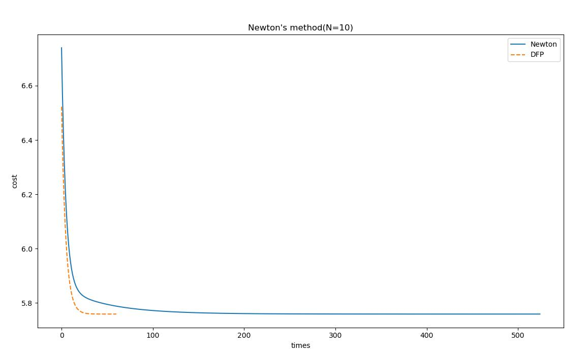
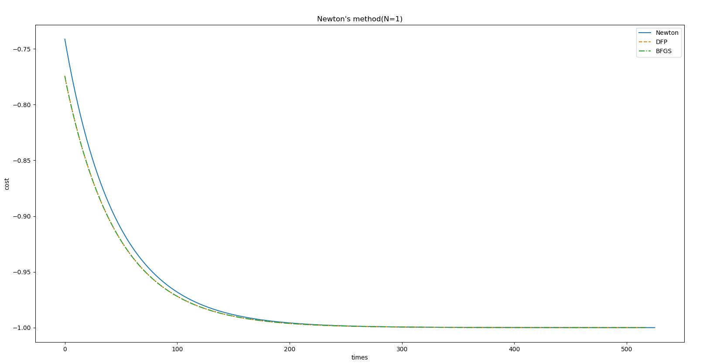
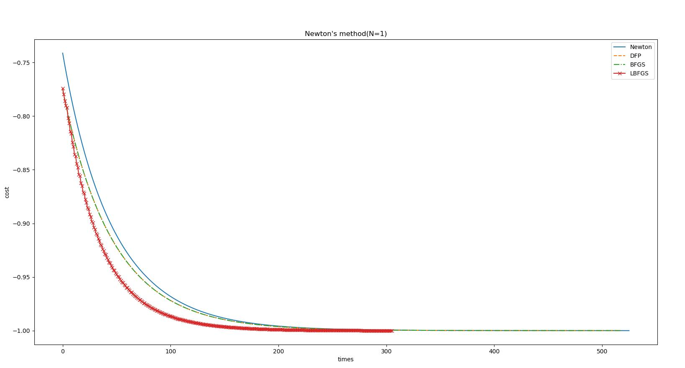

<!DOCTYPE html>
<html lang="zh" class="loading">
<head><meta name="generator" content="Hexo 3.9.0">
    <meta charset="UTF-8">
    <meta http-equiv="X-UA-Compatible" content="IE=edge,chrome=1">
    <meta name="viewport" content="width=device-width, minimum-scale=1.0, maximum-scale=1.0, user-scalable=no">
    <title>工程优化：牛顿法的缺陷及拟牛顿法的概念与实现 - WhiteRobe&#39;s Blog</title>
    <meta name="apple-mobile-web-app-capable" content="yes">
    <meta name="apple-mobile-web-app-status-bar-style" content="black-translucent">
    <meta name="google" content="notranslate">
    <link href="https://cdnjs.cloudflare.com/ajax/libs/KaTeX/0.11.0/katex.min.css" rel="stylesheet">
    <meta name="keywords" content="WhiteRobe, Blog,"> 
    <meta name="description" content="着眼实例，从最简单的开始；你觉得再简单不过的东西，或许在别人眼里那就是悬崖。而我，愿作那攀岩绳。,
 引用

Wikipedia:Quasi-Newton method


 Preliminaries
跟上一篇一样，要读懂这些内容，需要掌握以下内容：
 梯度

对于一维函数f(x)f(x)f(,"> 
    <meta name="author" content="WhiteRobe"> 
    <link rel="alternative" href="atom.xml" title="WhiteRobe&#39;s Blog" type="application/atom+xml"> 
    <link rel="icon" href="/img/favicon.png"> 
    <link rel="stylesheet" href="//cdn.jsdelivr.net/npm/gitalk@1/dist/gitalk.css">
    <link rel="stylesheet" href="/css/animate.css">
    <link rel="stylesheet" href="/css/fira_code.css">
    <link rel="stylesheet" href="/css/diaspora.css">
    <script async src="https://busuanzi.ibruce.info/busuanzi/2.3/busuanzi.pure.mini.js"></script>
    
        <!--站内搜索API-->
        <script src="https://cdn.jsdelivr.net/algoliasearch/3/algoliasearch.min.js"></script>
        <link rel="stylesheet" href="https://cdn.jsdelivr.net/npm/instantsearch.css@7.3.1/themes/algolia-min.css" integrity="sha256-HB49n/BZjuqiCtQQf49OdZn63XuKFaxcIHWf0HNKte8=" crossorigin="anonymous">
        <script src="https://cdn.jsdelivr.net/npm/instantsearch.js@3.4.0/dist/instantsearch.production.min.js" integrity="sha256-pM0n88cBFRHpSn0N26ETsQdwpA7WAXJDvkHeCLh3ujI=" crossorigin="anonymous"></script>
    
    <!-- <script async src="//pagead2.googlesyndication.com/pagead/js/adsbygoogle.js"></script>
    <script>
          // No more ads!
         (adsbygoogle = window.adsbygoogle || []).push({
              google_ad_client: "ca-pub-8691406134231910",
              enable_page_level_ads: true
         });
    </script>
    <script async custom-element="amp-auto-ads"
        src="https://cdn.ampproject.org/v0/amp-auto-ads-0.1.js">
    </script> -->
</head>
</html>
<body class="loading">
    <span id="config-title" style="display:none">WhiteRobe&#39;s Blog</span>
    <div id="loader"></div>
    <div id="single">
    <div id="top" style="display: block; display: block;position: fixed; top: 0px;">
    <div class="bar" style="width: 0;"></div>
    <a class="icon-home image-icon" href="javascript:;" data-url="https://blog.whiterobe.top"></a>
    <div title="播放/暂停" class="icon-play"></div>
    <h3 class="subtitle">工程优化：牛顿法的缺陷及拟牛顿法的概念与实现</h3>
    <div class="social">
        <!--<div class="like-icon">-->
            <!--<a href="javascript:;" class="likeThis active"><span class="icon-like"></span><span class="count">76</span></a>-->
        <!--</div>-->
        <div style="font-size: 1rem;margin-right: -10px">
          分享此文：
        </div>
        <div>
          <div class="share">
              <a title="获取文章地址二维码" class="icon-scan" href="javascript:;"></a>
          </div>
          <div id="qr"></div>
        </div>
    </div>
    <div class="scrollbar"></div>
</div>

    <div class="section" style="margin-top: 50px">
        <div class="article">
    <div class='main'>
        <h1 class="title">工程优化：牛顿法的缺陷及拟牛顿法的概念与实现</h1>
        <div class="stuff">
            <span>九月 21, 2019</span>
            <span id="busuanzi_container_page_pv" class="busuanzi_page" style="display:none">本文总阅读量<div id="busuanzi_value_page_pv" style="display: inline;">1</div>次</span>
            
  <ul class="post-tags-list"><li class="post-tags-list-item"><a class="post-tags-list-link" href="/tags/工程优化/">工程优化</a></li><li class="post-tags-list-item"><a class="post-tags-list-link" href="/tags/数理逻辑/">数理逻辑</a></li><li class="post-tags-list-item"><a class="post-tags-list-link" href="/tags/机器学习/">机器学习</a></li><li class="post-tags-list-item"><a class="post-tags-list-link" href="/tags/算法/">算法</a></li></ul>


        </div>
        <div class="low-resolution-warn-info">当前设备屏幕尺寸过小，推荐使用PC模式浏览。</div>
        <div class="content markdown">
            <p><span id="title"></span></p>
<h1 id="引用"><a class="markdownIt-Anchor" href="#引用"></a> 引用</h1>
<blockquote>
<p><a href="https://en.wikipedia.org/wiki/Quasi-Newton_method" target="_blank" rel="noopener">Wikipedia:Quasi-Newton method</a></p>
</blockquote>
<hr>
<h1 id="preliminaries"><a class="markdownIt-Anchor" href="#preliminaries"></a> Preliminaries</h1>
<p>跟<a href="/2019/09/20/zh/%E9%9A%8F%E6%9C%BA%E6%A2%AF%E5%BA%A6%E4%B8%8B%E9%99%8D/">上一篇</a>一样，要读懂这些内容，需要掌握以下内容：</p>
<h2 id="梯度"><a class="markdownIt-Anchor" href="#梯度"></a> 梯度</h2>
<ol>
<li>对于一维函数<span class="katex"><span class="katex-mathml"><math><semantics><mrow><mi>f</mi><mo stretchy="false">(</mo><mi>x</mi><mo stretchy="false">)</mo></mrow><annotation encoding="application/x-tex">f(x)</annotation></semantics></math></span><span class="katex-html" aria-hidden="true"><span class="base"><span class="strut" style="height:1em;vertical-align:-0.25em;"></span><span class="mord mathdefault" style="margin-right:0.10764em;">f</span><span class="mopen">(</span><span class="mord mathdefault">x</span><span class="mclose">)</span></span></span></span>，其导数定义为：</li>
</ol>
<p class="katex-block"><span class="katex-display"><span class="katex"><span class="katex-mathml"><math><semantics><mrow><msup><mi>f</mi><mo mathvariant="normal">′</mo></msup><mo stretchy="false">(</mo><mi>x</mi><mo stretchy="false">)</mo><mo>=</mo><munder><mo><mi>lim</mi><mo>⁡</mo></mo><mrow><mi mathvariant="normal">Δ</mi><mi>x</mi><mo>→</mo><mn>0</mn></mrow></munder><mfrac><mrow><mi>f</mi><mo stretchy="false">(</mo><msub><mi>x</mi><mn>0</mn></msub><mo>+</mo><mstyle mathsize="0.9em"><mi mathvariant="normal">Δ</mi><mi>x</mi><mo stretchy="false">)</mo><mo>−</mo><mi>f</mi><mo stretchy="false">(</mo><msub><mi>x</mi><mn>0</mn></msub><mo stretchy="false">)</mo></mstyle></mrow><mstyle mathsize="0.9em"><mi mathvariant="normal">Δ</mi><mi>x</mi></mstyle></mfrac></mrow><annotation encoding="application/x-tex">f&#x27;(x)=\lim \limits_{\Delta x \rightarrow 0} \frac{f(x_0+\small{\Delta} x)-f(x_0)}{\small{\Delta} x}
</annotation></semantics></math></span><span class="katex-html" aria-hidden="true"><span class="base"><span class="strut" style="height:1.051892em;vertical-align:-0.25em;"></span><span class="mord"><span class="mord mathdefault" style="margin-right:0.10764em;">f</span><span class="msupsub"><span class="vlist-t"><span class="vlist-r"><span class="vlist" style="height:0.801892em;"><span style="top:-3.113em;margin-right:0.05em;"><span class="pstrut" style="height:2.7em;"></span><span class="sizing reset-size6 size3 mtight"><span class="mord mtight"><span class="mord mtight">′</span></span></span></span></span></span></span></span></span><span class="mopen">(</span><span class="mord mathdefault">x</span><span class="mclose">)</span><span class="mspace" style="margin-right:0.2777777777777778em;"></span><span class="mrel">=</span><span class="mspace" style="margin-right:0.2777777777777778em;"></span></span><span class="base"><span class="strut" style="height:2.171331em;vertical-align:-0.744331em;"></span><span class="mop op-limits"><span class="vlist-t vlist-t2"><span class="vlist-r"><span class="vlist" style="height:0.69444em;"><span style="top:-2.055669em;margin-left:0em;"><span class="pstrut" style="height:2.7em;"></span><span class="sizing reset-size6 size3 mtight"><span class="mord mtight"><span class="mord mtight">Δ</span><span class="mord mathdefault mtight">x</span><span class="mrel mtight">→</span><span class="mord mtight">0</span></span></span></span><span style="top:-2.7em;"><span class="pstrut" style="height:2.7em;"></span><span><span class="mop">lim</span></span></span></span><span class="vlist-s">​</span></span><span class="vlist-r"><span class="vlist" style="height:0.744331em;"><span></span></span></span></span></span><span class="mspace" style="margin-right:0.16666666666666666em;"></span><span class="mord"><span class="mopen nulldelimiter"></span><span class="mfrac"><span class="vlist-t vlist-t2"><span class="vlist-r"><span class="vlist" style="height:1.427em;"><span style="top:-2.314em;"><span class="pstrut" style="height:3em;"></span><span class="mord"><span class="mord sizing reset-size6 size5"><span class="mord">Δ</span></span><span class="mord mathdefault sizing reset-size6 size5">x</span></span></span><span style="top:-3.23em;"><span class="pstrut" style="height:3em;"></span><span class="frac-line" style="border-bottom-width:0.04em;"></span></span><span style="top:-3.677em;"><span class="pstrut" style="height:3em;"></span><span class="mord"><span class="mord mathdefault" style="margin-right:0.10764em;">f</span><span class="mopen">(</span><span class="mord"><span class="mord mathdefault">x</span><span class="msupsub"><span class="vlist-t vlist-t2"><span class="vlist-r"><span class="vlist" style="height:0.30110799999999993em;"><span style="top:-2.5500000000000003em;margin-left:0em;margin-right:0.05em;"><span class="pstrut" style="height:2.7em;"></span><span class="sizing reset-size6 size3 mtight"><span class="mord mtight">0</span></span></span></span><span class="vlist-s">​</span></span><span class="vlist-r"><span class="vlist" style="height:0.15em;"><span></span></span></span></span></span></span><span class="mspace" style="margin-right:0.2222222222222222em;"></span><span class="mbin">+</span><span class="mspace" style="margin-right:0.2222222222222222em;"></span><span class="mord sizing reset-size6 size5"><span class="mord">Δ</span></span><span class="mord mathdefault sizing reset-size6 size5">x</span><span class="mclose sizing reset-size6 size5">)</span><span class="mspace" style="margin-right:0.2222222222222222em;"></span><span class="mbin sizing reset-size6 size5">−</span><span class="mspace" style="margin-right:0.2222222222222222em;"></span><span class="mord mathdefault sizing reset-size6 size5" style="margin-right:0.10764em;">f</span><span class="mopen sizing reset-size6 size5">(</span><span class="mord sizing reset-size6 size5"><span class="mord mathdefault">x</span><span class="msupsub"><span class="vlist-t vlist-t2"><span class="vlist-r"><span class="vlist" style="height:0.2796266666666667em;"><span style="top:-2.45em;margin-left:0em;margin-right:0.05555555555555556em;"><span class="pstrut" style="height:2.6em;"></span><span class="sizing reset-size5 size2 mtight"><span class="mord mtight">0</span></span></span></span><span class="vlist-s">​</span></span><span class="vlist-r"><span class="vlist" style="height:0.15em;"><span></span></span></span></span></span></span><span class="mclose sizing reset-size6 size5">)</span></span></span></span><span class="vlist-s">​</span></span><span class="vlist-r"><span class="vlist" style="height:0.686em;"><span></span></span></span></span></span><span class="mclose nulldelimiter"></span></span></span></span></span></span></p>
<ol start="2">
<li>对于多维函数<span class="katex"><span class="katex-mathml"><math><semantics><mrow><mi>f</mi><mo stretchy="false">(</mo><msub><mi>x</mi><mn>1</mn></msub><mo separator="true">,</mo><mi mathvariant="normal">.</mi><mi mathvariant="normal">.</mi><mi mathvariant="normal">.</mi><mo separator="true">,</mo><msub><mi>x</mi><mi>n</mi></msub><mo stretchy="false">)</mo></mrow><annotation encoding="application/x-tex">f(x_1,...,x_n)</annotation></semantics></math></span><span class="katex-html" aria-hidden="true"><span class="base"><span class="strut" style="height:1em;vertical-align:-0.25em;"></span><span class="mord mathdefault" style="margin-right:0.10764em;">f</span><span class="mopen">(</span><span class="mord"><span class="mord mathdefault">x</span><span class="msupsub"><span class="vlist-t vlist-t2"><span class="vlist-r"><span class="vlist" style="height:0.30110799999999993em;"><span style="top:-2.5500000000000003em;margin-left:0em;margin-right:0.05em;"><span class="pstrut" style="height:2.7em;"></span><span class="sizing reset-size6 size3 mtight"><span class="mord mtight">1</span></span></span></span><span class="vlist-s">​</span></span><span class="vlist-r"><span class="vlist" style="height:0.15em;"><span></span></span></span></span></span></span><span class="mpunct">,</span><span class="mspace" style="margin-right:0.16666666666666666em;"></span><span class="mord">.</span><span class="mord">.</span><span class="mord">.</span><span class="mpunct">,</span><span class="mspace" style="margin-right:0.16666666666666666em;"></span><span class="mord"><span class="mord mathdefault">x</span><span class="msupsub"><span class="vlist-t vlist-t2"><span class="vlist-r"><span class="vlist" style="height:0.151392em;"><span style="top:-2.5500000000000003em;margin-left:0em;margin-right:0.05em;"><span class="pstrut" style="height:2.7em;"></span><span class="sizing reset-size6 size3 mtight"><span class="mord mathdefault mtight">n</span></span></span></span><span class="vlist-s">​</span></span><span class="vlist-r"><span class="vlist" style="height:0.15em;"><span></span></span></span></span></span></span><span class="mclose">)</span></span></span></span>，对<span class="katex"><span class="katex-mathml"><math><semantics><mrow><msub><mi>x</mi><mi>i</mi></msub></mrow><annotation encoding="application/x-tex">x_i</annotation></semantics></math></span><span class="katex-html" aria-hidden="true"><span class="base"><span class="strut" style="height:0.58056em;vertical-align:-0.15em;"></span><span class="mord"><span class="mord mathdefault">x</span><span class="msupsub"><span class="vlist-t vlist-t2"><span class="vlist-r"><span class="vlist" style="height:0.31166399999999994em;"><span style="top:-2.5500000000000003em;margin-left:0em;margin-right:0.05em;"><span class="pstrut" style="height:2.7em;"></span><span class="sizing reset-size6 size3 mtight"><span class="mord mathdefault mtight">i</span></span></span></span><span class="vlist-s">​</span></span><span class="vlist-r"><span class="vlist" style="height:0.15em;"><span></span></span></span></span></span></span></span></span></span>求导数<span class="katex"><span class="katex-mathml"><math><semantics><mrow><mfrac><mrow><mi>d</mi><mi>f</mi></mrow><mrow><mi>d</mi><msub><mi>x</mi><mi>i</mi></msub></mrow></mfrac></mrow><annotation encoding="application/x-tex">\frac{df}{dx_i}</annotation></semantics></math></span><span class="katex-html" aria-hidden="true"><span class="base"><span class="strut" style="height:1.377316em;vertical-align:-0.44509999999999994em;"></span><span class="mord"><span class="mopen nulldelimiter"></span><span class="mfrac"><span class="vlist-t vlist-t2"><span class="vlist-r"><span class="vlist" style="height:0.9322159999999999em;"><span style="top:-2.655em;"><span class="pstrut" style="height:3em;"></span><span class="sizing reset-size6 size3 mtight"><span class="mord mtight"><span class="mord mathdefault mtight">d</span><span class="mord mtight"><span class="mord mathdefault mtight">x</span><span class="msupsub"><span class="vlist-t vlist-t2"><span class="vlist-r"><span class="vlist" style="height:0.3280857142857143em;"><span style="top:-2.357em;margin-left:0em;margin-right:0.07142857142857144em;"><span class="pstrut" style="height:2.5em;"></span><span class="sizing reset-size3 size1 mtight"><span class="mord mathdefault mtight">i</span></span></span></span><span class="vlist-s">​</span></span><span class="vlist-r"><span class="vlist" style="height:0.143em;"><span></span></span></span></span></span></span></span></span></span><span style="top:-3.23em;"><span class="pstrut" style="height:3em;"></span><span class="frac-line" style="border-bottom-width:0.04em;"></span></span><span style="top:-3.446108em;"><span class="pstrut" style="height:3em;"></span><span class="sizing reset-size6 size3 mtight"><span class="mord mtight"><span class="mord mathdefault mtight">d</span><span class="mord mathdefault mtight" style="margin-right:0.10764em;">f</span></span></span></span></span><span class="vlist-s">​</span></span><span class="vlist-r"><span class="vlist" style="height:0.44509999999999994em;"><span></span></span></span></span></span><span class="mclose nulldelimiter"></span></span></span></span></span>，将其记为偏导数<span class="katex"><span class="katex-mathml"><math><semantics><mrow><mfrac><mrow><mi mathvariant="normal">∂</mi><mi>f</mi></mrow><mrow><mi mathvariant="normal">∂</mi><msub><mi>x</mi><mi>I</mi></msub></mrow></mfrac></mrow><annotation encoding="application/x-tex">\frac{\partial f}{\partial x_I}</annotation></semantics></math></span><span class="katex-html" aria-hidden="true"><span class="base"><span class="strut" style="height:1.3775209999999998em;vertical-align:-0.44530499999999995em;"></span><span class="mord"><span class="mopen nulldelimiter"></span><span class="mfrac"><span class="vlist-t vlist-t2"><span class="vlist-r"><span class="vlist" style="height:0.9322159999999999em;"><span style="top:-2.6550000000000002em;"><span class="pstrut" style="height:3em;"></span><span class="sizing reset-size6 size3 mtight"><span class="mord mtight"><span class="mord mtight" style="margin-right:0.05556em;">∂</span><span class="mord mtight"><span class="mord mathdefault mtight">x</span><span class="msupsub"><span class="vlist-t vlist-t2"><span class="vlist-r"><span class="vlist" style="height:0.3448em;"><span style="top:-2.3567071428571427em;margin-left:0em;margin-right:0.07142857142857144em;"><span class="pstrut" style="height:2.5em;"></span><span class="sizing reset-size3 size1 mtight"><span class="mord mathdefault mtight" style="margin-right:0.07847em;">I</span></span></span></span><span class="vlist-s">​</span></span><span class="vlist-r"><span class="vlist" style="height:0.14329285714285717em;"><span></span></span></span></span></span></span></span></span></span><span style="top:-3.23em;"><span class="pstrut" style="height:3em;"></span><span class="frac-line" style="border-bottom-width:0.04em;"></span></span><span style="top:-3.446108em;"><span class="pstrut" style="height:3em;"></span><span class="sizing reset-size6 size3 mtight"><span class="mord mtight"><span class="mord mtight" style="margin-right:0.05556em;">∂</span><span class="mord mathdefault mtight" style="margin-right:0.10764em;">f</span></span></span></span></span><span class="vlist-s">​</span></span><span class="vlist-r"><span class="vlist" style="height:0.44530499999999995em;"><span></span></span></span></span></span><span class="mclose nulldelimiter"></span></span></span></span></span>。特别的，记录梯度<span class="katex"><span class="katex-mathml"><math><semantics><mrow><mi mathvariant="normal">▽</mi><mi>f</mi><mo stretchy="false">(</mo><mi>x</mi><mo stretchy="false">)</mo></mrow><annotation encoding="application/x-tex">\triangledown f(x)</annotation></semantics></math></span><span class="katex-html" aria-hidden="true"><span class="base"><span class="strut" style="height:1em;vertical-align:-0.25em;"></span><span class="mord amsrm">▽</span><span class="mord mathdefault" style="margin-right:0.10764em;">f</span><span class="mopen">(</span><span class="mord mathdefault">x</span><span class="mclose">)</span></span></span></span>或简记为<span class="katex"><span class="katex-mathml"><math><semantics><mrow><mi mathvariant="normal">▽</mi><mi>f</mi></mrow><annotation encoding="application/x-tex">\triangledown f</annotation></semantics></math></span><span class="katex-html" aria-hidden="true"><span class="base"><span class="strut" style="height:0.8888799999999999em;vertical-align:-0.19444em;"></span><span class="mord amsrm">▽</span><span class="mord mathdefault" style="margin-right:0.10764em;">f</span></span></span></span>为对<span class="katex"><span class="katex-mathml"><math><semantics><mrow><msub><mi>x</mi><mi>i</mi></msub></mrow><annotation encoding="application/x-tex">x_i</annotation></semantics></math></span><span class="katex-html" aria-hidden="true"><span class="base"><span class="strut" style="height:0.58056em;vertical-align:-0.15em;"></span><span class="mord"><span class="mord mathdefault">x</span><span class="msupsub"><span class="vlist-t vlist-t2"><span class="vlist-r"><span class="vlist" style="height:0.31166399999999994em;"><span style="top:-2.5500000000000003em;margin-left:0em;margin-right:0.05em;"><span class="pstrut" style="height:2.7em;"></span><span class="sizing reset-size6 size3 mtight"><span class="mord mathdefault mtight">i</span></span></span></span><span class="vlist-s">​</span></span><span class="vlist-r"><span class="vlist" style="height:0.15em;"><span></span></span></span></span></span></span></span></span></span>求偏导后的列向量：</li>
</ol>
<p class="katex-block"><span class="katex-display"><span class="katex"><span class="katex-mathml"><math><semantics><mrow><mi mathvariant="normal">▽</mi><mi>f</mi><mo stretchy="false">(</mo><mi>x</mi><mo stretchy="false">)</mo><mo>=</mo><mo stretchy="false">(</mo><mfrac><mrow><mi mathvariant="normal">∂</mi><mi>f</mi></mrow><mrow><mi mathvariant="normal">∂</mi><msub><mi>x</mi><mn>1</mn></msub></mrow></mfrac><mo separator="true">,</mo><mfrac><mrow><mi mathvariant="normal">∂</mi><mi>f</mi></mrow><mrow><mi mathvariant="normal">∂</mi><msub><mi>x</mi><mn>2</mn></msub></mrow></mfrac><mo separator="true">,</mo><mi mathvariant="normal">.</mi><mi mathvariant="normal">.</mi><mi mathvariant="normal">.</mi><mo separator="true">,</mo><mfrac><mrow><mi mathvariant="normal">∂</mi><mi>f</mi></mrow><mrow><mi mathvariant="normal">∂</mi><msub><mi>x</mi><mn>1</mn></msub></mrow></mfrac><msup><mo stretchy="false">)</mo><mi>T</mi></msup></mrow><annotation encoding="application/x-tex">\triangledown f(x)=(\frac{\partial f}{\partial x_1}, \frac{\partial f}{\partial x_2},..., \frac{\partial f}{\partial x_1})^T
</annotation></semantics></math></span><span class="katex-html" aria-hidden="true"><span class="base"><span class="strut" style="height:1em;vertical-align:-0.25em;"></span><span class="mord amsrm">▽</span><span class="mord mathdefault" style="margin-right:0.10764em;">f</span><span class="mopen">(</span><span class="mord mathdefault">x</span><span class="mclose">)</span><span class="mspace" style="margin-right:0.2777777777777778em;"></span><span class="mrel">=</span><span class="mspace" style="margin-right:0.2777777777777778em;"></span></span><span class="base"><span class="strut" style="height:2.20744em;vertical-align:-0.8360000000000001em;"></span><span class="mopen">(</span><span class="mord"><span class="mopen nulldelimiter"></span><span class="mfrac"><span class="vlist-t vlist-t2"><span class="vlist-r"><span class="vlist" style="height:1.3714399999999998em;"><span style="top:-2.3139999999999996em;"><span class="pstrut" style="height:3em;"></span><span class="mord"><span class="mord" style="margin-right:0.05556em;">∂</span><span class="mord"><span class="mord mathdefault">x</span><span class="msupsub"><span class="vlist-t vlist-t2"><span class="vlist-r"><span class="vlist" style="height:0.30110799999999993em;"><span style="top:-2.5500000000000003em;margin-left:0em;margin-right:0.05em;"><span class="pstrut" style="height:2.7em;"></span><span class="sizing reset-size6 size3 mtight"><span class="mord mtight">1</span></span></span></span><span class="vlist-s">​</span></span><span class="vlist-r"><span class="vlist" style="height:0.15em;"><span></span></span></span></span></span></span></span></span><span style="top:-3.23em;"><span class="pstrut" style="height:3em;"></span><span class="frac-line" style="border-bottom-width:0.04em;"></span></span><span style="top:-3.677em;"><span class="pstrut" style="height:3em;"></span><span class="mord"><span class="mord" style="margin-right:0.05556em;">∂</span><span class="mord mathdefault" style="margin-right:0.10764em;">f</span></span></span></span><span class="vlist-s">​</span></span><span class="vlist-r"><span class="vlist" style="height:0.8360000000000001em;"><span></span></span></span></span></span><span class="mclose nulldelimiter"></span></span><span class="mpunct">,</span><span class="mspace" style="margin-right:0.16666666666666666em;"></span><span class="mord"><span class="mopen nulldelimiter"></span><span class="mfrac"><span class="vlist-t vlist-t2"><span class="vlist-r"><span class="vlist" style="height:1.3714399999999998em;"><span style="top:-2.3139999999999996em;"><span class="pstrut" style="height:3em;"></span><span class="mord"><span class="mord" style="margin-right:0.05556em;">∂</span><span class="mord"><span class="mord mathdefault">x</span><span class="msupsub"><span class="vlist-t vlist-t2"><span class="vlist-r"><span class="vlist" style="height:0.30110799999999993em;"><span style="top:-2.5500000000000003em;margin-left:0em;margin-right:0.05em;"><span class="pstrut" style="height:2.7em;"></span><span class="sizing reset-size6 size3 mtight"><span class="mord mtight">2</span></span></span></span><span class="vlist-s">​</span></span><span class="vlist-r"><span class="vlist" style="height:0.15em;"><span></span></span></span></span></span></span></span></span><span style="top:-3.23em;"><span class="pstrut" style="height:3em;"></span><span class="frac-line" style="border-bottom-width:0.04em;"></span></span><span style="top:-3.677em;"><span class="pstrut" style="height:3em;"></span><span class="mord"><span class="mord" style="margin-right:0.05556em;">∂</span><span class="mord mathdefault" style="margin-right:0.10764em;">f</span></span></span></span><span class="vlist-s">​</span></span><span class="vlist-r"><span class="vlist" style="height:0.8360000000000001em;"><span></span></span></span></span></span><span class="mclose nulldelimiter"></span></span><span class="mpunct">,</span><span class="mspace" style="margin-right:0.16666666666666666em;"></span><span class="mord">.</span><span class="mord">.</span><span class="mord">.</span><span class="mpunct">,</span><span class="mspace" style="margin-right:0.16666666666666666em;"></span><span class="mord"><span class="mopen nulldelimiter"></span><span class="mfrac"><span class="vlist-t vlist-t2"><span class="vlist-r"><span class="vlist" style="height:1.3714399999999998em;"><span style="top:-2.3139999999999996em;"><span class="pstrut" style="height:3em;"></span><span class="mord"><span class="mord" style="margin-right:0.05556em;">∂</span><span class="mord"><span class="mord mathdefault">x</span><span class="msupsub"><span class="vlist-t vlist-t2"><span class="vlist-r"><span class="vlist" style="height:0.30110799999999993em;"><span style="top:-2.5500000000000003em;margin-left:0em;margin-right:0.05em;"><span class="pstrut" style="height:2.7em;"></span><span class="sizing reset-size6 size3 mtight"><span class="mord mtight">1</span></span></span></span><span class="vlist-s">​</span></span><span class="vlist-r"><span class="vlist" style="height:0.15em;"><span></span></span></span></span></span></span></span></span><span style="top:-3.23em;"><span class="pstrut" style="height:3em;"></span><span class="frac-line" style="border-bottom-width:0.04em;"></span></span><span style="top:-3.677em;"><span class="pstrut" style="height:3em;"></span><span class="mord"><span class="mord" style="margin-right:0.05556em;">∂</span><span class="mord mathdefault" style="margin-right:0.10764em;">f</span></span></span></span><span class="vlist-s">​</span></span><span class="vlist-r"><span class="vlist" style="height:0.8360000000000001em;"><span></span></span></span></span></span><span class="mclose nulldelimiter"></span></span><span class="mclose"><span class="mclose">)</span><span class="msupsub"><span class="vlist-t"><span class="vlist-r"><span class="vlist" style="height:0.8913309999999999em;"><span style="top:-3.113em;margin-right:0.05em;"><span class="pstrut" style="height:2.7em;"></span><span class="sizing reset-size6 size3 mtight"><span class="mord mathdefault mtight" style="margin-right:0.13889em;">T</span></span></span></span></span></span></span></span></span></span></span></span></p>
<h2 id="海森矩阵hessian-matrix"><a class="markdownIt-Anchor" href="#海森矩阵hessian-matrix"></a> 海森矩阵(Hessian matrix)</h2>
<ol>
<li>若存在<span class="katex"><span class="katex-mathml"><math><semantics><mrow><mi>f</mi><mo>:</mo><msup><mi mathvariant="double-struck">R</mi><mi>n</mi></msup><mo>→</mo><mi mathvariant="double-struck">R</mi></mrow><annotation encoding="application/x-tex">f:\R^n \rightarrow \R</annotation></semantics></math></span><span class="katex-html" aria-hidden="true"><span class="base"><span class="strut" style="height:0.8888799999999999em;vertical-align:-0.19444em;"></span><span class="mord mathdefault" style="margin-right:0.10764em;">f</span><span class="mspace" style="margin-right:0.2777777777777778em;"></span><span class="mrel">:</span><span class="mspace" style="margin-right:0.2777777777777778em;"></span></span><span class="base"><span class="strut" style="height:0.68889em;vertical-align:0em;"></span><span class="mord"><span class="mord"><span class="mord mathbb">R</span></span><span class="msupsub"><span class="vlist-t"><span class="vlist-r"><span class="vlist" style="height:0.664392em;"><span style="top:-3.063em;margin-right:0.05em;"><span class="pstrut" style="height:2.7em;"></span><span class="sizing reset-size6 size3 mtight"><span class="mord mathdefault mtight">n</span></span></span></span></span></span></span></span><span class="mspace" style="margin-right:0.2777777777777778em;"></span><span class="mrel">→</span><span class="mspace" style="margin-right:0.2777777777777778em;"></span></span><span class="base"><span class="strut" style="height:0.68889em;vertical-align:0em;"></span><span class="mord"><span class="mord mathbb">R</span></span></span></span></span>，即一个多维输入<span class="katex"><span class="katex-mathml"><math><semantics><mrow><mi>x</mi><mo>∈</mo><mi mathvariant="double-struck">R</mi></mrow><annotation encoding="application/x-tex">x\in\R</annotation></semantics></math></span><span class="katex-html" aria-hidden="true"><span class="base"><span class="strut" style="height:0.5782em;vertical-align:-0.0391em;"></span><span class="mord mathdefault">x</span><span class="mspace" style="margin-right:0.2777777777777778em;"></span><span class="mrel">∈</span><span class="mspace" style="margin-right:0.2777777777777778em;"></span></span><span class="base"><span class="strut" style="height:0.68889em;vertical-align:0em;"></span><span class="mord"><span class="mord mathbb">R</span></span></span></span></span>到一维输出的映射，若其在任意维度上都二阶可导，则定义其海森矩阵：</li>
</ol>
<p class="katex-block"><span class="katex-display"><span class="katex"><span class="katex-mathml"><math><semantics><mrow><mi>H</mi><mo>=</mo><mrow><mo fence="true">[</mo><mtable rowspacing="0.15999999999999992em" columnspacing="1em"><mtr><mtd><mstyle scriptlevel="0" displaystyle="false"><mfrac><mrow><mi mathvariant="normal">∂</mi><msup><mi>f</mi><mn>2</mn></msup></mrow><mrow><mi mathvariant="normal">∂</mi><msubsup><mi>x</mi><mn>1</mn><mn>2</mn></msubsup></mrow></mfrac></mstyle></mtd><mtd><mstyle scriptlevel="0" displaystyle="false"><mfrac><mrow><mi mathvariant="normal">∂</mi><msup><mi>f</mi><mn>2</mn></msup></mrow><mrow><mi mathvariant="normal">∂</mi><msub><mi>x</mi><mn>1</mn></msub><mi mathvariant="normal">∂</mi><msub><mi>x</mi><mn>2</mn></msub></mrow></mfrac></mstyle></mtd><mtd><mstyle scriptlevel="0" displaystyle="false"><mo>⋯</mo></mstyle></mtd><mtd><mstyle scriptlevel="0" displaystyle="false"><mfrac><mrow><mi mathvariant="normal">∂</mi><msup><mi>f</mi><mn>2</mn></msup></mrow><mrow><mi mathvariant="normal">∂</mi><msub><mi>x</mi><mn>1</mn></msub><mi mathvariant="normal">∂</mi><msub><mi>x</mi><mi>n</mi></msub></mrow></mfrac></mstyle></mtd></mtr><mtr><mtd><mstyle scriptlevel="0" displaystyle="false"><mfrac><mrow><mi mathvariant="normal">∂</mi><msup><mi>f</mi><mn>2</mn></msup></mrow><mrow><mi mathvariant="normal">∂</mi><msub><mi>x</mi><mn>2</mn></msub><mi mathvariant="normal">∂</mi><msub><mi>x</mi><mn>1</mn></msub></mrow></mfrac></mstyle></mtd><mtd><mstyle scriptlevel="0" displaystyle="false"><mfrac><mrow><mi mathvariant="normal">∂</mi><msup><mi>f</mi><mn>2</mn></msup></mrow><mrow><mi mathvariant="normal">∂</mi><msubsup><mi>x</mi><mn>2</mn><mn>2</mn></msubsup></mrow></mfrac></mstyle></mtd><mtd><mstyle scriptlevel="0" displaystyle="false"><mo>⋯</mo></mstyle></mtd><mtd><mstyle scriptlevel="0" displaystyle="false"><mfrac><mrow><mi mathvariant="normal">∂</mi><msup><mi>f</mi><mn>2</mn></msup></mrow><mrow><mi mathvariant="normal">∂</mi><msub><mi>x</mi><mn>2</mn></msub><mi mathvariant="normal">∂</mi><msub><mi>x</mi><mi>n</mi></msub></mrow></mfrac></mstyle></mtd></mtr><mtr><mtd><mstyle scriptlevel="0" displaystyle="false"><mi mathvariant="normal">⋮</mi><mpadded height="+0em" voffset="0em"><mspace mathbackground="black" width="0em" height="1.5em"></mspace></mpadded></mstyle></mtd><mtd><mstyle scriptlevel="0" displaystyle="false"><mi mathvariant="normal">⋮</mi><mpadded height="+0em" voffset="0em"><mspace mathbackground="black" width="0em" height="1.5em"></mspace></mpadded></mstyle></mtd><mtd><mstyle scriptlevel="0" displaystyle="false"><mo>⋱</mo></mstyle></mtd><mtd><mstyle scriptlevel="0" displaystyle="false"><mi mathvariant="normal">⋮</mi><mpadded height="+0em" voffset="0em"><mspace mathbackground="black" width="0em" height="1.5em"></mspace></mpadded></mstyle></mtd></mtr><mtr><mtd><mstyle scriptlevel="0" displaystyle="false"><mfrac><mrow><mi mathvariant="normal">∂</mi><msup><mi>f</mi><mn>2</mn></msup></mrow><mrow><mi mathvariant="normal">∂</mi><msub><mi>x</mi><mi>n</mi></msub><mi mathvariant="normal">∂</mi><msub><mi>x</mi><mn>1</mn></msub></mrow></mfrac></mstyle></mtd><mtd><mstyle scriptlevel="0" displaystyle="false"><mfrac><mrow><mi mathvariant="normal">∂</mi><msup><mi>f</mi><mn>2</mn></msup></mrow><mrow><mi mathvariant="normal">∂</mi><msub><mi>x</mi><mi>n</mi></msub><mi mathvariant="normal">∂</mi><msub><mi>x</mi><mn>2</mn></msub></mrow></mfrac></mstyle></mtd><mtd><mstyle scriptlevel="0" displaystyle="false"><mo>⋯</mo></mstyle></mtd><mtd><mstyle scriptlevel="0" displaystyle="false"><mfrac><mrow><mi mathvariant="normal">∂</mi><msup><mi>f</mi><mn>2</mn></msup></mrow><mrow><mi mathvariant="normal">∂</mi><msubsup><mi>x</mi><mi>n</mi><mn>2</mn></msubsup></mrow></mfrac></mstyle></mtd></mtr></mtable><mo fence="true">]</mo></mrow></mrow><annotation encoding="application/x-tex">H = \begin{bmatrix}
\frac{\partial f^2}{\partial x_1^2} &amp; \frac{\partial f^2}{\partial x_1\partial x_2} &amp; \cdots &amp;\frac{\partial f^2}{\partial x_1 \partial x_n} \\
\frac{\partial f^2}{\partial x_2 \partial x_1} &amp; \frac{\partial f^2}{\partial x_2^2} &amp; \cdots &amp;\frac{\partial f^2}{\partial x_2 \partial x_n} \\
\vdots &amp; \vdots &amp; \ddots&amp; \vdots \\
\frac{\partial f^2}{\partial x_n \partial x_1} &amp; \frac{\partial f^2}{\partial x_n\partial x_2} &amp; \cdots &amp;\frac{\partial f^2}{ \partial x_n^2} 
\end{bmatrix}</annotation></semantics></math></span><span class="katex-html" aria-hidden="true"><span class="base"><span class="strut" style="height:0.68333em;vertical-align:0em;"></span><span class="mord mathdefault" style="margin-right:0.08125em;">H</span><span class="mspace" style="margin-right:0.2777777777777778em;"></span><span class="mrel">=</span><span class="mspace" style="margin-right:0.2777777777777778em;"></span></span><span class="base"><span class="strut" style="height:6.798564em;vertical-align:-3.1492820000000004em;"></span><span class="minner"><span class="mopen"><span class="delimsizing mult"><span class="vlist-t vlist-t2"><span class="vlist-r"><span class="vlist" style="height:3.554995em;"><span style="top:-0.7499750000000004em;"><span class="pstrut" style="height:3.1550000000000002em;"></span><span class="delimsizinginner delim-size4"><span>⎣</span></span></span><span style="top:-1.9049750000000003em;"><span class="pstrut" style="height:3.1550000000000002em;"></span><span class="delimsizinginner delim-size4"><span>⎢</span></span></span><span style="top:-2.5059750000000003em;"><span class="pstrut" style="height:3.1550000000000002em;"></span><span class="delimsizinginner delim-size4"><span>⎢</span></span></span><span style="top:-3.1069750000000003em;"><span class="pstrut" style="height:3.1550000000000002em;"></span><span class="delimsizinginner delim-size4"><span>⎢</span></span></span><span style="top:-3.7079750000000002em;"><span class="pstrut" style="height:3.1550000000000002em;"></span><span class="delimsizinginner delim-size4"><span>⎢</span></span></span><span style="top:-4.308975em;"><span class="pstrut" style="height:3.1550000000000002em;"></span><span class="delimsizinginner delim-size4"><span>⎢</span></span></span><span style="top:-5.554995em;"><span class="pstrut" style="height:3.1550000000000002em;"></span><span class="delimsizinginner delim-size4"><span>⎡</span></span></span></span><span class="vlist-s">​</span></span><span class="vlist-r"><span class="vlist" style="height:3.050045em;"><span></span></span></span></span></span></span><span class="mord"><span class="mtable"><span class="col-align-c"><span class="vlist-t vlist-t2"><span class="vlist-r"><span class="vlist" style="height:3.6492819999999995em;"><span style="top:-6.266754em;"><span class="pstrut" style="height:3.6875em;"></span><span class="mord"><span class="mord"><span class="mopen nulldelimiter"></span><span class="mfrac"><span class="vlist-t vlist-t2"><span class="vlist-r"><span class="vlist" style="height:1.070028em;"><span style="top:-2.62642em;"><span class="pstrut" style="height:3em;"></span><span class="sizing reset-size6 size3 mtight"><span class="mord mtight"><span class="mord mtight" style="margin-right:0.05556em;">∂</span><span class="mord mtight"><span class="mord mathdefault mtight">x</span><span class="msupsub"><span class="vlist-t vlist-t2"><span class="vlist-r"><span class="vlist" style="height:0.8051142857142857em;"><span style="top:-2.188485714285714em;margin-left:0em;margin-right:0.07142857142857144em;"><span class="pstrut" style="height:2.5em;"></span><span class="sizing reset-size3 size1 mtight"><span class="mord mtight">1</span></span></span><span style="top:-2.8448em;margin-right:0.07142857142857144em;"><span class="pstrut" style="height:2.5em;"></span><span class="sizing reset-size3 size1 mtight"><span class="mord mtight">2</span></span></span></span><span class="vlist-s">​</span></span><span class="vlist-r"><span class="vlist" style="height:0.31151428571428574em;"><span></span></span></span></span></span></span></span></span></span><span style="top:-3.23em;"><span class="pstrut" style="height:3em;"></span><span class="frac-line" style="border-bottom-width:0.04em;"></span></span><span style="top:-3.446108em;"><span class="pstrut" style="height:3em;"></span><span class="sizing reset-size6 size3 mtight"><span class="mord mtight"><span class="mord mtight" style="margin-right:0.05556em;">∂</span><span class="mord mtight"><span class="mord mathdefault mtight" style="margin-right:0.10764em;">f</span><span class="msupsub"><span class="vlist-t"><span class="vlist-r"><span class="vlist" style="height:0.8913142857142857em;"><span style="top:-2.931em;margin-right:0.07142857142857144em;"><span class="pstrut" style="height:2.5em;"></span><span class="sizing reset-size3 size1 mtight"><span class="mord mtight">2</span></span></span></span></span></span></span></span></span></span></span></span><span class="vlist-s">​</span></span><span class="vlist-r"><span class="vlist" style="height:0.5916399999999999em;"><span></span></span></span></span></span><span class="mclose nulldelimiter"></span></span></span></span><span style="top:-4.605085999999999em;"><span class="pstrut" style="height:3.6875em;"></span><span class="mord"><span class="mord"><span class="mopen nulldelimiter"></span><span class="mfrac"><span class="vlist-t vlist-t2"><span class="vlist-r"><span class="vlist" style="height:1.070028em;"><span style="top:-2.655em;"><span class="pstrut" style="height:3em;"></span><span class="sizing reset-size6 size3 mtight"><span class="mord mtight"><span class="mord mtight" style="margin-right:0.05556em;">∂</span><span class="mord mtight"><span class="mord mathdefault mtight">x</span><span class="msupsub"><span class="vlist-t vlist-t2"><span class="vlist-r"><span class="vlist" style="height:0.31731428571428577em;"><span style="top:-2.357em;margin-left:0em;margin-right:0.07142857142857144em;"><span class="pstrut" style="height:2.5em;"></span><span class="sizing reset-size3 size1 mtight"><span class="mord mtight">2</span></span></span></span><span class="vlist-s">​</span></span><span class="vlist-r"><span class="vlist" style="height:0.143em;"><span></span></span></span></span></span></span><span class="mord mtight" style="margin-right:0.05556em;">∂</span><span class="mord mtight"><span class="mord mathdefault mtight">x</span><span class="msupsub"><span class="vlist-t vlist-t2"><span class="vlist-r"><span class="vlist" style="height:0.31731428571428577em;"><span style="top:-2.357em;margin-left:0em;margin-right:0.07142857142857144em;"><span class="pstrut" style="height:2.5em;"></span><span class="sizing reset-size3 size1 mtight"><span class="mord mtight">1</span></span></span></span><span class="vlist-s">​</span></span><span class="vlist-r"><span class="vlist" style="height:0.143em;"><span></span></span></span></span></span></span></span></span></span><span style="top:-3.23em;"><span class="pstrut" style="height:3em;"></span><span class="frac-line" style="border-bottom-width:0.04em;"></span></span><span style="top:-3.446108em;"><span class="pstrut" style="height:3em;"></span><span class="sizing reset-size6 size3 mtight"><span class="mord mtight"><span class="mord mtight" style="margin-right:0.05556em;">∂</span><span class="mord mtight"><span class="mord mathdefault mtight" style="margin-right:0.10764em;">f</span><span class="msupsub"><span class="vlist-t"><span class="vlist-r"><span class="vlist" style="height:0.8913142857142857em;"><span style="top:-2.931em;margin-right:0.07142857142857144em;"><span class="pstrut" style="height:2.5em;"></span><span class="sizing reset-size3 size1 mtight"><span class="mord mtight">2</span></span></span></span></span></span></span></span></span></span></span></span><span class="vlist-s">​</span></span><span class="vlist-r"><span class="vlist" style="height:0.44509999999999994em;"><span></span></span></span></span></span><span class="mclose nulldelimiter"></span></span></span></span><span style="top:-2.5134459999999996em;"><span class="pstrut" style="height:3.6875em;"></span><span class="mord"><span class="mord"><span class="mord">⋮</span><span class="mord rule" style="border-right-width:0em;border-top-width:1.5em;bottom:0em;"></span></span></span></span><span style="top:-1.0834179999999995em;"><span class="pstrut" style="height:3.6875em;"></span><span class="mord"><span class="mord"><span class="mopen nulldelimiter"></span><span class="mfrac"><span class="vlist-t vlist-t2"><span class="vlist-r"><span class="vlist" style="height:1.070028em;"><span style="top:-2.655em;"><span class="pstrut" style="height:3em;"></span><span class="sizing reset-size6 size3 mtight"><span class="mord mtight"><span class="mord mtight" style="margin-right:0.05556em;">∂</span><span class="mord mtight"><span class="mord mathdefault mtight">x</span><span class="msupsub"><span class="vlist-t vlist-t2"><span class="vlist-r"><span class="vlist" style="height:0.16454285714285719em;"><span style="top:-2.357em;margin-left:0em;margin-right:0.07142857142857144em;"><span class="pstrut" style="height:2.5em;"></span><span class="sizing reset-size3 size1 mtight"><span class="mord mathdefault mtight">n</span></span></span></span><span class="vlist-s">​</span></span><span class="vlist-r"><span class="vlist" style="height:0.143em;"><span></span></span></span></span></span></span><span class="mord mtight" style="margin-right:0.05556em;">∂</span><span class="mord mtight"><span class="mord mathdefault mtight">x</span><span class="msupsub"><span class="vlist-t vlist-t2"><span class="vlist-r"><span class="vlist" style="height:0.31731428571428577em;"><span style="top:-2.357em;margin-left:0em;margin-right:0.07142857142857144em;"><span class="pstrut" style="height:2.5em;"></span><span class="sizing reset-size3 size1 mtight"><span class="mord mtight">1</span></span></span></span><span class="vlist-s">​</span></span><span class="vlist-r"><span class="vlist" style="height:0.143em;"><span></span></span></span></span></span></span></span></span></span><span style="top:-3.23em;"><span class="pstrut" style="height:3em;"></span><span class="frac-line" style="border-bottom-width:0.04em;"></span></span><span style="top:-3.446108em;"><span class="pstrut" style="height:3em;"></span><span class="sizing reset-size6 size3 mtight"><span class="mord mtight"><span class="mord mtight" style="margin-right:0.05556em;">∂</span><span class="mord mtight"><span class="mord mathdefault mtight" style="margin-right:0.10764em;">f</span><span class="msupsub"><span class="vlist-t"><span class="vlist-r"><span class="vlist" style="height:0.8913142857142857em;"><span style="top:-2.931em;margin-right:0.07142857142857144em;"><span class="pstrut" style="height:2.5em;"></span><span class="sizing reset-size3 size1 mtight"><span class="mord mtight">2</span></span></span></span></span></span></span></span></span></span></span></span><span class="vlist-s">​</span></span><span class="vlist-r"><span class="vlist" style="height:0.44509999999999994em;"><span></span></span></span></span></span><span class="mclose nulldelimiter"></span></span></span></span></span><span class="vlist-s">​</span></span><span class="vlist-r"><span class="vlist" style="height:3.1492820000000004em;"><span></span></span></span></span></span><span class="arraycolsep" style="width:0.5em;"></span><span class="arraycolsep" style="width:0.5em;"></span><span class="col-align-c"><span class="vlist-t vlist-t2"><span class="vlist-r"><span class="vlist" style="height:3.6492819999999995em;"><span style="top:-6.266754em;"><span class="pstrut" style="height:3.6875em;"></span><span class="mord"><span class="mord"><span class="mopen nulldelimiter"></span><span class="mfrac"><span class="vlist-t vlist-t2"><span class="vlist-r"><span class="vlist" style="height:1.070028em;"><span style="top:-2.655em;"><span class="pstrut" style="height:3em;"></span><span class="sizing reset-size6 size3 mtight"><span class="mord mtight"><span class="mord mtight" style="margin-right:0.05556em;">∂</span><span class="mord mtight"><span class="mord mathdefault mtight">x</span><span class="msupsub"><span class="vlist-t vlist-t2"><span class="vlist-r"><span class="vlist" style="height:0.31731428571428577em;"><span style="top:-2.357em;margin-left:0em;margin-right:0.07142857142857144em;"><span class="pstrut" style="height:2.5em;"></span><span class="sizing reset-size3 size1 mtight"><span class="mord mtight">1</span></span></span></span><span class="vlist-s">​</span></span><span class="vlist-r"><span class="vlist" style="height:0.143em;"><span></span></span></span></span></span></span><span class="mord mtight" style="margin-right:0.05556em;">∂</span><span class="mord mtight"><span class="mord mathdefault mtight">x</span><span class="msupsub"><span class="vlist-t vlist-t2"><span class="vlist-r"><span class="vlist" style="height:0.31731428571428577em;"><span style="top:-2.357em;margin-left:0em;margin-right:0.07142857142857144em;"><span class="pstrut" style="height:2.5em;"></span><span class="sizing reset-size3 size1 mtight"><span class="mord mtight">2</span></span></span></span><span class="vlist-s">​</span></span><span class="vlist-r"><span class="vlist" style="height:0.143em;"><span></span></span></span></span></span></span></span></span></span><span style="top:-3.23em;"><span class="pstrut" style="height:3em;"></span><span class="frac-line" style="border-bottom-width:0.04em;"></span></span><span style="top:-3.446108em;"><span class="pstrut" style="height:3em;"></span><span class="sizing reset-size6 size3 mtight"><span class="mord mtight"><span class="mord mtight" style="margin-right:0.05556em;">∂</span><span class="mord mtight"><span class="mord mathdefault mtight" style="margin-right:0.10764em;">f</span><span class="msupsub"><span class="vlist-t"><span class="vlist-r"><span class="vlist" style="height:0.8913142857142857em;"><span style="top:-2.931em;margin-right:0.07142857142857144em;"><span class="pstrut" style="height:2.5em;"></span><span class="sizing reset-size3 size1 mtight"><span class="mord mtight">2</span></span></span></span></span></span></span></span></span></span></span></span><span class="vlist-s">​</span></span><span class="vlist-r"><span class="vlist" style="height:0.44509999999999994em;"><span></span></span></span></span></span><span class="mclose nulldelimiter"></span></span></span></span><span style="top:-4.605085999999999em;"><span class="pstrut" style="height:3.6875em;"></span><span class="mord"><span class="mord"><span class="mopen nulldelimiter"></span><span class="mfrac"><span class="vlist-t vlist-t2"><span class="vlist-r"><span class="vlist" style="height:1.070028em;"><span style="top:-2.62642em;"><span class="pstrut" style="height:3em;"></span><span class="sizing reset-size6 size3 mtight"><span class="mord mtight"><span class="mord mtight" style="margin-right:0.05556em;">∂</span><span class="mord mtight"><span class="mord mathdefault mtight">x</span><span class="msupsub"><span class="vlist-t vlist-t2"><span class="vlist-r"><span class="vlist" style="height:0.8051142857142857em;"><span style="top:-2.188485714285714em;margin-left:0em;margin-right:0.07142857142857144em;"><span class="pstrut" style="height:2.5em;"></span><span class="sizing reset-size3 size1 mtight"><span class="mord mtight">2</span></span></span><span style="top:-2.8448em;margin-right:0.07142857142857144em;"><span class="pstrut" style="height:2.5em;"></span><span class="sizing reset-size3 size1 mtight"><span class="mord mtight">2</span></span></span></span><span class="vlist-s">​</span></span><span class="vlist-r"><span class="vlist" style="height:0.31151428571428574em;"><span></span></span></span></span></span></span></span></span></span><span style="top:-3.23em;"><span class="pstrut" style="height:3em;"></span><span class="frac-line" style="border-bottom-width:0.04em;"></span></span><span style="top:-3.446108em;"><span class="pstrut" style="height:3em;"></span><span class="sizing reset-size6 size3 mtight"><span class="mord mtight"><span class="mord mtight" style="margin-right:0.05556em;">∂</span><span class="mord mtight"><span class="mord mathdefault mtight" style="margin-right:0.10764em;">f</span><span class="msupsub"><span class="vlist-t"><span class="vlist-r"><span class="vlist" style="height:0.8913142857142857em;"><span style="top:-2.931em;margin-right:0.07142857142857144em;"><span class="pstrut" style="height:2.5em;"></span><span class="sizing reset-size3 size1 mtight"><span class="mord mtight">2</span></span></span></span></span></span></span></span></span></span></span></span><span class="vlist-s">​</span></span><span class="vlist-r"><span class="vlist" style="height:0.5916399999999999em;"><span></span></span></span></span></span><span class="mclose nulldelimiter"></span></span></span></span><span style="top:-2.5134459999999996em;"><span class="pstrut" style="height:3.6875em;"></span><span class="mord"><span class="mord"><span class="mord">⋮</span><span class="mord rule" style="border-right-width:0em;border-top-width:1.5em;bottom:0em;"></span></span></span></span><span style="top:-1.0834179999999995em;"><span class="pstrut" style="height:3.6875em;"></span><span class="mord"><span class="mord"><span class="mopen nulldelimiter"></span><span class="mfrac"><span class="vlist-t vlist-t2"><span class="vlist-r"><span class="vlist" style="height:1.070028em;"><span style="top:-2.655em;"><span class="pstrut" style="height:3em;"></span><span class="sizing reset-size6 size3 mtight"><span class="mord mtight"><span class="mord mtight" style="margin-right:0.05556em;">∂</span><span class="mord mtight"><span class="mord mathdefault mtight">x</span><span class="msupsub"><span class="vlist-t vlist-t2"><span class="vlist-r"><span class="vlist" style="height:0.16454285714285719em;"><span style="top:-2.357em;margin-left:0em;margin-right:0.07142857142857144em;"><span class="pstrut" style="height:2.5em;"></span><span class="sizing reset-size3 size1 mtight"><span class="mord mathdefault mtight">n</span></span></span></span><span class="vlist-s">​</span></span><span class="vlist-r"><span class="vlist" style="height:0.143em;"><span></span></span></span></span></span></span><span class="mord mtight" style="margin-right:0.05556em;">∂</span><span class="mord mtight"><span class="mord mathdefault mtight">x</span><span class="msupsub"><span class="vlist-t vlist-t2"><span class="vlist-r"><span class="vlist" style="height:0.31731428571428577em;"><span style="top:-2.357em;margin-left:0em;margin-right:0.07142857142857144em;"><span class="pstrut" style="height:2.5em;"></span><span class="sizing reset-size3 size1 mtight"><span class="mord mtight">2</span></span></span></span><span class="vlist-s">​</span></span><span class="vlist-r"><span class="vlist" style="height:0.143em;"><span></span></span></span></span></span></span></span></span></span><span style="top:-3.23em;"><span class="pstrut" style="height:3em;"></span><span class="frac-line" style="border-bottom-width:0.04em;"></span></span><span style="top:-3.446108em;"><span class="pstrut" style="height:3em;"></span><span class="sizing reset-size6 size3 mtight"><span class="mord mtight"><span class="mord mtight" style="margin-right:0.05556em;">∂</span><span class="mord mtight"><span class="mord mathdefault mtight" style="margin-right:0.10764em;">f</span><span class="msupsub"><span class="vlist-t"><span class="vlist-r"><span class="vlist" style="height:0.8913142857142857em;"><span style="top:-2.931em;margin-right:0.07142857142857144em;"><span class="pstrut" style="height:2.5em;"></span><span class="sizing reset-size3 size1 mtight"><span class="mord mtight">2</span></span></span></span></span></span></span></span></span></span></span></span><span class="vlist-s">​</span></span><span class="vlist-r"><span class="vlist" style="height:0.44509999999999994em;"><span></span></span></span></span></span><span class="mclose nulldelimiter"></span></span></span></span></span><span class="vlist-s">​</span></span><span class="vlist-r"><span class="vlist" style="height:3.1492820000000004em;"><span></span></span></span></span></span><span class="arraycolsep" style="width:0.5em;"></span><span class="arraycolsep" style="width:0.5em;"></span><span class="col-align-c"><span class="vlist-t vlist-t2"><span class="vlist-r"><span class="vlist" style="height:3.6492819999999995em;"><span style="top:-6.079254em;"><span class="pstrut" style="height:3.5em;"></span><span class="mord"><span class="minner">⋯</span></span></span><span style="top:-4.417585999999999em;"><span class="pstrut" style="height:3.5em;"></span><span class="mord"><span class="minner">⋯</span></span></span><span style="top:-2.3259459999999996em;"><span class="pstrut" style="height:3.5em;"></span><span class="mord"><span class="minner">⋱</span></span></span><span style="top:-0.8959179999999995em;"><span class="pstrut" style="height:3.5em;"></span><span class="mord"><span class="minner">⋯</span></span></span></span><span class="vlist-s">​</span></span><span class="vlist-r"><span class="vlist" style="height:3.1492820000000004em;"><span></span></span></span></span></span><span class="arraycolsep" style="width:0.5em;"></span><span class="arraycolsep" style="width:0.5em;"></span><span class="col-align-c"><span class="vlist-t vlist-t2"><span class="vlist-r"><span class="vlist" style="height:3.6492819999999995em;"><span style="top:-6.266754em;"><span class="pstrut" style="height:3.6875em;"></span><span class="mord"><span class="mord"><span class="mopen nulldelimiter"></span><span class="mfrac"><span class="vlist-t vlist-t2"><span class="vlist-r"><span class="vlist" style="height:1.070028em;"><span style="top:-2.655em;"><span class="pstrut" style="height:3em;"></span><span class="sizing reset-size6 size3 mtight"><span class="mord mtight"><span class="mord mtight" style="margin-right:0.05556em;">∂</span><span class="mord mtight"><span class="mord mathdefault mtight">x</span><span class="msupsub"><span class="vlist-t vlist-t2"><span class="vlist-r"><span class="vlist" style="height:0.31731428571428577em;"><span style="top:-2.357em;margin-left:0em;margin-right:0.07142857142857144em;"><span class="pstrut" style="height:2.5em;"></span><span class="sizing reset-size3 size1 mtight"><span class="mord mtight">1</span></span></span></span><span class="vlist-s">​</span></span><span class="vlist-r"><span class="vlist" style="height:0.143em;"><span></span></span></span></span></span></span><span class="mord mtight" style="margin-right:0.05556em;">∂</span><span class="mord mtight"><span class="mord mathdefault mtight">x</span><span class="msupsub"><span class="vlist-t vlist-t2"><span class="vlist-r"><span class="vlist" style="height:0.16454285714285719em;"><span style="top:-2.357em;margin-left:0em;margin-right:0.07142857142857144em;"><span class="pstrut" style="height:2.5em;"></span><span class="sizing reset-size3 size1 mtight"><span class="mord mathdefault mtight">n</span></span></span></span><span class="vlist-s">​</span></span><span class="vlist-r"><span class="vlist" style="height:0.143em;"><span></span></span></span></span></span></span></span></span></span><span style="top:-3.23em;"><span class="pstrut" style="height:3em;"></span><span class="frac-line" style="border-bottom-width:0.04em;"></span></span><span style="top:-3.446108em;"><span class="pstrut" style="height:3em;"></span><span class="sizing reset-size6 size3 mtight"><span class="mord mtight"><span class="mord mtight" style="margin-right:0.05556em;">∂</span><span class="mord mtight"><span class="mord mathdefault mtight" style="margin-right:0.10764em;">f</span><span class="msupsub"><span class="vlist-t"><span class="vlist-r"><span class="vlist" style="height:0.8913142857142857em;"><span style="top:-2.931em;margin-right:0.07142857142857144em;"><span class="pstrut" style="height:2.5em;"></span><span class="sizing reset-size3 size1 mtight"><span class="mord mtight">2</span></span></span></span></span></span></span></span></span></span></span></span><span class="vlist-s">​</span></span><span class="vlist-r"><span class="vlist" style="height:0.44509999999999994em;"><span></span></span></span></span></span><span class="mclose nulldelimiter"></span></span></span></span><span style="top:-4.605085999999999em;"><span class="pstrut" style="height:3.6875em;"></span><span class="mord"><span class="mord"><span class="mopen nulldelimiter"></span><span class="mfrac"><span class="vlist-t vlist-t2"><span class="vlist-r"><span class="vlist" style="height:1.070028em;"><span style="top:-2.655em;"><span class="pstrut" style="height:3em;"></span><span class="sizing reset-size6 size3 mtight"><span class="mord mtight"><span class="mord mtight" style="margin-right:0.05556em;">∂</span><span class="mord mtight"><span class="mord mathdefault mtight">x</span><span class="msupsub"><span class="vlist-t vlist-t2"><span class="vlist-r"><span class="vlist" style="height:0.31731428571428577em;"><span style="top:-2.357em;margin-left:0em;margin-right:0.07142857142857144em;"><span class="pstrut" style="height:2.5em;"></span><span class="sizing reset-size3 size1 mtight"><span class="mord mtight">2</span></span></span></span><span class="vlist-s">​</span></span><span class="vlist-r"><span class="vlist" style="height:0.143em;"><span></span></span></span></span></span></span><span class="mord mtight" style="margin-right:0.05556em;">∂</span><span class="mord mtight"><span class="mord mathdefault mtight">x</span><span class="msupsub"><span class="vlist-t vlist-t2"><span class="vlist-r"><span class="vlist" style="height:0.16454285714285719em;"><span style="top:-2.357em;margin-left:0em;margin-right:0.07142857142857144em;"><span class="pstrut" style="height:2.5em;"></span><span class="sizing reset-size3 size1 mtight"><span class="mord mathdefault mtight">n</span></span></span></span><span class="vlist-s">​</span></span><span class="vlist-r"><span class="vlist" style="height:0.143em;"><span></span></span></span></span></span></span></span></span></span><span style="top:-3.23em;"><span class="pstrut" style="height:3em;"></span><span class="frac-line" style="border-bottom-width:0.04em;"></span></span><span style="top:-3.446108em;"><span class="pstrut" style="height:3em;"></span><span class="sizing reset-size6 size3 mtight"><span class="mord mtight"><span class="mord mtight" style="margin-right:0.05556em;">∂</span><span class="mord mtight"><span class="mord mathdefault mtight" style="margin-right:0.10764em;">f</span><span class="msupsub"><span class="vlist-t"><span class="vlist-r"><span class="vlist" style="height:0.8913142857142857em;"><span style="top:-2.931em;margin-right:0.07142857142857144em;"><span class="pstrut" style="height:2.5em;"></span><span class="sizing reset-size3 size1 mtight"><span class="mord mtight">2</span></span></span></span></span></span></span></span></span></span></span></span><span class="vlist-s">​</span></span><span class="vlist-r"><span class="vlist" style="height:0.44509999999999994em;"><span></span></span></span></span></span><span class="mclose nulldelimiter"></span></span></span></span><span style="top:-2.5134459999999996em;"><span class="pstrut" style="height:3.6875em;"></span><span class="mord"><span class="mord"><span class="mord">⋮</span><span class="mord rule" style="border-right-width:0em;border-top-width:1.5em;bottom:0em;"></span></span></span></span><span style="top:-1.0834179999999995em;"><span class="pstrut" style="height:3.6875em;"></span><span class="mord"><span class="mord"><span class="mopen nulldelimiter"></span><span class="mfrac"><span class="vlist-t vlist-t2"><span class="vlist-r"><span class="vlist" style="height:1.070028em;"><span style="top:-2.6550000000000002em;"><span class="pstrut" style="height:3em;"></span><span class="sizing reset-size6 size3 mtight"><span class="mord mtight"><span class="mord mtight" style="margin-right:0.05556em;">∂</span><span class="mord mtight"><span class="mord mathdefault mtight">x</span><span class="msupsub"><span class="vlist-t vlist-t2"><span class="vlist-r"><span class="vlist" style="height:0.7463142857142857em;"><span style="top:-2.214em;margin-left:0em;margin-right:0.07142857142857144em;"><span class="pstrut" style="height:2.5em;"></span><span class="sizing reset-size3 size1 mtight"><span class="mord mathdefault mtight">n</span></span></span><span style="top:-2.786em;margin-right:0.07142857142857144em;"><span class="pstrut" style="height:2.5em;"></span><span class="sizing reset-size3 size1 mtight"><span class="mord mtight">2</span></span></span></span><span class="vlist-s">​</span></span><span class="vlist-r"><span class="vlist" style="height:0.286em;"><span></span></span></span></span></span></span></span></span></span><span style="top:-3.23em;"><span class="pstrut" style="height:3em;"></span><span class="frac-line" style="border-bottom-width:0.04em;"></span></span><span style="top:-3.446108em;"><span class="pstrut" style="height:3em;"></span><span class="sizing reset-size6 size3 mtight"><span class="mord mtight"><span class="mord mtight" style="margin-right:0.05556em;">∂</span><span class="mord mtight"><span class="mord mathdefault mtight" style="margin-right:0.10764em;">f</span><span class="msupsub"><span class="vlist-t"><span class="vlist-r"><span class="vlist" style="height:0.8913142857142857em;"><span style="top:-2.931em;margin-right:0.07142857142857144em;"><span class="pstrut" style="height:2.5em;"></span><span class="sizing reset-size3 size1 mtight"><span class="mord mtight">2</span></span></span></span></span></span></span></span></span></span></span></span><span class="vlist-s">​</span></span><span class="vlist-r"><span class="vlist" style="height:0.5451999999999999em;"><span></span></span></span></span></span><span class="mclose nulldelimiter"></span></span></span></span></span><span class="vlist-s">​</span></span><span class="vlist-r"><span class="vlist" style="height:3.1492820000000004em;"><span></span></span></span></span></span></span></span><span class="mclose"><span class="delimsizing mult"><span class="vlist-t vlist-t2"><span class="vlist-r"><span class="vlist" style="height:3.554995em;"><span style="top:-0.7499750000000004em;"><span class="pstrut" style="height:3.1550000000000002em;"></span><span class="delimsizinginner delim-size4"><span>⎦</span></span></span><span style="top:-1.9049750000000003em;"><span class="pstrut" style="height:3.1550000000000002em;"></span><span class="delimsizinginner delim-size4"><span>⎥</span></span></span><span style="top:-2.5059750000000003em;"><span class="pstrut" style="height:3.1550000000000002em;"></span><span class="delimsizinginner delim-size4"><span>⎥</span></span></span><span style="top:-3.1069750000000003em;"><span class="pstrut" style="height:3.1550000000000002em;"></span><span class="delimsizinginner delim-size4"><span>⎥</span></span></span><span style="top:-3.7079750000000002em;"><span class="pstrut" style="height:3.1550000000000002em;"></span><span class="delimsizinginner delim-size4"><span>⎥</span></span></span><span style="top:-4.308975em;"><span class="pstrut" style="height:3.1550000000000002em;"></span><span class="delimsizinginner delim-size4"><span>⎥</span></span></span><span style="top:-5.554995em;"><span class="pstrut" style="height:3.1550000000000002em;"></span><span class="delimsizinginner delim-size4"><span>⎤</span></span></span></span><span class="vlist-s">​</span></span><span class="vlist-r"><span class="vlist" style="height:3.050045em;"><span></span></span></span></span></span></span></span></span></span></span></span></p>
<blockquote>
<p>显然 ，<span class="katex"><span class="katex-mathml"><math><semantics><mrow><msup><mi>H</mi><mi>T</mi></msup><mo>=</mo><mi>H</mi></mrow><annotation encoding="application/x-tex">H^T = H</annotation></semantics></math></span><span class="katex-html" aria-hidden="true"><span class="base"><span class="strut" style="height:0.8413309999999999em;vertical-align:0em;"></span><span class="mord"><span class="mord mathdefault" style="margin-right:0.08125em;">H</span><span class="msupsub"><span class="vlist-t"><span class="vlist-r"><span class="vlist" style="height:0.8413309999999999em;"><span style="top:-3.063em;margin-right:0.05em;"><span class="pstrut" style="height:2.7em;"></span><span class="sizing reset-size6 size3 mtight"><span class="mord mathdefault mtight" style="margin-right:0.13889em;">T</span></span></span></span></span></span></span></span><span class="mspace" style="margin-right:0.2777777777777778em;"></span><span class="mrel">=</span><span class="mspace" style="margin-right:0.2777777777777778em;"></span></span><span class="base"><span class="strut" style="height:0.68333em;vertical-align:0em;"></span><span class="mord mathdefault" style="margin-right:0.08125em;">H</span></span></span></span>、<span class="katex"><span class="katex-mathml"><math><semantics><mrow><mi>H</mi></mrow><annotation encoding="application/x-tex">H</annotation></semantics></math></span><span class="katex-html" aria-hidden="true"><span class="base"><span class="strut" style="height:0.68333em;vertical-align:0em;"></span><span class="mord mathdefault" style="margin-right:0.08125em;">H</span></span></span></span> 的尺寸为 <span class="katex"><span class="katex-mathml"><math><semantics><mrow><mi>n</mi><mo>×</mo><mi>n</mi></mrow><annotation encoding="application/x-tex">n\times n</annotation></semantics></math></span><span class="katex-html" aria-hidden="true"><span class="base"><span class="strut" style="height:0.66666em;vertical-align:-0.08333em;"></span><span class="mord mathdefault">n</span><span class="mspace" style="margin-right:0.2222222222222222em;"></span><span class="mbin">×</span><span class="mspace" style="margin-right:0.2222222222222222em;"></span></span><span class="base"><span class="strut" style="height:0.43056em;vertical-align:0em;"></span><span class="mord mathdefault">n</span></span></span></span>。</p>
</blockquote>
<h2 id="雅可比矩阵jacobian-matrix"><a class="markdownIt-Anchor" href="#雅可比矩阵jacobian-matrix"></a> 雅可比矩阵(Jacobian matrix)</h2>
<p>若存在<span class="katex"><span class="katex-mathml"><math><semantics><mrow><mi>f</mi><mo>:</mo><msup><mi mathvariant="double-struck">R</mi><mi>n</mi></msup><mo>→</mo><msup><mi mathvariant="double-struck">R</mi><mi>m</mi></msup></mrow><annotation encoding="application/x-tex">f:\R^n \rightarrow \R^m</annotation></semantics></math></span><span class="katex-html" aria-hidden="true"><span class="base"><span class="strut" style="height:0.8888799999999999em;vertical-align:-0.19444em;"></span><span class="mord mathdefault" style="margin-right:0.10764em;">f</span><span class="mspace" style="margin-right:0.2777777777777778em;"></span><span class="mrel">:</span><span class="mspace" style="margin-right:0.2777777777777778em;"></span></span><span class="base"><span class="strut" style="height:0.68889em;vertical-align:0em;"></span><span class="mord"><span class="mord"><span class="mord mathbb">R</span></span><span class="msupsub"><span class="vlist-t"><span class="vlist-r"><span class="vlist" style="height:0.664392em;"><span style="top:-3.063em;margin-right:0.05em;"><span class="pstrut" style="height:2.7em;"></span><span class="sizing reset-size6 size3 mtight"><span class="mord mathdefault mtight">n</span></span></span></span></span></span></span></span><span class="mspace" style="margin-right:0.2777777777777778em;"></span><span class="mrel">→</span><span class="mspace" style="margin-right:0.2777777777777778em;"></span></span><span class="base"><span class="strut" style="height:0.68889em;vertical-align:0em;"></span><span class="mord"><span class="mord"><span class="mord mathbb">R</span></span><span class="msupsub"><span class="vlist-t"><span class="vlist-r"><span class="vlist" style="height:0.664392em;"><span style="top:-3.063em;margin-right:0.05em;"><span class="pstrut" style="height:2.7em;"></span><span class="sizing reset-size6 size3 mtight"><span class="mord mathdefault mtight">m</span></span></span></span></span></span></span></span></span></span></span>，即一个多维输入<span class="katex"><span class="katex-mathml"><math><semantics><mrow><mi>x</mi><mo>∈</mo><msup><mi mathvariant="double-struck">R</mi><mi>n</mi></msup></mrow><annotation encoding="application/x-tex">x\in\R^n</annotation></semantics></math></span><span class="katex-html" aria-hidden="true"><span class="base"><span class="strut" style="height:0.5782em;vertical-align:-0.0391em;"></span><span class="mord mathdefault">x</span><span class="mspace" style="margin-right:0.2777777777777778em;"></span><span class="mrel">∈</span><span class="mspace" style="margin-right:0.2777777777777778em;"></span></span><span class="base"><span class="strut" style="height:0.68889em;vertical-align:0em;"></span><span class="mord"><span class="mord"><span class="mord mathbb">R</span></span><span class="msupsub"><span class="vlist-t"><span class="vlist-r"><span class="vlist" style="height:0.664392em;"><span style="top:-3.063em;margin-right:0.05em;"><span class="pstrut" style="height:2.7em;"></span><span class="sizing reset-size6 size3 mtight"><span class="mord mathdefault mtight">n</span></span></span></span></span></span></span></span></span></span></span>到多维输出<span class="katex"><span class="katex-mathml"><math><semantics><mrow><mi>f</mi><mo stretchy="false">(</mo><mi>x</mi><mo stretchy="false">)</mo><mo>∈</mo><msup><mi mathvariant="double-struck">R</mi><mi>m</mi></msup></mrow><annotation encoding="application/x-tex">f(x)\in\R^m</annotation></semantics></math></span><span class="katex-html" aria-hidden="true"><span class="base"><span class="strut" style="height:1em;vertical-align:-0.25em;"></span><span class="mord mathdefault" style="margin-right:0.10764em;">f</span><span class="mopen">(</span><span class="mord mathdefault">x</span><span class="mclose">)</span><span class="mspace" style="margin-right:0.2777777777777778em;"></span><span class="mrel">∈</span><span class="mspace" style="margin-right:0.2777777777777778em;"></span></span><span class="base"><span class="strut" style="height:0.68889em;vertical-align:0em;"></span><span class="mord"><span class="mord"><span class="mord mathbb">R</span></span><span class="msupsub"><span class="vlist-t"><span class="vlist-r"><span class="vlist" style="height:0.664392em;"><span style="top:-3.063em;margin-right:0.05em;"><span class="pstrut" style="height:2.7em;"></span><span class="sizing reset-size6 size3 mtight"><span class="mord mathdefault mtight">m</span></span></span></span></span></span></span></span></span></span></span>的映射，则<span class="katex"><span class="katex-mathml"><math><semantics><mrow><mi>f</mi></mrow><annotation encoding="application/x-tex">f</annotation></semantics></math></span><span class="katex-html" aria-hidden="true"><span class="base"><span class="strut" style="height:0.8888799999999999em;vertical-align:-0.19444em;"></span><span class="mord mathdefault" style="margin-right:0.10764em;">f</span></span></span></span>的雅可比矩阵：</p>
<p class="katex-block"><span class="katex-display"><span class="katex"><span class="katex-mathml"><math><semantics><mtable rowspacing="0.24999999999999992em" columnalign="right left" columnspacing="0em"><mtr><mtd><mstyle scriptlevel="0" displaystyle="true"><mi>J</mi></mstyle></mtd><mtd><mstyle scriptlevel="0" displaystyle="true"><mrow><mrow></mrow><mo>=</mo><mo stretchy="false">[</mo><mfrac><mrow><mi mathvariant="normal">∂</mi><mi>f</mi></mrow><mrow><mi mathvariant="normal">∂</mi><msub><mi>x</mi><mn>1</mn></msub></mrow></mfrac><mfrac><mrow><mi mathvariant="normal">∂</mi><mi>f</mi></mrow><mrow><mi mathvariant="normal">∂</mi><msub><mi>x</mi><mn>2</mn></msub></mrow></mfrac><mo>⋯</mo><mfrac><mrow><mi mathvariant="normal">∂</mi><mi>f</mi></mrow><mrow><mi mathvariant="normal">∂</mi><msub><mi>x</mi><mi>n</mi></msub></mrow></mfrac><mo stretchy="false">]</mo></mrow></mstyle></mtd></mtr><mtr><mtd><mstyle scriptlevel="0" displaystyle="true"><mrow></mrow></mstyle></mtd><mtd><mstyle scriptlevel="0" displaystyle="true"><mrow><mrow></mrow><mo>=</mo><mrow><mo fence="true">[</mo><mtable rowspacing="0.15999999999999992em" columnspacing="1em"><mtr><mtd><mstyle scriptlevel="0" displaystyle="false"><mfrac><mrow><mi mathvariant="normal">∂</mi><msub><mi>f</mi><mn>1</mn></msub></mrow><mrow><mi mathvariant="normal">∂</mi><msub><mi>x</mi><mn>1</mn></msub></mrow></mfrac></mstyle></mtd><mtd><mstyle scriptlevel="0" displaystyle="false"><mo>⋯</mo></mstyle></mtd><mtd><mstyle scriptlevel="0" displaystyle="false"><mfrac><mrow><mi mathvariant="normal">∂</mi><msub><mi>f</mi><mn>1</mn></msub></mrow><mrow><mi mathvariant="normal">∂</mi><msub><mi>x</mi><mi>n</mi></msub></mrow></mfrac></mstyle></mtd></mtr><mtr><mtd><mstyle scriptlevel="0" displaystyle="false"><mi mathvariant="normal">⋮</mi><mpadded height="+0em" voffset="0em"><mspace mathbackground="black" width="0em" height="1.5em"></mspace></mpadded></mstyle></mtd><mtd><mstyle scriptlevel="0" displaystyle="false"><mo>⋱</mo></mstyle></mtd><mtd><mstyle scriptlevel="0" displaystyle="false"><mi mathvariant="normal">⋮</mi><mpadded height="+0em" voffset="0em"><mspace mathbackground="black" width="0em" height="1.5em"></mspace></mpadded></mstyle></mtd></mtr><mtr><mtd><mstyle scriptlevel="0" displaystyle="false"><mfrac><mrow><mi mathvariant="normal">∂</mi><msub><mi>f</mi><mi>m</mi></msub></mrow><mrow><mi mathvariant="normal">∂</mi><msub><mi>x</mi><mn>1</mn></msub></mrow></mfrac></mstyle></mtd><mtd><mstyle scriptlevel="0" displaystyle="false"><mo>⋯</mo></mstyle></mtd><mtd><mstyle scriptlevel="0" displaystyle="false"><mfrac><mrow><mi mathvariant="normal">∂</mi><msub><mi>f</mi><mi>m</mi></msub></mrow><mrow><mi mathvariant="normal">∂</mi><msub><mi>x</mi><mi>n</mi></msub></mrow></mfrac></mstyle></mtd></mtr></mtable><mo fence="true">]</mo></mrow></mrow></mstyle></mtd></mtr></mtable><annotation encoding="application/x-tex">\begin{aligned}
J &amp;= [ \frac{\partial f}{\partial x_1}  \frac{\partial f}{\partial x_2}  \cdots  \frac{\partial f}{\partial x_n}] \\
&amp;= \begin{bmatrix}
\frac{\partial f_1}{\partial x_1} &amp; \cdots &amp; \frac{\partial f_1}{\partial x_n} \\
\vdots &amp; \ddots &amp; \vdots \\
\frac{\partial f_m}{\partial x_1} &amp; \cdots &amp; \frac{\partial f_m}{\partial x_n} \\
\end{bmatrix}
\end{aligned}
</annotation></semantics></math></span><span class="katex-html" aria-hidden="true"><span class="base"><span class="strut" style="height:7.422071999999999em;vertical-align:-3.4610359999999996em;"></span><span class="mord"><span class="mtable"><span class="col-align-r"><span class="vlist-t vlist-t2"><span class="vlist-r"><span class="vlist" style="height:3.9610359999999996em;"><span style="top:-7.1469119999999995em;"><span class="pstrut" style="height:4.557316em;"></span><span class="mord"><span class="mord mathdefault" style="margin-right:0.09618em;">J</span></span></span><span style="top:-3.4535959999999997em;"><span class="pstrut" style="height:4.557316em;"></span><span class="mord"></span></span></span><span class="vlist-s">​</span></span><span class="vlist-r"><span class="vlist" style="height:3.4610359999999996em;"><span></span></span></span></span></span><span class="col-align-l"><span class="vlist-t vlist-t2"><span class="vlist-r"><span class="vlist" style="height:3.9610359999999996em;"><span style="top:-7.1469119999999995em;"><span class="pstrut" style="height:4.557316em;"></span><span class="mord"><span class="mord"></span><span class="mspace" style="margin-right:0.2777777777777778em;"></span><span class="mrel">=</span><span class="mspace" style="margin-right:0.2777777777777778em;"></span><span class="mopen">[</span><span class="mord"><span class="mopen nulldelimiter"></span><span class="mfrac"><span class="vlist-t vlist-t2"><span class="vlist-r"><span class="vlist" style="height:1.3714399999999998em;"><span style="top:-2.3139999999999996em;"><span class="pstrut" style="height:3em;"></span><span class="mord"><span class="mord" style="margin-right:0.05556em;">∂</span><span class="mord"><span class="mord mathdefault">x</span><span class="msupsub"><span class="vlist-t vlist-t2"><span class="vlist-r"><span class="vlist" style="height:0.30110799999999993em;"><span style="top:-2.5500000000000003em;margin-left:0em;margin-right:0.05em;"><span class="pstrut" style="height:2.7em;"></span><span class="sizing reset-size6 size3 mtight"><span class="mord mtight">1</span></span></span></span><span class="vlist-s">​</span></span><span class="vlist-r"><span class="vlist" style="height:0.15em;"><span></span></span></span></span></span></span></span></span><span style="top:-3.23em;"><span class="pstrut" style="height:3em;"></span><span class="frac-line" style="border-bottom-width:0.04em;"></span></span><span style="top:-3.677em;"><span class="pstrut" style="height:3em;"></span><span class="mord"><span class="mord" style="margin-right:0.05556em;">∂</span><span class="mord mathdefault" style="margin-right:0.10764em;">f</span></span></span></span><span class="vlist-s">​</span></span><span class="vlist-r"><span class="vlist" style="height:0.8360000000000001em;"><span></span></span></span></span></span><span class="mclose nulldelimiter"></span></span><span class="mord"><span class="mopen nulldelimiter"></span><span class="mfrac"><span class="vlist-t vlist-t2"><span class="vlist-r"><span class="vlist" style="height:1.3714399999999998em;"><span style="top:-2.3139999999999996em;"><span class="pstrut" style="height:3em;"></span><span class="mord"><span class="mord" style="margin-right:0.05556em;">∂</span><span class="mord"><span class="mord mathdefault">x</span><span class="msupsub"><span class="vlist-t vlist-t2"><span class="vlist-r"><span class="vlist" style="height:0.30110799999999993em;"><span style="top:-2.5500000000000003em;margin-left:0em;margin-right:0.05em;"><span class="pstrut" style="height:2.7em;"></span><span class="sizing reset-size6 size3 mtight"><span class="mord mtight">2</span></span></span></span><span class="vlist-s">​</span></span><span class="vlist-r"><span class="vlist" style="height:0.15em;"><span></span></span></span></span></span></span></span></span><span style="top:-3.23em;"><span class="pstrut" style="height:3em;"></span><span class="frac-line" style="border-bottom-width:0.04em;"></span></span><span style="top:-3.677em;"><span class="pstrut" style="height:3em;"></span><span class="mord"><span class="mord" style="margin-right:0.05556em;">∂</span><span class="mord mathdefault" style="margin-right:0.10764em;">f</span></span></span></span><span class="vlist-s">​</span></span><span class="vlist-r"><span class="vlist" style="height:0.8360000000000001em;"><span></span></span></span></span></span><span class="mclose nulldelimiter"></span></span><span class="mspace" style="margin-right:0.16666666666666666em;"></span><span class="minner">⋯</span><span class="mspace" style="margin-right:0.16666666666666666em;"></span><span class="mord"><span class="mopen nulldelimiter"></span><span class="mfrac"><span class="vlist-t vlist-t2"><span class="vlist-r"><span class="vlist" style="height:1.3714399999999998em;"><span style="top:-2.3139999999999996em;"><span class="pstrut" style="height:3em;"></span><span class="mord"><span class="mord" style="margin-right:0.05556em;">∂</span><span class="mord"><span class="mord mathdefault">x</span><span class="msupsub"><span class="vlist-t vlist-t2"><span class="vlist-r"><span class="vlist" style="height:0.151392em;"><span style="top:-2.5500000000000003em;margin-left:0em;margin-right:0.05em;"><span class="pstrut" style="height:2.7em;"></span><span class="sizing reset-size6 size3 mtight"><span class="mord mathdefault mtight">n</span></span></span></span><span class="vlist-s">​</span></span><span class="vlist-r"><span class="vlist" style="height:0.15em;"><span></span></span></span></span></span></span></span></span><span style="top:-3.23em;"><span class="pstrut" style="height:3em;"></span><span class="frac-line" style="border-bottom-width:0.04em;"></span></span><span style="top:-3.677em;"><span class="pstrut" style="height:3em;"></span><span class="mord"><span class="mord" style="margin-right:0.05556em;">∂</span><span class="mord mathdefault" style="margin-right:0.10764em;">f</span></span></span></span><span class="vlist-s">​</span></span><span class="vlist-r"><span class="vlist" style="height:0.8360000000000001em;"><span></span></span></span></span></span><span class="mclose nulldelimiter"></span></span><span class="mclose">]</span></span></span><span style="top:-3.4535959999999997em;"><span class="pstrut" style="height:4.557316em;"></span><span class="mord"><span class="mord"></span><span class="mspace" style="margin-right:0.2777777777777778em;"></span><span class="mrel">=</span><span class="mspace" style="margin-right:0.2777777777777778em;"></span><span class="minner"><span class="mopen"><span class="delimsizing mult"><span class="vlist-t vlist-t2"><span class="vlist-r"><span class="vlist" style="height:2.351015em;"><span style="top:-1.9499950000000004em;"><span class="pstrut" style="height:3.1550000000000002em;"></span><span class="delimsizinginner delim-size4"><span>⎣</span></span></span><span style="top:-3.104995em;"><span class="pstrut" style="height:3.1550000000000002em;"></span><span class="delimsizinginner delim-size4"><span>⎢</span></span></span><span style="top:-4.351015em;"><span class="pstrut" style="height:3.1550000000000002em;"></span><span class="delimsizinginner delim-size4"><span>⎡</span></span></span></span><span class="vlist-s">​</span></span><span class="vlist-r"><span class="vlist" style="height:1.850025em;"><span></span></span></span></span></span></span><span class="mord"><span class="mtable"><span class="col-align-c"><span class="vlist-t vlist-t2"><span class="vlist-r"><span class="vlist" style="height:2.557316em;"><span style="top:-5.3126em;"><span class="pstrut" style="height:3.6875em;"></span><span class="mord"><span class="mord"><span class="mopen nulldelimiter"></span><span class="mfrac"><span class="vlist-t vlist-t2"><span class="vlist-r"><span class="vlist" style="height:0.9322159999999999em;"><span style="top:-2.655em;"><span class="pstrut" style="height:3em;"></span><span class="sizing reset-size6 size3 mtight"><span class="mord mtight"><span class="mord mtight" style="margin-right:0.05556em;">∂</span><span class="mord mtight"><span class="mord mathdefault mtight">x</span><span class="msupsub"><span class="vlist-t vlist-t2"><span class="vlist-r"><span class="vlist" style="height:0.31731428571428577em;"><span style="top:-2.357em;margin-left:0em;margin-right:0.07142857142857144em;"><span class="pstrut" style="height:2.5em;"></span><span class="sizing reset-size3 size1 mtight"><span class="mord mtight">1</span></span></span></span><span class="vlist-s">​</span></span><span class="vlist-r"><span class="vlist" style="height:0.143em;"><span></span></span></span></span></span></span></span></span></span><span style="top:-3.23em;"><span class="pstrut" style="height:3em;"></span><span class="frac-line" style="border-bottom-width:0.04em;"></span></span><span style="top:-3.446108em;"><span class="pstrut" style="height:3em;"></span><span class="sizing reset-size6 size3 mtight"><span class="mord mtight"><span class="mord mtight" style="margin-right:0.05556em;">∂</span><span class="mord mtight"><span class="mord mathdefault mtight" style="margin-right:0.10764em;">f</span><span class="msupsub"><span class="vlist-t vlist-t2"><span class="vlist-r"><span class="vlist" style="height:0.31731428571428577em;"><span style="top:-2.357em;margin-left:-0.10764em;margin-right:0.07142857142857144em;"><span class="pstrut" style="height:2.5em;"></span><span class="sizing reset-size3 size1 mtight"><span class="mord mtight">1</span></span></span></span><span class="vlist-s">​</span></span><span class="vlist-r"><span class="vlist" style="height:0.143em;"><span></span></span></span></span></span></span></span></span></span></span><span class="vlist-s">​</span></span><span class="vlist-r"><span class="vlist" style="height:0.44509999999999994em;"><span></span></span></span></span></span><span class="mclose nulldelimiter"></span></span></span></span><span style="top:-3.3675em;"><span class="pstrut" style="height:3.6875em;"></span><span class="mord"><span class="mord"><span class="mord">⋮</span><span class="mord rule" style="border-right-width:0em;border-top-width:1.5em;bottom:0em;"></span></span></span></span><span style="top:-2.075284000000001em;"><span class="pstrut" style="height:3.6875em;"></span><span class="mord"><span class="mord"><span class="mopen nulldelimiter"></span><span class="mfrac"><span class="vlist-t vlist-t2"><span class="vlist-r"><span class="vlist" style="height:0.9322159999999999em;"><span style="top:-2.655em;"><span class="pstrut" style="height:3em;"></span><span class="sizing reset-size6 size3 mtight"><span class="mord mtight"><span class="mord mtight" style="margin-right:0.05556em;">∂</span><span class="mord mtight"><span class="mord mathdefault mtight">x</span><span class="msupsub"><span class="vlist-t vlist-t2"><span class="vlist-r"><span class="vlist" style="height:0.31731428571428577em;"><span style="top:-2.357em;margin-left:0em;margin-right:0.07142857142857144em;"><span class="pstrut" style="height:2.5em;"></span><span class="sizing reset-size3 size1 mtight"><span class="mord mtight">1</span></span></span></span><span class="vlist-s">​</span></span><span class="vlist-r"><span class="vlist" style="height:0.143em;"><span></span></span></span></span></span></span></span></span></span><span style="top:-3.23em;"><span class="pstrut" style="height:3em;"></span><span class="frac-line" style="border-bottom-width:0.04em;"></span></span><span style="top:-3.446108em;"><span class="pstrut" style="height:3em;"></span><span class="sizing reset-size6 size3 mtight"><span class="mord mtight"><span class="mord mtight" style="margin-right:0.05556em;">∂</span><span class="mord mtight"><span class="mord mathdefault mtight" style="margin-right:0.10764em;">f</span><span class="msupsub"><span class="vlist-t vlist-t2"><span class="vlist-r"><span class="vlist" style="height:0.16454285714285719em;"><span style="top:-2.357em;margin-left:-0.10764em;margin-right:0.07142857142857144em;"><span class="pstrut" style="height:2.5em;"></span><span class="sizing reset-size3 size1 mtight"><span class="mord mathdefault mtight">m</span></span></span></span><span class="vlist-s">​</span></span><span class="vlist-r"><span class="vlist" style="height:0.143em;"><span></span></span></span></span></span></span></span></span></span></span><span class="vlist-s">​</span></span><span class="vlist-r"><span class="vlist" style="height:0.44509999999999994em;"><span></span></span></span></span></span><span class="mclose nulldelimiter"></span></span></span></span></span><span class="vlist-s">​</span></span><span class="vlist-r"><span class="vlist" style="height:2.0573159999999993em;"><span></span></span></span></span></span><span class="arraycolsep" style="width:0.5em;"></span><span class="arraycolsep" style="width:0.5em;"></span><span class="col-align-c"><span class="vlist-t vlist-t2"><span class="vlist-r"><span class="vlist" style="height:2.557316em;"><span style="top:-5.1251em;"><span class="pstrut" style="height:3.5em;"></span><span class="mord"><span class="minner">⋯</span></span></span><span style="top:-3.18em;"><span class="pstrut" style="height:3.5em;"></span><span class="mord"><span class="minner">⋱</span></span></span><span style="top:-1.8877840000000008em;"><span class="pstrut" style="height:3.5em;"></span><span class="mord"><span class="minner">⋯</span></span></span></span><span class="vlist-s">​</span></span><span class="vlist-r"><span class="vlist" style="height:2.0573159999999993em;"><span></span></span></span></span></span><span class="arraycolsep" style="width:0.5em;"></span><span class="arraycolsep" style="width:0.5em;"></span><span class="col-align-c"><span class="vlist-t vlist-t2"><span class="vlist-r"><span class="vlist" style="height:2.557316em;"><span style="top:-5.3126em;"><span class="pstrut" style="height:3.6875em;"></span><span class="mord"><span class="mord"><span class="mopen nulldelimiter"></span><span class="mfrac"><span class="vlist-t vlist-t2"><span class="vlist-r"><span class="vlist" style="height:0.9322159999999999em;"><span style="top:-2.655em;"><span class="pstrut" style="height:3em;"></span><span class="sizing reset-size6 size3 mtight"><span class="mord mtight"><span class="mord mtight" style="margin-right:0.05556em;">∂</span><span class="mord mtight"><span class="mord mathdefault mtight">x</span><span class="msupsub"><span class="vlist-t vlist-t2"><span class="vlist-r"><span class="vlist" style="height:0.16454285714285719em;"><span style="top:-2.357em;margin-left:0em;margin-right:0.07142857142857144em;"><span class="pstrut" style="height:2.5em;"></span><span class="sizing reset-size3 size1 mtight"><span class="mord mathdefault mtight">n</span></span></span></span><span class="vlist-s">​</span></span><span class="vlist-r"><span class="vlist" style="height:0.143em;"><span></span></span></span></span></span></span></span></span></span><span style="top:-3.23em;"><span class="pstrut" style="height:3em;"></span><span class="frac-line" style="border-bottom-width:0.04em;"></span></span><span style="top:-3.446108em;"><span class="pstrut" style="height:3em;"></span><span class="sizing reset-size6 size3 mtight"><span class="mord mtight"><span class="mord mtight" style="margin-right:0.05556em;">∂</span><span class="mord mtight"><span class="mord mathdefault mtight" style="margin-right:0.10764em;">f</span><span class="msupsub"><span class="vlist-t vlist-t2"><span class="vlist-r"><span class="vlist" style="height:0.31731428571428577em;"><span style="top:-2.357em;margin-left:-0.10764em;margin-right:0.07142857142857144em;"><span class="pstrut" style="height:2.5em;"></span><span class="sizing reset-size3 size1 mtight"><span class="mord mtight">1</span></span></span></span><span class="vlist-s">​</span></span><span class="vlist-r"><span class="vlist" style="height:0.143em;"><span></span></span></span></span></span></span></span></span></span></span><span class="vlist-s">​</span></span><span class="vlist-r"><span class="vlist" style="height:0.44509999999999994em;"><span></span></span></span></span></span><span class="mclose nulldelimiter"></span></span></span></span><span style="top:-3.3675em;"><span class="pstrut" style="height:3.6875em;"></span><span class="mord"><span class="mord"><span class="mord">⋮</span><span class="mord rule" style="border-right-width:0em;border-top-width:1.5em;bottom:0em;"></span></span></span></span><span style="top:-2.075284000000001em;"><span class="pstrut" style="height:3.6875em;"></span><span class="mord"><span class="mord"><span class="mopen nulldelimiter"></span><span class="mfrac"><span class="vlist-t vlist-t2"><span class="vlist-r"><span class="vlist" style="height:0.9322159999999999em;"><span style="top:-2.655em;"><span class="pstrut" style="height:3em;"></span><span class="sizing reset-size6 size3 mtight"><span class="mord mtight"><span class="mord mtight" style="margin-right:0.05556em;">∂</span><span class="mord mtight"><span class="mord mathdefault mtight">x</span><span class="msupsub"><span class="vlist-t vlist-t2"><span class="vlist-r"><span class="vlist" style="height:0.16454285714285719em;"><span style="top:-2.357em;margin-left:0em;margin-right:0.07142857142857144em;"><span class="pstrut" style="height:2.5em;"></span><span class="sizing reset-size3 size1 mtight"><span class="mord mathdefault mtight">n</span></span></span></span><span class="vlist-s">​</span></span><span class="vlist-r"><span class="vlist" style="height:0.143em;"><span></span></span></span></span></span></span></span></span></span><span style="top:-3.23em;"><span class="pstrut" style="height:3em;"></span><span class="frac-line" style="border-bottom-width:0.04em;"></span></span><span style="top:-3.446108em;"><span class="pstrut" style="height:3em;"></span><span class="sizing reset-size6 size3 mtight"><span class="mord mtight"><span class="mord mtight" style="margin-right:0.05556em;">∂</span><span class="mord mtight"><span class="mord mathdefault mtight" style="margin-right:0.10764em;">f</span><span class="msupsub"><span class="vlist-t vlist-t2"><span class="vlist-r"><span class="vlist" style="height:0.16454285714285719em;"><span style="top:-2.357em;margin-left:-0.10764em;margin-right:0.07142857142857144em;"><span class="pstrut" style="height:2.5em;"></span><span class="sizing reset-size3 size1 mtight"><span class="mord mathdefault mtight">m</span></span></span></span><span class="vlist-s">​</span></span><span class="vlist-r"><span class="vlist" style="height:0.143em;"><span></span></span></span></span></span></span></span></span></span></span><span class="vlist-s">​</span></span><span class="vlist-r"><span class="vlist" style="height:0.44509999999999994em;"><span></span></span></span></span></span><span class="mclose nulldelimiter"></span></span></span></span></span><span class="vlist-s">​</span></span><span class="vlist-r"><span class="vlist" style="height:2.0573159999999993em;"><span></span></span></span></span></span></span></span><span class="mclose"><span class="delimsizing mult"><span class="vlist-t vlist-t2"><span class="vlist-r"><span class="vlist" style="height:2.351015em;"><span style="top:-1.9499950000000004em;"><span class="pstrut" style="height:3.1550000000000002em;"></span><span class="delimsizinginner delim-size4"><span>⎦</span></span></span><span style="top:-3.104995em;"><span class="pstrut" style="height:3.1550000000000002em;"></span><span class="delimsizinginner delim-size4"><span>⎥</span></span></span><span style="top:-4.351015em;"><span class="pstrut" style="height:3.1550000000000002em;"></span><span class="delimsizinginner delim-size4"><span>⎤</span></span></span></span><span class="vlist-s">​</span></span><span class="vlist-r"><span class="vlist" style="height:1.850025em;"><span></span></span></span></span></span></span></span></span></span></span><span class="vlist-s">​</span></span><span class="vlist-r"><span class="vlist" style="height:3.4610359999999996em;"><span></span></span></span></span></span></span></span></span></span></span></span></p>
<blockquote>
<p>显然，雅可比矩阵的尺寸为<span class="katex"><span class="katex-mathml"><math><semantics><mrow><mi>n</mi><mo>×</mo><mi>m</mi></mrow><annotation encoding="application/x-tex">n \times m</annotation></semantics></math></span><span class="katex-html" aria-hidden="true"><span class="base"><span class="strut" style="height:0.66666em;vertical-align:-0.08333em;"></span><span class="mord mathdefault">n</span><span class="mspace" style="margin-right:0.2222222222222222em;"></span><span class="mbin">×</span><span class="mspace" style="margin-right:0.2222222222222222em;"></span></span><span class="base"><span class="strut" style="height:0.43056em;vertical-align:0em;"></span><span class="mord mathdefault">m</span></span></span></span>, \ <span class="katex"><span class="katex-mathml"><math><semantics><mrow><msub><mi>J</mi><mrow><mi>i</mi><mi>j</mi></mrow></msub><mo>=</mo><mfrac><mrow><mi mathvariant="normal">∂</mi><msub><mi>f</mi><mi>i</mi></msub></mrow><mrow><mi mathvariant="normal">∂</mi><msub><mi>x</mi><mi>j</mi></msub></mrow></mfrac></mrow><annotation encoding="application/x-tex">J_{ij} = \frac{\partial f_i}{\partial x_j}</annotation></semantics></math></span><span class="katex-html" aria-hidden="true"><span class="base"><span class="strut" style="height:0.969438em;vertical-align:-0.286108em;"></span><span class="mord"><span class="mord mathdefault" style="margin-right:0.09618em;">J</span><span class="msupsub"><span class="vlist-t vlist-t2"><span class="vlist-r"><span class="vlist" style="height:0.311664em;"><span style="top:-2.5500000000000003em;margin-left:-0.09618em;margin-right:0.05em;"><span class="pstrut" style="height:2.7em;"></span><span class="sizing reset-size6 size3 mtight"><span class="mord mtight"><span class="mord mathdefault mtight">i</span><span class="mord mathdefault mtight" style="margin-right:0.05724em;">j</span></span></span></span></span><span class="vlist-s">​</span></span><span class="vlist-r"><span class="vlist" style="height:0.286108em;"><span></span></span></span></span></span></span><span class="mspace" style="margin-right:0.2777777777777778em;"></span><span class="mrel">=</span><span class="mspace" style="margin-right:0.2777777777777778em;"></span></span><span class="base"><span class="strut" style="height:1.4745359999999998em;vertical-align:-0.5423199999999999em;"></span><span class="mord"><span class="mopen nulldelimiter"></span><span class="mfrac"><span class="vlist-t vlist-t2"><span class="vlist-r"><span class="vlist" style="height:0.9322159999999999em;"><span style="top:-2.655em;"><span class="pstrut" style="height:3em;"></span><span class="sizing reset-size6 size3 mtight"><span class="mord mtight"><span class="mord mtight" style="margin-right:0.05556em;">∂</span><span class="mord mtight"><span class="mord mathdefault mtight">x</span><span class="msupsub"><span class="vlist-t vlist-t2"><span class="vlist-r"><span class="vlist" style="height:0.3280857142857143em;"><span style="top:-2.357em;margin-left:0em;margin-right:0.07142857142857144em;"><span class="pstrut" style="height:2.5em;"></span><span class="sizing reset-size3 size1 mtight"><span class="mord mathdefault mtight" style="margin-right:0.05724em;">j</span></span></span></span><span class="vlist-s">​</span></span><span class="vlist-r"><span class="vlist" style="height:0.2818857142857143em;"><span></span></span></span></span></span></span></span></span></span><span style="top:-3.23em;"><span class="pstrut" style="height:3em;"></span><span class="frac-line" style="border-bottom-width:0.04em;"></span></span><span style="top:-3.446108em;"><span class="pstrut" style="height:3em;"></span><span class="sizing reset-size6 size3 mtight"><span class="mord mtight"><span class="mord mtight" style="margin-right:0.05556em;">∂</span><span class="mord mtight"><span class="mord mathdefault mtight" style="margin-right:0.10764em;">f</span><span class="msupsub"><span class="vlist-t vlist-t2"><span class="vlist-r"><span class="vlist" style="height:0.3280857142857143em;"><span style="top:-2.357em;margin-left:-0.10764em;margin-right:0.07142857142857144em;"><span class="pstrut" style="height:2.5em;"></span><span class="sizing reset-size3 size1 mtight"><span class="mord mathdefault mtight">i</span></span></span></span><span class="vlist-s">​</span></span><span class="vlist-r"><span class="vlist" style="height:0.143em;"><span></span></span></span></span></span></span></span></span></span></span><span class="vlist-s">​</span></span><span class="vlist-r"><span class="vlist" style="height:0.5423199999999999em;"><span></span></span></span></span></span><span class="mclose nulldelimiter"></span></span></span></span></span>。</p>
</blockquote>
<h2 id="泰勒定理taylors-theorem"><a class="markdownIt-Anchor" href="#泰勒定理taylors-theorem"></a> 泰勒定理(Taylor’s theorem)</h2>
<blockquote>
<p><a href="https://en.m.wikipedia.org/wiki/Taylor%27s_theorem" target="_blank" rel="noopener">Wikipedia:Taylor’s theorem</a><br>
Tips：泰勒公式的推导和理解<a href="/2019/09/20/zh/%E9%9A%8F%E6%9C%BA%E6%A2%AF%E5%BA%A6%E4%B8%8B%E9%99%8D/#%E6%B3%B0%E5%8B%92%E5%AE%9A%E7%90%86">&gt;见此&lt;</a>。</p>
</blockquote>
<p>给出泰勒公式：</p>
<p class="katex-block"><span class="katex-display"><span class="katex"><span class="katex-mathml"><math><semantics><mrow><mi>f</mi><mo stretchy="false">(</mo><mi>x</mi><mo stretchy="false">)</mo><mo>=</mo><mi>f</mi><mo stretchy="false">(</mo><mi>a</mi><mo stretchy="false">)</mo><mo>+</mo><msup><mi>f</mi><mo mathvariant="normal">′</mo></msup><mo stretchy="false">(</mo><mi>a</mi><mo stretchy="false">)</mo><mo stretchy="false">(</mo><mi>x</mi><mo>−</mo><mi>a</mi><mo stretchy="false">)</mo><mo>+</mo><mo>⋯</mo><mo>+</mo><mfrac><mrow><msup><mi>f</mi><mrow><mo stretchy="false">(</mo><mi>n</mi><mo stretchy="false">)</mo></mrow></msup><mo stretchy="false">(</mo><mi>x</mi><mo stretchy="false">)</mo></mrow><mrow><mi>n</mi><mo stretchy="false">!</mo></mrow></mfrac><mo stretchy="false">(</mo><mi>x</mi><mo>−</mo><mi>a</mi><msup><mo stretchy="false">)</mo><mi>n</mi></msup><mo>+</mo><msub><mi>R</mi><mi>n</mi></msub></mrow><annotation encoding="application/x-tex">f(x) = f(a)+f&#x27;(a)(x-a)+\cdots+\frac{f^{(n)}(x)}{n!}(x-a)^n+R_n
</annotation></semantics></math></span><span class="katex-html" aria-hidden="true"><span class="base"><span class="strut" style="height:1em;vertical-align:-0.25em;"></span><span class="mord mathdefault" style="margin-right:0.10764em;">f</span><span class="mopen">(</span><span class="mord mathdefault">x</span><span class="mclose">)</span><span class="mspace" style="margin-right:0.2777777777777778em;"></span><span class="mrel">=</span><span class="mspace" style="margin-right:0.2777777777777778em;"></span></span><span class="base"><span class="strut" style="height:1em;vertical-align:-0.25em;"></span><span class="mord mathdefault" style="margin-right:0.10764em;">f</span><span class="mopen">(</span><span class="mord mathdefault">a</span><span class="mclose">)</span><span class="mspace" style="margin-right:0.2222222222222222em;"></span><span class="mbin">+</span><span class="mspace" style="margin-right:0.2222222222222222em;"></span></span><span class="base"><span class="strut" style="height:1.051892em;vertical-align:-0.25em;"></span><span class="mord"><span class="mord mathdefault" style="margin-right:0.10764em;">f</span><span class="msupsub"><span class="vlist-t"><span class="vlist-r"><span class="vlist" style="height:0.801892em;"><span style="top:-3.113em;margin-right:0.05em;"><span class="pstrut" style="height:2.7em;"></span><span class="sizing reset-size6 size3 mtight"><span class="mord mtight"><span class="mord mtight">′</span></span></span></span></span></span></span></span></span><span class="mopen">(</span><span class="mord mathdefault">a</span><span class="mclose">)</span><span class="mopen">(</span><span class="mord mathdefault">x</span><span class="mspace" style="margin-right:0.2222222222222222em;"></span><span class="mbin">−</span><span class="mspace" style="margin-right:0.2222222222222222em;"></span></span><span class="base"><span class="strut" style="height:1em;vertical-align:-0.25em;"></span><span class="mord mathdefault">a</span><span class="mclose">)</span><span class="mspace" style="margin-right:0.2222222222222222em;"></span><span class="mbin">+</span><span class="mspace" style="margin-right:0.2222222222222222em;"></span></span><span class="base"><span class="strut" style="height:0.66666em;vertical-align:-0.08333em;"></span><span class="minner">⋯</span><span class="mspace" style="margin-right:0.2222222222222222em;"></span><span class="mbin">+</span><span class="mspace" style="margin-right:0.2222222222222222em;"></span></span><span class="base"><span class="strut" style="height:2.251em;vertical-align:-0.686em;"></span><span class="mord"><span class="mopen nulldelimiter"></span><span class="mfrac"><span class="vlist-t vlist-t2"><span class="vlist-r"><span class="vlist" style="height:1.565em;"><span style="top:-2.314em;"><span class="pstrut" style="height:3em;"></span><span class="mord"><span class="mord mathdefault">n</span><span class="mclose">!</span></span></span><span style="top:-3.23em;"><span class="pstrut" style="height:3em;"></span><span class="frac-line" style="border-bottom-width:0.04em;"></span></span><span style="top:-3.677em;"><span class="pstrut" style="height:3em;"></span><span class="mord"><span class="mord"><span class="mord mathdefault" style="margin-right:0.10764em;">f</span><span class="msupsub"><span class="vlist-t"><span class="vlist-r"><span class="vlist" style="height:0.8879999999999999em;"><span style="top:-3.063em;margin-right:0.05em;"><span class="pstrut" style="height:2.7em;"></span><span class="sizing reset-size6 size3 mtight"><span class="mord mtight"><span class="mopen mtight">(</span><span class="mord mathdefault mtight">n</span><span class="mclose mtight">)</span></span></span></span></span></span></span></span></span><span class="mopen">(</span><span class="mord mathdefault">x</span><span class="mclose">)</span></span></span></span><span class="vlist-s">​</span></span><span class="vlist-r"><span class="vlist" style="height:0.686em;"><span></span></span></span></span></span><span class="mclose nulldelimiter"></span></span><span class="mopen">(</span><span class="mord mathdefault">x</span><span class="mspace" style="margin-right:0.2222222222222222em;"></span><span class="mbin">−</span><span class="mspace" style="margin-right:0.2222222222222222em;"></span></span><span class="base"><span class="strut" style="height:1em;vertical-align:-0.25em;"></span><span class="mord mathdefault">a</span><span class="mclose"><span class="mclose">)</span><span class="msupsub"><span class="vlist-t"><span class="vlist-r"><span class="vlist" style="height:0.7143919999999999em;"><span style="top:-3.113em;margin-right:0.05em;"><span class="pstrut" style="height:2.7em;"></span><span class="sizing reset-size6 size3 mtight"><span class="mord mathdefault mtight">n</span></span></span></span></span></span></span></span><span class="mspace" style="margin-right:0.2222222222222222em;"></span><span class="mbin">+</span><span class="mspace" style="margin-right:0.2222222222222222em;"></span></span><span class="base"><span class="strut" style="height:0.83333em;vertical-align:-0.15em;"></span><span class="mord"><span class="mord mathdefault" style="margin-right:0.00773em;">R</span><span class="msupsub"><span class="vlist-t vlist-t2"><span class="vlist-r"><span class="vlist" style="height:0.151392em;"><span style="top:-2.5500000000000003em;margin-left:-0.00773em;margin-right:0.05em;"><span class="pstrut" style="height:2.7em;"></span><span class="sizing reset-size6 size3 mtight"><span class="mord mathdefault mtight">n</span></span></span></span><span class="vlist-s">​</span></span><span class="vlist-r"><span class="vlist" style="height:0.15em;"><span></span></span></span></span></span></span></span></span></span></span></p>
<p><span class="katex"><span class="katex-mathml"><math><semantics><mrow><msub><mi>R</mi><mi>n</mi></msub></mrow><annotation encoding="application/x-tex">R_n</annotation></semantics></math></span><span class="katex-html" aria-hidden="true"><span class="base"><span class="strut" style="height:0.83333em;vertical-align:-0.15em;"></span><span class="mord"><span class="mord mathdefault" style="margin-right:0.00773em;">R</span><span class="msupsub"><span class="vlist-t vlist-t2"><span class="vlist-r"><span class="vlist" style="height:0.151392em;"><span style="top:-2.5500000000000003em;margin-left:-0.00773em;margin-right:0.05em;"><span class="pstrut" style="height:2.7em;"></span><span class="sizing reset-size6 size3 mtight"><span class="mord mathdefault mtight">n</span></span></span></span><span class="vlist-s">​</span></span><span class="vlist-r"><span class="vlist" style="height:0.15em;"><span></span></span></span></span></span></span></span></span></span>在此处被称为皮亚诺余项(Peano form of the remainder)。经由拉格朗日推导和柯西推导，还有拉格朗日余项和柯西余项等，但它们大部分都是等价的。</p>
<h2 id="牛顿法newtons-method"><a class="markdownIt-Anchor" href="#牛顿法newtons-method"></a> 牛顿法(Newton’s method)</h2>
<p><a href="/2019/09/20/zh/%E9%9A%8F%E6%9C%BA%E6%A2%AF%E5%BA%A6%E4%B8%8B%E9%99%8D/">&gt;上一篇&lt;</a>中提到了标准形式的牛顿法，并利用代码给予了实现，此处不再赘述。</p>
<h2 id="正定矩阵"><a class="markdownIt-Anchor" href="#正定矩阵"></a> 正定矩阵</h2>
<p>设有<span class="katex"><span class="katex-mathml"><math><semantics><mrow><msup><mi>x</mi><mi>T</mi></msup><mi>A</mi><mi>x</mi></mrow><annotation encoding="application/x-tex">x^TAx</annotation></semantics></math></span><span class="katex-html" aria-hidden="true"><span class="base"><span class="strut" style="height:0.8413309999999999em;vertical-align:0em;"></span><span class="mord"><span class="mord mathdefault">x</span><span class="msupsub"><span class="vlist-t"><span class="vlist-r"><span class="vlist" style="height:0.8413309999999999em;"><span style="top:-3.063em;margin-right:0.05em;"><span class="pstrut" style="height:2.7em;"></span><span class="sizing reset-size6 size3 mtight"><span class="mord mathdefault mtight" style="margin-right:0.13889em;">T</span></span></span></span></span></span></span></span><span class="mord mathdefault">A</span><span class="mord mathdefault">x</span></span></span></span>对 <span class="katex"><span class="katex-mathml"><math><semantics><mrow><mi mathvariant="normal">∀</mi><mi>x</mi><mo>=</mo><mo stretchy="false">(</mo><msub><mi>x</mi><mn>1</mn></msub><mo separator="true">,</mo><mo>⋯</mo><mtext> </mtext><mo separator="true">,</mo><msub><mi>x</mi><mi>n</mi></msub><msup><mo stretchy="false">)</mo><mi>T</mi></msup></mrow><annotation encoding="application/x-tex">\forall x=(x_1,\cdots,x_n)^T</annotation></semantics></math></span><span class="katex-html" aria-hidden="true"><span class="base"><span class="strut" style="height:0.69444em;vertical-align:0em;"></span><span class="mord">∀</span><span class="mord mathdefault">x</span><span class="mspace" style="margin-right:0.2777777777777778em;"></span><span class="mrel">=</span><span class="mspace" style="margin-right:0.2777777777777778em;"></span></span><span class="base"><span class="strut" style="height:1.0913309999999998em;vertical-align:-0.25em;"></span><span class="mopen">(</span><span class="mord"><span class="mord mathdefault">x</span><span class="msupsub"><span class="vlist-t vlist-t2"><span class="vlist-r"><span class="vlist" style="height:0.30110799999999993em;"><span style="top:-2.5500000000000003em;margin-left:0em;margin-right:0.05em;"><span class="pstrut" style="height:2.7em;"></span><span class="sizing reset-size6 size3 mtight"><span class="mord mtight">1</span></span></span></span><span class="vlist-s">​</span></span><span class="vlist-r"><span class="vlist" style="height:0.15em;"><span></span></span></span></span></span></span><span class="mpunct">,</span><span class="mspace" style="margin-right:0.16666666666666666em;"></span><span class="minner">⋯</span><span class="mspace" style="margin-right:0.16666666666666666em;"></span><span class="mspace" style="margin-right:0.16666666666666666em;"></span><span class="mpunct">,</span><span class="mspace" style="margin-right:0.16666666666666666em;"></span><span class="mord"><span class="mord mathdefault">x</span><span class="msupsub"><span class="vlist-t vlist-t2"><span class="vlist-r"><span class="vlist" style="height:0.151392em;"><span style="top:-2.5500000000000003em;margin-left:0em;margin-right:0.05em;"><span class="pstrut" style="height:2.7em;"></span><span class="sizing reset-size6 size3 mtight"><span class="mord mathdefault mtight">n</span></span></span></span><span class="vlist-s">​</span></span><span class="vlist-r"><span class="vlist" style="height:0.15em;"><span></span></span></span></span></span></span><span class="mclose"><span class="mclose">)</span><span class="msupsub"><span class="vlist-t"><span class="vlist-r"><span class="vlist" style="height:0.8413309999999999em;"><span style="top:-3.063em;margin-right:0.05em;"><span class="pstrut" style="height:2.7em;"></span><span class="sizing reset-size6 size3 mtight"><span class="mord mathdefault mtight" style="margin-right:0.13889em;">T</span></span></span></span></span></span></span></span></span></span></span>都有<span class="katex"><span class="katex-mathml"><math><semantics><mrow><msup><mi>x</mi><mi>T</mi></msup><mi>A</mi><mi>x</mi><mo>&gt;</mo><mn>0</mn></mrow><annotation encoding="application/x-tex">x^TAx&gt;0</annotation></semantics></math></span><span class="katex-html" aria-hidden="true"><span class="base"><span class="strut" style="height:0.880431em;vertical-align:-0.0391em;"></span><span class="mord"><span class="mord mathdefault">x</span><span class="msupsub"><span class="vlist-t"><span class="vlist-r"><span class="vlist" style="height:0.8413309999999999em;"><span style="top:-3.063em;margin-right:0.05em;"><span class="pstrut" style="height:2.7em;"></span><span class="sizing reset-size6 size3 mtight"><span class="mord mathdefault mtight" style="margin-right:0.13889em;">T</span></span></span></span></span></span></span></span><span class="mord mathdefault">A</span><span class="mord mathdefault">x</span><span class="mspace" style="margin-right:0.2777777777777778em;"></span><span class="mrel">&gt;</span><span class="mspace" style="margin-right:0.2777777777777778em;"></span></span><span class="base"><span class="strut" style="height:0.64444em;vertical-align:0em;"></span><span class="mord">0</span></span></span></span>，则称矩阵<span class="katex"><span class="katex-mathml"><math><semantics><mrow><mi>A</mi></mrow><annotation encoding="application/x-tex">A</annotation></semantics></math></span><span class="katex-html" aria-hidden="true"><span class="base"><span class="strut" style="height:0.68333em;vertical-align:0em;"></span><span class="mord mathdefault">A</span></span></span></span>是<strong>正定矩阵</strong>；若都有<span class="katex"><span class="katex-mathml"><math><semantics><mrow><msup><mi>x</mi><mi>T</mi></msup><mi>A</mi><mi>x</mi><mo>≥</mo><mn>0</mn></mrow><annotation encoding="application/x-tex">x^TAx\ge0</annotation></semantics></math></span><span class="katex-html" aria-hidden="true"><span class="base"><span class="strut" style="height:0.977301em;vertical-align:-0.13597em;"></span><span class="mord"><span class="mord mathdefault">x</span><span class="msupsub"><span class="vlist-t"><span class="vlist-r"><span class="vlist" style="height:0.8413309999999999em;"><span style="top:-3.063em;margin-right:0.05em;"><span class="pstrut" style="height:2.7em;"></span><span class="sizing reset-size6 size3 mtight"><span class="mord mathdefault mtight" style="margin-right:0.13889em;">T</span></span></span></span></span></span></span></span><span class="mord mathdefault">A</span><span class="mord mathdefault">x</span><span class="mspace" style="margin-right:0.2777777777777778em;"></span><span class="mrel">≥</span><span class="mspace" style="margin-right:0.2777777777777778em;"></span></span><span class="base"><span class="strut" style="height:0.64444em;vertical-align:0em;"></span><span class="mord">0</span></span></span></span>，则称其为<strong>半正定矩阵</strong>。同时，若一个矩阵<span class="katex"><span class="katex-mathml"><math><semantics><mrow><mi>A</mi></mrow><annotation encoding="application/x-tex">A</annotation></semantics></math></span><span class="katex-html" aria-hidden="true"><span class="base"><span class="strut" style="height:0.68333em;vertical-align:0em;"></span><span class="mord mathdefault">A</span></span></span></span>正定，则<span class="katex"><span class="katex-mathml"><math><semantics><mrow><mi>A</mi></mrow><annotation encoding="application/x-tex">A</annotation></semantics></math></span><span class="katex-html" aria-hidden="true"><span class="base"><span class="strut" style="height:0.68333em;vertical-align:0em;"></span><span class="mord mathdefault">A</span></span></span></span>的特征值均为正数(半正定则为大于零的数)，一定存在<strong>逆矩阵</strong><span class="katex"><span class="katex-mathml"><math><semantics><mrow><msup><mi>A</mi><mrow><mo>−</mo><mn>1</mn></mrow></msup></mrow><annotation encoding="application/x-tex">A^{-1}</annotation></semantics></math></span><span class="katex-html" aria-hidden="true"><span class="base"><span class="strut" style="height:0.8141079999999999em;vertical-align:0em;"></span><span class="mord"><span class="mord mathdefault">A</span><span class="msupsub"><span class="vlist-t"><span class="vlist-r"><span class="vlist" style="height:0.8141079999999999em;"><span style="top:-3.063em;margin-right:0.05em;"><span class="pstrut" style="height:2.7em;"></span><span class="sizing reset-size6 size3 mtight"><span class="mord mtight"><span class="mord mtight">−</span><span class="mord mtight">1</span></span></span></span></span></span></span></span></span></span></span></span>。</p>
<h2 id="shermanmorrison公式"><a class="markdownIt-Anchor" href="#shermanmorrison公式"></a> Sherman–Morrison公式</h2>
<blockquote>
<p><a href="https://en.wikipedia.org/wiki/Sherman%E2%80%93Morrison_formula" target="_blank" rel="noopener">Wikipedia:Sherman–Morrison formula</a></p>
</blockquote>
<p>设有可逆矩阵<span class="katex"><span class="katex-mathml"><math><semantics><mrow><mi>A</mi><mo>∈</mo><msup><mi mathvariant="double-struck">R</mi><mrow><mi>n</mi><mo>×</mo><mi>n</mi></mrow></msup></mrow><annotation encoding="application/x-tex">A \in \R^{n \times n}</annotation></semantics></math></span><span class="katex-html" aria-hidden="true"><span class="base"><span class="strut" style="height:0.72243em;vertical-align:-0.0391em;"></span><span class="mord mathdefault">A</span><span class="mspace" style="margin-right:0.2777777777777778em;"></span><span class="mrel">∈</span><span class="mspace" style="margin-right:0.2777777777777778em;"></span></span><span class="base"><span class="strut" style="height:0.771331em;vertical-align:0em;"></span><span class="mord"><span class="mord"><span class="mord mathbb">R</span></span><span class="msupsub"><span class="vlist-t"><span class="vlist-r"><span class="vlist" style="height:0.771331em;"><span style="top:-3.063em;margin-right:0.05em;"><span class="pstrut" style="height:2.7em;"></span><span class="sizing reset-size6 size3 mtight"><span class="mord mtight"><span class="mord mathdefault mtight">n</span><span class="mbin mtight">×</span><span class="mord mathdefault mtight">n</span></span></span></span></span></span></span></span></span></span></span></span>，列向量<span class="katex"><span class="katex-mathml"><math><semantics><mrow><mi>u</mi><mo separator="true">,</mo><mi>v</mi><mo>∈</mo><msup><mi mathvariant="double-struck">R</mi><mi>n</mi></msup></mrow><annotation encoding="application/x-tex">u,v \in \R^n</annotation></semantics></math></span><span class="katex-html" aria-hidden="true"><span class="base"><span class="strut" style="height:0.7335400000000001em;vertical-align:-0.19444em;"></span><span class="mord mathdefault">u</span><span class="mpunct">,</span><span class="mspace" style="margin-right:0.16666666666666666em;"></span><span class="mord mathdefault" style="margin-right:0.03588em;">v</span><span class="mspace" style="margin-right:0.2777777777777778em;"></span><span class="mrel">∈</span><span class="mspace" style="margin-right:0.2777777777777778em;"></span></span><span class="base"><span class="strut" style="height:0.68889em;vertical-align:0em;"></span><span class="mord"><span class="mord"><span class="mord mathbb">R</span></span><span class="msupsub"><span class="vlist-t"><span class="vlist-r"><span class="vlist" style="height:0.664392em;"><span style="top:-3.063em;margin-right:0.05em;"><span class="pstrut" style="height:2.7em;"></span><span class="sizing reset-size6 size3 mtight"><span class="mord mathdefault mtight">n</span></span></span></span></span></span></span></span></span></span></span>，若<span class="katex"><span class="katex-mathml"><math><semantics><mrow><mi>A</mi><mo>+</mo><mi>u</mi><msup><mi>v</mi><mi>T</mi></msup></mrow><annotation encoding="application/x-tex">A+uv^T</annotation></semantics></math></span><span class="katex-html" aria-hidden="true"><span class="base"><span class="strut" style="height:0.76666em;vertical-align:-0.08333em;"></span><span class="mord mathdefault">A</span><span class="mspace" style="margin-right:0.2222222222222222em;"></span><span class="mbin">+</span><span class="mspace" style="margin-right:0.2222222222222222em;"></span></span><span class="base"><span class="strut" style="height:0.8413309999999999em;vertical-align:0em;"></span><span class="mord mathdefault">u</span><span class="mord"><span class="mord mathdefault" style="margin-right:0.03588em;">v</span><span class="msupsub"><span class="vlist-t"><span class="vlist-r"><span class="vlist" style="height:0.8413309999999999em;"><span style="top:-3.063em;margin-right:0.05em;"><span class="pstrut" style="height:2.7em;"></span><span class="sizing reset-size6 size3 mtight"><span class="mord mathdefault mtight" style="margin-right:0.13889em;">T</span></span></span></span></span></span></span></span></span></span></span>可逆，当且仅当<span class="katex"><span class="katex-mathml"><math><semantics><mrow><mn>1</mn><mo>+</mo><msup><mi>v</mi><mi>T</mi></msup><msup><mi>A</mi><mrow><mo>−</mo><mn>1</mn></mrow></msup><mi>u</mi><mo>=</mo><mn>0̸</mn></mrow><annotation encoding="application/x-tex">1+v^TA^{-1}u  =\not 0</annotation></semantics></math></span><span class="katex-html" aria-hidden="true"><span class="base"><span class="strut" style="height:0.72777em;vertical-align:-0.08333em;"></span><span class="mord">1</span><span class="mspace" style="margin-right:0.2222222222222222em;"></span><span class="mbin">+</span><span class="mspace" style="margin-right:0.2222222222222222em;"></span></span><span class="base"><span class="strut" style="height:0.8413309999999999em;vertical-align:0em;"></span><span class="mord"><span class="mord mathdefault" style="margin-right:0.03588em;">v</span><span class="msupsub"><span class="vlist-t"><span class="vlist-r"><span class="vlist" style="height:0.8413309999999999em;"><span style="top:-3.063em;margin-right:0.05em;"><span class="pstrut" style="height:2.7em;"></span><span class="sizing reset-size6 size3 mtight"><span class="mord mathdefault mtight" style="margin-right:0.13889em;">T</span></span></span></span></span></span></span></span><span class="mord"><span class="mord mathdefault">A</span><span class="msupsub"><span class="vlist-t"><span class="vlist-r"><span class="vlist" style="height:0.8141079999999999em;"><span style="top:-3.063em;margin-right:0.05em;"><span class="pstrut" style="height:2.7em;"></span><span class="sizing reset-size6 size3 mtight"><span class="mord mtight"><span class="mord mtight">−</span><span class="mord mtight">1</span></span></span></span></span></span></span></span></span><span class="mord mathdefault">u</span><span class="mspace" style="margin-right:0.2777777777777778em;"></span><span class="mrel">=</span></span><span class="base"><span class="strut" style="height:0.8888799999999999em;vertical-align:-0.19444em;"></span><span class="mrel"><span class="mord"><span class="vlist-t vlist-t2"><span class="vlist-r"><span class="vlist" style="height:0.69444em;"><span style="top:-3em;"><span class="pstrut" style="height:3em;"></span><span class="rlap"><span class="strut" style="height:0.8888799999999999em;vertical-align:-0.19444em;"></span><span class="inner"><span class="mrel"></span></span><span class="fix"></span></span></span></span><span class="vlist-s">​</span></span><span class="vlist-r"><span class="vlist" style="height:0.19444em;"><span></span></span></span></span></span></span><span class="mspace" style="margin-right:0.2777777777777778em;"></span></span><span class="base"><span class="strut" style="height:0.64444em;vertical-align:0em;"></span><span class="mord">0</span></span></span></span>：</p>
<p class="katex-block"><span class="katex-display"><span class="katex"><span class="katex-mathml"><math><semantics><mrow><mo stretchy="false">(</mo><mi>A</mi><mo>+</mo><mi>u</mi><msup><mi>v</mi><mi>T</mi></msup><msup><mo stretchy="false">)</mo><mrow><mo>−</mo><mn>1</mn></mrow></msup><mo>=</mo><msup><mi>A</mi><mrow><mo>−</mo><mn>1</mn></mrow></msup><mo>−</mo><mfrac><mrow><msup><mi>A</mi><mrow><mo>−</mo><mn>1</mn></mrow></msup><mi>u</mi><msup><mi>v</mi><mi>T</mi></msup><msup><mi>A</mi><mrow><mo>−</mo><mn>1</mn></mrow></msup></mrow><mrow><mn>1</mn><mo>+</mo><msup><mi>v</mi><mi>T</mi></msup><msup><mi>A</mi><mrow><mo>−</mo><mn>1</mn></mrow></msup><mi>u</mi></mrow></mfrac></mrow><annotation encoding="application/x-tex">(A+uv^T)^{-1}=A^{-1}-\frac{A^{-1}uv^TA^{-1}}{1+v^TA^{-1}u}
</annotation></semantics></math></span><span class="katex-html" aria-hidden="true"><span class="base"><span class="strut" style="height:1em;vertical-align:-0.25em;"></span><span class="mopen">(</span><span class="mord mathdefault">A</span><span class="mspace" style="margin-right:0.2222222222222222em;"></span><span class="mbin">+</span><span class="mspace" style="margin-right:0.2222222222222222em;"></span></span><span class="base"><span class="strut" style="height:1.1413309999999999em;vertical-align:-0.25em;"></span><span class="mord mathdefault">u</span><span class="mord"><span class="mord mathdefault" style="margin-right:0.03588em;">v</span><span class="msupsub"><span class="vlist-t"><span class="vlist-r"><span class="vlist" style="height:0.8913309999999999em;"><span style="top:-3.113em;margin-right:0.05em;"><span class="pstrut" style="height:2.7em;"></span><span class="sizing reset-size6 size3 mtight"><span class="mord mathdefault mtight" style="margin-right:0.13889em;">T</span></span></span></span></span></span></span></span><span class="mclose"><span class="mclose">)</span><span class="msupsub"><span class="vlist-t"><span class="vlist-r"><span class="vlist" style="height:0.864108em;"><span style="top:-3.113em;margin-right:0.05em;"><span class="pstrut" style="height:2.7em;"></span><span class="sizing reset-size6 size3 mtight"><span class="mord mtight"><span class="mord mtight">−</span><span class="mord mtight">1</span></span></span></span></span></span></span></span></span><span class="mspace" style="margin-right:0.2777777777777778em;"></span><span class="mrel">=</span><span class="mspace" style="margin-right:0.2777777777777778em;"></span></span><span class="base"><span class="strut" style="height:0.947438em;vertical-align:-0.08333em;"></span><span class="mord"><span class="mord mathdefault">A</span><span class="msupsub"><span class="vlist-t"><span class="vlist-r"><span class="vlist" style="height:0.864108em;"><span style="top:-3.113em;margin-right:0.05em;"><span class="pstrut" style="height:2.7em;"></span><span class="sizing reset-size6 size3 mtight"><span class="mord mtight"><span class="mord mtight">−</span><span class="mord mtight">1</span></span></span></span></span></span></span></span></span><span class="mspace" style="margin-right:0.2222222222222222em;"></span><span class="mbin">−</span><span class="mspace" style="margin-right:0.2222222222222222em;"></span></span><span class="base"><span class="strut" style="height:2.287661em;vertical-align:-0.7693300000000001em;"></span><span class="mord"><span class="mopen nulldelimiter"></span><span class="mfrac"><span class="vlist-t vlist-t2"><span class="vlist-r"><span class="vlist" style="height:1.5183309999999999em;"><span style="top:-2.314em;"><span class="pstrut" style="height:3em;"></span><span class="mord"><span class="mord">1</span><span class="mspace" style="margin-right:0.2222222222222222em;"></span><span class="mbin">+</span><span class="mspace" style="margin-right:0.2222222222222222em;"></span><span class="mord"><span class="mord mathdefault" style="margin-right:0.03588em;">v</span><span class="msupsub"><span class="vlist-t"><span class="vlist-r"><span class="vlist" style="height:0.767331em;"><span style="top:-2.9890000000000003em;margin-right:0.05em;"><span class="pstrut" style="height:2.7em;"></span><span class="sizing reset-size6 size3 mtight"><span class="mord mathdefault mtight" style="margin-right:0.13889em;">T</span></span></span></span></span></span></span></span><span class="mord"><span class="mord mathdefault">A</span><span class="msupsub"><span class="vlist-t"><span class="vlist-r"><span class="vlist" style="height:0.740108em;"><span style="top:-2.989em;margin-right:0.05em;"><span class="pstrut" style="height:2.7em;"></span><span class="sizing reset-size6 size3 mtight"><span class="mord mtight"><span class="mord mtight">−</span><span class="mord mtight">1</span></span></span></span></span></span></span></span></span><span class="mord mathdefault">u</span></span></span><span style="top:-3.23em;"><span class="pstrut" style="height:3em;"></span><span class="frac-line" style="border-bottom-width:0.04em;"></span></span><span style="top:-3.677em;"><span class="pstrut" style="height:3em;"></span><span class="mord"><span class="mord"><span class="mord mathdefault">A</span><span class="msupsub"><span class="vlist-t"><span class="vlist-r"><span class="vlist" style="height:0.8141079999999999em;"><span style="top:-3.063em;margin-right:0.05em;"><span class="pstrut" style="height:2.7em;"></span><span class="sizing reset-size6 size3 mtight"><span class="mord mtight"><span class="mord mtight">−</span><span class="mord mtight">1</span></span></span></span></span></span></span></span></span><span class="mord mathdefault">u</span><span class="mord"><span class="mord mathdefault" style="margin-right:0.03588em;">v</span><span class="msupsub"><span class="vlist-t"><span class="vlist-r"><span class="vlist" style="height:0.8413309999999999em;"><span style="top:-3.063em;margin-right:0.05em;"><span class="pstrut" style="height:2.7em;"></span><span class="sizing reset-size6 size3 mtight"><span class="mord mathdefault mtight" style="margin-right:0.13889em;">T</span></span></span></span></span></span></span></span><span class="mord"><span class="mord mathdefault">A</span><span class="msupsub"><span class="vlist-t"><span class="vlist-r"><span class="vlist" style="height:0.8141079999999999em;"><span style="top:-3.063em;margin-right:0.05em;"><span class="pstrut" style="height:2.7em;"></span><span class="sizing reset-size6 size3 mtight"><span class="mord mtight"><span class="mord mtight">−</span><span class="mord mtight">1</span></span></span></span></span></span></span></span></span></span></span></span><span class="vlist-s">​</span></span><span class="vlist-r"><span class="vlist" style="height:0.7693300000000001em;"><span></span></span></span></span></span><span class="mclose nulldelimiter"></span></span></span></span></span></span></p>
<p><a href="#title">&gt;返回目录</a></p>
<hr>
<h1 id="拟牛顿法newtons-method"><a class="markdownIt-Anchor" href="#拟牛顿法newtons-method"></a> 拟牛顿法(Newton’s method)</h1>
<h2 id="牛顿法两个层面"><a class="markdownIt-Anchor" href="#牛顿法两个层面"></a> 牛顿法两个层面</h2>
<ol>
<li>牛顿法：迭代求根——<a href="/2019/09/20/zh/%E9%9A%8F%E6%9C%BA%E6%A2%AF%E5%BA%A6%E4%B8%8B%E9%99%8D/#%E6%95%B0%E5%80%BC%E5%88%86%E6%9E%90%E4%B8%AD%E7%9A%84%E7%89%9B%E9%A1%BF-%E6%8B%89%E5%BC%97%E6%A3%AE%E6%B1%82%E6%A0%B9%E6%B3%95">牛顿-拉弗森求根法</a>。</li>
<li>牛顿法：求取极值——<a href="/2019/09/20/zh/%E9%9A%8F%E6%9C%BA%E6%A2%AF%E5%BA%A6%E4%B8%8B%E9%99%8D/#%E4%BA%8C%E9%98%B6%E5%AF%BC%E6%95%B0%E6%B5%8B%E8%AF%95second-derivative-test">二阶拟合优化</a>。</li>
</ol>
<h2 id="优化问题中牛顿法的缺陷"><a class="markdownIt-Anchor" href="#优化问题中牛顿法的缺陷"></a> 优化问题中牛顿法的缺陷</h2>
<p>在<a href="/2019/09/20/zh/%E9%9A%8F%E6%9C%BA%E6%A2%AF%E5%BA%A6%E4%B8%8B%E9%99%8D/">&gt;上一篇&lt;</a>中，提到牛顿法是从泰勒公式的二阶展开形式得到：</p>
<p class="katex-block"><span class="katex-display"><span class="katex"><span class="katex-mathml"><math><semantics><mrow><mi>f</mi><mo stretchy="false">(</mo><mi>x</mi><mo stretchy="false">)</mo><mo>≈</mo><mi>f</mi><mo stretchy="false">(</mo><msub><mi>x</mi><mn>0</mn></msub><mo stretchy="false">)</mo><mo>+</mo><mo stretchy="false">(</mo><mi>x</mi><mo>−</mo><msub><mi>x</mi><mn>0</mn></msub><msup><mo stretchy="false">)</mo><mi>T</mi></msup><msub><mi>g</mi><mrow><mo stretchy="false">(</mo><msub><mi>x</mi><mn>0</mn></msub><mo stretchy="false">)</mo></mrow></msub><mo>+</mo><mfrac><mn>1</mn><mn>2</mn></mfrac><mo stretchy="false">(</mo><mi>x</mi><mo>−</mo><msub><mi>x</mi><mn>0</mn></msub><msup><mo stretchy="false">)</mo><mi>T</mi></msup><msub><mi>H</mi><mrow><mo stretchy="false">(</mo><msub><mi>x</mi><mn>0</mn></msub><mo stretchy="false">)</mo></mrow></msub><mo stretchy="false">(</mo><mi>x</mi><mo>−</mo><msub><mi>x</mi><mn>0</mn></msub><mo stretchy="false">)</mo></mrow><annotation encoding="application/x-tex">f(x)\approx f(x_0)+(x-x_0)^Tg_{(x_0)}+\frac{1}{2}(x-x_0)^TH_{(x_0)}(x-x_0)
</annotation></semantics></math></span><span class="katex-html" aria-hidden="true"><span class="base"><span class="strut" style="height:1em;vertical-align:-0.25em;"></span><span class="mord mathdefault" style="margin-right:0.10764em;">f</span><span class="mopen">(</span><span class="mord mathdefault">x</span><span class="mclose">)</span><span class="mspace" style="margin-right:0.2777777777777778em;"></span><span class="mrel">≈</span><span class="mspace" style="margin-right:0.2777777777777778em;"></span></span><span class="base"><span class="strut" style="height:1em;vertical-align:-0.25em;"></span><span class="mord mathdefault" style="margin-right:0.10764em;">f</span><span class="mopen">(</span><span class="mord"><span class="mord mathdefault">x</span><span class="msupsub"><span class="vlist-t vlist-t2"><span class="vlist-r"><span class="vlist" style="height:0.30110799999999993em;"><span style="top:-2.5500000000000003em;margin-left:0em;margin-right:0.05em;"><span class="pstrut" style="height:2.7em;"></span><span class="sizing reset-size6 size3 mtight"><span class="mord mtight">0</span></span></span></span><span class="vlist-s">​</span></span><span class="vlist-r"><span class="vlist" style="height:0.15em;"><span></span></span></span></span></span></span><span class="mclose">)</span><span class="mspace" style="margin-right:0.2222222222222222em;"></span><span class="mbin">+</span><span class="mspace" style="margin-right:0.2222222222222222em;"></span></span><span class="base"><span class="strut" style="height:1em;vertical-align:-0.25em;"></span><span class="mopen">(</span><span class="mord mathdefault">x</span><span class="mspace" style="margin-right:0.2222222222222222em;"></span><span class="mbin">−</span><span class="mspace" style="margin-right:0.2222222222222222em;"></span></span><span class="base"><span class="strut" style="height:1.2465309999999998em;vertical-align:-0.3551999999999999em;"></span><span class="mord"><span class="mord mathdefault">x</span><span class="msupsub"><span class="vlist-t vlist-t2"><span class="vlist-r"><span class="vlist" style="height:0.30110799999999993em;"><span style="top:-2.5500000000000003em;margin-left:0em;margin-right:0.05em;"><span class="pstrut" style="height:2.7em;"></span><span class="sizing reset-size6 size3 mtight"><span class="mord mtight">0</span></span></span></span><span class="vlist-s">​</span></span><span class="vlist-r"><span class="vlist" style="height:0.15em;"><span></span></span></span></span></span></span><span class="mclose"><span class="mclose">)</span><span class="msupsub"><span class="vlist-t"><span class="vlist-r"><span class="vlist" style="height:0.8913309999999999em;"><span style="top:-3.113em;margin-right:0.05em;"><span class="pstrut" style="height:2.7em;"></span><span class="sizing reset-size6 size3 mtight"><span class="mord mathdefault mtight" style="margin-right:0.13889em;">T</span></span></span></span></span></span></span></span><span class="mord"><span class="mord mathdefault" style="margin-right:0.03588em;">g</span><span class="msupsub"><span class="vlist-t vlist-t2"><span class="vlist-r"><span class="vlist" style="height:0.34480000000000005em;"><span style="top:-2.5198em;margin-left:-0.03588em;margin-right:0.05em;"><span class="pstrut" style="height:2.7em;"></span><span class="sizing reset-size6 size3 mtight"><span class="mord mtight"><span class="mopen mtight">(</span><span class="mord mtight"><span class="mord mathdefault mtight">x</span><span class="msupsub"><span class="vlist-t vlist-t2"><span class="vlist-r"><span class="vlist" style="height:0.31731428571428577em;"><span style="top:-2.357em;margin-left:0em;margin-right:0.07142857142857144em;"><span class="pstrut" style="height:2.5em;"></span><span class="sizing reset-size3 size1 mtight"><span class="mord mtight">0</span></span></span></span><span class="vlist-s">​</span></span><span class="vlist-r"><span class="vlist" style="height:0.143em;"><span></span></span></span></span></span></span><span class="mclose mtight">)</span></span></span></span></span><span class="vlist-s">​</span></span><span class="vlist-r"><span class="vlist" style="height:0.3551999999999999em;"><span></span></span></span></span></span></span><span class="mspace" style="margin-right:0.2222222222222222em;"></span><span class="mbin">+</span><span class="mspace" style="margin-right:0.2222222222222222em;"></span></span><span class="base"><span class="strut" style="height:2.00744em;vertical-align:-0.686em;"></span><span class="mord"><span class="mopen nulldelimiter"></span><span class="mfrac"><span class="vlist-t vlist-t2"><span class="vlist-r"><span class="vlist" style="height:1.32144em;"><span style="top:-2.314em;"><span class="pstrut" style="height:3em;"></span><span class="mord"><span class="mord">2</span></span></span><span style="top:-3.23em;"><span class="pstrut" style="height:3em;"></span><span class="frac-line" style="border-bottom-width:0.04em;"></span></span><span style="top:-3.677em;"><span class="pstrut" style="height:3em;"></span><span class="mord"><span class="mord">1</span></span></span></span><span class="vlist-s">​</span></span><span class="vlist-r"><span class="vlist" style="height:0.686em;"><span></span></span></span></span></span><span class="mclose nulldelimiter"></span></span><span class="mopen">(</span><span class="mord mathdefault">x</span><span class="mspace" style="margin-right:0.2222222222222222em;"></span><span class="mbin">−</span><span class="mspace" style="margin-right:0.2222222222222222em;"></span></span><span class="base"><span class="strut" style="height:1.2465309999999998em;vertical-align:-0.3551999999999999em;"></span><span class="mord"><span class="mord mathdefault">x</span><span class="msupsub"><span class="vlist-t vlist-t2"><span class="vlist-r"><span class="vlist" style="height:0.30110799999999993em;"><span style="top:-2.5500000000000003em;margin-left:0em;margin-right:0.05em;"><span class="pstrut" style="height:2.7em;"></span><span class="sizing reset-size6 size3 mtight"><span class="mord mtight">0</span></span></span></span><span class="vlist-s">​</span></span><span class="vlist-r"><span class="vlist" style="height:0.15em;"><span></span></span></span></span></span></span><span class="mclose"><span class="mclose">)</span><span class="msupsub"><span class="vlist-t"><span class="vlist-r"><span class="vlist" style="height:0.8913309999999999em;"><span style="top:-3.113em;margin-right:0.05em;"><span class="pstrut" style="height:2.7em;"></span><span class="sizing reset-size6 size3 mtight"><span class="mord mathdefault mtight" style="margin-right:0.13889em;">T</span></span></span></span></span></span></span></span><span class="mord"><span class="mord mathdefault" style="margin-right:0.08125em;">H</span><span class="msupsub"><span class="vlist-t vlist-t2"><span class="vlist-r"><span class="vlist" style="height:0.34480000000000005em;"><span style="top:-2.5198em;margin-left:-0.08125em;margin-right:0.05em;"><span class="pstrut" style="height:2.7em;"></span><span class="sizing reset-size6 size3 mtight"><span class="mord mtight"><span class="mopen mtight">(</span><span class="mord mtight"><span class="mord mathdefault mtight">x</span><span class="msupsub"><span class="vlist-t vlist-t2"><span class="vlist-r"><span class="vlist" style="height:0.31731428571428577em;"><span style="top:-2.357em;margin-left:0em;margin-right:0.07142857142857144em;"><span class="pstrut" style="height:2.5em;"></span><span class="sizing reset-size3 size1 mtight"><span class="mord mtight">0</span></span></span></span><span class="vlist-s">​</span></span><span class="vlist-r"><span class="vlist" style="height:0.143em;"><span></span></span></span></span></span></span><span class="mclose mtight">)</span></span></span></span></span><span class="vlist-s">​</span></span><span class="vlist-r"><span class="vlist" style="height:0.3551999999999999em;"><span></span></span></span></span></span></span><span class="mopen">(</span><span class="mord mathdefault">x</span><span class="mspace" style="margin-right:0.2222222222222222em;"></span><span class="mbin">−</span><span class="mspace" style="margin-right:0.2222222222222222em;"></span></span><span class="base"><span class="strut" style="height:1em;vertical-align:-0.25em;"></span><span class="mord"><span class="mord mathdefault">x</span><span class="msupsub"><span class="vlist-t vlist-t2"><span class="vlist-r"><span class="vlist" style="height:0.30110799999999993em;"><span style="top:-2.5500000000000003em;margin-left:0em;margin-right:0.05em;"><span class="pstrut" style="height:2.7em;"></span><span class="sizing reset-size6 size3 mtight"><span class="mord mtight">0</span></span></span></span><span class="vlist-s">​</span></span><span class="vlist-r"><span class="vlist" style="height:0.15em;"><span></span></span></span></span></span></span><span class="mclose">)</span></span></span></span></span></p>
<p>对其求导数：</p>
<p class="katex-block"><span class="katex-display"><span class="katex"><span class="katex-mathml"><math><semantics><mtable rowspacing="0.24999999999999992em" columnalign="right left" columnspacing="0em"><mtr><mtd><mstyle scriptlevel="0" displaystyle="true"><mrow><msup><mi>f</mi><mo mathvariant="normal">′</mo></msup><mo stretchy="false">(</mo><mi>x</mi><mo stretchy="false">)</mo></mrow></mstyle></mtd><mtd><mstyle scriptlevel="0" displaystyle="true"><mrow><mrow></mrow><mo>≈</mo><msub><mi>g</mi><mrow><mo stretchy="false">(</mo><msub><mi>x</mi><mn>0</mn></msub><mo stretchy="false">)</mo></mrow></msub><mo>+</mo><mfrac><mn>1</mn><mn>2</mn></mfrac><mo stretchy="false">(</mo><msub><mi>H</mi><mrow><mo stretchy="false">(</mo><msub><mi>x</mi><mn>0</mn></msub><mo stretchy="false">)</mo></mrow></msub><mo>+</mo><msubsup><mi>H</mi><mrow><mo stretchy="false">(</mo><msub><mi>x</mi><mn>0</mn></msub><mo stretchy="false">)</mo></mrow><mi>T</mi></msubsup><mo stretchy="false">)</mo><mo stretchy="false">(</mo><mi>x</mi><mo>−</mo><msub><mi>x</mi><mn>0</mn></msub><mo stretchy="false">)</mo></mrow></mstyle></mtd></mtr><mtr><mtd><mstyle scriptlevel="0" displaystyle="true"><mrow></mrow></mstyle></mtd><mtd><mstyle scriptlevel="0" displaystyle="true"><mrow><mrow></mrow><mo>≈</mo><msub><mi>g</mi><mrow><mo stretchy="false">(</mo><msub><mi>x</mi><mn>0</mn></msub><mo stretchy="false">)</mo></mrow></msub><mo>+</mo><msub><mi>H</mi><mrow><mo stretchy="false">(</mo><msub><mi>x</mi><mn>0</mn></msub><mo stretchy="false">)</mo></mrow></msub><mo stretchy="false">(</mo><mi>x</mi><mo>−</mo><msub><mi>x</mi><mn>0</mn></msub><mo stretchy="false">)</mo></mrow></mstyle></mtd></mtr></mtable><annotation encoding="application/x-tex">\begin{aligned}
f&#x27;(x) &amp;\approx g_{(x_0)}+\frac{1}{2}(H_{(x_0)}+H_{(x_0)}^T)(x-x_0)\\
&amp;\approx g_{(x_0)}+H_{(x_0)}(x-x_0) 
\end{aligned}
</annotation></semantics></math></span><span class="katex-html" aria-hidden="true"><span class="base"><span class="strut" style="height:3.8074400000000006em;vertical-align:-1.6537200000000003em;"></span><span class="mord"><span class="mtable"><span class="col-align-r"><span class="vlist-t vlist-t2"><span class="vlist-r"><span class="vlist" style="height:2.1537200000000003em;"><span style="top:-4.15372em;"><span class="pstrut" style="height:3.32144em;"></span><span class="mord"><span class="mord"><span class="mord mathdefault" style="margin-right:0.10764em;">f</span><span class="msupsub"><span class="vlist-t"><span class="vlist-r"><span class="vlist" style="height:0.801892em;"><span style="top:-3.113em;margin-right:0.05em;"><span class="pstrut" style="height:2.7em;"></span><span class="sizing reset-size6 size3 mtight"><span class="mord mtight"><span class="mord mtight">′</span></span></span></span></span></span></span></span></span><span class="mopen">(</span><span class="mord mathdefault">x</span><span class="mclose">)</span></span></span><span style="top:-2.32772em;"><span class="pstrut" style="height:3.32144em;"></span><span class="mord"></span></span></span><span class="vlist-s">​</span></span><span class="vlist-r"><span class="vlist" style="height:1.6537200000000003em;"><span></span></span></span></span></span><span class="col-align-l"><span class="vlist-t vlist-t2"><span class="vlist-r"><span class="vlist" style="height:2.1537200000000003em;"><span style="top:-4.15372em;"><span class="pstrut" style="height:3.32144em;"></span><span class="mord"><span class="mord"></span><span class="mspace" style="margin-right:0.2777777777777778em;"></span><span class="mrel">≈</span><span class="mspace" style="margin-right:0.2777777777777778em;"></span><span class="mord"><span class="mord mathdefault" style="margin-right:0.03588em;">g</span><span class="msupsub"><span class="vlist-t vlist-t2"><span class="vlist-r"><span class="vlist" style="height:0.34480000000000005em;"><span style="top:-2.5198em;margin-left:-0.03588em;margin-right:0.05em;"><span class="pstrut" style="height:2.7em;"></span><span class="sizing reset-size6 size3 mtight"><span class="mord mtight"><span class="mopen mtight">(</span><span class="mord mtight"><span class="mord mathdefault mtight">x</span><span class="msupsub"><span class="vlist-t vlist-t2"><span class="vlist-r"><span class="vlist" style="height:0.31731428571428577em;"><span style="top:-2.357em;margin-left:0em;margin-right:0.07142857142857144em;"><span class="pstrut" style="height:2.5em;"></span><span class="sizing reset-size3 size1 mtight"><span class="mord mtight">0</span></span></span></span><span class="vlist-s">​</span></span><span class="vlist-r"><span class="vlist" style="height:0.143em;"><span></span></span></span></span></span></span><span class="mclose mtight">)</span></span></span></span></span><span class="vlist-s">​</span></span><span class="vlist-r"><span class="vlist" style="height:0.3551999999999999em;"><span></span></span></span></span></span></span><span class="mspace" style="margin-right:0.2222222222222222em;"></span><span class="mbin">+</span><span class="mspace" style="margin-right:0.2222222222222222em;"></span><span class="mord"><span class="mopen nulldelimiter"></span><span class="mfrac"><span class="vlist-t vlist-t2"><span class="vlist-r"><span class="vlist" style="height:1.32144em;"><span style="top:-2.314em;"><span class="pstrut" style="height:3em;"></span><span class="mord"><span class="mord">2</span></span></span><span style="top:-3.23em;"><span class="pstrut" style="height:3em;"></span><span class="frac-line" style="border-bottom-width:0.04em;"></span></span><span style="top:-3.677em;"><span class="pstrut" style="height:3em;"></span><span class="mord"><span class="mord">1</span></span></span></span><span class="vlist-s">​</span></span><span class="vlist-r"><span class="vlist" style="height:0.686em;"><span></span></span></span></span></span><span class="mclose nulldelimiter"></span></span><span class="mopen">(</span><span class="mord"><span class="mord mathdefault" style="margin-right:0.08125em;">H</span><span class="msupsub"><span class="vlist-t vlist-t2"><span class="vlist-r"><span class="vlist" style="height:0.34480000000000005em;"><span style="top:-2.5198em;margin-left:-0.08125em;margin-right:0.05em;"><span class="pstrut" style="height:2.7em;"></span><span class="sizing reset-size6 size3 mtight"><span class="mord mtight"><span class="mopen mtight">(</span><span class="mord mtight"><span class="mord mathdefault mtight">x</span><span class="msupsub"><span class="vlist-t vlist-t2"><span class="vlist-r"><span class="vlist" style="height:0.31731428571428577em;"><span style="top:-2.357em;margin-left:0em;margin-right:0.07142857142857144em;"><span class="pstrut" style="height:2.5em;"></span><span class="sizing reset-size3 size1 mtight"><span class="mord mtight">0</span></span></span></span><span class="vlist-s">​</span></span><span class="vlist-r"><span class="vlist" style="height:0.143em;"><span></span></span></span></span></span></span><span class="mclose mtight">)</span></span></span></span></span><span class="vlist-s">​</span></span><span class="vlist-r"><span class="vlist" style="height:0.3551999999999999em;"><span></span></span></span></span></span></span><span class="mspace" style="margin-right:0.2222222222222222em;"></span><span class="mbin">+</span><span class="mspace" style="margin-right:0.2222222222222222em;"></span><span class="mord"><span class="mord mathdefault" style="margin-right:0.08125em;">H</span><span class="msupsub"><span class="vlist-t vlist-t2"><span class="vlist-r"><span class="vlist" style="height:0.8913309999999999em;"><span style="top:-2.428em;margin-left:-0.08125em;margin-right:0.05em;"><span class="pstrut" style="height:2.7em;"></span><span class="sizing reset-size6 size3 mtight"><span class="mord mtight"><span class="mopen mtight">(</span><span class="mord mtight"><span class="mord mathdefault mtight">x</span><span class="msupsub"><span class="vlist-t vlist-t2"><span class="vlist-r"><span class="vlist" style="height:0.31731428571428577em;"><span style="top:-2.357em;margin-left:0em;margin-right:0.07142857142857144em;"><span class="pstrut" style="height:2.5em;"></span><span class="sizing reset-size3 size1 mtight"><span class="mord mtight">0</span></span></span></span><span class="vlist-s">​</span></span><span class="vlist-r"><span class="vlist" style="height:0.143em;"><span></span></span></span></span></span></span><span class="mclose mtight">)</span></span></span></span><span style="top:-3.113em;margin-right:0.05em;"><span class="pstrut" style="height:2.7em;"></span><span class="sizing reset-size6 size3 mtight"><span class="mord mathdefault mtight" style="margin-right:0.13889em;">T</span></span></span></span><span class="vlist-s">​</span></span><span class="vlist-r"><span class="vlist" style="height:0.4469999999999999em;"><span></span></span></span></span></span></span><span class="mclose">)</span><span class="mopen">(</span><span class="mord mathdefault">x</span><span class="mspace" style="margin-right:0.2222222222222222em;"></span><span class="mbin">−</span><span class="mspace" style="margin-right:0.2222222222222222em;"></span><span class="mord"><span class="mord mathdefault">x</span><span class="msupsub"><span class="vlist-t vlist-t2"><span class="vlist-r"><span class="vlist" style="height:0.30110799999999993em;"><span style="top:-2.5500000000000003em;margin-left:0em;margin-right:0.05em;"><span class="pstrut" style="height:2.7em;"></span><span class="sizing reset-size6 size3 mtight"><span class="mord mtight">0</span></span></span></span><span class="vlist-s">​</span></span><span class="vlist-r"><span class="vlist" style="height:0.15em;"><span></span></span></span></span></span></span><span class="mclose">)</span></span></span><span style="top:-2.32772em;"><span class="pstrut" style="height:3.32144em;"></span><span class="mord"><span class="mord"></span><span class="mspace" style="margin-right:0.2777777777777778em;"></span><span class="mrel">≈</span><span class="mspace" style="margin-right:0.2777777777777778em;"></span><span class="mord"><span class="mord mathdefault" style="margin-right:0.03588em;">g</span><span class="msupsub"><span class="vlist-t vlist-t2"><span class="vlist-r"><span class="vlist" style="height:0.34480000000000005em;"><span style="top:-2.5198em;margin-left:-0.03588em;margin-right:0.05em;"><span class="pstrut" style="height:2.7em;"></span><span class="sizing reset-size6 size3 mtight"><span class="mord mtight"><span class="mopen mtight">(</span><span class="mord mtight"><span class="mord mathdefault mtight">x</span><span class="msupsub"><span class="vlist-t vlist-t2"><span class="vlist-r"><span class="vlist" style="height:0.31731428571428577em;"><span style="top:-2.357em;margin-left:0em;margin-right:0.07142857142857144em;"><span class="pstrut" style="height:2.5em;"></span><span class="sizing reset-size3 size1 mtight"><span class="mord mtight">0</span></span></span></span><span class="vlist-s">​</span></span><span class="vlist-r"><span class="vlist" style="height:0.143em;"><span></span></span></span></span></span></span><span class="mclose mtight">)</span></span></span></span></span><span class="vlist-s">​</span></span><span class="vlist-r"><span class="vlist" style="height:0.3551999999999999em;"><span></span></span></span></span></span></span><span class="mspace" style="margin-right:0.2222222222222222em;"></span><span class="mbin">+</span><span class="mspace" style="margin-right:0.2222222222222222em;"></span><span class="mord"><span class="mord mathdefault" style="margin-right:0.08125em;">H</span><span class="msupsub"><span class="vlist-t vlist-t2"><span class="vlist-r"><span class="vlist" style="height:0.34480000000000005em;"><span style="top:-2.5198em;margin-left:-0.08125em;margin-right:0.05em;"><span class="pstrut" style="height:2.7em;"></span><span class="sizing reset-size6 size3 mtight"><span class="mord mtight"><span class="mopen mtight">(</span><span class="mord mtight"><span class="mord mathdefault mtight">x</span><span class="msupsub"><span class="vlist-t vlist-t2"><span class="vlist-r"><span class="vlist" style="height:0.31731428571428577em;"><span style="top:-2.357em;margin-left:0em;margin-right:0.07142857142857144em;"><span class="pstrut" style="height:2.5em;"></span><span class="sizing reset-size3 size1 mtight"><span class="mord mtight">0</span></span></span></span><span class="vlist-s">​</span></span><span class="vlist-r"><span class="vlist" style="height:0.143em;"><span></span></span></span></span></span></span><span class="mclose mtight">)</span></span></span></span></span><span class="vlist-s">​</span></span><span class="vlist-r"><span class="vlist" style="height:0.3551999999999999em;"><span></span></span></span></span></span></span><span class="mopen">(</span><span class="mord mathdefault">x</span><span class="mspace" style="margin-right:0.2222222222222222em;"></span><span class="mbin">−</span><span class="mspace" style="margin-right:0.2222222222222222em;"></span><span class="mord"><span class="mord mathdefault">x</span><span class="msupsub"><span class="vlist-t vlist-t2"><span class="vlist-r"><span class="vlist" style="height:0.30110799999999993em;"><span style="top:-2.5500000000000003em;margin-left:0em;margin-right:0.05em;"><span class="pstrut" style="height:2.7em;"></span><span class="sizing reset-size6 size3 mtight"><span class="mord mtight">0</span></span></span></span><span class="vlist-s">​</span></span><span class="vlist-r"><span class="vlist" style="height:0.15em;"><span></span></span></span></span></span></span><span class="mclose">)</span></span></span></span><span class="vlist-s">​</span></span><span class="vlist-r"><span class="vlist" style="height:1.6537200000000003em;"><span></span></span></span></span></span></span></span></span></span></span></span></p>
<p>令其等于0即可得到下降根：</p>
<p class="katex-block"><span class="katex-display"><span class="katex"><span class="katex-mathml"><math><semantics><mrow><msub><mi>x</mi><mn>1</mn></msub><mo>=</mo><msub><mi>x</mi><mn>0</mn></msub><mo>−</mo><msubsup><mi>H</mi><mrow><mo stretchy="false">(</mo><msub><mi>x</mi><mn>0</mn></msub><mo stretchy="false">)</mo></mrow><mrow><mo>−</mo><mn>1</mn></mrow></msubsup><msub><mi>g</mi><mrow><mo stretchy="false">(</mo><msub><mi>x</mi><mn>0</mn></msub><mo stretchy="false">)</mo></mrow></msub></mrow><annotation encoding="application/x-tex">x_1 = x_0 - H_{(x_0)}^{-1}g_{(x_0)}
</annotation></semantics></math></span><span class="katex-html" aria-hidden="true"><span class="base"><span class="strut" style="height:0.58056em;vertical-align:-0.15em;"></span><span class="mord"><span class="mord mathdefault">x</span><span class="msupsub"><span class="vlist-t vlist-t2"><span class="vlist-r"><span class="vlist" style="height:0.30110799999999993em;"><span style="top:-2.5500000000000003em;margin-left:0em;margin-right:0.05em;"><span class="pstrut" style="height:2.7em;"></span><span class="sizing reset-size6 size3 mtight"><span class="mord mtight">1</span></span></span></span><span class="vlist-s">​</span></span><span class="vlist-r"><span class="vlist" style="height:0.15em;"><span></span></span></span></span></span></span><span class="mspace" style="margin-right:0.2777777777777778em;"></span><span class="mrel">=</span><span class="mspace" style="margin-right:0.2777777777777778em;"></span></span><span class="base"><span class="strut" style="height:0.73333em;vertical-align:-0.15em;"></span><span class="mord"><span class="mord mathdefault">x</span><span class="msupsub"><span class="vlist-t vlist-t2"><span class="vlist-r"><span class="vlist" style="height:0.30110799999999993em;"><span style="top:-2.5500000000000003em;margin-left:0em;margin-right:0.05em;"><span class="pstrut" style="height:2.7em;"></span><span class="sizing reset-size6 size3 mtight"><span class="mord mtight">0</span></span></span></span><span class="vlist-s">​</span></span><span class="vlist-r"><span class="vlist" style="height:0.15em;"><span></span></span></span></span></span></span><span class="mspace" style="margin-right:0.2222222222222222em;"></span><span class="mbin">−</span><span class="mspace" style="margin-right:0.2222222222222222em;"></span></span><span class="base"><span class="strut" style="height:1.3694389999999999em;vertical-align:-0.505331em;"></span><span class="mord"><span class="mord mathdefault" style="margin-right:0.08125em;">H</span><span class="msupsub"><span class="vlist-t vlist-t2"><span class="vlist-r"><span class="vlist" style="height:0.864108em;"><span style="top:-2.369669em;margin-left:-0.08125em;margin-right:0.05em;"><span class="pstrut" style="height:2.7em;"></span><span class="sizing reset-size6 size3 mtight"><span class="mord mtight"><span class="mopen mtight">(</span><span class="mord mtight"><span class="mord mathdefault mtight">x</span><span class="msupsub"><span class="vlist-t vlist-t2"><span class="vlist-r"><span class="vlist" style="height:0.31731428571428577em;"><span style="top:-2.357em;margin-left:0em;margin-right:0.07142857142857144em;"><span class="pstrut" style="height:2.5em;"></span><span class="sizing reset-size3 size1 mtight"><span class="mord mtight">0</span></span></span></span><span class="vlist-s">​</span></span><span class="vlist-r"><span class="vlist" style="height:0.143em;"><span></span></span></span></span></span></span><span class="mclose mtight">)</span></span></span></span><span style="top:-3.113em;margin-right:0.05em;"><span class="pstrut" style="height:2.7em;"></span><span class="sizing reset-size6 size3 mtight"><span class="mord mtight"><span class="mord mtight">−</span><span class="mord mtight">1</span></span></span></span></span><span class="vlist-s">​</span></span><span class="vlist-r"><span class="vlist" style="height:0.505331em;"><span></span></span></span></span></span></span><span class="mord"><span class="mord mathdefault" style="margin-right:0.03588em;">g</span><span class="msupsub"><span class="vlist-t vlist-t2"><span class="vlist-r"><span class="vlist" style="height:0.34480000000000005em;"><span style="top:-2.5198em;margin-left:-0.03588em;margin-right:0.05em;"><span class="pstrut" style="height:2.7em;"></span><span class="sizing reset-size6 size3 mtight"><span class="mord mtight"><span class="mopen mtight">(</span><span class="mord mtight"><span class="mord mathdefault mtight">x</span><span class="msupsub"><span class="vlist-t vlist-t2"><span class="vlist-r"><span class="vlist" style="height:0.31731428571428577em;"><span style="top:-2.357em;margin-left:0em;margin-right:0.07142857142857144em;"><span class="pstrut" style="height:2.5em;"></span><span class="sizing reset-size3 size1 mtight"><span class="mord mtight">0</span></span></span></span><span class="vlist-s">​</span></span><span class="vlist-r"><span class="vlist" style="height:0.143em;"><span></span></span></span></span></span></span><span class="mclose mtight">)</span></span></span></span></span><span class="vlist-s">​</span></span><span class="vlist-r"><span class="vlist" style="height:0.3551999999999999em;"><span></span></span></span></span></span></span></span></span></span></span></p>
<p>即牛顿下降公式：<span class="katex"><span class="katex-mathml"><math><semantics><mrow><msub><mi>x</mi><mrow><mi>t</mi><mo>+</mo><mn>1</mn></mrow></msub><mo>=</mo><msub><mi>x</mi><mi>t</mi></msub><mo>−</mo><msubsup><mi>H</mi><mrow><mo stretchy="false">(</mo><msub><mi>x</mi><mi>t</mi></msub><mo stretchy="false">)</mo></mrow><mrow><mo>−</mo><mn>1</mn></mrow></msubsup><msub><mi>g</mi><mrow><mo stretchy="false">(</mo><msub><mi>x</mi><mi>t</mi></msub><mo stretchy="false">)</mo></mrow></msub></mrow><annotation encoding="application/x-tex">x_{t+1} = x_t - H_{(x_t)}^{-1}g_{(x_t)}</annotation></semantics></math></span><span class="katex-html" aria-hidden="true"><span class="base"><span class="strut" style="height:0.638891em;vertical-align:-0.208331em;"></span><span class="mord"><span class="mord mathdefault">x</span><span class="msupsub"><span class="vlist-t vlist-t2"><span class="vlist-r"><span class="vlist" style="height:0.301108em;"><span style="top:-2.5500000000000003em;margin-left:0em;margin-right:0.05em;"><span class="pstrut" style="height:2.7em;"></span><span class="sizing reset-size6 size3 mtight"><span class="mord mtight"><span class="mord mathdefault mtight">t</span><span class="mbin mtight">+</span><span class="mord mtight">1</span></span></span></span></span><span class="vlist-s">​</span></span><span class="vlist-r"><span class="vlist" style="height:0.208331em;"><span></span></span></span></span></span></span><span class="mspace" style="margin-right:0.2777777777777778em;"></span><span class="mrel">=</span><span class="mspace" style="margin-right:0.2777777777777778em;"></span></span><span class="base"><span class="strut" style="height:0.73333em;vertical-align:-0.15em;"></span><span class="mord"><span class="mord mathdefault">x</span><span class="msupsub"><span class="vlist-t vlist-t2"><span class="vlist-r"><span class="vlist" style="height:0.2805559999999999em;"><span style="top:-2.5500000000000003em;margin-left:0em;margin-right:0.05em;"><span class="pstrut" style="height:2.7em;"></span><span class="sizing reset-size6 size3 mtight"><span class="mord mathdefault mtight">t</span></span></span></span><span class="vlist-s">​</span></span><span class="vlist-r"><span class="vlist" style="height:0.15em;"><span></span></span></span></span></span></span><span class="mspace" style="margin-right:0.2222222222222222em;"></span><span class="mbin">−</span><span class="mspace" style="margin-right:0.2222222222222222em;"></span></span><span class="base"><span class="strut" style="height:1.3694389999999999em;vertical-align:-0.5151999999999999em;"></span><span class="mord"><span class="mord mathdefault" style="margin-right:0.08125em;">H</span><span class="msupsub"><span class="vlist-t vlist-t2"><span class="vlist-r"><span class="vlist" style="height:0.854239em;"><span style="top:-2.3598em;margin-left:-0.08125em;margin-right:0.05em;"><span class="pstrut" style="height:2.7em;"></span><span class="sizing reset-size6 size3 mtight"><span class="mord mtight"><span class="mopen mtight">(</span><span class="mord mtight"><span class="mord mathdefault mtight">x</span><span class="msupsub"><span class="vlist-t vlist-t2"><span class="vlist-r"><span class="vlist" style="height:0.29634285714285713em;"><span style="top:-2.357em;margin-left:0em;margin-right:0.07142857142857144em;"><span class="pstrut" style="height:2.5em;"></span><span class="sizing reset-size3 size1 mtight"><span class="mord mathdefault mtight">t</span></span></span></span><span class="vlist-s">​</span></span><span class="vlist-r"><span class="vlist" style="height:0.143em;"><span></span></span></span></span></span></span><span class="mclose mtight">)</span></span></span></span><span style="top:-3.1031310000000003em;margin-right:0.05em;"><span class="pstrut" style="height:2.7em;"></span><span class="sizing reset-size6 size3 mtight"><span class="mord mtight"><span class="mord mtight">−</span><span class="mord mtight">1</span></span></span></span></span><span class="vlist-s">​</span></span><span class="vlist-r"><span class="vlist" style="height:0.5151999999999999em;"><span></span></span></span></span></span></span><span class="mord"><span class="mord mathdefault" style="margin-right:0.03588em;">g</span><span class="msupsub"><span class="vlist-t vlist-t2"><span class="vlist-r"><span class="vlist" style="height:0.34480000000000005em;"><span style="top:-2.5198em;margin-left:-0.03588em;margin-right:0.05em;"><span class="pstrut" style="height:2.7em;"></span><span class="sizing reset-size6 size3 mtight"><span class="mord mtight"><span class="mopen mtight">(</span><span class="mord mtight"><span class="mord mathdefault mtight">x</span><span class="msupsub"><span class="vlist-t vlist-t2"><span class="vlist-r"><span class="vlist" style="height:0.29634285714285713em;"><span style="top:-2.357em;margin-left:0em;margin-right:0.07142857142857144em;"><span class="pstrut" style="height:2.5em;"></span><span class="sizing reset-size3 size1 mtight"><span class="mord mathdefault mtight">t</span></span></span></span><span class="vlist-s">​</span></span><span class="vlist-r"><span class="vlist" style="height:0.143em;"><span></span></span></span></span></span></span><span class="mclose mtight">)</span></span></span></span></span><span class="vlist-s">​</span></span><span class="vlist-r"><span class="vlist" style="height:0.3551999999999999em;"><span></span></span></span></span></span></span></span></span></span>。</p>
<blockquote>
<p>这里，<span class="katex"><span class="katex-mathml"><math><semantics><mrow><msubsup><mi>H</mi><mrow><mo stretchy="false">(</mo><msub><mi>x</mi><mi>t</mi></msub><mo stretchy="false">)</mo></mrow><mrow><mo>−</mo><mn>1</mn></mrow></msubsup><msub><mi>g</mi><mrow><mo stretchy="false">(</mo><msub><mi>x</mi><mi>t</mi></msub><mo stretchy="false">)</mo></mrow></msub></mrow><annotation encoding="application/x-tex">H_{(x_t)}^{-1}g_{(x_t)}</annotation></semantics></math></span><span class="katex-html" aria-hidden="true"><span class="base"><span class="strut" style="height:1.3694389999999999em;vertical-align:-0.5151999999999999em;"></span><span class="mord"><span class="mord mathdefault" style="margin-right:0.08125em;">H</span><span class="msupsub"><span class="vlist-t vlist-t2"><span class="vlist-r"><span class="vlist" style="height:0.854239em;"><span style="top:-2.3598em;margin-left:-0.08125em;margin-right:0.05em;"><span class="pstrut" style="height:2.7em;"></span><span class="sizing reset-size6 size3 mtight"><span class="mord mtight"><span class="mopen mtight">(</span><span class="mord mtight"><span class="mord mathdefault mtight">x</span><span class="msupsub"><span class="vlist-t vlist-t2"><span class="vlist-r"><span class="vlist" style="height:0.29634285714285713em;"><span style="top:-2.357em;margin-left:0em;margin-right:0.07142857142857144em;"><span class="pstrut" style="height:2.5em;"></span><span class="sizing reset-size3 size1 mtight"><span class="mord mathdefault mtight">t</span></span></span></span><span class="vlist-s">​</span></span><span class="vlist-r"><span class="vlist" style="height:0.143em;"><span></span></span></span></span></span></span><span class="mclose mtight">)</span></span></span></span><span style="top:-3.1031310000000003em;margin-right:0.05em;"><span class="pstrut" style="height:2.7em;"></span><span class="sizing reset-size6 size3 mtight"><span class="mord mtight"><span class="mord mtight">−</span><span class="mord mtight">1</span></span></span></span></span><span class="vlist-s">​</span></span><span class="vlist-r"><span class="vlist" style="height:0.5151999999999999em;"><span></span></span></span></span></span></span><span class="mord"><span class="mord mathdefault" style="margin-right:0.03588em;">g</span><span class="msupsub"><span class="vlist-t vlist-t2"><span class="vlist-r"><span class="vlist" style="height:0.34480000000000005em;"><span style="top:-2.5198em;margin-left:-0.03588em;margin-right:0.05em;"><span class="pstrut" style="height:2.7em;"></span><span class="sizing reset-size6 size3 mtight"><span class="mord mtight"><span class="mopen mtight">(</span><span class="mord mtight"><span class="mord mathdefault mtight">x</span><span class="msupsub"><span class="vlist-t vlist-t2"><span class="vlist-r"><span class="vlist" style="height:0.29634285714285713em;"><span style="top:-2.357em;margin-left:0em;margin-right:0.07142857142857144em;"><span class="pstrut" style="height:2.5em;"></span><span class="sizing reset-size3 size1 mtight"><span class="mord mathdefault mtight">t</span></span></span></span><span class="vlist-s">​</span></span><span class="vlist-r"><span class="vlist" style="height:0.143em;"><span></span></span></span></span></span></span><span class="mclose mtight">)</span></span></span></span></span><span class="vlist-s">​</span></span><span class="vlist-r"><span class="vlist" style="height:0.3551999999999999em;"><span></span></span></span></span></span></span></span></span></span> 被称为牛顿方向。<br>
Tips:牛顿法实际上是利用泰勒公式拟合函数在<span class="katex"><span class="katex-mathml"><math><semantics><mrow><msub><mi>x</mi><mn>0</mn></msub></mrow><annotation encoding="application/x-tex">x_0</annotation></semantics></math></span><span class="katex-html" aria-hidden="true"><span class="base"><span class="strut" style="height:0.58056em;vertical-align:-0.15em;"></span><span class="mord"><span class="mord mathdefault">x</span><span class="msupsub"><span class="vlist-t vlist-t2"><span class="vlist-r"><span class="vlist" style="height:0.30110799999999993em;"><span style="top:-2.5500000000000003em;margin-left:0em;margin-right:0.05em;"><span class="pstrut" style="height:2.7em;"></span><span class="sizing reset-size6 size3 mtight"><span class="mord mtight">0</span></span></span></span><span class="vlist-s">​</span></span><span class="vlist-r"><span class="vlist" style="height:0.15em;"><span></span></span></span></span></span></span></span></span></span>处的曲线，并利用函数的驻点处导数必为0这一必要条件进行迭代的，这一做法被称为<strong>拟牛顿条件</strong>，将在下文中得到大量应用。</p>
</blockquote>
<p>但是，很容易注意到牛顿法在目标函数的表面非凸的时候，海森矩阵的特征值并非全正（如当前迭代点为一个鞍点），牛顿方向实际指向了一个极大值而非我们想要得到的极小值。另外，海森矩阵的计算较为复杂，其正定条件也较为苛刻，不是随时都能满足。</p>
<blockquote>
<p>总结一下它的缺点：</p>
<ol>
<li>求海森矩阵较为复杂。(为此引入拟牛顿法)</li>
<li>迭代点曲率过大时有可能不收敛。(为此引入阻尼牛顿法)</li>
<li>海森矩阵非正定，即其可能不存在逆矩阵。(为此引入正则化方法)</li>
</ol>
</blockquote>
<h2 id="牛顿法的改进"><a class="markdownIt-Anchor" href="#牛顿法的改进"></a> 牛顿法的改进</h2>
<h3 id="阻尼牛顿法"><a class="markdownIt-Anchor" href="#阻尼牛顿法"></a> 阻尼牛顿法</h3>
<p>牛顿法仅仅是对函数的局部进行一次拟合，并不能完全说明函数的走向。因此，完全有可能出现局部曲率极大的迭代点，使得一次牛顿法下降得到的点出现大值跳变。(例如，对于<span class="katex"><span class="katex-mathml"><math><semantics><mrow><mi>f</mi><mo stretchy="false">(</mo><mi>x</mi><mo stretchy="false">)</mo><mo>=</mo><msup><mi>x</mi><mn>2</mn></msup><mo>+</mo><mi>s</mi><mi>i</mi><mi>n</mi><mo stretchy="false">(</mo><mi>π</mi><mi>x</mi><mo stretchy="false">)</mo></mrow><annotation encoding="application/x-tex">f(x)=x^2+sin(\pi x)</annotation></semantics></math></span><span class="katex-html" aria-hidden="true"><span class="base"><span class="strut" style="height:1em;vertical-align:-0.25em;"></span><span class="mord mathdefault" style="margin-right:0.10764em;">f</span><span class="mopen">(</span><span class="mord mathdefault">x</span><span class="mclose">)</span><span class="mspace" style="margin-right:0.2777777777777778em;"></span><span class="mrel">=</span><span class="mspace" style="margin-right:0.2777777777777778em;"></span></span><span class="base"><span class="strut" style="height:0.897438em;vertical-align:-0.08333em;"></span><span class="mord"><span class="mord mathdefault">x</span><span class="msupsub"><span class="vlist-t"><span class="vlist-r"><span class="vlist" style="height:0.8141079999999999em;"><span style="top:-3.063em;margin-right:0.05em;"><span class="pstrut" style="height:2.7em;"></span><span class="sizing reset-size6 size3 mtight"><span class="mord mtight">2</span></span></span></span></span></span></span></span><span class="mspace" style="margin-right:0.2222222222222222em;"></span><span class="mbin">+</span><span class="mspace" style="margin-right:0.2222222222222222em;"></span></span><span class="base"><span class="strut" style="height:1em;vertical-align:-0.25em;"></span><span class="mord mathdefault">s</span><span class="mord mathdefault">i</span><span class="mord mathdefault">n</span><span class="mopen">(</span><span class="mord mathdefault" style="margin-right:0.03588em;">π</span><span class="mord mathdefault">x</span><span class="mclose">)</span></span></span></span>使用<a href="/2019/09/20/zh/%E9%9A%8F%E6%9C%BA%E6%A2%AF%E5%BA%A6%E4%B8%8B%E9%99%8D/#%E6%95%B0%E5%80%BC%E5%88%86%E6%9E%90%E4%B8%AD%E7%9A%84%E7%89%9B%E9%A1%BF-%E6%8B%89%E5%BC%97%E6%A3%AE%E6%B1%82%E6%A0%B9%E6%B3%95">牛顿-拉弗森求根法</a>，搜寻其负根时，会发现从10和-10处下降完全不会回归到各自应该下降到的一个根，甚至<strong>完全不收敛</strong>。</p>
<p>因此，引入<a href="/2019/09/20/zh/%E9%9A%8F%E6%9C%BA%E6%A2%AF%E5%BA%A6%E4%B8%8B%E9%99%8D/#%E6%A2%AF%E5%BA%A6%E4%B8%8B%E9%99%8Dgradient-descent">梯度下降</a>中<strong>步长</strong>的概念，即阻尼牛顿下降公式：<span class="katex"><span class="katex-mathml"><math><semantics><mrow><msub><mi>x</mi><mrow><mi>t</mi><mo>+</mo><mn>1</mn></mrow></msub><mo>=</mo><msub><mi>x</mi><mi>t</mi></msub><mo>−</mo><mi>λ</mi><msubsup><mi>H</mi><mrow><mo stretchy="false">(</mo><msub><mi>x</mi><mi>t</mi></msub><mo stretchy="false">)</mo></mrow><mrow><mo>−</mo><mn>1</mn></mrow></msubsup><msub><mi>g</mi><mrow><mo stretchy="false">(</mo><msub><mi>x</mi><mi>t</mi></msub><mo stretchy="false">)</mo></mrow></msub></mrow><annotation encoding="application/x-tex">x_{t+1} = x_t - \lambda H_{(x_t)}^{-1}g_{(x_t)}</annotation></semantics></math></span><span class="katex-html" aria-hidden="true"><span class="base"><span class="strut" style="height:0.638891em;vertical-align:-0.208331em;"></span><span class="mord"><span class="mord mathdefault">x</span><span class="msupsub"><span class="vlist-t vlist-t2"><span class="vlist-r"><span class="vlist" style="height:0.301108em;"><span style="top:-2.5500000000000003em;margin-left:0em;margin-right:0.05em;"><span class="pstrut" style="height:2.7em;"></span><span class="sizing reset-size6 size3 mtight"><span class="mord mtight"><span class="mord mathdefault mtight">t</span><span class="mbin mtight">+</span><span class="mord mtight">1</span></span></span></span></span><span class="vlist-s">​</span></span><span class="vlist-r"><span class="vlist" style="height:0.208331em;"><span></span></span></span></span></span></span><span class="mspace" style="margin-right:0.2777777777777778em;"></span><span class="mrel">=</span><span class="mspace" style="margin-right:0.2777777777777778em;"></span></span><span class="base"><span class="strut" style="height:0.73333em;vertical-align:-0.15em;"></span><span class="mord"><span class="mord mathdefault">x</span><span class="msupsub"><span class="vlist-t vlist-t2"><span class="vlist-r"><span class="vlist" style="height:0.2805559999999999em;"><span style="top:-2.5500000000000003em;margin-left:0em;margin-right:0.05em;"><span class="pstrut" style="height:2.7em;"></span><span class="sizing reset-size6 size3 mtight"><span class="mord mathdefault mtight">t</span></span></span></span><span class="vlist-s">​</span></span><span class="vlist-r"><span class="vlist" style="height:0.15em;"><span></span></span></span></span></span></span><span class="mspace" style="margin-right:0.2222222222222222em;"></span><span class="mbin">−</span><span class="mspace" style="margin-right:0.2222222222222222em;"></span></span><span class="base"><span class="strut" style="height:1.3694389999999999em;vertical-align:-0.5151999999999999em;"></span><span class="mord mathdefault">λ</span><span class="mord"><span class="mord mathdefault" style="margin-right:0.08125em;">H</span><span class="msupsub"><span class="vlist-t vlist-t2"><span class="vlist-r"><span class="vlist" style="height:0.854239em;"><span style="top:-2.3598em;margin-left:-0.08125em;margin-right:0.05em;"><span class="pstrut" style="height:2.7em;"></span><span class="sizing reset-size6 size3 mtight"><span class="mord mtight"><span class="mopen mtight">(</span><span class="mord mtight"><span class="mord mathdefault mtight">x</span><span class="msupsub"><span class="vlist-t vlist-t2"><span class="vlist-r"><span class="vlist" style="height:0.29634285714285713em;"><span style="top:-2.357em;margin-left:0em;margin-right:0.07142857142857144em;"><span class="pstrut" style="height:2.5em;"></span><span class="sizing reset-size3 size1 mtight"><span class="mord mathdefault mtight">t</span></span></span></span><span class="vlist-s">​</span></span><span class="vlist-r"><span class="vlist" style="height:0.143em;"><span></span></span></span></span></span></span><span class="mclose mtight">)</span></span></span></span><span style="top:-3.1031310000000003em;margin-right:0.05em;"><span class="pstrut" style="height:2.7em;"></span><span class="sizing reset-size6 size3 mtight"><span class="mord mtight"><span class="mord mtight">−</span><span class="mord mtight">1</span></span></span></span></span><span class="vlist-s">​</span></span><span class="vlist-r"><span class="vlist" style="height:0.5151999999999999em;"><span></span></span></span></span></span></span><span class="mord"><span class="mord mathdefault" style="margin-right:0.03588em;">g</span><span class="msupsub"><span class="vlist-t vlist-t2"><span class="vlist-r"><span class="vlist" style="height:0.34480000000000005em;"><span style="top:-2.5198em;margin-left:-0.03588em;margin-right:0.05em;"><span class="pstrut" style="height:2.7em;"></span><span class="sizing reset-size6 size3 mtight"><span class="mord mtight"><span class="mopen mtight">(</span><span class="mord mtight"><span class="mord mathdefault mtight">x</span><span class="msupsub"><span class="vlist-t vlist-t2"><span class="vlist-r"><span class="vlist" style="height:0.29634285714285713em;"><span style="top:-2.357em;margin-left:0em;margin-right:0.07142857142857144em;"><span class="pstrut" style="height:2.5em;"></span><span class="sizing reset-size3 size1 mtight"><span class="mord mathdefault mtight">t</span></span></span></span><span class="vlist-s">​</span></span><span class="vlist-r"><span class="vlist" style="height:0.143em;"><span></span></span></span></span></span></span><span class="mclose mtight">)</span></span></span></span></span><span class="vlist-s">​</span></span><span class="vlist-r"><span class="vlist" style="height:0.3551999999999999em;"><span></span></span></span></span></span></span></span></span></span>。</p>
<p>此时，阻尼牛顿法一定程度上消减了牛顿法的优势，可能需要借助 <em>Momentum</em> 等方法以加速收敛速度。同时，该算法每次迭代仍旧需要求取一次海森矩阵的逆，然而通常情况下并不能保证其一定存在二阶导数和正定的海森矩阵。</p>
<p>这就极大的限制了运用范围，因此，又一改进算法被提了出来。</p>
<h3 id="正则化海森矩阵"><a class="markdownIt-Anchor" href="#正则化海森矩阵"></a> 正则化海森矩阵</h3>
<blockquote>
<p><a href="https://en.wikipedia.org/wiki/Levenberg%E2%80%93Marquardt_algorithm" target="_blank" rel="noopener">Wikipedia:Levenberg–Marquardt algorithm</a></p>
</blockquote>
<p>针对这个问题，可以对海森矩阵引入“惩罚”，即加入正则化形式(<span class="katex"><span class="katex-mathml"><math><semantics><mrow><mi>I</mi></mrow><annotation encoding="application/x-tex">I</annotation></semantics></math></span><span class="katex-html" aria-hidden="true"><span class="base"><span class="strut" style="height:0.68333em;vertical-align:0em;"></span><span class="mord mathdefault" style="margin-right:0.07847em;">I</span></span></span></span>为一个单位矩阵)：</p>
<p class="katex-block"><span class="katex-display"><span class="katex"><span class="katex-mathml"><math><semantics><mrow><mi>H</mi><mo>=</mo><mi>H</mi><mo>+</mo><mi>α</mi><mi>I</mi></mrow><annotation encoding="application/x-tex">H=H+\alpha I
</annotation></semantics></math></span><span class="katex-html" aria-hidden="true"><span class="base"><span class="strut" style="height:0.68333em;vertical-align:0em;"></span><span class="mord mathdefault" style="margin-right:0.08125em;">H</span><span class="mspace" style="margin-right:0.2777777777777778em;"></span><span class="mrel">=</span><span class="mspace" style="margin-right:0.2777777777777778em;"></span></span><span class="base"><span class="strut" style="height:0.76666em;vertical-align:-0.08333em;"></span><span class="mord mathdefault" style="margin-right:0.08125em;">H</span><span class="mspace" style="margin-right:0.2222222222222222em;"></span><span class="mbin">+</span><span class="mspace" style="margin-right:0.2222222222222222em;"></span></span><span class="base"><span class="strut" style="height:0.68333em;vertical-align:0em;"></span><span class="mord mathdefault" style="margin-right:0.0037em;">α</span><span class="mord mathdefault" style="margin-right:0.07847em;">I</span></span></span></span></span></p>
<p>Levenberg-Marquardt 算法就是这个思想的优秀执行者，实验证明只要海森矩阵的负特征值相对接近0，效果就会很好。通常来说，当曲线的负曲率的绝对值越大，正则项超参数<span class="katex"><span class="katex-mathml"><math><semantics><mrow><mi>α</mi></mrow><annotation encoding="application/x-tex">\alpha</annotation></semantics></math></span><span class="katex-html" aria-hidden="true"><span class="base"><span class="strut" style="height:0.43056em;vertical-align:0em;"></span><span class="mord mathdefault" style="margin-right:0.0037em;">α</span></span></span></span>就越大，才足以修正牛顿方向。</p>
<p>但是，需要注意的是，当<span class="katex"><span class="katex-mathml"><math><semantics><mrow><mi>α</mi></mrow><annotation encoding="application/x-tex">\alpha</annotation></semantics></math></span><span class="katex-html" aria-hidden="true"><span class="base"><span class="strut" style="height:0.43056em;vertical-align:0em;"></span><span class="mord mathdefault" style="margin-right:0.0037em;">α</span></span></span></span>足够大时，牛顿法实际上已经退化成了梯度下降法。</p>
<ul>
<li>因此，牛顿法依旧还有可以改进的空间，在介绍真正的拟牛顿法前，先要介绍一下<strong>拟牛顿条件</strong>。</li>
</ul>
<h2 id="拟牛顿条件"><a class="markdownIt-Anchor" href="#拟牛顿条件"></a> 拟牛顿条件</h2>
<p>展开泰勒格式的二阶形式并求其驻点，即使其导数为0，在<span class="katex"><span class="katex-mathml"><math><semantics><mrow><mi>t</mi></mrow><annotation encoding="application/x-tex">t</annotation></semantics></math></span><span class="katex-html" aria-hidden="true"><span class="base"><span class="strut" style="height:0.61508em;vertical-align:0em;"></span><span class="mord mathdefault">t</span></span></span></span>时刻得到:</p>
<p class="katex-block"><span class="katex-display"><span class="katex"><span class="katex-mathml"><math><semantics><mrow><msub><mi>g</mi><mrow><mo stretchy="false">(</mo><mi>t</mi><mo>+</mo><mn>1</mn><mo stretchy="false">)</mo></mrow></msub><mo>=</mo><msup><mi>f</mi><mo mathvariant="normal">′</mo></msup><mo stretchy="false">(</mo><msub><mi>x</mi><mrow><mi>t</mi><mo>+</mo><mn>1</mn></mrow></msub><mo stretchy="false">)</mo><mo>≈</mo><msub><mi>g</mi><mrow><mo stretchy="false">(</mo><msub><mi>x</mi><mi>t</mi></msub><mo stretchy="false">)</mo></mrow></msub><mo>+</mo><msub><mi>H</mi><mrow><mo stretchy="false">(</mo><msub><mi>x</mi><mn>0</mn></msub><mo stretchy="false">)</mo></mrow></msub><mo stretchy="false">(</mo><mi>x</mi><mo>−</mo><msub><mi>x</mi><mi>t</mi></msub><mo stretchy="false">)</mo></mrow><annotation encoding="application/x-tex">g_{(t+1)} = f&#x27;(x_{t+1}) \approx g_{(x_t)}+H_{(x_0)}(x-x_t) 
</annotation></semantics></math></span><span class="katex-html" aria-hidden="true"><span class="base"><span class="strut" style="height:0.7857599999999999em;vertical-align:-0.3551999999999999em;"></span><span class="mord"><span class="mord mathdefault" style="margin-right:0.03588em;">g</span><span class="msupsub"><span class="vlist-t vlist-t2"><span class="vlist-r"><span class="vlist" style="height:0.34480000000000005em;"><span style="top:-2.5198em;margin-left:-0.03588em;margin-right:0.05em;"><span class="pstrut" style="height:2.7em;"></span><span class="sizing reset-size6 size3 mtight"><span class="mord mtight"><span class="mopen mtight">(</span><span class="mord mathdefault mtight">t</span><span class="mbin mtight">+</span><span class="mord mtight">1</span><span class="mclose mtight">)</span></span></span></span></span><span class="vlist-s">​</span></span><span class="vlist-r"><span class="vlist" style="height:0.3551999999999999em;"><span></span></span></span></span></span></span><span class="mspace" style="margin-right:0.2777777777777778em;"></span><span class="mrel">=</span><span class="mspace" style="margin-right:0.2777777777777778em;"></span></span><span class="base"><span class="strut" style="height:1.051892em;vertical-align:-0.25em;"></span><span class="mord"><span class="mord mathdefault" style="margin-right:0.10764em;">f</span><span class="msupsub"><span class="vlist-t"><span class="vlist-r"><span class="vlist" style="height:0.801892em;"><span style="top:-3.113em;margin-right:0.05em;"><span class="pstrut" style="height:2.7em;"></span><span class="sizing reset-size6 size3 mtight"><span class="mord mtight"><span class="mord mtight">′</span></span></span></span></span></span></span></span></span><span class="mopen">(</span><span class="mord"><span class="mord mathdefault">x</span><span class="msupsub"><span class="vlist-t vlist-t2"><span class="vlist-r"><span class="vlist" style="height:0.301108em;"><span style="top:-2.5500000000000003em;margin-left:0em;margin-right:0.05em;"><span class="pstrut" style="height:2.7em;"></span><span class="sizing reset-size6 size3 mtight"><span class="mord mtight"><span class="mord mathdefault mtight">t</span><span class="mbin mtight">+</span><span class="mord mtight">1</span></span></span></span></span><span class="vlist-s">​</span></span><span class="vlist-r"><span class="vlist" style="height:0.208331em;"><span></span></span></span></span></span></span><span class="mclose">)</span><span class="mspace" style="margin-right:0.2777777777777778em;"></span><span class="mrel">≈</span><span class="mspace" style="margin-right:0.2777777777777778em;"></span></span><span class="base"><span class="strut" style="height:0.9385299999999999em;vertical-align:-0.3551999999999999em;"></span><span class="mord"><span class="mord mathdefault" style="margin-right:0.03588em;">g</span><span class="msupsub"><span class="vlist-t vlist-t2"><span class="vlist-r"><span class="vlist" style="height:0.34480000000000005em;"><span style="top:-2.5198em;margin-left:-0.03588em;margin-right:0.05em;"><span class="pstrut" style="height:2.7em;"></span><span class="sizing reset-size6 size3 mtight"><span class="mord mtight"><span class="mopen mtight">(</span><span class="mord mtight"><span class="mord mathdefault mtight">x</span><span class="msupsub"><span class="vlist-t vlist-t2"><span class="vlist-r"><span class="vlist" style="height:0.29634285714285713em;"><span style="top:-2.357em;margin-left:0em;margin-right:0.07142857142857144em;"><span class="pstrut" style="height:2.5em;"></span><span class="sizing reset-size3 size1 mtight"><span class="mord mathdefault mtight">t</span></span></span></span><span class="vlist-s">​</span></span><span class="vlist-r"><span class="vlist" style="height:0.143em;"><span></span></span></span></span></span></span><span class="mclose mtight">)</span></span></span></span></span><span class="vlist-s">​</span></span><span class="vlist-r"><span class="vlist" style="height:0.3551999999999999em;"><span></span></span></span></span></span></span><span class="mspace" style="margin-right:0.2222222222222222em;"></span><span class="mbin">+</span><span class="mspace" style="margin-right:0.2222222222222222em;"></span></span><span class="base"><span class="strut" style="height:1.1052em;vertical-align:-0.3551999999999999em;"></span><span class="mord"><span class="mord mathdefault" style="margin-right:0.08125em;">H</span><span class="msupsub"><span class="vlist-t vlist-t2"><span class="vlist-r"><span class="vlist" style="height:0.34480000000000005em;"><span style="top:-2.5198em;margin-left:-0.08125em;margin-right:0.05em;"><span class="pstrut" style="height:2.7em;"></span><span class="sizing reset-size6 size3 mtight"><span class="mord mtight"><span class="mopen mtight">(</span><span class="mord mtight"><span class="mord mathdefault mtight">x</span><span class="msupsub"><span class="vlist-t vlist-t2"><span class="vlist-r"><span class="vlist" style="height:0.31731428571428577em;"><span style="top:-2.357em;margin-left:0em;margin-right:0.07142857142857144em;"><span class="pstrut" style="height:2.5em;"></span><span class="sizing reset-size3 size1 mtight"><span class="mord mtight">0</span></span></span></span><span class="vlist-s">​</span></span><span class="vlist-r"><span class="vlist" style="height:0.143em;"><span></span></span></span></span></span></span><span class="mclose mtight">)</span></span></span></span></span><span class="vlist-s">​</span></span><span class="vlist-r"><span class="vlist" style="height:0.3551999999999999em;"><span></span></span></span></span></span></span><span class="mopen">(</span><span class="mord mathdefault">x</span><span class="mspace" style="margin-right:0.2222222222222222em;"></span><span class="mbin">−</span><span class="mspace" style="margin-right:0.2222222222222222em;"></span></span><span class="base"><span class="strut" style="height:1em;vertical-align:-0.25em;"></span><span class="mord"><span class="mord mathdefault">x</span><span class="msupsub"><span class="vlist-t vlist-t2"><span class="vlist-r"><span class="vlist" style="height:0.2805559999999999em;"><span style="top:-2.5500000000000003em;margin-left:0em;margin-right:0.05em;"><span class="pstrut" style="height:2.7em;"></span><span class="sizing reset-size6 size3 mtight"><span class="mord mathdefault mtight">t</span></span></span></span><span class="vlist-s">​</span></span><span class="vlist-r"><span class="vlist" style="height:0.15em;"><span></span></span></span></span></span></span><span class="mclose">)</span></span></span></span></span></p>
<p>记<span class="katex"><span class="katex-mathml"><math><semantics><mrow><mi mathvariant="normal">Δ</mi><msub><mi>x</mi><mrow><mo stretchy="false">(</mo><mi>t</mi><mo stretchy="false">)</mo></mrow></msub><mo>=</mo><mo stretchy="false">(</mo><msub><mi>x</mi><mrow><mi>t</mi><mo>+</mo><mn>1</mn></mrow></msub><mo>−</mo><msub><mi>x</mi><mi>t</mi></msub><mo stretchy="false">)</mo></mrow><annotation encoding="application/x-tex">\Delta x_{(t)}=(x_{t+1}-x_t)</annotation></semantics></math></span><span class="katex-html" aria-hidden="true"><span class="base"><span class="strut" style="height:1.03853em;vertical-align:-0.3551999999999999em;"></span><span class="mord">Δ</span><span class="mord"><span class="mord mathdefault">x</span><span class="msupsub"><span class="vlist-t vlist-t2"><span class="vlist-r"><span class="vlist" style="height:0.34480000000000005em;"><span style="top:-2.5198em;margin-left:0em;margin-right:0.05em;"><span class="pstrut" style="height:2.7em;"></span><span class="sizing reset-size6 size3 mtight"><span class="mord mtight"><span class="mopen mtight">(</span><span class="mord mathdefault mtight">t</span><span class="mclose mtight">)</span></span></span></span></span><span class="vlist-s">​</span></span><span class="vlist-r"><span class="vlist" style="height:0.3551999999999999em;"><span></span></span></span></span></span></span><span class="mspace" style="margin-right:0.2777777777777778em;"></span><span class="mrel">=</span><span class="mspace" style="margin-right:0.2777777777777778em;"></span></span><span class="base"><span class="strut" style="height:1em;vertical-align:-0.25em;"></span><span class="mopen">(</span><span class="mord"><span class="mord mathdefault">x</span><span class="msupsub"><span class="vlist-t vlist-t2"><span class="vlist-r"><span class="vlist" style="height:0.301108em;"><span style="top:-2.5500000000000003em;margin-left:0em;margin-right:0.05em;"><span class="pstrut" style="height:2.7em;"></span><span class="sizing reset-size6 size3 mtight"><span class="mord mtight"><span class="mord mathdefault mtight">t</span><span class="mbin mtight">+</span><span class="mord mtight">1</span></span></span></span></span><span class="vlist-s">​</span></span><span class="vlist-r"><span class="vlist" style="height:0.208331em;"><span></span></span></span></span></span></span><span class="mspace" style="margin-right:0.2222222222222222em;"></span><span class="mbin">−</span><span class="mspace" style="margin-right:0.2222222222222222em;"></span></span><span class="base"><span class="strut" style="height:1em;vertical-align:-0.25em;"></span><span class="mord"><span class="mord mathdefault">x</span><span class="msupsub"><span class="vlist-t vlist-t2"><span class="vlist-r"><span class="vlist" style="height:0.2805559999999999em;"><span style="top:-2.5500000000000003em;margin-left:0em;margin-right:0.05em;"><span class="pstrut" style="height:2.7em;"></span><span class="sizing reset-size6 size3 mtight"><span class="mord mathdefault mtight">t</span></span></span></span><span class="vlist-s">​</span></span><span class="vlist-r"><span class="vlist" style="height:0.15em;"><span></span></span></span></span></span></span><span class="mclose">)</span></span></span></span>、<span class="katex"><span class="katex-mathml"><math><semantics><mrow><mi mathvariant="normal">Δ</mi><msub><mi>g</mi><mrow><mo stretchy="false">(</mo><mi>t</mi><mo stretchy="false">)</mo></mrow></msub><mo>=</mo><mi>g</mi><mo stretchy="false">(</mo><msub><mi>x</mi><mrow><mi>t</mi><mo>+</mo><mn>1</mn></mrow></msub><mo stretchy="false">)</mo><mo>−</mo><mi>g</mi><mo stretchy="false">(</mo><msub><mi>x</mi><mi>t</mi></msub><mo stretchy="false">)</mo></mrow><annotation encoding="application/x-tex">\Delta g_{(t)}=g(x_{t+1})-g(x_t)</annotation></semantics></math></span><span class="katex-html" aria-hidden="true"><span class="base"><span class="strut" style="height:1.03853em;vertical-align:-0.3551999999999999em;"></span><span class="mord">Δ</span><span class="mord"><span class="mord mathdefault" style="margin-right:0.03588em;">g</span><span class="msupsub"><span class="vlist-t vlist-t2"><span class="vlist-r"><span class="vlist" style="height:0.34480000000000005em;"><span style="top:-2.5198em;margin-left:-0.03588em;margin-right:0.05em;"><span class="pstrut" style="height:2.7em;"></span><span class="sizing reset-size6 size3 mtight"><span class="mord mtight"><span class="mopen mtight">(</span><span class="mord mathdefault mtight">t</span><span class="mclose mtight">)</span></span></span></span></span><span class="vlist-s">​</span></span><span class="vlist-r"><span class="vlist" style="height:0.3551999999999999em;"><span></span></span></span></span></span></span><span class="mspace" style="margin-right:0.2777777777777778em;"></span><span class="mrel">=</span><span class="mspace" style="margin-right:0.2777777777777778em;"></span></span><span class="base"><span class="strut" style="height:1em;vertical-align:-0.25em;"></span><span class="mord mathdefault" style="margin-right:0.03588em;">g</span><span class="mopen">(</span><span class="mord"><span class="mord mathdefault">x</span><span class="msupsub"><span class="vlist-t vlist-t2"><span class="vlist-r"><span class="vlist" style="height:0.301108em;"><span style="top:-2.5500000000000003em;margin-left:0em;margin-right:0.05em;"><span class="pstrut" style="height:2.7em;"></span><span class="sizing reset-size6 size3 mtight"><span class="mord mtight"><span class="mord mathdefault mtight">t</span><span class="mbin mtight">+</span><span class="mord mtight">1</span></span></span></span></span><span class="vlist-s">​</span></span><span class="vlist-r"><span class="vlist" style="height:0.208331em;"><span></span></span></span></span></span></span><span class="mclose">)</span><span class="mspace" style="margin-right:0.2222222222222222em;"></span><span class="mbin">−</span><span class="mspace" style="margin-right:0.2222222222222222em;"></span></span><span class="base"><span class="strut" style="height:1em;vertical-align:-0.25em;"></span><span class="mord mathdefault" style="margin-right:0.03588em;">g</span><span class="mopen">(</span><span class="mord"><span class="mord mathdefault">x</span><span class="msupsub"><span class="vlist-t vlist-t2"><span class="vlist-r"><span class="vlist" style="height:0.2805559999999999em;"><span style="top:-2.5500000000000003em;margin-left:0em;margin-right:0.05em;"><span class="pstrut" style="height:2.7em;"></span><span class="sizing reset-size6 size3 mtight"><span class="mord mathdefault mtight">t</span></span></span></span><span class="vlist-s">​</span></span><span class="vlist-r"><span class="vlist" style="height:0.15em;"><span></span></span></span></span></span></span><span class="mclose">)</span></span></span></span>：</p>
<p class="katex-block"><span class="katex-display"><span class="katex"><span class="katex-mathml"><math><semantics><mtable rowspacing="0.24999999999999992em" columnalign="right left" columnspacing="0em"><mtr><mtd><mstyle scriptlevel="0" displaystyle="true"><mrow><mi mathvariant="normal">Δ</mi><msub><mi>g</mi><mrow><mo stretchy="false">(</mo><mi>t</mi><mo stretchy="false">)</mo></mrow></msub></mrow></mstyle></mtd><mtd><mstyle scriptlevel="0" displaystyle="true"><mrow><mrow></mrow><mo>≈</mo><msub><mi>H</mi><mrow><mo stretchy="false">(</mo><msub><mi>x</mi><mi>t</mi></msub><mo stretchy="false">)</mo></mrow></msub><mi mathvariant="normal">Δ</mi><msub><mi>x</mi><mrow><mo stretchy="false">(</mo><mi>t</mi><mo stretchy="false">)</mo></mrow></msub></mrow></mstyle></mtd></mtr><mtr><mtd><mstyle scriptlevel="0" displaystyle="true"><mrow><mi mathvariant="normal">Δ</mi><msub><mi>x</mi><mrow><mo stretchy="false">(</mo><mi>t</mi><mo stretchy="false">)</mo></mrow></msub></mrow></mstyle></mtd><mtd><mstyle scriptlevel="0" displaystyle="true"><mrow><mrow></mrow><mo>≈</mo><msubsup><mi>H</mi><mrow><mo stretchy="false">(</mo><msub><mi>x</mi><mi>t</mi></msub><mo stretchy="false">)</mo></mrow><mrow><mo>−</mo><mn>1</mn></mrow></msubsup><mi mathvariant="normal">Δ</mi><msub><mi>g</mi><mrow><mo stretchy="false">(</mo><mi>t</mi><mo stretchy="false">)</mo></mrow></msub></mrow></mstyle></mtd></mtr></mtable><annotation encoding="application/x-tex">\begin{aligned}
\Delta g_{(t)} &amp;\approx H_{(x_t)} \Delta x_{(t)} \\
\Delta x_{(t)} &amp;\approx H_{(x_t)}^{-1} \Delta g_{(t)}
\end{aligned}
</annotation></semantics></math></span><span class="katex-html" aria-hidden="true"><span class="base"><span class="strut" style="height:3.1694390000000006em;vertical-align:-1.3347195000000003em;"></span><span class="mord"><span class="mtable"><span class="col-align-r"><span class="vlist-t vlist-t2"><span class="vlist-r"><span class="vlist" style="height:1.8347195000000003em;"><span style="top:-3.9947195000000004em;"><span class="pstrut" style="height:3em;"></span><span class="mord"><span class="mord">Δ</span><span class="mord"><span class="mord mathdefault" style="margin-right:0.03588em;">g</span><span class="msupsub"><span class="vlist-t vlist-t2"><span class="vlist-r"><span class="vlist" style="height:0.34480000000000005em;"><span style="top:-2.5198em;margin-left:-0.03588em;margin-right:0.05em;"><span class="pstrut" style="height:2.7em;"></span><span class="sizing reset-size6 size3 mtight"><span class="mord mtight"><span class="mopen mtight">(</span><span class="mord mathdefault mtight">t</span><span class="mclose mtight">)</span></span></span></span></span><span class="vlist-s">​</span></span><span class="vlist-r"><span class="vlist" style="height:0.3551999999999999em;"><span></span></span></span></span></span></span></span></span><span style="top:-2.4706114999999995em;"><span class="pstrut" style="height:3em;"></span><span class="mord"><span class="mord">Δ</span><span class="mord"><span class="mord mathdefault">x</span><span class="msupsub"><span class="vlist-t vlist-t2"><span class="vlist-r"><span class="vlist" style="height:0.34480000000000005em;"><span style="top:-2.5198em;margin-left:0em;margin-right:0.05em;"><span class="pstrut" style="height:2.7em;"></span><span class="sizing reset-size6 size3 mtight"><span class="mord mtight"><span class="mopen mtight">(</span><span class="mord mathdefault mtight">t</span><span class="mclose mtight">)</span></span></span></span></span><span class="vlist-s">​</span></span><span class="vlist-r"><span class="vlist" style="height:0.3551999999999999em;"><span></span></span></span></span></span></span></span></span></span><span class="vlist-s">​</span></span><span class="vlist-r"><span class="vlist" style="height:1.3347195000000003em;"><span></span></span></span></span></span><span class="col-align-l"><span class="vlist-t vlist-t2"><span class="vlist-r"><span class="vlist" style="height:1.8347195000000003em;"><span style="top:-3.9947195000000004em;"><span class="pstrut" style="height:3em;"></span><span class="mord"><span class="mord"></span><span class="mspace" style="margin-right:0.2777777777777778em;"></span><span class="mrel">≈</span><span class="mspace" style="margin-right:0.2777777777777778em;"></span><span class="mord"><span class="mord mathdefault" style="margin-right:0.08125em;">H</span><span class="msupsub"><span class="vlist-t vlist-t2"><span class="vlist-r"><span class="vlist" style="height:0.34480000000000005em;"><span style="top:-2.5198em;margin-left:-0.08125em;margin-right:0.05em;"><span class="pstrut" style="height:2.7em;"></span><span class="sizing reset-size6 size3 mtight"><span class="mord mtight"><span class="mopen mtight">(</span><span class="mord mtight"><span class="mord mathdefault mtight">x</span><span class="msupsub"><span class="vlist-t vlist-t2"><span class="vlist-r"><span class="vlist" style="height:0.29634285714285713em;"><span style="top:-2.357em;margin-left:0em;margin-right:0.07142857142857144em;"><span class="pstrut" style="height:2.5em;"></span><span class="sizing reset-size3 size1 mtight"><span class="mord mathdefault mtight">t</span></span></span></span><span class="vlist-s">​</span></span><span class="vlist-r"><span class="vlist" style="height:0.143em;"><span></span></span></span></span></span></span><span class="mclose mtight">)</span></span></span></span></span><span class="vlist-s">​</span></span><span class="vlist-r"><span class="vlist" style="height:0.3551999999999999em;"><span></span></span></span></span></span></span><span class="mord">Δ</span><span class="mord"><span class="mord mathdefault">x</span><span class="msupsub"><span class="vlist-t vlist-t2"><span class="vlist-r"><span class="vlist" style="height:0.34480000000000005em;"><span style="top:-2.5198em;margin-left:0em;margin-right:0.05em;"><span class="pstrut" style="height:2.7em;"></span><span class="sizing reset-size6 size3 mtight"><span class="mord mtight"><span class="mopen mtight">(</span><span class="mord mathdefault mtight">t</span><span class="mclose mtight">)</span></span></span></span></span><span class="vlist-s">​</span></span><span class="vlist-r"><span class="vlist" style="height:0.3551999999999999em;"><span></span></span></span></span></span></span></span></span><span style="top:-2.4706114999999995em;"><span class="pstrut" style="height:3em;"></span><span class="mord"><span class="mord"></span><span class="mspace" style="margin-right:0.2777777777777778em;"></span><span class="mrel">≈</span><span class="mspace" style="margin-right:0.2777777777777778em;"></span><span class="mord"><span class="mord mathdefault" style="margin-right:0.08125em;">H</span><span class="msupsub"><span class="vlist-t vlist-t2"><span class="vlist-r"><span class="vlist" style="height:0.864108em;"><span style="top:-2.369669em;margin-left:-0.08125em;margin-right:0.05em;"><span class="pstrut" style="height:2.7em;"></span><span class="sizing reset-size6 size3 mtight"><span class="mord mtight"><span class="mopen mtight">(</span><span class="mord mtight"><span class="mord mathdefault mtight">x</span><span class="msupsub"><span class="vlist-t vlist-t2"><span class="vlist-r"><span class="vlist" style="height:0.29634285714285713em;"><span style="top:-2.357em;margin-left:0em;margin-right:0.07142857142857144em;"><span class="pstrut" style="height:2.5em;"></span><span class="sizing reset-size3 size1 mtight"><span class="mord mathdefault mtight">t</span></span></span></span><span class="vlist-s">​</span></span><span class="vlist-r"><span class="vlist" style="height:0.143em;"><span></span></span></span></span></span></span><span class="mclose mtight">)</span></span></span></span><span style="top:-3.113em;margin-right:0.05em;"><span class="pstrut" style="height:2.7em;"></span><span class="sizing reset-size6 size3 mtight"><span class="mord mtight"><span class="mord mtight">−</span><span class="mord mtight">1</span></span></span></span></span><span class="vlist-s">​</span></span><span class="vlist-r"><span class="vlist" style="height:0.505331em;"><span></span></span></span></span></span></span><span class="mord">Δ</span><span class="mord"><span class="mord mathdefault" style="margin-right:0.03588em;">g</span><span class="msupsub"><span class="vlist-t vlist-t2"><span class="vlist-r"><span class="vlist" style="height:0.34480000000000005em;"><span style="top:-2.5198em;margin-left:-0.03588em;margin-right:0.05em;"><span class="pstrut" style="height:2.7em;"></span><span class="sizing reset-size6 size3 mtight"><span class="mord mtight"><span class="mopen mtight">(</span><span class="mord mathdefault mtight">t</span><span class="mclose mtight">)</span></span></span></span></span><span class="vlist-s">​</span></span><span class="vlist-r"><span class="vlist" style="height:0.3551999999999999em;"><span></span></span></span></span></span></span></span></span></span><span class="vlist-s">​</span></span><span class="vlist-r"><span class="vlist" style="height:1.3347195000000003em;"><span></span></span></span></span></span></span></span></span></span></span></span></p>
<p>这个公式就是<strong>拟牛顿条件</strong>，也就是搜索函数驻点的必要条件。只要满足这个条件，则牛顿法成立。</p>
<blockquote>
<p>注：这个方程也被称为<strong>割线方程（Secant Equation）</strong>。</p>
</blockquote>
<p>由于上文分析过函数的二阶导即海森矩阵有种种弊端，那么有没有办法得到一个替代矩阵<span class="katex"><span class="katex-mathml"><math><semantics><mrow><mi>B</mi></mrow><annotation encoding="application/x-tex">B</annotation></semantics></math></span><span class="katex-html" aria-hidden="true"><span class="base"><span class="strut" style="height:0.68333em;vertical-align:0em;"></span><span class="mord mathdefault" style="margin-right:0.05017em;">B</span></span></span></span>，替代海森矩阵的逆即<span class="katex"><span class="katex-mathml"><math><semantics><mrow><msubsup><mi>H</mi><mrow><mo stretchy="false">(</mo><msub><mi>x</mi><mi>t</mi></msub><mo stretchy="false">)</mo></mrow><mrow><mo>−</mo><mn>1</mn></mrow></msubsup></mrow><annotation encoding="application/x-tex">H_{(x_t)}^{-1}</annotation></semantics></math></span><span class="katex-html" aria-hidden="true"><span class="base"><span class="strut" style="height:1.3694389999999999em;vertical-align:-0.5151999999999999em;"></span><span class="mord"><span class="mord mathdefault" style="margin-right:0.08125em;">H</span><span class="msupsub"><span class="vlist-t vlist-t2"><span class="vlist-r"><span class="vlist" style="height:0.854239em;"><span style="top:-2.3598em;margin-left:-0.08125em;margin-right:0.05em;"><span class="pstrut" style="height:2.7em;"></span><span class="sizing reset-size6 size3 mtight"><span class="mord mtight"><span class="mopen mtight">(</span><span class="mord mtight"><span class="mord mathdefault mtight">x</span><span class="msupsub"><span class="vlist-t vlist-t2"><span class="vlist-r"><span class="vlist" style="height:0.29634285714285713em;"><span style="top:-2.357em;margin-left:0em;margin-right:0.07142857142857144em;"><span class="pstrut" style="height:2.5em;"></span><span class="sizing reset-size3 size1 mtight"><span class="mord mathdefault mtight">t</span></span></span></span><span class="vlist-s">​</span></span><span class="vlist-r"><span class="vlist" style="height:0.143em;"><span></span></span></span></span></span></span><span class="mclose mtight">)</span></span></span></span><span style="top:-3.1031310000000003em;margin-right:0.05em;"><span class="pstrut" style="height:2.7em;"></span><span class="sizing reset-size6 size3 mtight"><span class="mord mtight"><span class="mord mtight">−</span><span class="mord mtight">1</span></span></span></span></span><span class="vlist-s">​</span></span><span class="vlist-r"><span class="vlist" style="height:0.5151999999999999em;"><span></span></span></span></span></span></span></span></span></span>，使得不用求导海森矩阵。这个矩阵被称为准海森矩阵，显然准海森矩阵应当满足拟牛顿条件。</p>
<blockquote>
<ul>
<li>割线方程也被记为：<span class="katex"><span class="katex-mathml"><math><semantics><mrow><msub><mi>γ</mi><mi>t</mi></msub><mo>=</mo><msubsup><mi>B</mi><mi>t</mi><mrow><mo>−</mo><mn>1</mn></mrow></msubsup><msub><mi>y</mi><mi>t</mi></msub></mrow><annotation encoding="application/x-tex">\gamma_t=B_t^{-1}y_t</annotation></semantics></math></span><span class="katex-html" aria-hidden="true"><span class="base"><span class="strut" style="height:0.625em;vertical-align:-0.19444em;"></span><span class="mord"><span class="mord mathdefault" style="margin-right:0.05556em;">γ</span><span class="msupsub"><span class="vlist-t vlist-t2"><span class="vlist-r"><span class="vlist" style="height:0.2805559999999999em;"><span style="top:-2.5500000000000003em;margin-left:-0.05556em;margin-right:0.05em;"><span class="pstrut" style="height:2.7em;"></span><span class="sizing reset-size6 size3 mtight"><span class="mord mathdefault mtight">t</span></span></span></span><span class="vlist-s">​</span></span><span class="vlist-r"><span class="vlist" style="height:0.15em;"><span></span></span></span></span></span></span><span class="mspace" style="margin-right:0.2777777777777778em;"></span><span class="mrel">=</span><span class="mspace" style="margin-right:0.2777777777777778em;"></span></span><span class="base"><span class="strut" style="height:1.0999949999999998em;vertical-align:-0.24575599999999997em;"></span><span class="mord"><span class="mord mathdefault" style="margin-right:0.05017em;">B</span><span class="msupsub"><span class="vlist-t vlist-t2"><span class="vlist-r"><span class="vlist" style="height:0.854239em;"><span style="top:-2.454244em;margin-left:-0.05017em;margin-right:0.05em;"><span class="pstrut" style="height:2.7em;"></span><span class="sizing reset-size6 size3 mtight"><span class="mord mathdefault mtight">t</span></span></span><span style="top:-3.1031310000000003em;margin-right:0.05em;"><span class="pstrut" style="height:2.7em;"></span><span class="sizing reset-size6 size3 mtight"><span class="mord mtight"><span class="mord mtight">−</span><span class="mord mtight">1</span></span></span></span></span><span class="vlist-s">​</span></span><span class="vlist-r"><span class="vlist" style="height:0.24575599999999997em;"><span></span></span></span></span></span></span><span class="mord"><span class="mord mathdefault" style="margin-right:0.03588em;">y</span><span class="msupsub"><span class="vlist-t vlist-t2"><span class="vlist-r"><span class="vlist" style="height:0.2805559999999999em;"><span style="top:-2.5500000000000003em;margin-left:-0.03588em;margin-right:0.05em;"><span class="pstrut" style="height:2.7em;"></span><span class="sizing reset-size6 size3 mtight"><span class="mord mathdefault mtight">t</span></span></span></span><span class="vlist-s">​</span></span><span class="vlist-r"><span class="vlist" style="height:0.15em;"><span></span></span></span></span></span></span></span></span></span>，其中：<span class="katex"><span class="katex-mathml"><math><semantics><mrow><mi>t</mi><mo>=</mo><mn>0</mn><mo separator="true">,</mo><mn>1</mn><mo>⋯</mo><mi>n</mi></mrow><annotation encoding="application/x-tex">t = 0,1\cdots n</annotation></semantics></math></span><span class="katex-html" aria-hidden="true"><span class="base"><span class="strut" style="height:0.61508em;vertical-align:0em;"></span><span class="mord mathdefault">t</span><span class="mspace" style="margin-right:0.2777777777777778em;"></span><span class="mrel">=</span><span class="mspace" style="margin-right:0.2777777777777778em;"></span></span><span class="base"><span class="strut" style="height:0.8388800000000001em;vertical-align:-0.19444em;"></span><span class="mord">0</span><span class="mpunct">,</span><span class="mspace" style="margin-right:0.16666666666666666em;"></span><span class="mord">1</span><span class="mspace" style="margin-right:0.16666666666666666em;"></span><span class="minner">⋯</span><span class="mspace" style="margin-right:0.16666666666666666em;"></span><span class="mord mathdefault">n</span></span></span></span>、<span class="katex"><span class="katex-mathml"><math><semantics><mrow><msub><mi>γ</mi><mi>t</mi></msub><mo>=</mo><mi mathvariant="normal">Δ</mi><msub><mi>x</mi><mrow><mo stretchy="false">(</mo><mi>t</mi><mo stretchy="false">)</mo></mrow></msub></mrow><annotation encoding="application/x-tex">\gamma_t = \Delta x_{(t)}</annotation></semantics></math></span><span class="katex-html" aria-hidden="true"><span class="base"><span class="strut" style="height:0.625em;vertical-align:-0.19444em;"></span><span class="mord"><span class="mord mathdefault" style="margin-right:0.05556em;">γ</span><span class="msupsub"><span class="vlist-t vlist-t2"><span class="vlist-r"><span class="vlist" style="height:0.2805559999999999em;"><span style="top:-2.5500000000000003em;margin-left:-0.05556em;margin-right:0.05em;"><span class="pstrut" style="height:2.7em;"></span><span class="sizing reset-size6 size3 mtight"><span class="mord mathdefault mtight">t</span></span></span></span><span class="vlist-s">​</span></span><span class="vlist-r"><span class="vlist" style="height:0.15em;"><span></span></span></span></span></span></span><span class="mspace" style="margin-right:0.2777777777777778em;"></span><span class="mrel">=</span><span class="mspace" style="margin-right:0.2777777777777778em;"></span></span><span class="base"><span class="strut" style="height:1.03853em;vertical-align:-0.3551999999999999em;"></span><span class="mord">Δ</span><span class="mord"><span class="mord mathdefault">x</span><span class="msupsub"><span class="vlist-t vlist-t2"><span class="vlist-r"><span class="vlist" style="height:0.34480000000000005em;"><span style="top:-2.5198em;margin-left:0em;margin-right:0.05em;"><span class="pstrut" style="height:2.7em;"></span><span class="sizing reset-size6 size3 mtight"><span class="mord mtight"><span class="mopen mtight">(</span><span class="mord mathdefault mtight">t</span><span class="mclose mtight">)</span></span></span></span></span><span class="vlist-s">​</span></span><span class="vlist-r"><span class="vlist" style="height:0.3551999999999999em;"><span></span></span></span></span></span></span></span></span></span>、<span class="katex"><span class="katex-mathml"><math><semantics><mrow><msub><mi>y</mi><mi>t</mi></msub><mo>=</mo><mi mathvariant="normal">Δ</mi><msub><mi>g</mi><mrow><mo stretchy="false">(</mo><mi>t</mi><mo stretchy="false">)</mo></mrow></msub></mrow><annotation encoding="application/x-tex">y_t=\Delta g_{(t)}</annotation></semantics></math></span><span class="katex-html" aria-hidden="true"><span class="base"><span class="strut" style="height:0.625em;vertical-align:-0.19444em;"></span><span class="mord"><span class="mord mathdefault" style="margin-right:0.03588em;">y</span><span class="msupsub"><span class="vlist-t vlist-t2"><span class="vlist-r"><span class="vlist" style="height:0.2805559999999999em;"><span style="top:-2.5500000000000003em;margin-left:-0.03588em;margin-right:0.05em;"><span class="pstrut" style="height:2.7em;"></span><span class="sizing reset-size6 size3 mtight"><span class="mord mathdefault mtight">t</span></span></span></span><span class="vlist-s">​</span></span><span class="vlist-r"><span class="vlist" style="height:0.15em;"><span></span></span></span></span></span></span><span class="mspace" style="margin-right:0.2777777777777778em;"></span><span class="mrel">=</span><span class="mspace" style="margin-right:0.2777777777777778em;"></span></span><span class="base"><span class="strut" style="height:1.03853em;vertical-align:-0.3551999999999999em;"></span><span class="mord">Δ</span><span class="mord"><span class="mord mathdefault" style="margin-right:0.03588em;">g</span><span class="msupsub"><span class="vlist-t vlist-t2"><span class="vlist-r"><span class="vlist" style="height:0.34480000000000005em;"><span style="top:-2.5198em;margin-left:-0.03588em;margin-right:0.05em;"><span class="pstrut" style="height:2.7em;"></span><span class="sizing reset-size6 size3 mtight"><span class="mord mtight"><span class="mopen mtight">(</span><span class="mord mathdefault mtight">t</span><span class="mclose mtight">)</span></span></span></span></span><span class="vlist-s">​</span></span><span class="vlist-r"><span class="vlist" style="height:0.3551999999999999em;"><span></span></span></span></span></span></span></span></span></span>。</li>
<li>Wiki中选择用<span class="katex"><span class="katex-mathml"><math><semantics><mrow><mi>B</mi></mrow><annotation encoding="application/x-tex">B</annotation></semantics></math></span><span class="katex-html" aria-hidden="true"><span class="base"><span class="strut" style="height:0.68333em;vertical-align:0em;"></span><span class="mord mathdefault" style="margin-right:0.05017em;">B</span></span></span></span>来替代<span class="katex"><span class="katex-mathml"><math><semantics><mrow><mi>H</mi></mrow><annotation encoding="application/x-tex">H</annotation></semantics></math></span><span class="katex-html" aria-hidden="true"><span class="base"><span class="strut" style="height:0.68333em;vertical-align:0em;"></span><span class="mord mathdefault" style="margin-right:0.08125em;">H</span></span></span></span>而不是<span class="katex"><span class="katex-mathml"><math><semantics><mrow><msup><mi>H</mi><mrow><mo>−</mo><mn>1</mn></mrow></msup></mrow><annotation encoding="application/x-tex">H^{-1}</annotation></semantics></math></span><span class="katex-html" aria-hidden="true"><span class="base"><span class="strut" style="height:0.8141079999999999em;vertical-align:0em;"></span><span class="mord"><span class="mord mathdefault" style="margin-right:0.08125em;">H</span><span class="msupsub"><span class="vlist-t"><span class="vlist-r"><span class="vlist" style="height:0.8141079999999999em;"><span style="top:-3.063em;margin-right:0.05em;"><span class="pstrut" style="height:2.7em;"></span><span class="sizing reset-size6 size3 mtight"><span class="mord mtight"><span class="mord mtight">−</span><span class="mord mtight">1</span></span></span></span></span></span></span></span></span></span></span></span>。</li>
</ul>
</blockquote>
<p>另外，由于牛顿法是不断迭代的，我能求得某一时刻<span class="katex"><span class="katex-mathml"><math><semantics><mrow><mi>t</mi></mrow><annotation encoding="application/x-tex">t</annotation></semantics></math></span><span class="katex-html" aria-hidden="true"><span class="base"><span class="strut" style="height:0.61508em;vertical-align:0em;"></span><span class="mord mathdefault">t</span></span></span></span>的拟牛顿条件及其替代矩阵<span class="katex"><span class="katex-mathml"><math><semantics><mrow><msub><mi>B</mi><mi>t</mi></msub></mrow><annotation encoding="application/x-tex">B_t</annotation></semantics></math></span><span class="katex-html" aria-hidden="true"><span class="base"><span class="strut" style="height:0.83333em;vertical-align:-0.15em;"></span><span class="mord"><span class="mord mathdefault" style="margin-right:0.05017em;">B</span><span class="msupsub"><span class="vlist-t vlist-t2"><span class="vlist-r"><span class="vlist" style="height:0.2805559999999999em;"><span style="top:-2.5500000000000003em;margin-left:-0.05017em;margin-right:0.05em;"><span class="pstrut" style="height:2.7em;"></span><span class="sizing reset-size6 size3 mtight"><span class="mord mathdefault mtight">t</span></span></span></span><span class="vlist-s">​</span></span><span class="vlist-r"><span class="vlist" style="height:0.15em;"><span></span></span></span></span></span></span></span></span></span>，能否浮现迭代过程求得下一时刻的替代矩阵<span class="katex"><span class="katex-mathml"><math><semantics><mrow><msub><mi>B</mi><mrow><mi>t</mi><mo>+</mo><mn>1</mn></mrow></msub></mrow><annotation encoding="application/x-tex">B_{t+1}</annotation></semantics></math></span><span class="katex-html" aria-hidden="true"><span class="base"><span class="strut" style="height:0.891661em;vertical-align:-0.208331em;"></span><span class="mord"><span class="mord mathdefault" style="margin-right:0.05017em;">B</span><span class="msupsub"><span class="vlist-t vlist-t2"><span class="vlist-r"><span class="vlist" style="height:0.301108em;"><span style="top:-2.5500000000000003em;margin-left:-0.05017em;margin-right:0.05em;"><span class="pstrut" style="height:2.7em;"></span><span class="sizing reset-size6 size3 mtight"><span class="mord mtight"><span class="mord mathdefault mtight">t</span><span class="mbin mtight">+</span><span class="mord mtight">1</span></span></span></span></span><span class="vlist-s">​</span></span><span class="vlist-r"><span class="vlist" style="height:0.208331em;"><span></span></span></span></span></span></span></span></span></span>？</p>
<blockquote>
<p>总结一下，拟牛顿法的思路是：<br>
寻找满足割线方程的矩阵<span class="katex"><span class="katex-mathml"><math><semantics><mrow><mi>B</mi></mrow><annotation encoding="application/x-tex">B</annotation></semantics></math></span><span class="katex-html" aria-hidden="true"><span class="base"><span class="strut" style="height:0.68333em;vertical-align:0em;"></span><span class="mord mathdefault" style="margin-right:0.05017em;">B</span></span></span></span>的求法，若：</p>
<ol>
<li><span class="katex"><span class="katex-mathml"><math><semantics><mrow><msub><mi>B</mi><mi>t</mi></msub></mrow><annotation encoding="application/x-tex">B_t</annotation></semantics></math></span><span class="katex-html" aria-hidden="true"><span class="base"><span class="strut" style="height:0.83333em;vertical-align:-0.15em;"></span><span class="mord"><span class="mord mathdefault" style="margin-right:0.05017em;">B</span><span class="msupsub"><span class="vlist-t vlist-t2"><span class="vlist-r"><span class="vlist" style="height:0.2805559999999999em;"><span style="top:-2.5500000000000003em;margin-left:-0.05017em;margin-right:0.05em;"><span class="pstrut" style="height:2.7em;"></span><span class="sizing reset-size6 size3 mtight"><span class="mord mathdefault mtight">t</span></span></span></span><span class="vlist-s">​</span></span><span class="vlist-r"><span class="vlist" style="height:0.15em;"><span></span></span></span></span></span></span></span></span></span>是正定的。</li>
<li><span class="katex"><span class="katex-mathml"><math><semantics><mrow><mi mathvariant="normal">Δ</mi><mi>B</mi></mrow><annotation encoding="application/x-tex">\Delta B</annotation></semantics></math></span><span class="katex-html" aria-hidden="true"><span class="base"><span class="strut" style="height:0.68333em;vertical-align:0em;"></span><span class="mord">Δ</span><span class="mord mathdefault" style="margin-right:0.05017em;">B</span></span></span></span>简单可求。</li>
</ol>
<ul>
<li>因此，<span class="katex"><span class="katex-mathml"><math><semantics><mrow><msub><mi>B</mi><mrow><mi>t</mi><mo>+</mo><mn>1</mn></mrow></msub><mo>=</mo><msub><mi>B</mi><mi>t</mi></msub><mo>+</mo><mi mathvariant="normal">Δ</mi><mi>B</mi></mrow><annotation encoding="application/x-tex">B_{t+1}=B_t+\Delta B</annotation></semantics></math></span><span class="katex-html" aria-hidden="true"><span class="base"><span class="strut" style="height:0.891661em;vertical-align:-0.208331em;"></span><span class="mord"><span class="mord mathdefault" style="margin-right:0.05017em;">B</span><span class="msupsub"><span class="vlist-t vlist-t2"><span class="vlist-r"><span class="vlist" style="height:0.301108em;"><span style="top:-2.5500000000000003em;margin-left:-0.05017em;margin-right:0.05em;"><span class="pstrut" style="height:2.7em;"></span><span class="sizing reset-size6 size3 mtight"><span class="mord mtight"><span class="mord mathdefault mtight">t</span><span class="mbin mtight">+</span><span class="mord mtight">1</span></span></span></span></span><span class="vlist-s">​</span></span><span class="vlist-r"><span class="vlist" style="height:0.208331em;"><span></span></span></span></span></span></span><span class="mspace" style="margin-right:0.2777777777777778em;"></span><span class="mrel">=</span><span class="mspace" style="margin-right:0.2777777777777778em;"></span></span><span class="base"><span class="strut" style="height:0.83333em;vertical-align:-0.15em;"></span><span class="mord"><span class="mord mathdefault" style="margin-right:0.05017em;">B</span><span class="msupsub"><span class="vlist-t vlist-t2"><span class="vlist-r"><span class="vlist" style="height:0.2805559999999999em;"><span style="top:-2.5500000000000003em;margin-left:-0.05017em;margin-right:0.05em;"><span class="pstrut" style="height:2.7em;"></span><span class="sizing reset-size6 size3 mtight"><span class="mord mathdefault mtight">t</span></span></span></span><span class="vlist-s">​</span></span><span class="vlist-r"><span class="vlist" style="height:0.15em;"><span></span></span></span></span></span></span><span class="mspace" style="margin-right:0.2222222222222222em;"></span><span class="mbin">+</span><span class="mspace" style="margin-right:0.2222222222222222em;"></span></span><span class="base"><span class="strut" style="height:0.68333em;vertical-align:0em;"></span><span class="mord">Δ</span><span class="mord mathdefault" style="margin-right:0.05017em;">B</span></span></span></span>简单可求且正定。</li>
</ul>
</blockquote>
<h3 id="拟牛顿法dfp方法的实现"><a class="markdownIt-Anchor" href="#拟牛顿法dfp方法的实现"></a> 拟牛顿法：DFP方法的实现</h3>
<blockquote>
<p><a href="https://en.wikipedia.org/wiki/Davidon%E2%80%93Fletcher%E2%80%93Powell_formula" target="_blank" rel="noopener">Wikipedia:Davidon–Fletcher–Powell formula</a></p>
</blockquote>
<p>说起来有点Tricky，DFP方法求得<span class="katex"><span class="katex-mathml"><math><semantics><mrow><mi>B</mi></mrow><annotation encoding="application/x-tex">B</annotation></semantics></math></span><span class="katex-html" aria-hidden="true"><span class="base"><span class="strut" style="height:0.68333em;vertical-align:0em;"></span><span class="mord mathdefault" style="margin-right:0.05017em;">B</span></span></span></span>基于“待定法”，有一定的数学技巧因素。</p>
<p>假设有一个初始准海森矩阵<span class="katex"><span class="katex-mathml"><math><semantics><mrow><msub><mi>B</mi><mn>0</mn></msub><mo>=</mo><mi>I</mi></mrow><annotation encoding="application/x-tex">B_0=I</annotation></semantics></math></span><span class="katex-html" aria-hidden="true"><span class="base"><span class="strut" style="height:0.83333em;vertical-align:-0.15em;"></span><span class="mord"><span class="mord mathdefault" style="margin-right:0.05017em;">B</span><span class="msupsub"><span class="vlist-t vlist-t2"><span class="vlist-r"><span class="vlist" style="height:0.30110799999999993em;"><span style="top:-2.5500000000000003em;margin-left:-0.05017em;margin-right:0.05em;"><span class="pstrut" style="height:2.7em;"></span><span class="sizing reset-size6 size3 mtight"><span class="mord mtight">0</span></span></span></span><span class="vlist-s">​</span></span><span class="vlist-r"><span class="vlist" style="height:0.15em;"><span></span></span></span></span></span></span><span class="mspace" style="margin-right:0.2777777777777778em;"></span><span class="mrel">=</span><span class="mspace" style="margin-right:0.2777777777777778em;"></span></span><span class="base"><span class="strut" style="height:0.68333em;vertical-align:0em;"></span><span class="mord mathdefault" style="margin-right:0.07847em;">I</span></span></span></span>，尝试求得<span class="katex"><span class="katex-mathml"><math><semantics><mrow><mi mathvariant="normal">Δ</mi><mi>B</mi></mrow><annotation encoding="application/x-tex">\Delta B</annotation></semantics></math></span><span class="katex-html" aria-hidden="true"><span class="base"><span class="strut" style="height:0.68333em;vertical-align:0em;"></span><span class="mord">Δ</span><span class="mord mathdefault" style="margin-right:0.05017em;">B</span></span></span></span>的计算方法，以此推得每一时刻的割线方程。<br>
DFP法基于数学上的Trick，构造了这样一个矩阵：</p>
<p class="katex-block"><span class="katex-display"><span class="katex"><span class="katex-mathml"><math><semantics><mrow><mi mathvariant="normal">Δ</mi><msub><mi>B</mi><mi>t</mi></msub><mo>=</mo><mi>α</mi><mi>u</mi><msup><mi>u</mi><mi>T</mi></msup><mo>+</mo><mi>β</mi><mi>v</mi><msup><mi>v</mi><mi>T</mi></msup></mrow><annotation encoding="application/x-tex">\Delta B_t=\alpha uu^T+ \beta vv^T
</annotation></semantics></math></span><span class="katex-html" aria-hidden="true"><span class="base"><span class="strut" style="height:0.83333em;vertical-align:-0.15em;"></span><span class="mord">Δ</span><span class="mord"><span class="mord mathdefault" style="margin-right:0.05017em;">B</span><span class="msupsub"><span class="vlist-t vlist-t2"><span class="vlist-r"><span class="vlist" style="height:0.2805559999999999em;"><span style="top:-2.5500000000000003em;margin-left:-0.05017em;margin-right:0.05em;"><span class="pstrut" style="height:2.7em;"></span><span class="sizing reset-size6 size3 mtight"><span class="mord mathdefault mtight">t</span></span></span></span><span class="vlist-s">​</span></span><span class="vlist-r"><span class="vlist" style="height:0.15em;"><span></span></span></span></span></span></span><span class="mspace" style="margin-right:0.2777777777777778em;"></span><span class="mrel">=</span><span class="mspace" style="margin-right:0.2777777777777778em;"></span></span><span class="base"><span class="strut" style="height:0.9746609999999999em;vertical-align:-0.08333em;"></span><span class="mord mathdefault" style="margin-right:0.0037em;">α</span><span class="mord mathdefault">u</span><span class="mord"><span class="mord mathdefault">u</span><span class="msupsub"><span class="vlist-t"><span class="vlist-r"><span class="vlist" style="height:0.8913309999999999em;"><span style="top:-3.113em;margin-right:0.05em;"><span class="pstrut" style="height:2.7em;"></span><span class="sizing reset-size6 size3 mtight"><span class="mord mathdefault mtight" style="margin-right:0.13889em;">T</span></span></span></span></span></span></span></span><span class="mspace" style="margin-right:0.2222222222222222em;"></span><span class="mbin">+</span><span class="mspace" style="margin-right:0.2222222222222222em;"></span></span><span class="base"><span class="strut" style="height:1.0857709999999998em;vertical-align:-0.19444em;"></span><span class="mord mathdefault" style="margin-right:0.05278em;">β</span><span class="mord mathdefault" style="margin-right:0.03588em;">v</span><span class="mord"><span class="mord mathdefault" style="margin-right:0.03588em;">v</span><span class="msupsub"><span class="vlist-t"><span class="vlist-r"><span class="vlist" style="height:0.8913309999999999em;"><span style="top:-3.113em;margin-right:0.05em;"><span class="pstrut" style="height:2.7em;"></span><span class="sizing reset-size6 size3 mtight"><span class="mord mathdefault mtight" style="margin-right:0.13889em;">T</span></span></span></span></span></span></span></span></span></span></span></span></p>
<p>其中<span class="katex"><span class="katex-mathml"><math><semantics><mrow><mi>u</mi><mo separator="true">,</mo><mi>v</mi><mo>∈</mo><msup><mi mathvariant="double-struck">R</mi><mi>n</mi></msup></mrow><annotation encoding="application/x-tex">u,v \in \R^n</annotation></semantics></math></span><span class="katex-html" aria-hidden="true"><span class="base"><span class="strut" style="height:0.7335400000000001em;vertical-align:-0.19444em;"></span><span class="mord mathdefault">u</span><span class="mpunct">,</span><span class="mspace" style="margin-right:0.16666666666666666em;"></span><span class="mord mathdefault" style="margin-right:0.03588em;">v</span><span class="mspace" style="margin-right:0.2777777777777778em;"></span><span class="mrel">∈</span><span class="mspace" style="margin-right:0.2777777777777778em;"></span></span><span class="base"><span class="strut" style="height:0.68889em;vertical-align:0em;"></span><span class="mord"><span class="mord"><span class="mord mathbb">R</span></span><span class="msupsub"><span class="vlist-t"><span class="vlist-r"><span class="vlist" style="height:0.664392em;"><span style="top:-3.063em;margin-right:0.05em;"><span class="pstrut" style="height:2.7em;"></span><span class="sizing reset-size6 size3 mtight"><span class="mord mathdefault mtight">n</span></span></span></span></span></span></span></span></span></span></span>是两个待定列向量，<span class="katex"><span class="katex-mathml"><math><semantics><mrow><mi>α</mi></mrow><annotation encoding="application/x-tex">\alpha</annotation></semantics></math></span><span class="katex-html" aria-hidden="true"><span class="base"><span class="strut" style="height:0.43056em;vertical-align:0em;"></span><span class="mord mathdefault" style="margin-right:0.0037em;">α</span></span></span></span>和<span class="katex"><span class="katex-mathml"><math><semantics><mrow><mi>β</mi></mrow><annotation encoding="application/x-tex">\beta</annotation></semantics></math></span><span class="katex-html" aria-hidden="true"><span class="base"><span class="strut" style="height:0.8888799999999999em;vertical-align:-0.19444em;"></span><span class="mord mathdefault" style="margin-right:0.05278em;">β</span></span></span></span>是两个待定标量，显然其为对称矩阵。尝试求下面的公式：</p>
<p class="katex-block"><span class="katex-display"><span class="katex"><span class="katex-mathml"><math><semantics><mrow><msub><mi>B</mi><mrow><mi>t</mi><mo>+</mo><mn>1</mn></mrow></msub><mo>=</mo><msub><mi>B</mi><mi>t</mi></msub><mo>+</mo><mi mathvariant="normal">Δ</mi><msub><mi>B</mi><mi>t</mi></msub></mrow><annotation encoding="application/x-tex">B_{t+1}=B_t+\Delta B_t
</annotation></semantics></math></span><span class="katex-html" aria-hidden="true"><span class="base"><span class="strut" style="height:0.891661em;vertical-align:-0.208331em;"></span><span class="mord"><span class="mord mathdefault" style="margin-right:0.05017em;">B</span><span class="msupsub"><span class="vlist-t vlist-t2"><span class="vlist-r"><span class="vlist" style="height:0.301108em;"><span style="top:-2.5500000000000003em;margin-left:-0.05017em;margin-right:0.05em;"><span class="pstrut" style="height:2.7em;"></span><span class="sizing reset-size6 size3 mtight"><span class="mord mtight"><span class="mord mathdefault mtight">t</span><span class="mbin mtight">+</span><span class="mord mtight">1</span></span></span></span></span><span class="vlist-s">​</span></span><span class="vlist-r"><span class="vlist" style="height:0.208331em;"><span></span></span></span></span></span></span><span class="mspace" style="margin-right:0.2777777777777778em;"></span><span class="mrel">=</span><span class="mspace" style="margin-right:0.2777777777777778em;"></span></span><span class="base"><span class="strut" style="height:0.83333em;vertical-align:-0.15em;"></span><span class="mord"><span class="mord mathdefault" style="margin-right:0.05017em;">B</span><span class="msupsub"><span class="vlist-t vlist-t2"><span class="vlist-r"><span class="vlist" style="height:0.2805559999999999em;"><span style="top:-2.5500000000000003em;margin-left:-0.05017em;margin-right:0.05em;"><span class="pstrut" style="height:2.7em;"></span><span class="sizing reset-size6 size3 mtight"><span class="mord mathdefault mtight">t</span></span></span></span><span class="vlist-s">​</span></span><span class="vlist-r"><span class="vlist" style="height:0.15em;"><span></span></span></span></span></span></span><span class="mspace" style="margin-right:0.2222222222222222em;"></span><span class="mbin">+</span><span class="mspace" style="margin-right:0.2222222222222222em;"></span></span><span class="base"><span class="strut" style="height:0.83333em;vertical-align:-0.15em;"></span><span class="mord">Δ</span><span class="mord"><span class="mord mathdefault" style="margin-right:0.05017em;">B</span><span class="msupsub"><span class="vlist-t vlist-t2"><span class="vlist-r"><span class="vlist" style="height:0.2805559999999999em;"><span style="top:-2.5500000000000003em;margin-left:-0.05017em;margin-right:0.05em;"><span class="pstrut" style="height:2.7em;"></span><span class="sizing reset-size6 size3 mtight"><span class="mord mathdefault mtight">t</span></span></span></span><span class="vlist-s">​</span></span><span class="vlist-r"><span class="vlist" style="height:0.15em;"><span></span></span></span></span></span></span></span></span></span></span></p>
<p>代入割线方程：</p>
<p class="katex-block"><span class="katex-display"><span class="katex"><span class="katex-mathml"><math><semantics><mtable rowspacing="0.24999999999999992em" columnalign="right left" columnspacing="0em"><mtr><mtd><mstyle scriptlevel="0" displaystyle="true"><msub><mi>γ</mi><mi>t</mi></msub></mstyle></mtd><mtd><mstyle scriptlevel="0" displaystyle="true"><mrow><mrow></mrow><mo>=</mo><mo stretchy="false">(</mo><msub><mi>B</mi><mi>t</mi></msub><mo>+</mo><mi mathvariant="normal">Δ</mi><msub><mi>B</mi><mi>t</mi></msub><mo stretchy="false">)</mo><msub><mi>y</mi><mi>t</mi></msub></mrow></mstyle></mtd></mtr><mtr><mtd><mstyle scriptlevel="0" displaystyle="true"><mrow></mrow></mstyle></mtd><mtd><mstyle scriptlevel="0" displaystyle="true"><mrow><mrow></mrow><mo>=</mo><msub><mi>B</mi><mi>t</mi></msub><msub><mi>y</mi><mi>t</mi></msub><mo>+</mo><mi>α</mi><mi>u</mi><msup><mi>u</mi><mi>T</mi></msup><msub><mi>y</mi><mi>t</mi></msub><mo>+</mo><mi>β</mi><mi>v</mi><msup><mi>v</mi><mi>T</mi></msup><msub><mi>y</mi><mi>t</mi></msub></mrow></mstyle></mtd></mtr><mtr><mtd><mstyle scriptlevel="0" displaystyle="true"><mrow></mrow></mstyle></mtd><mtd><mstyle scriptlevel="0" displaystyle="true"><mrow><mrow></mrow><mo>=</mo><msub><mi>B</mi><mi>t</mi></msub><msub><mi>y</mi><mi>t</mi></msub><mo>+</mo><mo stretchy="false">(</mo><mi>α</mi><msup><mi>u</mi><mi>T</mi></msup><msub><mi>y</mi><mi>t</mi></msub><mo stretchy="false">)</mo><mi>u</mi><mo>+</mo><mo stretchy="false">(</mo><mi>β</mi><msup><mi>v</mi><mi>T</mi></msup><msub><mi>y</mi><mi>t</mi></msub><mo stretchy="false">)</mo><mi>v</mi></mrow></mstyle></mtd></mtr></mtable><annotation encoding="application/x-tex">\begin{aligned}
\gamma_t &amp;= (B_t+\Delta B_t)y_t \\
&amp;= B_ty_t+\alpha uu^Ty_t + \beta vv^Ty_t \\
&amp;= B_ty_t+(\alpha u^Ty_t)u +  (\beta v^Ty_t)v
\end{aligned}
</annotation></semantics></math></span><span class="katex-html" aria-hidden="true"><span class="base"><span class="strut" style="height:4.6026620000000005em;vertical-align:-2.0513310000000002em;"></span><span class="mord"><span class="mtable"><span class="col-align-r"><span class="vlist-t vlist-t2"><span class="vlist-r"><span class="vlist" style="height:2.5513310000000002em;"><span style="top:-4.711331em;"><span class="pstrut" style="height:3em;"></span><span class="mord"><span class="mord"><span class="mord mathdefault" style="margin-right:0.05556em;">γ</span><span class="msupsub"><span class="vlist-t vlist-t2"><span class="vlist-r"><span class="vlist" style="height:0.2805559999999999em;"><span style="top:-2.5500000000000003em;margin-left:-0.05556em;margin-right:0.05em;"><span class="pstrut" style="height:2.7em;"></span><span class="sizing reset-size6 size3 mtight"><span class="mord mathdefault mtight">t</span></span></span></span><span class="vlist-s">​</span></span><span class="vlist-r"><span class="vlist" style="height:0.15em;"><span></span></span></span></span></span></span></span></span><span style="top:-3.16em;"><span class="pstrut" style="height:3em;"></span><span class="mord"></span></span><span style="top:-1.608669em;"><span class="pstrut" style="height:3em;"></span><span class="mord"></span></span></span><span class="vlist-s">​</span></span><span class="vlist-r"><span class="vlist" style="height:2.0513310000000002em;"><span></span></span></span></span></span><span class="col-align-l"><span class="vlist-t vlist-t2"><span class="vlist-r"><span class="vlist" style="height:2.5513310000000002em;"><span style="top:-4.711331em;"><span class="pstrut" style="height:3em;"></span><span class="mord"><span class="mord"></span><span class="mspace" style="margin-right:0.2777777777777778em;"></span><span class="mrel">=</span><span class="mspace" style="margin-right:0.2777777777777778em;"></span><span class="mopen">(</span><span class="mord"><span class="mord mathdefault" style="margin-right:0.05017em;">B</span><span class="msupsub"><span class="vlist-t vlist-t2"><span class="vlist-r"><span class="vlist" style="height:0.2805559999999999em;"><span style="top:-2.5500000000000003em;margin-left:-0.05017em;margin-right:0.05em;"><span class="pstrut" style="height:2.7em;"></span><span class="sizing reset-size6 size3 mtight"><span class="mord mathdefault mtight">t</span></span></span></span><span class="vlist-s">​</span></span><span class="vlist-r"><span class="vlist" style="height:0.15em;"><span></span></span></span></span></span></span><span class="mspace" style="margin-right:0.2222222222222222em;"></span><span class="mbin">+</span><span class="mspace" style="margin-right:0.2222222222222222em;"></span><span class="mord">Δ</span><span class="mord"><span class="mord mathdefault" style="margin-right:0.05017em;">B</span><span class="msupsub"><span class="vlist-t vlist-t2"><span class="vlist-r"><span class="vlist" style="height:0.2805559999999999em;"><span style="top:-2.5500000000000003em;margin-left:-0.05017em;margin-right:0.05em;"><span class="pstrut" style="height:2.7em;"></span><span class="sizing reset-size6 size3 mtight"><span class="mord mathdefault mtight">t</span></span></span></span><span class="vlist-s">​</span></span><span class="vlist-r"><span class="vlist" style="height:0.15em;"><span></span></span></span></span></span></span><span class="mclose">)</span><span class="mord"><span class="mord mathdefault" style="margin-right:0.03588em;">y</span><span class="msupsub"><span class="vlist-t vlist-t2"><span class="vlist-r"><span class="vlist" style="height:0.2805559999999999em;"><span style="top:-2.5500000000000003em;margin-left:-0.03588em;margin-right:0.05em;"><span class="pstrut" style="height:2.7em;"></span><span class="sizing reset-size6 size3 mtight"><span class="mord mathdefault mtight">t</span></span></span></span><span class="vlist-s">​</span></span><span class="vlist-r"><span class="vlist" style="height:0.15em;"><span></span></span></span></span></span></span></span></span><span style="top:-3.16em;"><span class="pstrut" style="height:3em;"></span><span class="mord"><span class="mord"></span><span class="mspace" style="margin-right:0.2777777777777778em;"></span><span class="mrel">=</span><span class="mspace" style="margin-right:0.2777777777777778em;"></span><span class="mord"><span class="mord mathdefault" style="margin-right:0.05017em;">B</span><span class="msupsub"><span class="vlist-t vlist-t2"><span class="vlist-r"><span class="vlist" style="height:0.2805559999999999em;"><span style="top:-2.5500000000000003em;margin-left:-0.05017em;margin-right:0.05em;"><span class="pstrut" style="height:2.7em;"></span><span class="sizing reset-size6 size3 mtight"><span class="mord mathdefault mtight">t</span></span></span></span><span class="vlist-s">​</span></span><span class="vlist-r"><span class="vlist" style="height:0.15em;"><span></span></span></span></span></span></span><span class="mord"><span class="mord mathdefault" style="margin-right:0.03588em;">y</span><span class="msupsub"><span class="vlist-t vlist-t2"><span class="vlist-r"><span class="vlist" style="height:0.2805559999999999em;"><span style="top:-2.5500000000000003em;margin-left:-0.03588em;margin-right:0.05em;"><span class="pstrut" style="height:2.7em;"></span><span class="sizing reset-size6 size3 mtight"><span class="mord mathdefault mtight">t</span></span></span></span><span class="vlist-s">​</span></span><span class="vlist-r"><span class="vlist" style="height:0.15em;"><span></span></span></span></span></span></span><span class="mspace" style="margin-right:0.2222222222222222em;"></span><span class="mbin">+</span><span class="mspace" style="margin-right:0.2222222222222222em;"></span><span class="mord mathdefault" style="margin-right:0.0037em;">α</span><span class="mord mathdefault">u</span><span class="mord"><span class="mord mathdefault">u</span><span class="msupsub"><span class="vlist-t"><span class="vlist-r"><span class="vlist" style="height:0.8913309999999999em;"><span style="top:-3.113em;margin-right:0.05em;"><span class="pstrut" style="height:2.7em;"></span><span class="sizing reset-size6 size3 mtight"><span class="mord mathdefault mtight" style="margin-right:0.13889em;">T</span></span></span></span></span></span></span></span><span class="mord"><span class="mord mathdefault" style="margin-right:0.03588em;">y</span><span class="msupsub"><span class="vlist-t vlist-t2"><span class="vlist-r"><span class="vlist" style="height:0.2805559999999999em;"><span style="top:-2.5500000000000003em;margin-left:-0.03588em;margin-right:0.05em;"><span class="pstrut" style="height:2.7em;"></span><span class="sizing reset-size6 size3 mtight"><span class="mord mathdefault mtight">t</span></span></span></span><span class="vlist-s">​</span></span><span class="vlist-r"><span class="vlist" style="height:0.15em;"><span></span></span></span></span></span></span><span class="mspace" style="margin-right:0.2222222222222222em;"></span><span class="mbin">+</span><span class="mspace" style="margin-right:0.2222222222222222em;"></span><span class="mord mathdefault" style="margin-right:0.05278em;">β</span><span class="mord mathdefault" style="margin-right:0.03588em;">v</span><span class="mord"><span class="mord mathdefault" style="margin-right:0.03588em;">v</span><span class="msupsub"><span class="vlist-t"><span class="vlist-r"><span class="vlist" style="height:0.8913309999999999em;"><span style="top:-3.113em;margin-right:0.05em;"><span class="pstrut" style="height:2.7em;"></span><span class="sizing reset-size6 size3 mtight"><span class="mord mathdefault mtight" style="margin-right:0.13889em;">T</span></span></span></span></span></span></span></span><span class="mord"><span class="mord mathdefault" style="margin-right:0.03588em;">y</span><span class="msupsub"><span class="vlist-t vlist-t2"><span class="vlist-r"><span class="vlist" style="height:0.2805559999999999em;"><span style="top:-2.5500000000000003em;margin-left:-0.03588em;margin-right:0.05em;"><span class="pstrut" style="height:2.7em;"></span><span class="sizing reset-size6 size3 mtight"><span class="mord mathdefault mtight">t</span></span></span></span><span class="vlist-s">​</span></span><span class="vlist-r"><span class="vlist" style="height:0.15em;"><span></span></span></span></span></span></span></span></span><span style="top:-1.608669em;"><span class="pstrut" style="height:3em;"></span><span class="mord"><span class="mord"></span><span class="mspace" style="margin-right:0.2777777777777778em;"></span><span class="mrel">=</span><span class="mspace" style="margin-right:0.2777777777777778em;"></span><span class="mord"><span class="mord mathdefault" style="margin-right:0.05017em;">B</span><span class="msupsub"><span class="vlist-t vlist-t2"><span class="vlist-r"><span class="vlist" style="height:0.2805559999999999em;"><span style="top:-2.5500000000000003em;margin-left:-0.05017em;margin-right:0.05em;"><span class="pstrut" style="height:2.7em;"></span><span class="sizing reset-size6 size3 mtight"><span class="mord mathdefault mtight">t</span></span></span></span><span class="vlist-s">​</span></span><span class="vlist-r"><span class="vlist" style="height:0.15em;"><span></span></span></span></span></span></span><span class="mord"><span class="mord mathdefault" style="margin-right:0.03588em;">y</span><span class="msupsub"><span class="vlist-t vlist-t2"><span class="vlist-r"><span class="vlist" style="height:0.2805559999999999em;"><span style="top:-2.5500000000000003em;margin-left:-0.03588em;margin-right:0.05em;"><span class="pstrut" style="height:2.7em;"></span><span class="sizing reset-size6 size3 mtight"><span class="mord mathdefault mtight">t</span></span></span></span><span class="vlist-s">​</span></span><span class="vlist-r"><span class="vlist" style="height:0.15em;"><span></span></span></span></span></span></span><span class="mspace" style="margin-right:0.2222222222222222em;"></span><span class="mbin">+</span><span class="mspace" style="margin-right:0.2222222222222222em;"></span><span class="mopen">(</span><span class="mord mathdefault" style="margin-right:0.0037em;">α</span><span class="mord"><span class="mord mathdefault">u</span><span class="msupsub"><span class="vlist-t"><span class="vlist-r"><span class="vlist" style="height:0.8913309999999999em;"><span style="top:-3.113em;margin-right:0.05em;"><span class="pstrut" style="height:2.7em;"></span><span class="sizing reset-size6 size3 mtight"><span class="mord mathdefault mtight" style="margin-right:0.13889em;">T</span></span></span></span></span></span></span></span><span class="mord"><span class="mord mathdefault" style="margin-right:0.03588em;">y</span><span class="msupsub"><span class="vlist-t vlist-t2"><span class="vlist-r"><span class="vlist" style="height:0.2805559999999999em;"><span style="top:-2.5500000000000003em;margin-left:-0.03588em;margin-right:0.05em;"><span class="pstrut" style="height:2.7em;"></span><span class="sizing reset-size6 size3 mtight"><span class="mord mathdefault mtight">t</span></span></span></span><span class="vlist-s">​</span></span><span class="vlist-r"><span class="vlist" style="height:0.15em;"><span></span></span></span></span></span></span><span class="mclose">)</span><span class="mord mathdefault">u</span><span class="mspace" style="margin-right:0.2222222222222222em;"></span><span class="mbin">+</span><span class="mspace" style="margin-right:0.2222222222222222em;"></span><span class="mopen">(</span><span class="mord mathdefault" style="margin-right:0.05278em;">β</span><span class="mord"><span class="mord mathdefault" style="margin-right:0.03588em;">v</span><span class="msupsub"><span class="vlist-t"><span class="vlist-r"><span class="vlist" style="height:0.8913309999999999em;"><span style="top:-3.113em;margin-right:0.05em;"><span class="pstrut" style="height:2.7em;"></span><span class="sizing reset-size6 size3 mtight"><span class="mord mathdefault mtight" style="margin-right:0.13889em;">T</span></span></span></span></span></span></span></span><span class="mord"><span class="mord mathdefault" style="margin-right:0.03588em;">y</span><span class="msupsub"><span class="vlist-t vlist-t2"><span class="vlist-r"><span class="vlist" style="height:0.2805559999999999em;"><span style="top:-2.5500000000000003em;margin-left:-0.03588em;margin-right:0.05em;"><span class="pstrut" style="height:2.7em;"></span><span class="sizing reset-size6 size3 mtight"><span class="mord mathdefault mtight">t</span></span></span></span><span class="vlist-s">​</span></span><span class="vlist-r"><span class="vlist" style="height:0.15em;"><span></span></span></span></span></span></span><span class="mclose">)</span><span class="mord mathdefault" style="margin-right:0.03588em;">v</span></span></span></span><span class="vlist-s">​</span></span><span class="vlist-r"><span class="vlist" style="height:2.0513310000000002em;"><span></span></span></span></span></span></span></span></span></span></span></span></p>
<p><span class="katex"><span class="katex-mathml"><math><semantics><mrow><mi>α</mi><msup><mi>u</mi><mi>T</mi></msup><msub><mi>y</mi><mi>t</mi></msub></mrow><annotation encoding="application/x-tex">\alpha u^Ty_t</annotation></semantics></math></span><span class="katex-html" aria-hidden="true"><span class="base"><span class="strut" style="height:1.035771em;vertical-align:-0.19444em;"></span><span class="mord mathdefault" style="margin-right:0.0037em;">α</span><span class="mord"><span class="mord mathdefault">u</span><span class="msupsub"><span class="vlist-t"><span class="vlist-r"><span class="vlist" style="height:0.8413309999999999em;"><span style="top:-3.063em;margin-right:0.05em;"><span class="pstrut" style="height:2.7em;"></span><span class="sizing reset-size6 size3 mtight"><span class="mord mathdefault mtight" style="margin-right:0.13889em;">T</span></span></span></span></span></span></span></span><span class="mord"><span class="mord mathdefault" style="margin-right:0.03588em;">y</span><span class="msupsub"><span class="vlist-t vlist-t2"><span class="vlist-r"><span class="vlist" style="height:0.2805559999999999em;"><span style="top:-2.5500000000000003em;margin-left:-0.03588em;margin-right:0.05em;"><span class="pstrut" style="height:2.7em;"></span><span class="sizing reset-size6 size3 mtight"><span class="mord mathdefault mtight">t</span></span></span></span><span class="vlist-s">​</span></span><span class="vlist-r"><span class="vlist" style="height:0.15em;"><span></span></span></span></span></span></span></span></span></span>和<span class="katex"><span class="katex-mathml"><math><semantics><mrow><mi>β</mi><msup><mi>v</mi><mi>T</mi></msup><msub><mi>y</mi><mi>t</mi></msub></mrow><annotation encoding="application/x-tex">\beta v^Ty_t</annotation></semantics></math></span><span class="katex-html" aria-hidden="true"><span class="base"><span class="strut" style="height:1.035771em;vertical-align:-0.19444em;"></span><span class="mord mathdefault" style="margin-right:0.05278em;">β</span><span class="mord"><span class="mord mathdefault" style="margin-right:0.03588em;">v</span><span class="msupsub"><span class="vlist-t"><span class="vlist-r"><span class="vlist" style="height:0.8413309999999999em;"><span style="top:-3.063em;margin-right:0.05em;"><span class="pstrut" style="height:2.7em;"></span><span class="sizing reset-size6 size3 mtight"><span class="mord mathdefault mtight" style="margin-right:0.13889em;">T</span></span></span></span></span></span></span></span><span class="mord"><span class="mord mathdefault" style="margin-right:0.03588em;">y</span><span class="msupsub"><span class="vlist-t vlist-t2"><span class="vlist-r"><span class="vlist" style="height:0.2805559999999999em;"><span style="top:-2.5500000000000003em;margin-left:-0.03588em;margin-right:0.05em;"><span class="pstrut" style="height:2.7em;"></span><span class="sizing reset-size6 size3 mtight"><span class="mord mathdefault mtight">t</span></span></span></span><span class="vlist-s">​</span></span><span class="vlist-r"><span class="vlist" style="height:0.15em;"><span></span></span></span></span></span></span></span></span></span>为两个标量，DFP尝试找到尽量正交的两个基，因此分别令其等于1和-1，即：</p>
<p class="katex-block"><span class="katex-display"><span class="katex"><span class="katex-mathml"><math><semantics><mrow><mi>α</mi><mo>=</mo><mfrac><mn>1</mn><mrow><msup><mi>u</mi><mi>T</mi></msup><msub><mi>y</mi><mi>t</mi></msub></mrow></mfrac><mo separator="true">,</mo><mtext> </mtext><mi>β</mi><mo>=</mo><mo>−</mo><mfrac><mn>1</mn><mrow><msup><mi>v</mi><mi>T</mi></msup><msub><mi>y</mi><mi>t</mi></msub></mrow></mfrac></mrow><annotation encoding="application/x-tex">\alpha = \frac{1}{u^Ty_t} , \ \beta = -\frac{1}{ v^Ty_t} 
</annotation></semantics></math></span><span class="katex-html" aria-hidden="true"><span class="base"><span class="strut" style="height:0.43056em;vertical-align:0em;"></span><span class="mord mathdefault" style="margin-right:0.0037em;">α</span><span class="mspace" style="margin-right:0.2777777777777778em;"></span><span class="mrel">=</span><span class="mspace" style="margin-right:0.2777777777777778em;"></span></span><span class="base"><span class="strut" style="height:2.20188em;vertical-align:-0.8804400000000001em;"></span><span class="mord"><span class="mopen nulldelimiter"></span><span class="mfrac"><span class="vlist-t vlist-t2"><span class="vlist-r"><span class="vlist" style="height:1.32144em;"><span style="top:-2.314em;"><span class="pstrut" style="height:3em;"></span><span class="mord"><span class="mord"><span class="mord mathdefault">u</span><span class="msupsub"><span class="vlist-t"><span class="vlist-r"><span class="vlist" style="height:0.767331em;"><span style="top:-2.9890000000000003em;margin-right:0.05em;"><span class="pstrut" style="height:2.7em;"></span><span class="sizing reset-size6 size3 mtight"><span class="mord mathdefault mtight" style="margin-right:0.13889em;">T</span></span></span></span></span></span></span></span><span class="mord"><span class="mord mathdefault" style="margin-right:0.03588em;">y</span><span class="msupsub"><span class="vlist-t vlist-t2"><span class="vlist-r"><span class="vlist" style="height:0.2805559999999999em;"><span style="top:-2.5500000000000003em;margin-left:-0.03588em;margin-right:0.05em;"><span class="pstrut" style="height:2.7em;"></span><span class="sizing reset-size6 size3 mtight"><span class="mord mathdefault mtight">t</span></span></span></span><span class="vlist-s">​</span></span><span class="vlist-r"><span class="vlist" style="height:0.15em;"><span></span></span></span></span></span></span></span></span><span style="top:-3.23em;"><span class="pstrut" style="height:3em;"></span><span class="frac-line" style="border-bottom-width:0.04em;"></span></span><span style="top:-3.677em;"><span class="pstrut" style="height:3em;"></span><span class="mord"><span class="mord">1</span></span></span></span><span class="vlist-s">​</span></span><span class="vlist-r"><span class="vlist" style="height:0.8804400000000001em;"><span></span></span></span></span></span><span class="mclose nulldelimiter"></span></span><span class="mpunct">,</span><span class="mspace" style="margin-right:0.16666666666666666em;"></span><span class="mspace"> </span><span class="mord mathdefault" style="margin-right:0.05278em;">β</span><span class="mspace" style="margin-right:0.2777777777777778em;"></span><span class="mrel">=</span><span class="mspace" style="margin-right:0.2777777777777778em;"></span></span><span class="base"><span class="strut" style="height:2.20188em;vertical-align:-0.8804400000000001em;"></span><span class="mord">−</span><span class="mord"><span class="mopen nulldelimiter"></span><span class="mfrac"><span class="vlist-t vlist-t2"><span class="vlist-r"><span class="vlist" style="height:1.32144em;"><span style="top:-2.314em;"><span class="pstrut" style="height:3em;"></span><span class="mord"><span class="mord"><span class="mord mathdefault" style="margin-right:0.03588em;">v</span><span class="msupsub"><span class="vlist-t"><span class="vlist-r"><span class="vlist" style="height:0.767331em;"><span style="top:-2.9890000000000003em;margin-right:0.05em;"><span class="pstrut" style="height:2.7em;"></span><span class="sizing reset-size6 size3 mtight"><span class="mord mathdefault mtight" style="margin-right:0.13889em;">T</span></span></span></span></span></span></span></span><span class="mord"><span class="mord mathdefault" style="margin-right:0.03588em;">y</span><span class="msupsub"><span class="vlist-t vlist-t2"><span class="vlist-r"><span class="vlist" style="height:0.2805559999999999em;"><span style="top:-2.5500000000000003em;margin-left:-0.03588em;margin-right:0.05em;"><span class="pstrut" style="height:2.7em;"></span><span class="sizing reset-size6 size3 mtight"><span class="mord mathdefault mtight">t</span></span></span></span><span class="vlist-s">​</span></span><span class="vlist-r"><span class="vlist" style="height:0.15em;"><span></span></span></span></span></span></span></span></span><span style="top:-3.23em;"><span class="pstrut" style="height:3em;"></span><span class="frac-line" style="border-bottom-width:0.04em;"></span></span><span style="top:-3.677em;"><span class="pstrut" style="height:3em;"></span><span class="mord"><span class="mord">1</span></span></span></span><span class="vlist-s">​</span></span><span class="vlist-r"><span class="vlist" style="height:0.8804400000000001em;"><span></span></span></span></span></span><span class="mclose nulldelimiter"></span></span></span></span></span></span></p>
<p>代入上式：</p>
<p class="katex-block"><span class="katex-display"><span class="katex"><span class="katex-mathml"><math><semantics><mrow><msub><mi>γ</mi><mi>t</mi></msub><mo>−</mo><msub><mi>B</mi><mi>t</mi></msub><msub><mi>y</mi><mi>t</mi></msub><mo>=</mo><mi>u</mi><mo>−</mo><mi>v</mi></mrow><annotation encoding="application/x-tex">\gamma_t - B_ty_t = u-v
</annotation></semantics></math></span><span class="katex-html" aria-hidden="true"><span class="base"><span class="strut" style="height:0.7777700000000001em;vertical-align:-0.19444em;"></span><span class="mord"><span class="mord mathdefault" style="margin-right:0.05556em;">γ</span><span class="msupsub"><span class="vlist-t vlist-t2"><span class="vlist-r"><span class="vlist" style="height:0.2805559999999999em;"><span style="top:-2.5500000000000003em;margin-left:-0.05556em;margin-right:0.05em;"><span class="pstrut" style="height:2.7em;"></span><span class="sizing reset-size6 size3 mtight"><span class="mord mathdefault mtight">t</span></span></span></span><span class="vlist-s">​</span></span><span class="vlist-r"><span class="vlist" style="height:0.15em;"><span></span></span></span></span></span></span><span class="mspace" style="margin-right:0.2222222222222222em;"></span><span class="mbin">−</span><span class="mspace" style="margin-right:0.2222222222222222em;"></span></span><span class="base"><span class="strut" style="height:0.8777699999999999em;vertical-align:-0.19444em;"></span><span class="mord"><span class="mord mathdefault" style="margin-right:0.05017em;">B</span><span class="msupsub"><span class="vlist-t vlist-t2"><span class="vlist-r"><span class="vlist" style="height:0.2805559999999999em;"><span style="top:-2.5500000000000003em;margin-left:-0.05017em;margin-right:0.05em;"><span class="pstrut" style="height:2.7em;"></span><span class="sizing reset-size6 size3 mtight"><span class="mord mathdefault mtight">t</span></span></span></span><span class="vlist-s">​</span></span><span class="vlist-r"><span class="vlist" style="height:0.15em;"><span></span></span></span></span></span></span><span class="mord"><span class="mord mathdefault" style="margin-right:0.03588em;">y</span><span class="msupsub"><span class="vlist-t vlist-t2"><span class="vlist-r"><span class="vlist" style="height:0.2805559999999999em;"><span style="top:-2.5500000000000003em;margin-left:-0.03588em;margin-right:0.05em;"><span class="pstrut" style="height:2.7em;"></span><span class="sizing reset-size6 size3 mtight"><span class="mord mathdefault mtight">t</span></span></span></span><span class="vlist-s">​</span></span><span class="vlist-r"><span class="vlist" style="height:0.15em;"><span></span></span></span></span></span></span><span class="mspace" style="margin-right:0.2777777777777778em;"></span><span class="mrel">=</span><span class="mspace" style="margin-right:0.2777777777777778em;"></span></span><span class="base"><span class="strut" style="height:0.66666em;vertical-align:-0.08333em;"></span><span class="mord mathdefault">u</span><span class="mspace" style="margin-right:0.2222222222222222em;"></span><span class="mbin">−</span><span class="mspace" style="margin-right:0.2222222222222222em;"></span></span><span class="base"><span class="strut" style="height:0.43056em;vertical-align:0em;"></span><span class="mord mathdefault" style="margin-right:0.03588em;">v</span></span></span></span></span></p>
<p>由于我们是找两个“正交基”，显然 <span class="katex"><span class="katex-mathml"><math><semantics><mrow><mi>u</mi><mo>=</mo><msub><mi>γ</mi><mi>t</mi></msub></mrow><annotation encoding="application/x-tex">u=\gamma_t</annotation></semantics></math></span><span class="katex-html" aria-hidden="true"><span class="base"><span class="strut" style="height:0.43056em;vertical-align:0em;"></span><span class="mord mathdefault">u</span><span class="mspace" style="margin-right:0.2777777777777778em;"></span><span class="mrel">=</span><span class="mspace" style="margin-right:0.2777777777777778em;"></span></span><span class="base"><span class="strut" style="height:0.625em;vertical-align:-0.19444em;"></span><span class="mord"><span class="mord mathdefault" style="margin-right:0.05556em;">γ</span><span class="msupsub"><span class="vlist-t vlist-t2"><span class="vlist-r"><span class="vlist" style="height:0.2805559999999999em;"><span style="top:-2.5500000000000003em;margin-left:-0.05556em;margin-right:0.05em;"><span class="pstrut" style="height:2.7em;"></span><span class="sizing reset-size6 size3 mtight"><span class="mord mathdefault mtight">t</span></span></span></span><span class="vlist-s">​</span></span><span class="vlist-r"><span class="vlist" style="height:0.15em;"><span></span></span></span></span></span></span></span></span></span> 和 <span class="katex"><span class="katex-mathml"><math><semantics><mrow><mi>v</mi><mo>=</mo><msub><mi>B</mi><mi>t</mi></msub><msub><mi>y</mi><mi>t</mi></msub></mrow><annotation encoding="application/x-tex">v=B_ty_t</annotation></semantics></math></span><span class="katex-html" aria-hidden="true"><span class="base"><span class="strut" style="height:0.43056em;vertical-align:0em;"></span><span class="mord mathdefault" style="margin-right:0.03588em;">v</span><span class="mspace" style="margin-right:0.2777777777777778em;"></span><span class="mrel">=</span><span class="mspace" style="margin-right:0.2777777777777778em;"></span></span><span class="base"><span class="strut" style="height:0.8777699999999999em;vertical-align:-0.19444em;"></span><span class="mord"><span class="mord mathdefault" style="margin-right:0.05017em;">B</span><span class="msupsub"><span class="vlist-t vlist-t2"><span class="vlist-r"><span class="vlist" style="height:0.2805559999999999em;"><span style="top:-2.5500000000000003em;margin-left:-0.05017em;margin-right:0.05em;"><span class="pstrut" style="height:2.7em;"></span><span class="sizing reset-size6 size3 mtight"><span class="mord mathdefault mtight">t</span></span></span></span><span class="vlist-s">​</span></span><span class="vlist-r"><span class="vlist" style="height:0.15em;"><span></span></span></span></span></span></span><span class="mord"><span class="mord mathdefault" style="margin-right:0.03588em;">y</span><span class="msupsub"><span class="vlist-t vlist-t2"><span class="vlist-r"><span class="vlist" style="height:0.2805559999999999em;"><span style="top:-2.5500000000000003em;margin-left:-0.03588em;margin-right:0.05em;"><span class="pstrut" style="height:2.7em;"></span><span class="sizing reset-size6 size3 mtight"><span class="mord mathdefault mtight">t</span></span></span></span><span class="vlist-s">​</span></span><span class="vlist-r"><span class="vlist" style="height:0.15em;"><span></span></span></span></span></span></span></span></span></span>是上式的一个解。<br>
至此通过待定法，就将<span class="katex"><span class="katex-mathml"><math><semantics><mrow><mi mathvariant="normal">Δ</mi><msub><mi>B</mi><mi>t</mi></msub></mrow><annotation encoding="application/x-tex">\Delta B_t</annotation></semantics></math></span><span class="katex-html" aria-hidden="true"><span class="base"><span class="strut" style="height:0.83333em;vertical-align:-0.15em;"></span><span class="mord">Δ</span><span class="mord"><span class="mord mathdefault" style="margin-right:0.05017em;">B</span><span class="msupsub"><span class="vlist-t vlist-t2"><span class="vlist-r"><span class="vlist" style="height:0.2805559999999999em;"><span style="top:-2.5500000000000003em;margin-left:-0.05017em;margin-right:0.05em;"><span class="pstrut" style="height:2.7em;"></span><span class="sizing reset-size6 size3 mtight"><span class="mord mathdefault mtight">t</span></span></span></span><span class="vlist-s">​</span></span><span class="vlist-r"><span class="vlist" style="height:0.15em;"><span></span></span></span></span></span></span></span></span></span>解出来了(<span class="katex"><span class="katex-mathml"><math><semantics><mrow><msub><mi>B</mi><mn>0</mn></msub><mo>=</mo><mi>I</mi></mrow><annotation encoding="application/x-tex">B_0=I</annotation></semantics></math></span><span class="katex-html" aria-hidden="true"><span class="base"><span class="strut" style="height:0.83333em;vertical-align:-0.15em;"></span><span class="mord"><span class="mord mathdefault" style="margin-right:0.05017em;">B</span><span class="msupsub"><span class="vlist-t vlist-t2"><span class="vlist-r"><span class="vlist" style="height:0.30110799999999993em;"><span style="top:-2.5500000000000003em;margin-left:-0.05017em;margin-right:0.05em;"><span class="pstrut" style="height:2.7em;"></span><span class="sizing reset-size6 size3 mtight"><span class="mord mtight">0</span></span></span></span><span class="vlist-s">​</span></span><span class="vlist-r"><span class="vlist" style="height:0.15em;"><span></span></span></span></span></span></span><span class="mspace" style="margin-right:0.2777777777777778em;"></span><span class="mrel">=</span><span class="mspace" style="margin-right:0.2777777777777778em;"></span></span><span class="base"><span class="strut" style="height:0.68333em;vertical-align:0em;"></span><span class="mord mathdefault" style="margin-right:0.07847em;">I</span></span></span></span>)：</p>
<p class="katex-block"><span class="katex-display"><span class="katex"><span class="katex-mathml"><math><semantics><mtable rowspacing="0.24999999999999992em" columnalign="right left" columnspacing="0em"><mtr><mtd><mstyle scriptlevel="0" displaystyle="true"><mrow><mi mathvariant="normal">Δ</mi><msub><mi>B</mi><mi>t</mi></msub></mrow></mstyle></mtd><mtd><mstyle scriptlevel="0" displaystyle="true"><mrow><mrow></mrow><mo>=</mo><mi>α</mi><mi>u</mi><msup><mi>u</mi><mi>T</mi></msup><mo>+</mo><mi>β</mi><mi>v</mi><msup><mi>v</mi><mi>T</mi></msup></mrow></mstyle></mtd></mtr><mtr><mtd><mstyle scriptlevel="0" displaystyle="true"><mrow></mrow></mstyle></mtd><mtd><mstyle scriptlevel="0" displaystyle="true"><mrow><mrow></mrow><mo>=</mo><mfrac><mrow><msub><mi>γ</mi><mi>t</mi></msub><msubsup><mi>γ</mi><mi>t</mi><mi>T</mi></msubsup></mrow><mrow><msubsup><mi>γ</mi><mi>t</mi><mi>T</mi></msubsup><msub><mi>y</mi><mi>t</mi></msub></mrow></mfrac><mo>−</mo><mfrac><mrow><msub><mi>B</mi><mi>t</mi></msub><msub><mi>y</mi><mi>t</mi></msub><msubsup><mi>y</mi><mi>t</mi><mi>T</mi></msubsup><msubsup><mi>B</mi><mi>t</mi><mi>T</mi></msubsup></mrow><mrow><msubsup><mi>y</mi><mi>t</mi><mi>T</mi></msubsup><msubsup><mi>B</mi><mi>t</mi><mi>T</mi></msubsup><msub><mi>y</mi><mi>t</mi></msub></mrow></mfrac></mrow></mstyle></mtd></mtr><mtr><mtd><mstyle scriptlevel="0" displaystyle="true"><mrow></mrow></mstyle></mtd><mtd><mstyle scriptlevel="0" displaystyle="true"><mrow><mrow></mrow><munder><mo><mo>=</mo></mo><mrow><msub><mi>B</mi><mn>0</mn></msub><mo>=</mo><msubsup><mi>B</mi><mn>0</mn><mi>T</mi></msubsup></mrow></munder><mfrac><mrow><msub><mi>γ</mi><mi>t</mi></msub><msubsup><mi>γ</mi><mi>t</mi><mi>T</mi></msubsup></mrow><mrow><msubsup><mi>γ</mi><mi>t</mi><mi>T</mi></msubsup><msub><mi>y</mi><mi>t</mi></msub></mrow></mfrac><mo>−</mo><mfrac><mrow><msub><mi>B</mi><mi>t</mi></msub><msub><mi>y</mi><mi>t</mi></msub><msubsup><mi>y</mi><mi>t</mi><mi>T</mi></msubsup><msub><mi>B</mi><mi>t</mi></msub></mrow><mrow><msubsup><mi>y</mi><mi>t</mi><mi>T</mi></msubsup><msub><mi>B</mi><mi>t</mi></msub><msub><mi>y</mi><mi>t</mi></msub></mrow></mfrac></mrow></mstyle></mtd></mtr><mtr><mtd><mstyle scriptlevel="0" displaystyle="true"><msub><mi>B</mi><mrow><mi>t</mi><mo>+</mo><mn>1</mn></mrow></msub></mstyle></mtd><mtd><mstyle scriptlevel="0" displaystyle="true"><mrow><mrow></mrow><mo>=</mo><msub><mi>B</mi><mi>t</mi></msub><mo>+</mo><mfrac><mrow><msub><mi>γ</mi><mi>t</mi></msub><msubsup><mi>γ</mi><mi>t</mi><mi>T</mi></msubsup></mrow><mrow><msubsup><mi>γ</mi><mi>t</mi><mi>T</mi></msubsup><msub><mi>y</mi><mi>t</mi></msub></mrow></mfrac><mo>−</mo><mfrac><mrow><msub><mi>B</mi><mi>t</mi></msub><msub><mi>y</mi><mi>t</mi></msub><msubsup><mi>y</mi><mi>t</mi><mi>T</mi></msubsup><msub><mi>B</mi><mi>t</mi></msub></mrow><mrow><msubsup><mi>y</mi><mi>t</mi><mi>T</mi></msubsup><msub><mi>B</mi><mi>t</mi></msub><msub><mi>y</mi><mi>t</mi></msub></mrow></mfrac></mrow></mstyle></mtd></mtr></mtable><annotation encoding="application/x-tex">\begin{aligned}
\Delta B_t &amp;= \alpha uu^T+ \beta vv^T \\
&amp;= \frac{\gamma_t\gamma_t^T}{\gamma_t^Ty_t} - \frac{B_ty_ty_t^TB_t^T}{y_t^TB_t^Ty_t} \\ 
&amp;\mathop = \limits_{B_0=B_0^T} \frac{\gamma_t\gamma_t^T}{\gamma_t^Ty_t} - \frac{B_ty_ty_t^TB_t}{y_t^TB_ty_t} \\ 
B_{t+1}&amp;=B_t + \frac{\gamma_t\gamma_t^T}{\gamma_t^Ty_t} - \frac{B_ty_ty_t^TB_t}{y_t^TB_ty_t}
\end{aligned}
</annotation></semantics></math></span><span class="katex-html" aria-hidden="true"><span class="base"><span class="strut" style="height:9.991183em;vertical-align:-4.7455915em;"></span><span class="mord"><span class="mtable"><span class="col-align-r"><span class="vlist-t vlist-t2"><span class="vlist-r"><span class="vlist" style="height:5.2455915em;"><span style="top:-7.8725914999999995em;"><span class="pstrut" style="height:3.518331em;"></span><span class="mord"><span class="mord">Δ</span><span class="mord"><span class="mord mathdefault" style="margin-right:0.05017em;">B</span><span class="msupsub"><span class="vlist-t vlist-t2"><span class="vlist-r"><span class="vlist" style="height:0.2805559999999999em;"><span style="top:-2.5500000000000003em;margin-left:-0.05017em;margin-right:0.05em;"><span class="pstrut" style="height:2.7em;"></span><span class="sizing reset-size6 size3 mtight"><span class="mord mathdefault mtight">t</span></span></span></span><span class="vlist-s">​</span></span><span class="vlist-r"><span class="vlist" style="height:0.15em;"><span></span></span></span></span></span></span></span></span><span style="top:-5.6942604999999995em;"><span class="pstrut" style="height:3.518331em;"></span><span class="mord"></span></span><span style="top:-2.9170425em;"><span class="pstrut" style="height:3.518331em;"></span><span class="mord"></span></span><span style="top:-0.0316265em;"><span class="pstrut" style="height:3.518331em;"></span><span class="mord"><span class="mord"><span class="mord mathdefault" style="margin-right:0.05017em;">B</span><span class="msupsub"><span class="vlist-t vlist-t2"><span class="vlist-r"><span class="vlist" style="height:0.301108em;"><span style="top:-2.5500000000000003em;margin-left:-0.05017em;margin-right:0.05em;"><span class="pstrut" style="height:2.7em;"></span><span class="sizing reset-size6 size3 mtight"><span class="mord mtight"><span class="mord mathdefault mtight">t</span><span class="mbin mtight">+</span><span class="mord mtight">1</span></span></span></span></span><span class="vlist-s">​</span></span><span class="vlist-r"><span class="vlist" style="height:0.208331em;"><span></span></span></span></span></span></span></span></span></span><span class="vlist-s">​</span></span><span class="vlist-r"><span class="vlist" style="height:4.7455915em;"><span></span></span></span></span></span><span class="col-align-l"><span class="vlist-t vlist-t2"><span class="vlist-r"><span class="vlist" style="height:5.2455915em;"><span style="top:-7.8725914999999995em;"><span class="pstrut" style="height:3.518331em;"></span><span class="mord"><span class="mord"></span><span class="mspace" style="margin-right:0.2777777777777778em;"></span><span class="mrel">=</span><span class="mspace" style="margin-right:0.2777777777777778em;"></span><span class="mord mathdefault" style="margin-right:0.0037em;">α</span><span class="mord mathdefault">u</span><span class="mord"><span class="mord mathdefault">u</span><span class="msupsub"><span class="vlist-t"><span class="vlist-r"><span class="vlist" style="height:0.8913309999999999em;"><span style="top:-3.113em;margin-right:0.05em;"><span class="pstrut" style="height:2.7em;"></span><span class="sizing reset-size6 size3 mtight"><span class="mord mathdefault mtight" style="margin-right:0.13889em;">T</span></span></span></span></span></span></span></span><span class="mspace" style="margin-right:0.2222222222222222em;"></span><span class="mbin">+</span><span class="mspace" style="margin-right:0.2222222222222222em;"></span><span class="mord mathdefault" style="margin-right:0.05278em;">β</span><span class="mord mathdefault" style="margin-right:0.03588em;">v</span><span class="mord"><span class="mord mathdefault" style="margin-right:0.03588em;">v</span><span class="msupsub"><span class="vlist-t"><span class="vlist-r"><span class="vlist" style="height:0.8913309999999999em;"><span style="top:-3.113em;margin-right:0.05em;"><span class="pstrut" style="height:2.7em;"></span><span class="sizing reset-size6 size3 mtight"><span class="mord mathdefault mtight" style="margin-right:0.13889em;">T</span></span></span></span></span></span></span></span></span></span><span style="top:-5.6942604999999995em;"><span class="pstrut" style="height:3.518331em;"></span><span class="mord"><span class="mord"></span><span class="mspace" style="margin-right:0.2777777777777778em;"></span><span class="mrel">=</span><span class="mspace" style="margin-right:0.2777777777777778em;"></span><span class="mord"><span class="mopen nulldelimiter"></span><span class="mfrac"><span class="vlist-t vlist-t2"><span class="vlist-r"><span class="vlist" style="height:1.5183309999999999em;"><span style="top:-2.2868690000000003em;"><span class="pstrut" style="height:3em;"></span><span class="mord"><span class="mord"><span class="mord mathdefault" style="margin-right:0.05556em;">γ</span><span class="msupsub"><span class="vlist-t vlist-t2"><span class="vlist-r"><span class="vlist" style="height:0.8231309999999998em;"><span style="top:-2.454244em;margin-left:-0.05556em;margin-right:0.05em;"><span class="pstrut" style="height:2.7em;"></span><span class="sizing reset-size6 size3 mtight"><span class="mord mathdefault mtight">t</span></span></span><span style="top:-3.0448em;margin-right:0.05em;"><span class="pstrut" style="height:2.7em;"></span><span class="sizing reset-size6 size3 mtight"><span class="mord mathdefault mtight" style="margin-right:0.13889em;">T</span></span></span></span><span class="vlist-s">​</span></span><span class="vlist-r"><span class="vlist" style="height:0.24575599999999992em;"><span></span></span></span></span></span></span><span class="mord"><span class="mord mathdefault" style="margin-right:0.03588em;">y</span><span class="msupsub"><span class="vlist-t vlist-t2"><span class="vlist-r"><span class="vlist" style="height:0.2805559999999999em;"><span style="top:-2.5500000000000003em;margin-left:-0.03588em;margin-right:0.05em;"><span class="pstrut" style="height:2.7em;"></span><span class="sizing reset-size6 size3 mtight"><span class="mord mathdefault mtight">t</span></span></span></span><span class="vlist-s">​</span></span><span class="vlist-r"><span class="vlist" style="height:0.15em;"><span></span></span></span></span></span></span></span></span><span style="top:-3.23em;"><span class="pstrut" style="height:3em;"></span><span class="frac-line" style="border-bottom-width:0.04em;"></span></span><span style="top:-3.677em;"><span class="pstrut" style="height:3em;"></span><span class="mord"><span class="mord"><span class="mord mathdefault" style="margin-right:0.05556em;">γ</span><span class="msupsub"><span class="vlist-t vlist-t2"><span class="vlist-r"><span class="vlist" style="height:0.2805559999999999em;"><span style="top:-2.5500000000000003em;margin-left:-0.05556em;margin-right:0.05em;"><span class="pstrut" style="height:2.7em;"></span><span class="sizing reset-size6 size3 mtight"><span class="mord mathdefault mtight">t</span></span></span></span><span class="vlist-s">​</span></span><span class="vlist-r"><span class="vlist" style="height:0.15em;"><span></span></span></span></span></span></span><span class="mord"><span class="mord mathdefault" style="margin-right:0.05556em;">γ</span><span class="msupsub"><span class="vlist-t vlist-t2"><span class="vlist-r"><span class="vlist" style="height:0.8413309999999999em;"><span style="top:-2.4530000000000003em;margin-left:-0.05556em;margin-right:0.05em;"><span class="pstrut" style="height:2.7em;"></span><span class="sizing reset-size6 size3 mtight"><span class="mord mathdefault mtight">t</span></span></span><span style="top:-3.063em;margin-right:0.05em;"><span class="pstrut" style="height:2.7em;"></span><span class="sizing reset-size6 size3 mtight"><span class="mord mathdefault mtight" style="margin-right:0.13889em;">T</span></span></span></span><span class="vlist-s">​</span></span><span class="vlist-r"><span class="vlist" style="height:0.247em;"><span></span></span></span></span></span></span></span></span></span><span class="vlist-s">​</span></span><span class="vlist-r"><span class="vlist" style="height:0.9588869999999998em;"><span></span></span></span></span></span><span class="mclose nulldelimiter"></span></span><span class="mspace" style="margin-right:0.2222222222222222em;"></span><span class="mbin">−</span><span class="mspace" style="margin-right:0.2222222222222222em;"></span><span class="mord"><span class="mopen nulldelimiter"></span><span class="mfrac"><span class="vlist-t vlist-t2"><span class="vlist-r"><span class="vlist" style="height:1.5183309999999999em;"><span style="top:-2.2868690000000003em;"><span class="pstrut" style="height:3em;"></span><span class="mord"><span class="mord"><span class="mord mathdefault" style="margin-right:0.03588em;">y</span><span class="msupsub"><span class="vlist-t vlist-t2"><span class="vlist-r"><span class="vlist" style="height:0.8231309999999998em;"><span style="top:-2.454244em;margin-left:-0.03588em;margin-right:0.05em;"><span class="pstrut" style="height:2.7em;"></span><span class="sizing reset-size6 size3 mtight"><span class="mord mathdefault mtight">t</span></span></span><span style="top:-3.0448em;margin-right:0.05em;"><span class="pstrut" style="height:2.7em;"></span><span class="sizing reset-size6 size3 mtight"><span class="mord mathdefault mtight" style="margin-right:0.13889em;">T</span></span></span></span><span class="vlist-s">​</span></span><span class="vlist-r"><span class="vlist" style="height:0.24575599999999992em;"><span></span></span></span></span></span></span><span class="mord"><span class="mord mathdefault" style="margin-right:0.05017em;">B</span><span class="msupsub"><span class="vlist-t vlist-t2"><span class="vlist-r"><span class="vlist" style="height:0.8231309999999998em;"><span style="top:-2.454244em;margin-left:-0.05017em;margin-right:0.05em;"><span class="pstrut" style="height:2.7em;"></span><span class="sizing reset-size6 size3 mtight"><span class="mord mathdefault mtight">t</span></span></span><span style="top:-3.0448em;margin-right:0.05em;"><span class="pstrut" style="height:2.7em;"></span><span class="sizing reset-size6 size3 mtight"><span class="mord mathdefault mtight" style="margin-right:0.13889em;">T</span></span></span></span><span class="vlist-s">​</span></span><span class="vlist-r"><span class="vlist" style="height:0.24575599999999992em;"><span></span></span></span></span></span></span><span class="mord"><span class="mord mathdefault" style="margin-right:0.03588em;">y</span><span class="msupsub"><span class="vlist-t vlist-t2"><span class="vlist-r"><span class="vlist" style="height:0.2805559999999999em;"><span style="top:-2.5500000000000003em;margin-left:-0.03588em;margin-right:0.05em;"><span class="pstrut" style="height:2.7em;"></span><span class="sizing reset-size6 size3 mtight"><span class="mord mathdefault mtight">t</span></span></span></span><span class="vlist-s">​</span></span><span class="vlist-r"><span class="vlist" style="height:0.15em;"><span></span></span></span></span></span></span></span></span><span style="top:-3.23em;"><span class="pstrut" style="height:3em;"></span><span class="frac-line" style="border-bottom-width:0.04em;"></span></span><span style="top:-3.677em;"><span class="pstrut" style="height:3em;"></span><span class="mord"><span class="mord"><span class="mord mathdefault" style="margin-right:0.05017em;">B</span><span class="msupsub"><span class="vlist-t vlist-t2"><span class="vlist-r"><span class="vlist" style="height:0.2805559999999999em;"><span style="top:-2.5500000000000003em;margin-left:-0.05017em;margin-right:0.05em;"><span class="pstrut" style="height:2.7em;"></span><span class="sizing reset-size6 size3 mtight"><span class="mord mathdefault mtight">t</span></span></span></span><span class="vlist-s">​</span></span><span class="vlist-r"><span class="vlist" style="height:0.15em;"><span></span></span></span></span></span></span><span class="mord"><span class="mord mathdefault" style="margin-right:0.03588em;">y</span><span class="msupsub"><span class="vlist-t vlist-t2"><span class="vlist-r"><span class="vlist" style="height:0.2805559999999999em;"><span style="top:-2.5500000000000003em;margin-left:-0.03588em;margin-right:0.05em;"><span class="pstrut" style="height:2.7em;"></span><span class="sizing reset-size6 size3 mtight"><span class="mord mathdefault mtight">t</span></span></span></span><span class="vlist-s">​</span></span><span class="vlist-r"><span class="vlist" style="height:0.15em;"><span></span></span></span></span></span></span><span class="mord"><span class="mord mathdefault" style="margin-right:0.03588em;">y</span><span class="msupsub"><span class="vlist-t vlist-t2"><span class="vlist-r"><span class="vlist" style="height:0.8413309999999999em;"><span style="top:-2.4530000000000003em;margin-left:-0.03588em;margin-right:0.05em;"><span class="pstrut" style="height:2.7em;"></span><span class="sizing reset-size6 size3 mtight"><span class="mord mathdefault mtight">t</span></span></span><span style="top:-3.063em;margin-right:0.05em;"><span class="pstrut" style="height:2.7em;"></span><span class="sizing reset-size6 size3 mtight"><span class="mord mathdefault mtight" style="margin-right:0.13889em;">T</span></span></span></span><span class="vlist-s">​</span></span><span class="vlist-r"><span class="vlist" style="height:0.247em;"><span></span></span></span></span></span></span><span class="mord"><span class="mord mathdefault" style="margin-right:0.05017em;">B</span><span class="msupsub"><span class="vlist-t vlist-t2"><span class="vlist-r"><span class="vlist" style="height:0.8413309999999999em;"><span style="top:-2.4530000000000003em;margin-left:-0.05017em;margin-right:0.05em;"><span class="pstrut" style="height:2.7em;"></span><span class="sizing reset-size6 size3 mtight"><span class="mord mathdefault mtight">t</span></span></span><span style="top:-3.063em;margin-right:0.05em;"><span class="pstrut" style="height:2.7em;"></span><span class="sizing reset-size6 size3 mtight"><span class="mord mathdefault mtight" style="margin-right:0.13889em;">T</span></span></span></span><span class="vlist-s">​</span></span><span class="vlist-r"><span class="vlist" style="height:0.247em;"><span></span></span></span></span></span></span></span></span></span><span class="vlist-s">​</span></span><span class="vlist-r"><span class="vlist" style="height:0.9588869999999998em;"><span></span></span></span></span></span><span class="mclose nulldelimiter"></span></span></span></span><span style="top:-2.9170425em;"><span class="pstrut" style="height:3.518331em;"></span><span class="mord"><span class="mord"></span><span class="mspace" style="margin-right:0.16666666666666666em;"></span><span class="mop op-limits"><span class="vlist-t vlist-t2"><span class="vlist-r"><span class="vlist" style="height:0.3668699999999998em;"><span style="top:-2.250975em;margin-left:0em;"><span class="pstrut" style="height:3em;"></span><span class="sizing reset-size6 size3 mtight"><span class="mord mtight"><span class="mord mtight"><span class="mord mathdefault mtight" style="margin-right:0.05017em;">B</span><span class="msupsub"><span class="vlist-t vlist-t2"><span class="vlist-r"><span class="vlist" style="height:0.31731428571428577em;"><span style="top:-2.357em;margin-left:-0.05017em;margin-right:0.07142857142857144em;"><span class="pstrut" style="height:2.5em;"></span><span class="sizing reset-size3 size1 mtight"><span class="mord mtight">0</span></span></span></span><span class="vlist-s">​</span></span><span class="vlist-r"><span class="vlist" style="height:0.143em;"><span></span></span></span></span></span></span><span class="mrel mtight">=</span><span class="mord mtight"><span class="mord mathdefault mtight" style="margin-right:0.05017em;">B</span><span class="msupsub"><span class="vlist-t vlist-t2"><span class="vlist-r"><span class="vlist" style="height:0.8328928571428571em;"><span style="top:-2.188485714285714em;margin-left:-0.05017em;margin-right:0.07142857142857144em;"><span class="pstrut" style="height:2.5em;"></span><span class="sizing reset-size3 size1 mtight"><span class="mord mtight">0</span></span></span><span style="top:-2.8448em;margin-right:0.07142857142857144em;"><span class="pstrut" style="height:2.5em;"></span><span class="sizing reset-size3 size1 mtight"><span class="mord mathdefault mtight" style="margin-right:0.13889em;">T</span></span></span></span><span class="vlist-s">​</span></span><span class="vlist-r"><span class="vlist" style="height:0.31151428571428574em;"><span></span></span></span></span></span></span></span></span></span><span style="top:-3em;"><span class="pstrut" style="height:3em;"></span><span><span class="mop">=</span></span></span></span><span class="vlist-s">​</span></span><span class="vlist-r"><span class="vlist" style="height:1.067085em;"><span></span></span></span></span></span><span class="mspace" style="margin-right:0.16666666666666666em;"></span><span class="mord"><span class="mopen nulldelimiter"></span><span class="mfrac"><span class="vlist-t vlist-t2"><span class="vlist-r"><span class="vlist" style="height:1.5183309999999999em;"><span style="top:-2.2868690000000003em;"><span class="pstrut" style="height:3em;"></span><span class="mord"><span class="mord"><span class="mord mathdefault" style="margin-right:0.05556em;">γ</span><span class="msupsub"><span class="vlist-t vlist-t2"><span class="vlist-r"><span class="vlist" style="height:0.8231309999999998em;"><span style="top:-2.454244em;margin-left:-0.05556em;margin-right:0.05em;"><span class="pstrut" style="height:2.7em;"></span><span class="sizing reset-size6 size3 mtight"><span class="mord mathdefault mtight">t</span></span></span><span style="top:-3.0448em;margin-right:0.05em;"><span class="pstrut" style="height:2.7em;"></span><span class="sizing reset-size6 size3 mtight"><span class="mord mathdefault mtight" style="margin-right:0.13889em;">T</span></span></span></span><span class="vlist-s">​</span></span><span class="vlist-r"><span class="vlist" style="height:0.24575599999999992em;"><span></span></span></span></span></span></span><span class="mord"><span class="mord mathdefault" style="margin-right:0.03588em;">y</span><span class="msupsub"><span class="vlist-t vlist-t2"><span class="vlist-r"><span class="vlist" style="height:0.2805559999999999em;"><span style="top:-2.5500000000000003em;margin-left:-0.03588em;margin-right:0.05em;"><span class="pstrut" style="height:2.7em;"></span><span class="sizing reset-size6 size3 mtight"><span class="mord mathdefault mtight">t</span></span></span></span><span class="vlist-s">​</span></span><span class="vlist-r"><span class="vlist" style="height:0.15em;"><span></span></span></span></span></span></span></span></span><span style="top:-3.23em;"><span class="pstrut" style="height:3em;"></span><span class="frac-line" style="border-bottom-width:0.04em;"></span></span><span style="top:-3.677em;"><span class="pstrut" style="height:3em;"></span><span class="mord"><span class="mord"><span class="mord mathdefault" style="margin-right:0.05556em;">γ</span><span class="msupsub"><span class="vlist-t vlist-t2"><span class="vlist-r"><span class="vlist" style="height:0.2805559999999999em;"><span style="top:-2.5500000000000003em;margin-left:-0.05556em;margin-right:0.05em;"><span class="pstrut" style="height:2.7em;"></span><span class="sizing reset-size6 size3 mtight"><span class="mord mathdefault mtight">t</span></span></span></span><span class="vlist-s">​</span></span><span class="vlist-r"><span class="vlist" style="height:0.15em;"><span></span></span></span></span></span></span><span class="mord"><span class="mord mathdefault" style="margin-right:0.05556em;">γ</span><span class="msupsub"><span class="vlist-t vlist-t2"><span class="vlist-r"><span class="vlist" style="height:0.8413309999999999em;"><span style="top:-2.4530000000000003em;margin-left:-0.05556em;margin-right:0.05em;"><span class="pstrut" style="height:2.7em;"></span><span class="sizing reset-size6 size3 mtight"><span class="mord mathdefault mtight">t</span></span></span><span style="top:-3.063em;margin-right:0.05em;"><span class="pstrut" style="height:2.7em;"></span><span class="sizing reset-size6 size3 mtight"><span class="mord mathdefault mtight" style="margin-right:0.13889em;">T</span></span></span></span><span class="vlist-s">​</span></span><span class="vlist-r"><span class="vlist" style="height:0.247em;"><span></span></span></span></span></span></span></span></span></span><span class="vlist-s">​</span></span><span class="vlist-r"><span class="vlist" style="height:0.9588869999999998em;"><span></span></span></span></span></span><span class="mclose nulldelimiter"></span></span><span class="mspace" style="margin-right:0.2222222222222222em;"></span><span class="mbin">−</span><span class="mspace" style="margin-right:0.2222222222222222em;"></span><span class="mord"><span class="mopen nulldelimiter"></span><span class="mfrac"><span class="vlist-t vlist-t2"><span class="vlist-r"><span class="vlist" style="height:1.5183309999999999em;"><span style="top:-2.2868690000000003em;"><span class="pstrut" style="height:3em;"></span><span class="mord"><span class="mord"><span class="mord mathdefault" style="margin-right:0.03588em;">y</span><span class="msupsub"><span class="vlist-t vlist-t2"><span class="vlist-r"><span class="vlist" style="height:0.8231309999999998em;"><span style="top:-2.454244em;margin-left:-0.03588em;margin-right:0.05em;"><span class="pstrut" style="height:2.7em;"></span><span class="sizing reset-size6 size3 mtight"><span class="mord mathdefault mtight">t</span></span></span><span style="top:-3.0448em;margin-right:0.05em;"><span class="pstrut" style="height:2.7em;"></span><span class="sizing reset-size6 size3 mtight"><span class="mord mathdefault mtight" style="margin-right:0.13889em;">T</span></span></span></span><span class="vlist-s">​</span></span><span class="vlist-r"><span class="vlist" style="height:0.24575599999999992em;"><span></span></span></span></span></span></span><span class="mord"><span class="mord mathdefault" style="margin-right:0.05017em;">B</span><span class="msupsub"><span class="vlist-t vlist-t2"><span class="vlist-r"><span class="vlist" style="height:0.2805559999999999em;"><span style="top:-2.5500000000000003em;margin-left:-0.05017em;margin-right:0.05em;"><span class="pstrut" style="height:2.7em;"></span><span class="sizing reset-size6 size3 mtight"><span class="mord mathdefault mtight">t</span></span></span></span><span class="vlist-s">​</span></span><span class="vlist-r"><span class="vlist" style="height:0.15em;"><span></span></span></span></span></span></span><span class="mord"><span class="mord mathdefault" style="margin-right:0.03588em;">y</span><span class="msupsub"><span class="vlist-t vlist-t2"><span class="vlist-r"><span class="vlist" style="height:0.2805559999999999em;"><span style="top:-2.5500000000000003em;margin-left:-0.03588em;margin-right:0.05em;"><span class="pstrut" style="height:2.7em;"></span><span class="sizing reset-size6 size3 mtight"><span class="mord mathdefault mtight">t</span></span></span></span><span class="vlist-s">​</span></span><span class="vlist-r"><span class="vlist" style="height:0.15em;"><span></span></span></span></span></span></span></span></span><span style="top:-3.23em;"><span class="pstrut" style="height:3em;"></span><span class="frac-line" style="border-bottom-width:0.04em;"></span></span><span style="top:-3.677em;"><span class="pstrut" style="height:3em;"></span><span class="mord"><span class="mord"><span class="mord mathdefault" style="margin-right:0.05017em;">B</span><span class="msupsub"><span class="vlist-t vlist-t2"><span class="vlist-r"><span class="vlist" style="height:0.2805559999999999em;"><span style="top:-2.5500000000000003em;margin-left:-0.05017em;margin-right:0.05em;"><span class="pstrut" style="height:2.7em;"></span><span class="sizing reset-size6 size3 mtight"><span class="mord mathdefault mtight">t</span></span></span></span><span class="vlist-s">​</span></span><span class="vlist-r"><span class="vlist" style="height:0.15em;"><span></span></span></span></span></span></span><span class="mord"><span class="mord mathdefault" style="margin-right:0.03588em;">y</span><span class="msupsub"><span class="vlist-t vlist-t2"><span class="vlist-r"><span class="vlist" style="height:0.2805559999999999em;"><span style="top:-2.5500000000000003em;margin-left:-0.03588em;margin-right:0.05em;"><span class="pstrut" style="height:2.7em;"></span><span class="sizing reset-size6 size3 mtight"><span class="mord mathdefault mtight">t</span></span></span></span><span class="vlist-s">​</span></span><span class="vlist-r"><span class="vlist" style="height:0.15em;"><span></span></span></span></span></span></span><span class="mord"><span class="mord mathdefault" style="margin-right:0.03588em;">y</span><span class="msupsub"><span class="vlist-t vlist-t2"><span class="vlist-r"><span class="vlist" style="height:0.8413309999999999em;"><span style="top:-2.4530000000000003em;margin-left:-0.03588em;margin-right:0.05em;"><span class="pstrut" style="height:2.7em;"></span><span class="sizing reset-size6 size3 mtight"><span class="mord mathdefault mtight">t</span></span></span><span style="top:-3.063em;margin-right:0.05em;"><span class="pstrut" style="height:2.7em;"></span><span class="sizing reset-size6 size3 mtight"><span class="mord mathdefault mtight" style="margin-right:0.13889em;">T</span></span></span></span><span class="vlist-s">​</span></span><span class="vlist-r"><span class="vlist" style="height:0.247em;"><span></span></span></span></span></span></span><span class="mord"><span class="mord mathdefault" style="margin-right:0.05017em;">B</span><span class="msupsub"><span class="vlist-t vlist-t2"><span class="vlist-r"><span class="vlist" style="height:0.2805559999999999em;"><span style="top:-2.5500000000000003em;margin-left:-0.05017em;margin-right:0.05em;"><span class="pstrut" style="height:2.7em;"></span><span class="sizing reset-size6 size3 mtight"><span class="mord mathdefault mtight">t</span></span></span></span><span class="vlist-s">​</span></span><span class="vlist-r"><span class="vlist" style="height:0.15em;"><span></span></span></span></span></span></span></span></span></span><span class="vlist-s">​</span></span><span class="vlist-r"><span class="vlist" style="height:0.9588869999999998em;"><span></span></span></span></span></span><span class="mclose nulldelimiter"></span></span></span></span><span style="top:-0.0316265em;"><span class="pstrut" style="height:3.518331em;"></span><span class="mord"><span class="mord"></span><span class="mspace" style="margin-right:0.2777777777777778em;"></span><span class="mrel">=</span><span class="mspace" style="margin-right:0.2777777777777778em;"></span><span class="mord"><span class="mord mathdefault" style="margin-right:0.05017em;">B</span><span class="msupsub"><span class="vlist-t vlist-t2"><span class="vlist-r"><span class="vlist" style="height:0.2805559999999999em;"><span style="top:-2.5500000000000003em;margin-left:-0.05017em;margin-right:0.05em;"><span class="pstrut" style="height:2.7em;"></span><span class="sizing reset-size6 size3 mtight"><span class="mord mathdefault mtight">t</span></span></span></span><span class="vlist-s">​</span></span><span class="vlist-r"><span class="vlist" style="height:0.15em;"><span></span></span></span></span></span></span><span class="mspace" style="margin-right:0.2222222222222222em;"></span><span class="mbin">+</span><span class="mspace" style="margin-right:0.2222222222222222em;"></span><span class="mord"><span class="mopen nulldelimiter"></span><span class="mfrac"><span class="vlist-t vlist-t2"><span class="vlist-r"><span class="vlist" style="height:1.5183309999999999em;"><span style="top:-2.2868690000000003em;"><span class="pstrut" style="height:3em;"></span><span class="mord"><span class="mord"><span class="mord mathdefault" style="margin-right:0.05556em;">γ</span><span class="msupsub"><span class="vlist-t vlist-t2"><span class="vlist-r"><span class="vlist" style="height:0.8231309999999998em;"><span style="top:-2.454244em;margin-left:-0.05556em;margin-right:0.05em;"><span class="pstrut" style="height:2.7em;"></span><span class="sizing reset-size6 size3 mtight"><span class="mord mathdefault mtight">t</span></span></span><span style="top:-3.0448em;margin-right:0.05em;"><span class="pstrut" style="height:2.7em;"></span><span class="sizing reset-size6 size3 mtight"><span class="mord mathdefault mtight" style="margin-right:0.13889em;">T</span></span></span></span><span class="vlist-s">​</span></span><span class="vlist-r"><span class="vlist" style="height:0.24575599999999992em;"><span></span></span></span></span></span></span><span class="mord"><span class="mord mathdefault" style="margin-right:0.03588em;">y</span><span class="msupsub"><span class="vlist-t vlist-t2"><span class="vlist-r"><span class="vlist" style="height:0.2805559999999999em;"><span style="top:-2.5500000000000003em;margin-left:-0.03588em;margin-right:0.05em;"><span class="pstrut" style="height:2.7em;"></span><span class="sizing reset-size6 size3 mtight"><span class="mord mathdefault mtight">t</span></span></span></span><span class="vlist-s">​</span></span><span class="vlist-r"><span class="vlist" style="height:0.15em;"><span></span></span></span></span></span></span></span></span><span style="top:-3.23em;"><span class="pstrut" style="height:3em;"></span><span class="frac-line" style="border-bottom-width:0.04em;"></span></span><span style="top:-3.677em;"><span class="pstrut" style="height:3em;"></span><span class="mord"><span class="mord"><span class="mord mathdefault" style="margin-right:0.05556em;">γ</span><span class="msupsub"><span class="vlist-t vlist-t2"><span class="vlist-r"><span class="vlist" style="height:0.2805559999999999em;"><span style="top:-2.5500000000000003em;margin-left:-0.05556em;margin-right:0.05em;"><span class="pstrut" style="height:2.7em;"></span><span class="sizing reset-size6 size3 mtight"><span class="mord mathdefault mtight">t</span></span></span></span><span class="vlist-s">​</span></span><span class="vlist-r"><span class="vlist" style="height:0.15em;"><span></span></span></span></span></span></span><span class="mord"><span class="mord mathdefault" style="margin-right:0.05556em;">γ</span><span class="msupsub"><span class="vlist-t vlist-t2"><span class="vlist-r"><span class="vlist" style="height:0.8413309999999999em;"><span style="top:-2.4530000000000003em;margin-left:-0.05556em;margin-right:0.05em;"><span class="pstrut" style="height:2.7em;"></span><span class="sizing reset-size6 size3 mtight"><span class="mord mathdefault mtight">t</span></span></span><span style="top:-3.063em;margin-right:0.05em;"><span class="pstrut" style="height:2.7em;"></span><span class="sizing reset-size6 size3 mtight"><span class="mord mathdefault mtight" style="margin-right:0.13889em;">T</span></span></span></span><span class="vlist-s">​</span></span><span class="vlist-r"><span class="vlist" style="height:0.247em;"><span></span></span></span></span></span></span></span></span></span><span class="vlist-s">​</span></span><span class="vlist-r"><span class="vlist" style="height:0.9588869999999998em;"><span></span></span></span></span></span><span class="mclose nulldelimiter"></span></span><span class="mspace" style="margin-right:0.2222222222222222em;"></span><span class="mbin">−</span><span class="mspace" style="margin-right:0.2222222222222222em;"></span><span class="mord"><span class="mopen nulldelimiter"></span><span class="mfrac"><span class="vlist-t vlist-t2"><span class="vlist-r"><span class="vlist" style="height:1.5183309999999999em;"><span style="top:-2.2868690000000003em;"><span class="pstrut" style="height:3em;"></span><span class="mord"><span class="mord"><span class="mord mathdefault" style="margin-right:0.03588em;">y</span><span class="msupsub"><span class="vlist-t vlist-t2"><span class="vlist-r"><span class="vlist" style="height:0.8231309999999998em;"><span style="top:-2.454244em;margin-left:-0.03588em;margin-right:0.05em;"><span class="pstrut" style="height:2.7em;"></span><span class="sizing reset-size6 size3 mtight"><span class="mord mathdefault mtight">t</span></span></span><span style="top:-3.0448em;margin-right:0.05em;"><span class="pstrut" style="height:2.7em;"></span><span class="sizing reset-size6 size3 mtight"><span class="mord mathdefault mtight" style="margin-right:0.13889em;">T</span></span></span></span><span class="vlist-s">​</span></span><span class="vlist-r"><span class="vlist" style="height:0.24575599999999992em;"><span></span></span></span></span></span></span><span class="mord"><span class="mord mathdefault" style="margin-right:0.05017em;">B</span><span class="msupsub"><span class="vlist-t vlist-t2"><span class="vlist-r"><span class="vlist" style="height:0.2805559999999999em;"><span style="top:-2.5500000000000003em;margin-left:-0.05017em;margin-right:0.05em;"><span class="pstrut" style="height:2.7em;"></span><span class="sizing reset-size6 size3 mtight"><span class="mord mathdefault mtight">t</span></span></span></span><span class="vlist-s">​</span></span><span class="vlist-r"><span class="vlist" style="height:0.15em;"><span></span></span></span></span></span></span><span class="mord"><span class="mord mathdefault" style="margin-right:0.03588em;">y</span><span class="msupsub"><span class="vlist-t vlist-t2"><span class="vlist-r"><span class="vlist" style="height:0.2805559999999999em;"><span style="top:-2.5500000000000003em;margin-left:-0.03588em;margin-right:0.05em;"><span class="pstrut" style="height:2.7em;"></span><span class="sizing reset-size6 size3 mtight"><span class="mord mathdefault mtight">t</span></span></span></span><span class="vlist-s">​</span></span><span class="vlist-r"><span class="vlist" style="height:0.15em;"><span></span></span></span></span></span></span></span></span><span style="top:-3.23em;"><span class="pstrut" style="height:3em;"></span><span class="frac-line" style="border-bottom-width:0.04em;"></span></span><span style="top:-3.677em;"><span class="pstrut" style="height:3em;"></span><span class="mord"><span class="mord"><span class="mord mathdefault" style="margin-right:0.05017em;">B</span><span class="msupsub"><span class="vlist-t vlist-t2"><span class="vlist-r"><span class="vlist" style="height:0.2805559999999999em;"><span style="top:-2.5500000000000003em;margin-left:-0.05017em;margin-right:0.05em;"><span class="pstrut" style="height:2.7em;"></span><span class="sizing reset-size6 size3 mtight"><span class="mord mathdefault mtight">t</span></span></span></span><span class="vlist-s">​</span></span><span class="vlist-r"><span class="vlist" style="height:0.15em;"><span></span></span></span></span></span></span><span class="mord"><span class="mord mathdefault" style="margin-right:0.03588em;">y</span><span class="msupsub"><span class="vlist-t vlist-t2"><span class="vlist-r"><span class="vlist" style="height:0.2805559999999999em;"><span style="top:-2.5500000000000003em;margin-left:-0.03588em;margin-right:0.05em;"><span class="pstrut" style="height:2.7em;"></span><span class="sizing reset-size6 size3 mtight"><span class="mord mathdefault mtight">t</span></span></span></span><span class="vlist-s">​</span></span><span class="vlist-r"><span class="vlist" style="height:0.15em;"><span></span></span></span></span></span></span><span class="mord"><span class="mord mathdefault" style="margin-right:0.03588em;">y</span><span class="msupsub"><span class="vlist-t vlist-t2"><span class="vlist-r"><span class="vlist" style="height:0.8413309999999999em;"><span style="top:-2.4530000000000003em;margin-left:-0.03588em;margin-right:0.05em;"><span class="pstrut" style="height:2.7em;"></span><span class="sizing reset-size6 size3 mtight"><span class="mord mathdefault mtight">t</span></span></span><span style="top:-3.063em;margin-right:0.05em;"><span class="pstrut" style="height:2.7em;"></span><span class="sizing reset-size6 size3 mtight"><span class="mord mathdefault mtight" style="margin-right:0.13889em;">T</span></span></span></span><span class="vlist-s">​</span></span><span class="vlist-r"><span class="vlist" style="height:0.247em;"><span></span></span></span></span></span></span><span class="mord"><span class="mord mathdefault" style="margin-right:0.05017em;">B</span><span class="msupsub"><span class="vlist-t vlist-t2"><span class="vlist-r"><span class="vlist" style="height:0.2805559999999999em;"><span style="top:-2.5500000000000003em;margin-left:-0.05017em;margin-right:0.05em;"><span class="pstrut" style="height:2.7em;"></span><span class="sizing reset-size6 size3 mtight"><span class="mord mathdefault mtight">t</span></span></span></span><span class="vlist-s">​</span></span><span class="vlist-r"><span class="vlist" style="height:0.15em;"><span></span></span></span></span></span></span></span></span></span><span class="vlist-s">​</span></span><span class="vlist-r"><span class="vlist" style="height:0.9588869999999998em;"><span></span></span></span></span></span><span class="mclose nulldelimiter"></span></span></span></span></span><span class="vlist-s">​</span></span><span class="vlist-r"><span class="vlist" style="height:4.7455915em;"><span></span></span></span></span></span></span></span></span></span></span></span></p>
<blockquote>
<p>Tip：如果<span class="katex"><span class="katex-mathml"><math><semantics><mrow><msub><mi>B</mi><mn>0</mn></msub></mrow><annotation encoding="application/x-tex">B_0</annotation></semantics></math></span><span class="katex-html" aria-hidden="true"><span class="base"><span class="strut" style="height:0.83333em;vertical-align:-0.15em;"></span><span class="mord"><span class="mord mathdefault" style="margin-right:0.05017em;">B</span><span class="msupsub"><span class="vlist-t vlist-t2"><span class="vlist-r"><span class="vlist" style="height:0.30110799999999993em;"><span style="top:-2.5500000000000003em;margin-left:-0.05017em;margin-right:0.05em;"><span class="pstrut" style="height:2.7em;"></span><span class="sizing reset-size6 size3 mtight"><span class="mord mtight">0</span></span></span></span><span class="vlist-s">​</span></span><span class="vlist-r"><span class="vlist" style="height:0.15em;"><span></span></span></span></span></span></span></span></span></span>是一个单位矩阵（或对称矩阵），则从此往后，根据此法迭代出来的每个<span class="katex"><span class="katex-mathml"><math><semantics><mrow><msub><mi>B</mi><mi>t</mi></msub></mrow><annotation encoding="application/x-tex">B_t</annotation></semantics></math></span><span class="katex-html" aria-hidden="true"><span class="base"><span class="strut" style="height:0.83333em;vertical-align:-0.15em;"></span><span class="mord"><span class="mord mathdefault" style="margin-right:0.05017em;">B</span><span class="msupsub"><span class="vlist-t vlist-t2"><span class="vlist-r"><span class="vlist" style="height:0.2805559999999999em;"><span style="top:-2.5500000000000003em;margin-left:-0.05017em;margin-right:0.05em;"><span class="pstrut" style="height:2.7em;"></span><span class="sizing reset-size6 size3 mtight"><span class="mord mathdefault mtight">t</span></span></span></span><span class="vlist-s">​</span></span><span class="vlist-r"><span class="vlist" style="height:0.15em;"><span></span></span></span></span></span></span></span></span></span>矩阵显然是主对角线对称矩阵，即：<span class="katex"><span class="katex-mathml"><math><semantics><mrow><msub><mi>B</mi><mi>t</mi></msub><mo>=</mo><msubsup><mi>B</mi><mi>t</mi><mi>T</mi></msubsup></mrow><annotation encoding="application/x-tex">B_t=B_t^T</annotation></semantics></math></span><span class="katex-html" aria-hidden="true"><span class="base"><span class="strut" style="height:0.83333em;vertical-align:-0.15em;"></span><span class="mord"><span class="mord mathdefault" style="margin-right:0.05017em;">B</span><span class="msupsub"><span class="vlist-t vlist-t2"><span class="vlist-r"><span class="vlist" style="height:0.2805559999999999em;"><span style="top:-2.5500000000000003em;margin-left:-0.05017em;margin-right:0.05em;"><span class="pstrut" style="height:2.7em;"></span><span class="sizing reset-size6 size3 mtight"><span class="mord mathdefault mtight">t</span></span></span></span><span class="vlist-s">​</span></span><span class="vlist-r"><span class="vlist" style="height:0.15em;"><span></span></span></span></span></span></span><span class="mspace" style="margin-right:0.2777777777777778em;"></span><span class="mrel">=</span><span class="mspace" style="margin-right:0.2777777777777778em;"></span></span><span class="base"><span class="strut" style="height:1.088331em;vertical-align:-0.247em;"></span><span class="mord"><span class="mord mathdefault" style="margin-right:0.05017em;">B</span><span class="msupsub"><span class="vlist-t vlist-t2"><span class="vlist-r"><span class="vlist" style="height:0.8413309999999999em;"><span style="top:-2.4530000000000003em;margin-left:-0.05017em;margin-right:0.05em;"><span class="pstrut" style="height:2.7em;"></span><span class="sizing reset-size6 size3 mtight"><span class="mord mathdefault mtight">t</span></span></span><span style="top:-3.063em;margin-right:0.05em;"><span class="pstrut" style="height:2.7em;"></span><span class="sizing reset-size6 size3 mtight"><span class="mord mathdefault mtight" style="margin-right:0.13889em;">T</span></span></span></span><span class="vlist-s">​</span></span><span class="vlist-r"><span class="vlist" style="height:0.247em;"><span></span></span></span></span></span></span></span></span></span>。</p>
</blockquote>
<p>简单对<span class="katex"><span class="katex-mathml"><math><semantics><mrow><mi>c</mi><mi>o</mi><mi>s</mi><mi>t</mi><mo stretchy="false">(</mo><mi>X</mi><mo stretchy="false">)</mo><mo>=</mo><msubsup><mo>∑</mo><mi>i</mi><mi>N</mi></msubsup><mo stretchy="false">(</mo><msubsup><mi>x</mi><mrow><mn>0</mn><mo stretchy="false">(</mo><mi>i</mi><mo stretchy="false">)</mo></mrow><mn>2</mn></msubsup><mo>+</mo><mi>sin</mi><mo>⁡</mo><mo stretchy="false">(</mo><mi>π</mi><msub><mi>x</mi><mrow><mn>1</mn><mo stretchy="false">(</mo><mi>i</mi><mo stretchy="false">)</mo></mrow></msub><mo stretchy="false">)</mo><mo stretchy="false">)</mo></mrow><annotation encoding="application/x-tex">cost(X) = \sum_i^N(x_{0(i)}^2+\sin(\pi x_{1(i)}))</annotation></semantics></math></span><span class="katex-html" aria-hidden="true"><span class="base"><span class="strut" style="height:1em;vertical-align:-0.25em;"></span><span class="mord mathdefault">c</span><span class="mord mathdefault">o</span><span class="mord mathdefault">s</span><span class="mord mathdefault">t</span><span class="mopen">(</span><span class="mord mathdefault" style="margin-right:0.07847em;">X</span><span class="mclose">)</span><span class="mspace" style="margin-right:0.2777777777777778em;"></span><span class="mrel">=</span><span class="mspace" style="margin-right:0.2777777777777778em;"></span></span><span class="base"><span class="strut" style="height:1.4782309999999999em;vertical-align:-0.49699999999999994em;"></span><span class="mop"><span class="mop op-symbol small-op" style="position:relative;top:-0.0000050000000000050004em;">∑</span><span class="msupsub"><span class="vlist-t vlist-t2"><span class="vlist-r"><span class="vlist" style="height:0.981231em;"><span style="top:-2.40029em;margin-left:0em;margin-right:0.05em;"><span class="pstrut" style="height:2.7em;"></span><span class="sizing reset-size6 size3 mtight"><span class="mord mathdefault mtight">i</span></span></span><span style="top:-3.2029em;margin-right:0.05em;"><span class="pstrut" style="height:2.7em;"></span><span class="sizing reset-size6 size3 mtight"><span class="mord mathdefault mtight" style="margin-right:0.10903em;">N</span></span></span></span><span class="vlist-s">​</span></span><span class="vlist-r"><span class="vlist" style="height:0.29971000000000003em;"><span></span></span></span></span></span></span><span class="mopen">(</span><span class="mord"><span class="mord mathdefault">x</span><span class="msupsub"><span class="vlist-t vlist-t2"><span class="vlist-r"><span class="vlist" style="height:0.8141079999999998em;"><span style="top:-2.378em;margin-left:0em;margin-right:0.05em;"><span class="pstrut" style="height:2.7em;"></span><span class="sizing reset-size6 size3 mtight"><span class="mord mtight"><span class="mord mtight">0</span><span class="mopen mtight">(</span><span class="mord mathdefault mtight">i</span><span class="mclose mtight">)</span></span></span></span><span style="top:-3.063em;margin-right:0.05em;"><span class="pstrut" style="height:2.7em;"></span><span class="sizing reset-size6 size3 mtight"><span class="mord mtight">2</span></span></span></span><span class="vlist-s">​</span></span><span class="vlist-r"><span class="vlist" style="height:0.49699999999999994em;"><span></span></span></span></span></span></span><span class="mspace" style="margin-right:0.2222222222222222em;"></span><span class="mbin">+</span><span class="mspace" style="margin-right:0.2222222222222222em;"></span></span><span class="base"><span class="strut" style="height:1.1052em;vertical-align:-0.3551999999999999em;"></span><span class="mop">sin</span><span class="mopen">(</span><span class="mord mathdefault" style="margin-right:0.03588em;">π</span><span class="mord"><span class="mord mathdefault">x</span><span class="msupsub"><span class="vlist-t vlist-t2"><span class="vlist-r"><span class="vlist" style="height:0.34480000000000005em;"><span style="top:-2.5198em;margin-left:0em;margin-right:0.05em;"><span class="pstrut" style="height:2.7em;"></span><span class="sizing reset-size6 size3 mtight"><span class="mord mtight"><span class="mord mtight">1</span><span class="mopen mtight">(</span><span class="mord mathdefault mtight">i</span><span class="mclose mtight">)</span></span></span></span></span><span class="vlist-s">​</span></span><span class="vlist-r"><span class="vlist" style="height:0.3551999999999999em;"><span></span></span></span></span></span></span><span class="mclose">)</span><span class="mclose">)</span></span></span></span>进行牛顿法下降和DFP法下降，部分代码见下，完整代码<a href="https://gitee.com/shenpibaipao/codes/5wy78c14sumxjiahfroql50" target="_blank" rel="noopener">&gt;见此&lt;</a>或<a href="./newton.py">&gt;点此下载代码&lt;</a>：</p>
<figure class="highlight python"><table><tr><td class="gutter"><pre><span class="line">1</span><br><span class="line">2</span><br><span class="line">3</span><br><span class="line">4</span><br><span class="line">5</span><br><span class="line">6</span><br><span class="line">7</span><br><span class="line">8</span><br><span class="line">9</span><br><span class="line">10</span><br><span class="line">11</span><br><span class="line">12</span><br><span class="line">13</span><br><span class="line">14</span><br><span class="line">15</span><br><span class="line">16</span><br><span class="line">17</span><br><span class="line">18</span><br><span class="line">19</span><br><span class="line">20</span><br><span class="line">21</span><br><span class="line">22</span><br><span class="line">23</span><br><span class="line">24</span><br><span class="line">25</span><br><span class="line">26</span><br><span class="line">27</span><br><span class="line">28</span><br><span class="line">29</span><br><span class="line">30</span><br><span class="line">31</span><br></pre></td><td class="code"><pre><span class="line"><span class="function"><span class="keyword">def</span> <span class="title">DFP</span><span class="params">(x_init, epsilon=<span class="number">1e-2</span>, m_lambda=<span class="number">0.01</span>)</span>:</span></span><br><span class="line">    start_time = time.time()</span><br><span class="line">    costs = []</span><br><span class="line">    xt = x_init</span><br><span class="line">    gt = grad(xt)</span><br><span class="line">    Bt = np.array([[<span class="number">1</span>, <span class="number">0</span>], [<span class="number">0</span>, <span class="number">1</span>]]).reshape((<span class="number">2</span>, <span class="number">2</span>))  <span class="comment"># B_0</span></span><br><span class="line">    <span class="keyword">while</span> <span class="literal">True</span>:</span><br><span class="line">        delta_x0, delta_x1 = gt</span><br><span class="line">        <span class="keyword">if</span> abs(delta_x0) &lt; epsilon <span class="keyword">and</span> abs(delta_x1) &lt; epsilon:</span><br><span class="line">            <span class="keyword">break</span></span><br><span class="line"></span><br><span class="line">        xt1 = xt.T - m_lambda * Bt.dot(gt)  <span class="comment"># 为了使其收敛，步长放小为0.01</span></span><br><span class="line">        xt1 = xt1.T  <span class="comment"># 得到新的迭代点</span></span><br><span class="line"></span><br><span class="line">        gamma_t = (xt1 - xt).T</span><br><span class="line">        gt1 = grad(xt1)  <span class="comment"># 得到新的梯度</span></span><br><span class="line">        yt = gt1 - gt</span><br><span class="line"></span><br><span class="line">        <span class="comment"># 向量化计算Bt时，有点计算技巧，即先算标量，后点乘求和</span></span><br><span class="line">        <span class="comment"># (gamma_t / gamma_t.T.dot(yt).T).dot(gamma_t.T)</span></span><br><span class="line">        Bt = Bt + (gamma_t / gamma_t.T.dot(yt).T).dot(gamma_t.T) - \</span><br><span class="line">             Bt.dot(yt).dot(yt.T).dot(Bt) / yt.T.dot(Bt).dot(yt)  <span class="comment"># 计算新的替代矩阵</span></span><br><span class="line">        gt = gt1</span><br><span class="line">        xt = xt1</span><br><span class="line"></span><br><span class="line">        current_cost = cost(xt)</span><br><span class="line">        costs.append(current_cost)</span><br><span class="line">    print(<span class="string">"DFP: xt^* =\n"</span>, xt)</span><br><span class="line">    print(<span class="string">"DFP: time usage ="</span>, time.time() - start_time)</span><br><span class="line">    print(<span class="string">"DFP: iter_times ="</span>, len(costs))</span><br><span class="line">    <span class="keyword">return</span> costs, xt</span><br></pre></td></tr></table></figure>
<p>效果如图：</p>
<p align="center">
  
</p>
<p>同时，会发现在运行时间上，DFP实现的拟牛顿法要比牛顿法快上不少。</p>
<blockquote>
<p>严格来说，DFP的推理及得到，是基于共轭梯度法的思想的，此处不再赘述。</p>
</blockquote>
<h3 id="拟牛顿法bfgs方法的实现"><a class="markdownIt-Anchor" href="#拟牛顿法bfgs方法的实现"></a> 拟牛顿法：BFGS方法的实现</h3>
<blockquote>
<p><a href="https://en.wikipedia.org/wiki/Broyden%E2%80%93Fletcher%E2%80%93Goldfarb%E2%80%93Shanno_algorithm" target="_blank" rel="noopener">Wikipedia:Broyden–Fletcher–Goldfarb–Shanno algorithm</a></p>
</blockquote>
<p>DFP法尝试逼近的是海森矩阵的逆，而BFGS法的核心要义是直接逼近海森矩阵<span class="katex"><span class="katex-mathml"><math><semantics><mrow><msub><mi>H</mi><mrow><mo stretchy="false">(</mo><msub><mi>x</mi><mi>t</mi></msub><mo stretchy="false">)</mo></mrow></msub></mrow><annotation encoding="application/x-tex">H_{(x_t)}</annotation></semantics></math></span><span class="katex-html" aria-hidden="true"><span class="base"><span class="strut" style="height:1.03853em;vertical-align:-0.3551999999999999em;"></span><span class="mord"><span class="mord mathdefault" style="margin-right:0.08125em;">H</span><span class="msupsub"><span class="vlist-t vlist-t2"><span class="vlist-r"><span class="vlist" style="height:0.34480000000000005em;"><span style="top:-2.5198em;margin-left:-0.08125em;margin-right:0.05em;"><span class="pstrut" style="height:2.7em;"></span><span class="sizing reset-size6 size3 mtight"><span class="mord mtight"><span class="mopen mtight">(</span><span class="mord mtight"><span class="mord mathdefault mtight">x</span><span class="msupsub"><span class="vlist-t vlist-t2"><span class="vlist-r"><span class="vlist" style="height:0.29634285714285713em;"><span style="top:-2.357em;margin-left:0em;margin-right:0.07142857142857144em;"><span class="pstrut" style="height:2.5em;"></span><span class="sizing reset-size3 size1 mtight"><span class="mord mathdefault mtight">t</span></span></span></span><span class="vlist-s">​</span></span><span class="vlist-r"><span class="vlist" style="height:0.143em;"><span></span></span></span></span></span></span><span class="mclose mtight">)</span></span></span></span></span><span class="vlist-s">​</span></span><span class="vlist-r"><span class="vlist" style="height:0.3551999999999999em;"><span></span></span></span></span></span></span></span></span></span>，即有：</p>
<p class="katex-block"><span class="katex-display"><span class="katex"><span class="katex-mathml"><math><semantics><mtable rowspacing="0.24999999999999992em" columnalign="right left" columnspacing="0em"><mtr><mtd><mstyle scriptlevel="0" displaystyle="true"><mrow><mi mathvariant="normal">Δ</mi><msub><mi>g</mi><mrow><mo stretchy="false">(</mo><mi>t</mi><mo stretchy="false">)</mo></mrow></msub></mrow></mstyle></mtd><mtd><mstyle scriptlevel="0" displaystyle="true"><mrow><mrow></mrow><mo>≈</mo><msub><mi>H</mi><mrow><mo stretchy="false">(</mo><msub><mi>x</mi><mi>t</mi></msub><mo stretchy="false">)</mo></mrow></msub><mi mathvariant="normal">Δ</mi><msub><mi>x</mi><mrow><mo stretchy="false">(</mo><mi>t</mi><mo stretchy="false">)</mo></mrow></msub></mrow></mstyle></mtd></mtr><mtr><mtd><mstyle scriptlevel="0" displaystyle="true"><msub><mi>y</mi><mi>t</mi></msub></mstyle></mtd><mtd><mstyle scriptlevel="0" displaystyle="true"><mrow><mrow></mrow><mo>≈</mo><msub><mi>B</mi><mrow><mo stretchy="false">(</mo><msub><mi>x</mi><mi>t</mi></msub><mo stretchy="false">)</mo></mrow></msub><msub><mi>γ</mi><mi>t</mi></msub></mrow></mstyle></mtd></mtr></mtable><annotation encoding="application/x-tex">\begin{aligned}
\Delta g_{(t)} &amp;\approx H_{(x_t)} \Delta x_{(t)} \\
y_t &amp;\approx B_{(x_t)} \gamma_t
\end{aligned}
</annotation></semantics></math></span><span class="katex-html" aria-hidden="true"><span class="base"><span class="strut" style="height:3.0000000000000004em;vertical-align:-1.2500000000000002em;"></span><span class="mord"><span class="mtable"><span class="col-align-r"><span class="vlist-t vlist-t2"><span class="vlist-r"><span class="vlist" style="height:1.7500000000000002em;"><span style="top:-3.91em;"><span class="pstrut" style="height:3em;"></span><span class="mord"><span class="mord">Δ</span><span class="mord"><span class="mord mathdefault" style="margin-right:0.03588em;">g</span><span class="msupsub"><span class="vlist-t vlist-t2"><span class="vlist-r"><span class="vlist" style="height:0.34480000000000005em;"><span style="top:-2.5198em;margin-left:-0.03588em;margin-right:0.05em;"><span class="pstrut" style="height:2.7em;"></span><span class="sizing reset-size6 size3 mtight"><span class="mord mtight"><span class="mopen mtight">(</span><span class="mord mathdefault mtight">t</span><span class="mclose mtight">)</span></span></span></span></span><span class="vlist-s">​</span></span><span class="vlist-r"><span class="vlist" style="height:0.3551999999999999em;"><span></span></span></span></span></span></span></span></span><span style="top:-2.41em;"><span class="pstrut" style="height:3em;"></span><span class="mord"><span class="mord"><span class="mord mathdefault" style="margin-right:0.03588em;">y</span><span class="msupsub"><span class="vlist-t vlist-t2"><span class="vlist-r"><span class="vlist" style="height:0.2805559999999999em;"><span style="top:-2.5500000000000003em;margin-left:-0.03588em;margin-right:0.05em;"><span class="pstrut" style="height:2.7em;"></span><span class="sizing reset-size6 size3 mtight"><span class="mord mathdefault mtight">t</span></span></span></span><span class="vlist-s">​</span></span><span class="vlist-r"><span class="vlist" style="height:0.15em;"><span></span></span></span></span></span></span></span></span></span><span class="vlist-s">​</span></span><span class="vlist-r"><span class="vlist" style="height:1.2500000000000002em;"><span></span></span></span></span></span><span class="col-align-l"><span class="vlist-t vlist-t2"><span class="vlist-r"><span class="vlist" style="height:1.7500000000000002em;"><span style="top:-3.91em;"><span class="pstrut" style="height:3em;"></span><span class="mord"><span class="mord"></span><span class="mspace" style="margin-right:0.2777777777777778em;"></span><span class="mrel">≈</span><span class="mspace" style="margin-right:0.2777777777777778em;"></span><span class="mord"><span class="mord mathdefault" style="margin-right:0.08125em;">H</span><span class="msupsub"><span class="vlist-t vlist-t2"><span class="vlist-r"><span class="vlist" style="height:0.34480000000000005em;"><span style="top:-2.5198em;margin-left:-0.08125em;margin-right:0.05em;"><span class="pstrut" style="height:2.7em;"></span><span class="sizing reset-size6 size3 mtight"><span class="mord mtight"><span class="mopen mtight">(</span><span class="mord mtight"><span class="mord mathdefault mtight">x</span><span class="msupsub"><span class="vlist-t vlist-t2"><span class="vlist-r"><span class="vlist" style="height:0.29634285714285713em;"><span style="top:-2.357em;margin-left:0em;margin-right:0.07142857142857144em;"><span class="pstrut" style="height:2.5em;"></span><span class="sizing reset-size3 size1 mtight"><span class="mord mathdefault mtight">t</span></span></span></span><span class="vlist-s">​</span></span><span class="vlist-r"><span class="vlist" style="height:0.143em;"><span></span></span></span></span></span></span><span class="mclose mtight">)</span></span></span></span></span><span class="vlist-s">​</span></span><span class="vlist-r"><span class="vlist" style="height:0.3551999999999999em;"><span></span></span></span></span></span></span><span class="mord">Δ</span><span class="mord"><span class="mord mathdefault">x</span><span class="msupsub"><span class="vlist-t vlist-t2"><span class="vlist-r"><span class="vlist" style="height:0.34480000000000005em;"><span style="top:-2.5198em;margin-left:0em;margin-right:0.05em;"><span class="pstrut" style="height:2.7em;"></span><span class="sizing reset-size6 size3 mtight"><span class="mord mtight"><span class="mopen mtight">(</span><span class="mord mathdefault mtight">t</span><span class="mclose mtight">)</span></span></span></span></span><span class="vlist-s">​</span></span><span class="vlist-r"><span class="vlist" style="height:0.3551999999999999em;"><span></span></span></span></span></span></span></span></span><span style="top:-2.41em;"><span class="pstrut" style="height:3em;"></span><span class="mord"><span class="mord"></span><span class="mspace" style="margin-right:0.2777777777777778em;"></span><span class="mrel">≈</span><span class="mspace" style="margin-right:0.2777777777777778em;"></span><span class="mord"><span class="mord mathdefault" style="margin-right:0.05017em;">B</span><span class="msupsub"><span class="vlist-t vlist-t2"><span class="vlist-r"><span class="vlist" style="height:0.34480000000000005em;"><span style="top:-2.5198em;margin-left:-0.05017em;margin-right:0.05em;"><span class="pstrut" style="height:2.7em;"></span><span class="sizing reset-size6 size3 mtight"><span class="mord mtight"><span class="mopen mtight">(</span><span class="mord mtight"><span class="mord mathdefault mtight">x</span><span class="msupsub"><span class="vlist-t vlist-t2"><span class="vlist-r"><span class="vlist" style="height:0.29634285714285713em;"><span style="top:-2.357em;margin-left:0em;margin-right:0.07142857142857144em;"><span class="pstrut" style="height:2.5em;"></span><span class="sizing reset-size3 size1 mtight"><span class="mord mathdefault mtight">t</span></span></span></span><span class="vlist-s">​</span></span><span class="vlist-r"><span class="vlist" style="height:0.143em;"><span></span></span></span></span></span></span><span class="mclose mtight">)</span></span></span></span></span><span class="vlist-s">​</span></span><span class="vlist-r"><span class="vlist" style="height:0.3551999999999999em;"><span></span></span></span></span></span></span><span class="mord"><span class="mord mathdefault" style="margin-right:0.05556em;">γ</span><span class="msupsub"><span class="vlist-t vlist-t2"><span class="vlist-r"><span class="vlist" style="height:0.2805559999999999em;"><span style="top:-2.5500000000000003em;margin-left:-0.05556em;margin-right:0.05em;"><span class="pstrut" style="height:2.7em;"></span><span class="sizing reset-size6 size3 mtight"><span class="mord mathdefault mtight">t</span></span></span></span><span class="vlist-s">​</span></span><span class="vlist-r"><span class="vlist" style="height:0.15em;"><span></span></span></span></span></span></span></span></span></span><span class="vlist-s">​</span></span><span class="vlist-r"><span class="vlist" style="height:1.2500000000000002em;"><span></span></span></span></span></span></span></span></span></span></span></span></p>
<blockquote>
<p><span class="katex"><span class="katex-mathml"><math><semantics><mrow><msub><mi>γ</mi><mi>t</mi></msub><mo>=</mo><mi mathvariant="normal">Δ</mi><msub><mi>x</mi><mrow><mo stretchy="false">(</mo><mi>t</mi><mo stretchy="false">)</mo></mrow></msub></mrow><annotation encoding="application/x-tex">\gamma_t = \Delta x_{(t)}</annotation></semantics></math></span><span class="katex-html" aria-hidden="true"><span class="base"><span class="strut" style="height:0.625em;vertical-align:-0.19444em;"></span><span class="mord"><span class="mord mathdefault" style="margin-right:0.05556em;">γ</span><span class="msupsub"><span class="vlist-t vlist-t2"><span class="vlist-r"><span class="vlist" style="height:0.2805559999999999em;"><span style="top:-2.5500000000000003em;margin-left:-0.05556em;margin-right:0.05em;"><span class="pstrut" style="height:2.7em;"></span><span class="sizing reset-size6 size3 mtight"><span class="mord mathdefault mtight">t</span></span></span></span><span class="vlist-s">​</span></span><span class="vlist-r"><span class="vlist" style="height:0.15em;"><span></span></span></span></span></span></span><span class="mspace" style="margin-right:0.2777777777777778em;"></span><span class="mrel">=</span><span class="mspace" style="margin-right:0.2777777777777778em;"></span></span><span class="base"><span class="strut" style="height:1.03853em;vertical-align:-0.3551999999999999em;"></span><span class="mord">Δ</span><span class="mord"><span class="mord mathdefault">x</span><span class="msupsub"><span class="vlist-t vlist-t2"><span class="vlist-r"><span class="vlist" style="height:0.34480000000000005em;"><span style="top:-2.5198em;margin-left:0em;margin-right:0.05em;"><span class="pstrut" style="height:2.7em;"></span><span class="sizing reset-size6 size3 mtight"><span class="mord mtight"><span class="mopen mtight">(</span><span class="mord mathdefault mtight">t</span><span class="mclose mtight">)</span></span></span></span></span><span class="vlist-s">​</span></span><span class="vlist-r"><span class="vlist" style="height:0.3551999999999999em;"><span></span></span></span></span></span></span></span></span></span>、<span class="katex"><span class="katex-mathml"><math><semantics><mrow><msub><mi>y</mi><mi>t</mi></msub><mo>=</mo><mi mathvariant="normal">Δ</mi><msub><mi>g</mi><mrow><mo stretchy="false">(</mo><mi>t</mi><mo stretchy="false">)</mo></mrow></msub></mrow><annotation encoding="application/x-tex">y_t=\Delta g_{(t)}</annotation></semantics></math></span><span class="katex-html" aria-hidden="true"><span class="base"><span class="strut" style="height:0.625em;vertical-align:-0.19444em;"></span><span class="mord"><span class="mord mathdefault" style="margin-right:0.03588em;">y</span><span class="msupsub"><span class="vlist-t vlist-t2"><span class="vlist-r"><span class="vlist" style="height:0.2805559999999999em;"><span style="top:-2.5500000000000003em;margin-left:-0.03588em;margin-right:0.05em;"><span class="pstrut" style="height:2.7em;"></span><span class="sizing reset-size6 size3 mtight"><span class="mord mathdefault mtight">t</span></span></span></span><span class="vlist-s">​</span></span><span class="vlist-r"><span class="vlist" style="height:0.15em;"><span></span></span></span></span></span></span><span class="mspace" style="margin-right:0.2777777777777778em;"></span><span class="mrel">=</span><span class="mspace" style="margin-right:0.2777777777777778em;"></span></span><span class="base"><span class="strut" style="height:1.03853em;vertical-align:-0.3551999999999999em;"></span><span class="mord">Δ</span><span class="mord"><span class="mord mathdefault" style="margin-right:0.03588em;">g</span><span class="msupsub"><span class="vlist-t vlist-t2"><span class="vlist-r"><span class="vlist" style="height:0.34480000000000005em;"><span style="top:-2.5198em;margin-left:-0.03588em;margin-right:0.05em;"><span class="pstrut" style="height:2.7em;"></span><span class="sizing reset-size6 size3 mtight"><span class="mord mtight"><span class="mopen mtight">(</span><span class="mord mathdefault mtight">t</span><span class="mclose mtight">)</span></span></span></span></span><span class="vlist-s">​</span></span><span class="vlist-r"><span class="vlist" style="height:0.3551999999999999em;"><span></span></span></span></span></span></span></span></span></span>。</p>
</blockquote>
<p>利用同样的数学Trick和待定法，得到：</p>
<p class="katex-block"><span class="katex-display"><span class="katex"><span class="katex-mathml"><math><semantics><mrow><mi>α</mi><mo>=</mo><mfrac><mn>1</mn><mrow><msup><mi>u</mi><mi>T</mi></msup><msub><mi>γ</mi><mi>t</mi></msub></mrow></mfrac><mo separator="true">,</mo><mtext> </mtext><mi>β</mi><mo>=</mo><mo>−</mo><mfrac><mn>1</mn><mrow><msup><mi>v</mi><mi>T</mi></msup><msub><mi>γ</mi><mi>t</mi></msub></mrow></mfrac></mrow><annotation encoding="application/x-tex">\alpha=\frac{1}{u^T\gamma_t},\ \beta = -\frac{1}{ v^T\gamma_t} 
</annotation></semantics></math></span><span class="katex-html" aria-hidden="true"><span class="base"><span class="strut" style="height:0.43056em;vertical-align:0em;"></span><span class="mord mathdefault" style="margin-right:0.0037em;">α</span><span class="mspace" style="margin-right:0.2777777777777778em;"></span><span class="mrel">=</span><span class="mspace" style="margin-right:0.2777777777777778em;"></span></span><span class="base"><span class="strut" style="height:2.20188em;vertical-align:-0.8804400000000001em;"></span><span class="mord"><span class="mopen nulldelimiter"></span><span class="mfrac"><span class="vlist-t vlist-t2"><span class="vlist-r"><span class="vlist" style="height:1.32144em;"><span style="top:-2.314em;"><span class="pstrut" style="height:3em;"></span><span class="mord"><span class="mord"><span class="mord mathdefault">u</span><span class="msupsub"><span class="vlist-t"><span class="vlist-r"><span class="vlist" style="height:0.767331em;"><span style="top:-2.9890000000000003em;margin-right:0.05em;"><span class="pstrut" style="height:2.7em;"></span><span class="sizing reset-size6 size3 mtight"><span class="mord mathdefault mtight" style="margin-right:0.13889em;">T</span></span></span></span></span></span></span></span><span class="mord"><span class="mord mathdefault" style="margin-right:0.05556em;">γ</span><span class="msupsub"><span class="vlist-t vlist-t2"><span class="vlist-r"><span class="vlist" style="height:0.2805559999999999em;"><span style="top:-2.5500000000000003em;margin-left:-0.05556em;margin-right:0.05em;"><span class="pstrut" style="height:2.7em;"></span><span class="sizing reset-size6 size3 mtight"><span class="mord mathdefault mtight">t</span></span></span></span><span class="vlist-s">​</span></span><span class="vlist-r"><span class="vlist" style="height:0.15em;"><span></span></span></span></span></span></span></span></span><span style="top:-3.23em;"><span class="pstrut" style="height:3em;"></span><span class="frac-line" style="border-bottom-width:0.04em;"></span></span><span style="top:-3.677em;"><span class="pstrut" style="height:3em;"></span><span class="mord"><span class="mord">1</span></span></span></span><span class="vlist-s">​</span></span><span class="vlist-r"><span class="vlist" style="height:0.8804400000000001em;"><span></span></span></span></span></span><span class="mclose nulldelimiter"></span></span><span class="mpunct">,</span><span class="mspace" style="margin-right:0.16666666666666666em;"></span><span class="mspace"> </span><span class="mord mathdefault" style="margin-right:0.05278em;">β</span><span class="mspace" style="margin-right:0.2777777777777778em;"></span><span class="mrel">=</span><span class="mspace" style="margin-right:0.2777777777777778em;"></span></span><span class="base"><span class="strut" style="height:2.20188em;vertical-align:-0.8804400000000001em;"></span><span class="mord">−</span><span class="mord"><span class="mopen nulldelimiter"></span><span class="mfrac"><span class="vlist-t vlist-t2"><span class="vlist-r"><span class="vlist" style="height:1.32144em;"><span style="top:-2.314em;"><span class="pstrut" style="height:3em;"></span><span class="mord"><span class="mord"><span class="mord mathdefault" style="margin-right:0.03588em;">v</span><span class="msupsub"><span class="vlist-t"><span class="vlist-r"><span class="vlist" style="height:0.767331em;"><span style="top:-2.9890000000000003em;margin-right:0.05em;"><span class="pstrut" style="height:2.7em;"></span><span class="sizing reset-size6 size3 mtight"><span class="mord mathdefault mtight" style="margin-right:0.13889em;">T</span></span></span></span></span></span></span></span><span class="mord"><span class="mord mathdefault" style="margin-right:0.05556em;">γ</span><span class="msupsub"><span class="vlist-t vlist-t2"><span class="vlist-r"><span class="vlist" style="height:0.2805559999999999em;"><span style="top:-2.5500000000000003em;margin-left:-0.05556em;margin-right:0.05em;"><span class="pstrut" style="height:2.7em;"></span><span class="sizing reset-size6 size3 mtight"><span class="mord mathdefault mtight">t</span></span></span></span><span class="vlist-s">​</span></span><span class="vlist-r"><span class="vlist" style="height:0.15em;"><span></span></span></span></span></span></span></span></span><span style="top:-3.23em;"><span class="pstrut" style="height:3em;"></span><span class="frac-line" style="border-bottom-width:0.04em;"></span></span><span style="top:-3.677em;"><span class="pstrut" style="height:3em;"></span><span class="mord"><span class="mord">1</span></span></span></span><span class="vlist-s">​</span></span><span class="vlist-r"><span class="vlist" style="height:0.8804400000000001em;"><span></span></span></span></span></span><span class="mclose nulldelimiter"></span></span></span></span></span></span></p>
<p class="katex-block"><span class="katex-display"><span class="katex"><span class="katex-mathml"><math><semantics><mrow><msub><mi>y</mi><mi>t</mi></msub><mo>−</mo><msub><mi>B</mi><mi>t</mi></msub><msub><mi>γ</mi><mi>t</mi></msub><mo>=</mo><mi>u</mi><mo>−</mo><mi>v</mi></mrow><annotation encoding="application/x-tex">y_t - B_t\gamma_t = u-v
</annotation></semantics></math></span><span class="katex-html" aria-hidden="true"><span class="base"><span class="strut" style="height:0.7777700000000001em;vertical-align:-0.19444em;"></span><span class="mord"><span class="mord mathdefault" style="margin-right:0.03588em;">y</span><span class="msupsub"><span class="vlist-t vlist-t2"><span class="vlist-r"><span class="vlist" style="height:0.2805559999999999em;"><span style="top:-2.5500000000000003em;margin-left:-0.03588em;margin-right:0.05em;"><span class="pstrut" style="height:2.7em;"></span><span class="sizing reset-size6 size3 mtight"><span class="mord mathdefault mtight">t</span></span></span></span><span class="vlist-s">​</span></span><span class="vlist-r"><span class="vlist" style="height:0.15em;"><span></span></span></span></span></span></span><span class="mspace" style="margin-right:0.2222222222222222em;"></span><span class="mbin">−</span><span class="mspace" style="margin-right:0.2222222222222222em;"></span></span><span class="base"><span class="strut" style="height:0.8777699999999999em;vertical-align:-0.19444em;"></span><span class="mord"><span class="mord mathdefault" style="margin-right:0.05017em;">B</span><span class="msupsub"><span class="vlist-t vlist-t2"><span class="vlist-r"><span class="vlist" style="height:0.2805559999999999em;"><span style="top:-2.5500000000000003em;margin-left:-0.05017em;margin-right:0.05em;"><span class="pstrut" style="height:2.7em;"></span><span class="sizing reset-size6 size3 mtight"><span class="mord mathdefault mtight">t</span></span></span></span><span class="vlist-s">​</span></span><span class="vlist-r"><span class="vlist" style="height:0.15em;"><span></span></span></span></span></span></span><span class="mord"><span class="mord mathdefault" style="margin-right:0.05556em;">γ</span><span class="msupsub"><span class="vlist-t vlist-t2"><span class="vlist-r"><span class="vlist" style="height:0.2805559999999999em;"><span style="top:-2.5500000000000003em;margin-left:-0.05556em;margin-right:0.05em;"><span class="pstrut" style="height:2.7em;"></span><span class="sizing reset-size6 size3 mtight"><span class="mord mathdefault mtight">t</span></span></span></span><span class="vlist-s">​</span></span><span class="vlist-r"><span class="vlist" style="height:0.15em;"><span></span></span></span></span></span></span><span class="mspace" style="margin-right:0.2777777777777778em;"></span><span class="mrel">=</span><span class="mspace" style="margin-right:0.2777777777777778em;"></span></span><span class="base"><span class="strut" style="height:0.66666em;vertical-align:-0.08333em;"></span><span class="mord mathdefault">u</span><span class="mspace" style="margin-right:0.2222222222222222em;"></span><span class="mbin">−</span><span class="mspace" style="margin-right:0.2222222222222222em;"></span></span><span class="base"><span class="strut" style="height:0.43056em;vertical-align:0em;"></span><span class="mord mathdefault" style="margin-right:0.03588em;">v</span></span></span></span></span></p>
<p class="katex-block"><span class="katex-display"><span class="katex"><span class="katex-mathml"><math><semantics><mrow><mi>u</mi><mo>=</mo><msub><mi>y</mi><mi>t</mi></msub><mo separator="true">,</mo><mtext> </mtext><mi>v</mi><mo>=</mo><msub><mi>B</mi><mi>t</mi></msub><msub><mi>γ</mi><mi>t</mi></msub></mrow><annotation encoding="application/x-tex">u=y_t,\ v=B_t\gamma_t
</annotation></semantics></math></span><span class="katex-html" aria-hidden="true"><span class="base"><span class="strut" style="height:0.43056em;vertical-align:0em;"></span><span class="mord mathdefault">u</span><span class="mspace" style="margin-right:0.2777777777777778em;"></span><span class="mrel">=</span><span class="mspace" style="margin-right:0.2777777777777778em;"></span></span><span class="base"><span class="strut" style="height:0.625em;vertical-align:-0.19444em;"></span><span class="mord"><span class="mord mathdefault" style="margin-right:0.03588em;">y</span><span class="msupsub"><span class="vlist-t vlist-t2"><span class="vlist-r"><span class="vlist" style="height:0.2805559999999999em;"><span style="top:-2.5500000000000003em;margin-left:-0.03588em;margin-right:0.05em;"><span class="pstrut" style="height:2.7em;"></span><span class="sizing reset-size6 size3 mtight"><span class="mord mathdefault mtight">t</span></span></span></span><span class="vlist-s">​</span></span><span class="vlist-r"><span class="vlist" style="height:0.15em;"><span></span></span></span></span></span></span><span class="mpunct">,</span><span class="mspace" style="margin-right:0.16666666666666666em;"></span><span class="mspace"> </span><span class="mord mathdefault" style="margin-right:0.03588em;">v</span><span class="mspace" style="margin-right:0.2777777777777778em;"></span><span class="mrel">=</span><span class="mspace" style="margin-right:0.2777777777777778em;"></span></span><span class="base"><span class="strut" style="height:0.8777699999999999em;vertical-align:-0.19444em;"></span><span class="mord"><span class="mord mathdefault" style="margin-right:0.05017em;">B</span><span class="msupsub"><span class="vlist-t vlist-t2"><span class="vlist-r"><span class="vlist" style="height:0.2805559999999999em;"><span style="top:-2.5500000000000003em;margin-left:-0.05017em;margin-right:0.05em;"><span class="pstrut" style="height:2.7em;"></span><span class="sizing reset-size6 size3 mtight"><span class="mord mathdefault mtight">t</span></span></span></span><span class="vlist-s">​</span></span><span class="vlist-r"><span class="vlist" style="height:0.15em;"><span></span></span></span></span></span></span><span class="mord"><span class="mord mathdefault" style="margin-right:0.05556em;">γ</span><span class="msupsub"><span class="vlist-t vlist-t2"><span class="vlist-r"><span class="vlist" style="height:0.2805559999999999em;"><span style="top:-2.5500000000000003em;margin-left:-0.05556em;margin-right:0.05em;"><span class="pstrut" style="height:2.7em;"></span><span class="sizing reset-size6 size3 mtight"><span class="mord mathdefault mtight">t</span></span></span></span><span class="vlist-s">​</span></span><span class="vlist-r"><span class="vlist" style="height:0.15em;"><span></span></span></span></span></span></span></span></span></span></span></p>
<p>以上三式联立，设<span class="katex"><span class="katex-mathml"><math><semantics><mrow><msub><mi>B</mi><mn>0</mn></msub><mo>=</mo><mi>I</mi></mrow><annotation encoding="application/x-tex">B_0=I</annotation></semantics></math></span><span class="katex-html" aria-hidden="true"><span class="base"><span class="strut" style="height:0.83333em;vertical-align:-0.15em;"></span><span class="mord"><span class="mord mathdefault" style="margin-right:0.05017em;">B</span><span class="msupsub"><span class="vlist-t vlist-t2"><span class="vlist-r"><span class="vlist" style="height:0.30110799999999993em;"><span style="top:-2.5500000000000003em;margin-left:-0.05017em;margin-right:0.05em;"><span class="pstrut" style="height:2.7em;"></span><span class="sizing reset-size6 size3 mtight"><span class="mord mtight">0</span></span></span></span><span class="vlist-s">​</span></span><span class="vlist-r"><span class="vlist" style="height:0.15em;"><span></span></span></span></span></span></span><span class="mspace" style="margin-right:0.2777777777777778em;"></span><span class="mrel">=</span><span class="mspace" style="margin-right:0.2777777777777778em;"></span></span><span class="base"><span class="strut" style="height:0.68333em;vertical-align:0em;"></span><span class="mord mathdefault" style="margin-right:0.07847em;">I</span></span></span></span>，代入割线方程即可得到BFGS法的替代矩阵：</p>
<p class="katex-block"><span class="katex-display"><span class="katex"><span class="katex-mathml"><math><semantics><mrow><msub><mi>B</mi><mrow><mi>t</mi><mo>+</mo><mn>1</mn></mrow></msub><mo>=</mo><msub><mi>B</mi><mi>t</mi></msub><mo>+</mo><mfrac><mrow><msub><mi>y</mi><mi>t</mi></msub><msubsup><mi>y</mi><mi>t</mi><mi>T</mi></msubsup></mrow><mrow><msubsup><mi>y</mi><mi>t</mi><mi>T</mi></msubsup><msub><mi>γ</mi><mi>t</mi></msub></mrow></mfrac><mo>−</mo><mfrac><mrow><msub><mi>B</mi><mi>t</mi></msub><msub><mi>γ</mi><mi>t</mi></msub><msubsup><mi>γ</mi><mi>t</mi><mi>T</mi></msubsup><msub><mi>B</mi><mi>t</mi></msub></mrow><mrow><msubsup><mi>γ</mi><mi>t</mi><mi>T</mi></msubsup><msub><mi>B</mi><mi>t</mi></msub><msub><mi>γ</mi><mi>t</mi></msub></mrow></mfrac></mrow><annotation encoding="application/x-tex">B_{t+1}=B_t+\frac{y_ty_t^T}{y_t^T\gamma_t}-\frac{B_t\gamma_t\gamma_t^TB_t}{\gamma_t^TB_t\gamma_t}
</annotation></semantics></math></span><span class="katex-html" aria-hidden="true"><span class="base"><span class="strut" style="height:0.891661em;vertical-align:-0.208331em;"></span><span class="mord"><span class="mord mathdefault" style="margin-right:0.05017em;">B</span><span class="msupsub"><span class="vlist-t vlist-t2"><span class="vlist-r"><span class="vlist" style="height:0.301108em;"><span style="top:-2.5500000000000003em;margin-left:-0.05017em;margin-right:0.05em;"><span class="pstrut" style="height:2.7em;"></span><span class="sizing reset-size6 size3 mtight"><span class="mord mtight"><span class="mord mathdefault mtight">t</span><span class="mbin mtight">+</span><span class="mord mtight">1</span></span></span></span></span><span class="vlist-s">​</span></span><span class="vlist-r"><span class="vlist" style="height:0.208331em;"><span></span></span></span></span></span></span><span class="mspace" style="margin-right:0.2777777777777778em;"></span><span class="mrel">=</span><span class="mspace" style="margin-right:0.2777777777777778em;"></span></span><span class="base"><span class="strut" style="height:0.83333em;vertical-align:-0.15em;"></span><span class="mord"><span class="mord mathdefault" style="margin-right:0.05017em;">B</span><span class="msupsub"><span class="vlist-t vlist-t2"><span class="vlist-r"><span class="vlist" style="height:0.2805559999999999em;"><span style="top:-2.5500000000000003em;margin-left:-0.05017em;margin-right:0.05em;"><span class="pstrut" style="height:2.7em;"></span><span class="sizing reset-size6 size3 mtight"><span class="mord mathdefault mtight">t</span></span></span></span><span class="vlist-s">​</span></span><span class="vlist-r"><span class="vlist" style="height:0.15em;"><span></span></span></span></span></span></span><span class="mspace" style="margin-right:0.2222222222222222em;"></span><span class="mbin">+</span><span class="mspace" style="margin-right:0.2222222222222222em;"></span></span><span class="base"><span class="strut" style="height:2.4772179999999997em;vertical-align:-0.9588869999999998em;"></span><span class="mord"><span class="mopen nulldelimiter"></span><span class="mfrac"><span class="vlist-t vlist-t2"><span class="vlist-r"><span class="vlist" style="height:1.5183309999999999em;"><span style="top:-2.2868690000000003em;"><span class="pstrut" style="height:3em;"></span><span class="mord"><span class="mord"><span class="mord mathdefault" style="margin-right:0.03588em;">y</span><span class="msupsub"><span class="vlist-t vlist-t2"><span class="vlist-r"><span class="vlist" style="height:0.8231309999999998em;"><span style="top:-2.454244em;margin-left:-0.03588em;margin-right:0.05em;"><span class="pstrut" style="height:2.7em;"></span><span class="sizing reset-size6 size3 mtight"><span class="mord mathdefault mtight">t</span></span></span><span style="top:-3.0448em;margin-right:0.05em;"><span class="pstrut" style="height:2.7em;"></span><span class="sizing reset-size6 size3 mtight"><span class="mord mathdefault mtight" style="margin-right:0.13889em;">T</span></span></span></span><span class="vlist-s">​</span></span><span class="vlist-r"><span class="vlist" style="height:0.24575599999999992em;"><span></span></span></span></span></span></span><span class="mord"><span class="mord mathdefault" style="margin-right:0.05556em;">γ</span><span class="msupsub"><span class="vlist-t vlist-t2"><span class="vlist-r"><span class="vlist" style="height:0.2805559999999999em;"><span style="top:-2.5500000000000003em;margin-left:-0.05556em;margin-right:0.05em;"><span class="pstrut" style="height:2.7em;"></span><span class="sizing reset-size6 size3 mtight"><span class="mord mathdefault mtight">t</span></span></span></span><span class="vlist-s">​</span></span><span class="vlist-r"><span class="vlist" style="height:0.15em;"><span></span></span></span></span></span></span></span></span><span style="top:-3.23em;"><span class="pstrut" style="height:3em;"></span><span class="frac-line" style="border-bottom-width:0.04em;"></span></span><span style="top:-3.677em;"><span class="pstrut" style="height:3em;"></span><span class="mord"><span class="mord"><span class="mord mathdefault" style="margin-right:0.03588em;">y</span><span class="msupsub"><span class="vlist-t vlist-t2"><span class="vlist-r"><span class="vlist" style="height:0.2805559999999999em;"><span style="top:-2.5500000000000003em;margin-left:-0.03588em;margin-right:0.05em;"><span class="pstrut" style="height:2.7em;"></span><span class="sizing reset-size6 size3 mtight"><span class="mord mathdefault mtight">t</span></span></span></span><span class="vlist-s">​</span></span><span class="vlist-r"><span class="vlist" style="height:0.15em;"><span></span></span></span></span></span></span><span class="mord"><span class="mord mathdefault" style="margin-right:0.03588em;">y</span><span class="msupsub"><span class="vlist-t vlist-t2"><span class="vlist-r"><span class="vlist" style="height:0.8413309999999999em;"><span style="top:-2.4530000000000003em;margin-left:-0.03588em;margin-right:0.05em;"><span class="pstrut" style="height:2.7em;"></span><span class="sizing reset-size6 size3 mtight"><span class="mord mathdefault mtight">t</span></span></span><span style="top:-3.063em;margin-right:0.05em;"><span class="pstrut" style="height:2.7em;"></span><span class="sizing reset-size6 size3 mtight"><span class="mord mathdefault mtight" style="margin-right:0.13889em;">T</span></span></span></span><span class="vlist-s">​</span></span><span class="vlist-r"><span class="vlist" style="height:0.247em;"><span></span></span></span></span></span></span></span></span></span><span class="vlist-s">​</span></span><span class="vlist-r"><span class="vlist" style="height:0.9588869999999998em;"><span></span></span></span></span></span><span class="mclose nulldelimiter"></span></span><span class="mspace" style="margin-right:0.2222222222222222em;"></span><span class="mbin">−</span><span class="mspace" style="margin-right:0.2222222222222222em;"></span></span><span class="base"><span class="strut" style="height:2.4772179999999997em;vertical-align:-0.9588869999999998em;"></span><span class="mord"><span class="mopen nulldelimiter"></span><span class="mfrac"><span class="vlist-t vlist-t2"><span class="vlist-r"><span class="vlist" style="height:1.5183309999999999em;"><span style="top:-2.2868690000000003em;"><span class="pstrut" style="height:3em;"></span><span class="mord"><span class="mord"><span class="mord mathdefault" style="margin-right:0.05556em;">γ</span><span class="msupsub"><span class="vlist-t vlist-t2"><span class="vlist-r"><span class="vlist" style="height:0.8231309999999998em;"><span style="top:-2.454244em;margin-left:-0.05556em;margin-right:0.05em;"><span class="pstrut" style="height:2.7em;"></span><span class="sizing reset-size6 size3 mtight"><span class="mord mathdefault mtight">t</span></span></span><span style="top:-3.0448em;margin-right:0.05em;"><span class="pstrut" style="height:2.7em;"></span><span class="sizing reset-size6 size3 mtight"><span class="mord mathdefault mtight" style="margin-right:0.13889em;">T</span></span></span></span><span class="vlist-s">​</span></span><span class="vlist-r"><span class="vlist" style="height:0.24575599999999992em;"><span></span></span></span></span></span></span><span class="mord"><span class="mord mathdefault" style="margin-right:0.05017em;">B</span><span class="msupsub"><span class="vlist-t vlist-t2"><span class="vlist-r"><span class="vlist" style="height:0.2805559999999999em;"><span style="top:-2.5500000000000003em;margin-left:-0.05017em;margin-right:0.05em;"><span class="pstrut" style="height:2.7em;"></span><span class="sizing reset-size6 size3 mtight"><span class="mord mathdefault mtight">t</span></span></span></span><span class="vlist-s">​</span></span><span class="vlist-r"><span class="vlist" style="height:0.15em;"><span></span></span></span></span></span></span><span class="mord"><span class="mord mathdefault" style="margin-right:0.05556em;">γ</span><span class="msupsub"><span class="vlist-t vlist-t2"><span class="vlist-r"><span class="vlist" style="height:0.2805559999999999em;"><span style="top:-2.5500000000000003em;margin-left:-0.05556em;margin-right:0.05em;"><span class="pstrut" style="height:2.7em;"></span><span class="sizing reset-size6 size3 mtight"><span class="mord mathdefault mtight">t</span></span></span></span><span class="vlist-s">​</span></span><span class="vlist-r"><span class="vlist" style="height:0.15em;"><span></span></span></span></span></span></span></span></span><span style="top:-3.23em;"><span class="pstrut" style="height:3em;"></span><span class="frac-line" style="border-bottom-width:0.04em;"></span></span><span style="top:-3.677em;"><span class="pstrut" style="height:3em;"></span><span class="mord"><span class="mord"><span class="mord mathdefault" style="margin-right:0.05017em;">B</span><span class="msupsub"><span class="vlist-t vlist-t2"><span class="vlist-r"><span class="vlist" style="height:0.2805559999999999em;"><span style="top:-2.5500000000000003em;margin-left:-0.05017em;margin-right:0.05em;"><span class="pstrut" style="height:2.7em;"></span><span class="sizing reset-size6 size3 mtight"><span class="mord mathdefault mtight">t</span></span></span></span><span class="vlist-s">​</span></span><span class="vlist-r"><span class="vlist" style="height:0.15em;"><span></span></span></span></span></span></span><span class="mord"><span class="mord mathdefault" style="margin-right:0.05556em;">γ</span><span class="msupsub"><span class="vlist-t vlist-t2"><span class="vlist-r"><span class="vlist" style="height:0.2805559999999999em;"><span style="top:-2.5500000000000003em;margin-left:-0.05556em;margin-right:0.05em;"><span class="pstrut" style="height:2.7em;"></span><span class="sizing reset-size6 size3 mtight"><span class="mord mathdefault mtight">t</span></span></span></span><span class="vlist-s">​</span></span><span class="vlist-r"><span class="vlist" style="height:0.15em;"><span></span></span></span></span></span></span><span class="mord"><span class="mord mathdefault" style="margin-right:0.05556em;">γ</span><span class="msupsub"><span class="vlist-t vlist-t2"><span class="vlist-r"><span class="vlist" style="height:0.8413309999999999em;"><span style="top:-2.4530000000000003em;margin-left:-0.05556em;margin-right:0.05em;"><span class="pstrut" style="height:2.7em;"></span><span class="sizing reset-size6 size3 mtight"><span class="mord mathdefault mtight">t</span></span></span><span style="top:-3.063em;margin-right:0.05em;"><span class="pstrut" style="height:2.7em;"></span><span class="sizing reset-size6 size3 mtight"><span class="mord mathdefault mtight" style="margin-right:0.13889em;">T</span></span></span></span><span class="vlist-s">​</span></span><span class="vlist-r"><span class="vlist" style="height:0.247em;"><span></span></span></span></span></span></span><span class="mord"><span class="mord mathdefault" style="margin-right:0.05017em;">B</span><span class="msupsub"><span class="vlist-t vlist-t2"><span class="vlist-r"><span class="vlist" style="height:0.2805559999999999em;"><span style="top:-2.5500000000000003em;margin-left:-0.05017em;margin-right:0.05em;"><span class="pstrut" style="height:2.7em;"></span><span class="sizing reset-size6 size3 mtight"><span class="mord mathdefault mtight">t</span></span></span></span><span class="vlist-s">​</span></span><span class="vlist-r"><span class="vlist" style="height:0.15em;"><span></span></span></span></span></span></span></span></span></span><span class="vlist-s">​</span></span><span class="vlist-r"><span class="vlist" style="height:0.9588869999999998em;"><span></span></span></span></span></span><span class="mclose nulldelimiter"></span></span></span></span></span></span></p>
<p>此时虽然得到了对海森矩阵直接进行逼近的替代矩阵<span class="katex"><span class="katex-mathml"><math><semantics><mrow><mi>B</mi></mrow><annotation encoding="application/x-tex">B</annotation></semantics></math></span><span class="katex-html" aria-hidden="true"><span class="base"><span class="strut" style="height:0.68333em;vertical-align:0em;"></span><span class="mord mathdefault" style="margin-right:0.05017em;">B</span></span></span></span>，但是在搜索时还要求一次逆就非常占用时间，引入<a href="#ShermanMorrison_49">Sherman–Morrison公式</a>，即可得到：</p>
<p class="katex-block"><span class="katex-display"><span class="katex"><span class="katex-mathml"><math><semantics><mrow><msubsup><mi>B</mi><mrow><mi>t</mi><mo>+</mo><mn>1</mn></mrow><mrow><mo>−</mo><mn>1</mn></mrow></msubsup><mo>=</mo><mo stretchy="false">(</mo><mi>I</mi><mo>−</mo><mfrac><mrow><msub><mi>γ</mi><mi>t</mi></msub><msubsup><mi>y</mi><mi>t</mi><mi>T</mi></msubsup></mrow><mrow><msubsup><mi>y</mi><mi>t</mi><mi>T</mi></msubsup><msub><mi>γ</mi><mi>t</mi></msub></mrow></mfrac><mo stretchy="false">)</mo><msubsup><mi>B</mi><mi>t</mi><mrow><mo>−</mo><mn>1</mn></mrow></msubsup><mo stretchy="false">(</mo><mi>I</mi><mo>−</mo><mfrac><mrow><msub><mi>y</mi><mi>t</mi></msub><msubsup><mi>γ</mi><mi>t</mi><mi>T</mi></msubsup></mrow><mrow><msubsup><mi>y</mi><mi>t</mi><mi>T</mi></msubsup><msub><mi>γ</mi><mi>t</mi></msub></mrow></mfrac><mo stretchy="false">)</mo><mo>+</mo><mfrac><mrow><msub><mi>γ</mi><mi>t</mi></msub><msubsup><mi>γ</mi><mi>t</mi><mi>T</mi></msubsup></mrow><mrow><msubsup><mi>y</mi><mi>t</mi><mi>T</mi></msubsup><msub><mi>γ</mi><mi>t</mi></msub></mrow></mfrac></mrow><annotation encoding="application/x-tex">B_{t+1}^{-1}=(I-\frac{\gamma_ty_t^T}{y_t^T\gamma_t})B_t^{-1}(I-\frac{y_t\gamma_t^T}{y_t^T\gamma_t})+\frac{\gamma_t\gamma_t^T}{y_t^T\gamma_t}
</annotation></semantics></math></span><span class="katex-html" aria-hidden="true"><span class="base"><span class="strut" style="height:1.178878em;vertical-align:-0.31477em;"></span><span class="mord"><span class="mord mathdefault" style="margin-right:0.05017em;">B</span><span class="msupsub"><span class="vlist-t vlist-t2"><span class="vlist-r"><span class="vlist" style="height:0.864108em;"><span style="top:-2.443561em;margin-left:-0.05017em;margin-right:0.05em;"><span class="pstrut" style="height:2.7em;"></span><span class="sizing reset-size6 size3 mtight"><span class="mord mtight"><span class="mord mathdefault mtight">t</span><span class="mbin mtight">+</span><span class="mord mtight">1</span></span></span></span><span style="top:-3.113em;margin-right:0.05em;"><span class="pstrut" style="height:2.7em;"></span><span class="sizing reset-size6 size3 mtight"><span class="mord mtight"><span class="mord mtight">−</span><span class="mord mtight">1</span></span></span></span></span><span class="vlist-s">​</span></span><span class="vlist-r"><span class="vlist" style="height:0.31477em;"><span></span></span></span></span></span></span><span class="mspace" style="margin-right:0.2777777777777778em;"></span><span class="mrel">=</span><span class="mspace" style="margin-right:0.2777777777777778em;"></span></span><span class="base"><span class="strut" style="height:1em;vertical-align:-0.25em;"></span><span class="mopen">(</span><span class="mord mathdefault" style="margin-right:0.07847em;">I</span><span class="mspace" style="margin-right:0.2222222222222222em;"></span><span class="mbin">−</span><span class="mspace" style="margin-right:0.2222222222222222em;"></span></span><span class="base"><span class="strut" style="height:2.4772179999999997em;vertical-align:-0.9588869999999998em;"></span><span class="mord"><span class="mopen nulldelimiter"></span><span class="mfrac"><span class="vlist-t vlist-t2"><span class="vlist-r"><span class="vlist" style="height:1.5183309999999999em;"><span style="top:-2.2868690000000003em;"><span class="pstrut" style="height:3em;"></span><span class="mord"><span class="mord"><span class="mord mathdefault" style="margin-right:0.03588em;">y</span><span class="msupsub"><span class="vlist-t vlist-t2"><span class="vlist-r"><span class="vlist" style="height:0.8231309999999998em;"><span style="top:-2.454244em;margin-left:-0.03588em;margin-right:0.05em;"><span class="pstrut" style="height:2.7em;"></span><span class="sizing reset-size6 size3 mtight"><span class="mord mathdefault mtight">t</span></span></span><span style="top:-3.0448em;margin-right:0.05em;"><span class="pstrut" style="height:2.7em;"></span><span class="sizing reset-size6 size3 mtight"><span class="mord mathdefault mtight" style="margin-right:0.13889em;">T</span></span></span></span><span class="vlist-s">​</span></span><span class="vlist-r"><span class="vlist" style="height:0.24575599999999992em;"><span></span></span></span></span></span></span><span class="mord"><span class="mord mathdefault" style="margin-right:0.05556em;">γ</span><span class="msupsub"><span class="vlist-t vlist-t2"><span class="vlist-r"><span class="vlist" style="height:0.2805559999999999em;"><span style="top:-2.5500000000000003em;margin-left:-0.05556em;margin-right:0.05em;"><span class="pstrut" style="height:2.7em;"></span><span class="sizing reset-size6 size3 mtight"><span class="mord mathdefault mtight">t</span></span></span></span><span class="vlist-s">​</span></span><span class="vlist-r"><span class="vlist" style="height:0.15em;"><span></span></span></span></span></span></span></span></span><span style="top:-3.23em;"><span class="pstrut" style="height:3em;"></span><span class="frac-line" style="border-bottom-width:0.04em;"></span></span><span style="top:-3.677em;"><span class="pstrut" style="height:3em;"></span><span class="mord"><span class="mord"><span class="mord mathdefault" style="margin-right:0.05556em;">γ</span><span class="msupsub"><span class="vlist-t vlist-t2"><span class="vlist-r"><span class="vlist" style="height:0.2805559999999999em;"><span style="top:-2.5500000000000003em;margin-left:-0.05556em;margin-right:0.05em;"><span class="pstrut" style="height:2.7em;"></span><span class="sizing reset-size6 size3 mtight"><span class="mord mathdefault mtight">t</span></span></span></span><span class="vlist-s">​</span></span><span class="vlist-r"><span class="vlist" style="height:0.15em;"><span></span></span></span></span></span></span><span class="mord"><span class="mord mathdefault" style="margin-right:0.03588em;">y</span><span class="msupsub"><span class="vlist-t vlist-t2"><span class="vlist-r"><span class="vlist" style="height:0.8413309999999999em;"><span style="top:-2.4530000000000003em;margin-left:-0.03588em;margin-right:0.05em;"><span class="pstrut" style="height:2.7em;"></span><span class="sizing reset-size6 size3 mtight"><span class="mord mathdefault mtight">t</span></span></span><span style="top:-3.063em;margin-right:0.05em;"><span class="pstrut" style="height:2.7em;"></span><span class="sizing reset-size6 size3 mtight"><span class="mord mathdefault mtight" style="margin-right:0.13889em;">T</span></span></span></span><span class="vlist-s">​</span></span><span class="vlist-r"><span class="vlist" style="height:0.247em;"><span></span></span></span></span></span></span></span></span></span><span class="vlist-s">​</span></span><span class="vlist-r"><span class="vlist" style="height:0.9588869999999998em;"><span></span></span></span></span></span><span class="mclose nulldelimiter"></span></span><span class="mclose">)</span><span class="mord"><span class="mord mathdefault" style="margin-right:0.05017em;">B</span><span class="msupsub"><span class="vlist-t vlist-t2"><span class="vlist-r"><span class="vlist" style="height:0.8641079999999999em;"><span style="top:-2.4530000000000003em;margin-left:-0.05017em;margin-right:0.05em;"><span class="pstrut" style="height:2.7em;"></span><span class="sizing reset-size6 size3 mtight"><span class="mord mathdefault mtight">t</span></span></span><span style="top:-3.113em;margin-right:0.05em;"><span class="pstrut" style="height:2.7em;"></span><span class="sizing reset-size6 size3 mtight"><span class="mord mtight"><span class="mord mtight">−</span><span class="mord mtight">1</span></span></span></span></span><span class="vlist-s">​</span></span><span class="vlist-r"><span class="vlist" style="height:0.247em;"><span></span></span></span></span></span></span><span class="mopen">(</span><span class="mord mathdefault" style="margin-right:0.07847em;">I</span><span class="mspace" style="margin-right:0.2222222222222222em;"></span><span class="mbin">−</span><span class="mspace" style="margin-right:0.2222222222222222em;"></span></span><span class="base"><span class="strut" style="height:2.4772179999999997em;vertical-align:-0.9588869999999998em;"></span><span class="mord"><span class="mopen nulldelimiter"></span><span class="mfrac"><span class="vlist-t vlist-t2"><span class="vlist-r"><span class="vlist" style="height:1.5183309999999999em;"><span style="top:-2.2868690000000003em;"><span class="pstrut" style="height:3em;"></span><span class="mord"><span class="mord"><span class="mord mathdefault" style="margin-right:0.03588em;">y</span><span class="msupsub"><span class="vlist-t vlist-t2"><span class="vlist-r"><span class="vlist" style="height:0.8231309999999998em;"><span style="top:-2.454244em;margin-left:-0.03588em;margin-right:0.05em;"><span class="pstrut" style="height:2.7em;"></span><span class="sizing reset-size6 size3 mtight"><span class="mord mathdefault mtight">t</span></span></span><span style="top:-3.0448em;margin-right:0.05em;"><span class="pstrut" style="height:2.7em;"></span><span class="sizing reset-size6 size3 mtight"><span class="mord mathdefault mtight" style="margin-right:0.13889em;">T</span></span></span></span><span class="vlist-s">​</span></span><span class="vlist-r"><span class="vlist" style="height:0.24575599999999992em;"><span></span></span></span></span></span></span><span class="mord"><span class="mord mathdefault" style="margin-right:0.05556em;">γ</span><span class="msupsub"><span class="vlist-t vlist-t2"><span class="vlist-r"><span class="vlist" style="height:0.2805559999999999em;"><span style="top:-2.5500000000000003em;margin-left:-0.05556em;margin-right:0.05em;"><span class="pstrut" style="height:2.7em;"></span><span class="sizing reset-size6 size3 mtight"><span class="mord mathdefault mtight">t</span></span></span></span><span class="vlist-s">​</span></span><span class="vlist-r"><span class="vlist" style="height:0.15em;"><span></span></span></span></span></span></span></span></span><span style="top:-3.23em;"><span class="pstrut" style="height:3em;"></span><span class="frac-line" style="border-bottom-width:0.04em;"></span></span><span style="top:-3.677em;"><span class="pstrut" style="height:3em;"></span><span class="mord"><span class="mord"><span class="mord mathdefault" style="margin-right:0.03588em;">y</span><span class="msupsub"><span class="vlist-t vlist-t2"><span class="vlist-r"><span class="vlist" style="height:0.2805559999999999em;"><span style="top:-2.5500000000000003em;margin-left:-0.03588em;margin-right:0.05em;"><span class="pstrut" style="height:2.7em;"></span><span class="sizing reset-size6 size3 mtight"><span class="mord mathdefault mtight">t</span></span></span></span><span class="vlist-s">​</span></span><span class="vlist-r"><span class="vlist" style="height:0.15em;"><span></span></span></span></span></span></span><span class="mord"><span class="mord mathdefault" style="margin-right:0.05556em;">γ</span><span class="msupsub"><span class="vlist-t vlist-t2"><span class="vlist-r"><span class="vlist" style="height:0.8413309999999999em;"><span style="top:-2.4530000000000003em;margin-left:-0.05556em;margin-right:0.05em;"><span class="pstrut" style="height:2.7em;"></span><span class="sizing reset-size6 size3 mtight"><span class="mord mathdefault mtight">t</span></span></span><span style="top:-3.063em;margin-right:0.05em;"><span class="pstrut" style="height:2.7em;"></span><span class="sizing reset-size6 size3 mtight"><span class="mord mathdefault mtight" style="margin-right:0.13889em;">T</span></span></span></span><span class="vlist-s">​</span></span><span class="vlist-r"><span class="vlist" style="height:0.247em;"><span></span></span></span></span></span></span></span></span></span><span class="vlist-s">​</span></span><span class="vlist-r"><span class="vlist" style="height:0.9588869999999998em;"><span></span></span></span></span></span><span class="mclose nulldelimiter"></span></span><span class="mclose">)</span><span class="mspace" style="margin-right:0.2222222222222222em;"></span><span class="mbin">+</span><span class="mspace" style="margin-right:0.2222222222222222em;"></span></span><span class="base"><span class="strut" style="height:2.4772179999999997em;vertical-align:-0.9588869999999998em;"></span><span class="mord"><span class="mopen nulldelimiter"></span><span class="mfrac"><span class="vlist-t vlist-t2"><span class="vlist-r"><span class="vlist" style="height:1.5183309999999999em;"><span style="top:-2.2868690000000003em;"><span class="pstrut" style="height:3em;"></span><span class="mord"><span class="mord"><span class="mord mathdefault" style="margin-right:0.03588em;">y</span><span class="msupsub"><span class="vlist-t vlist-t2"><span class="vlist-r"><span class="vlist" style="height:0.8231309999999998em;"><span style="top:-2.454244em;margin-left:-0.03588em;margin-right:0.05em;"><span class="pstrut" style="height:2.7em;"></span><span class="sizing reset-size6 size3 mtight"><span class="mord mathdefault mtight">t</span></span></span><span style="top:-3.0448em;margin-right:0.05em;"><span class="pstrut" style="height:2.7em;"></span><span class="sizing reset-size6 size3 mtight"><span class="mord mathdefault mtight" style="margin-right:0.13889em;">T</span></span></span></span><span class="vlist-s">​</span></span><span class="vlist-r"><span class="vlist" style="height:0.24575599999999992em;"><span></span></span></span></span></span></span><span class="mord"><span class="mord mathdefault" style="margin-right:0.05556em;">γ</span><span class="msupsub"><span class="vlist-t vlist-t2"><span class="vlist-r"><span class="vlist" style="height:0.2805559999999999em;"><span style="top:-2.5500000000000003em;margin-left:-0.05556em;margin-right:0.05em;"><span class="pstrut" style="height:2.7em;"></span><span class="sizing reset-size6 size3 mtight"><span class="mord mathdefault mtight">t</span></span></span></span><span class="vlist-s">​</span></span><span class="vlist-r"><span class="vlist" style="height:0.15em;"><span></span></span></span></span></span></span></span></span><span style="top:-3.23em;"><span class="pstrut" style="height:3em;"></span><span class="frac-line" style="border-bottom-width:0.04em;"></span></span><span style="top:-3.677em;"><span class="pstrut" style="height:3em;"></span><span class="mord"><span class="mord"><span class="mord mathdefault" style="margin-right:0.05556em;">γ</span><span class="msupsub"><span class="vlist-t vlist-t2"><span class="vlist-r"><span class="vlist" style="height:0.2805559999999999em;"><span style="top:-2.5500000000000003em;margin-left:-0.05556em;margin-right:0.05em;"><span class="pstrut" style="height:2.7em;"></span><span class="sizing reset-size6 size3 mtight"><span class="mord mathdefault mtight">t</span></span></span></span><span class="vlist-s">​</span></span><span class="vlist-r"><span class="vlist" style="height:0.15em;"><span></span></span></span></span></span></span><span class="mord"><span class="mord mathdefault" style="margin-right:0.05556em;">γ</span><span class="msupsub"><span class="vlist-t vlist-t2"><span class="vlist-r"><span class="vlist" style="height:0.8413309999999999em;"><span style="top:-2.4530000000000003em;margin-left:-0.05556em;margin-right:0.05em;"><span class="pstrut" style="height:2.7em;"></span><span class="sizing reset-size6 size3 mtight"><span class="mord mathdefault mtight">t</span></span></span><span style="top:-3.063em;margin-right:0.05em;"><span class="pstrut" style="height:2.7em;"></span><span class="sizing reset-size6 size3 mtight"><span class="mord mathdefault mtight" style="margin-right:0.13889em;">T</span></span></span></span><span class="vlist-s">​</span></span><span class="vlist-r"><span class="vlist" style="height:0.247em;"><span></span></span></span></span></span></span></span></span></span><span class="vlist-s">​</span></span><span class="vlist-r"><span class="vlist" style="height:0.9588869999999998em;"><span></span></span></span></span></span><span class="mclose nulldelimiter"></span></span></span></span></span></span></p>
<p>这个公式的推导过程较为冗长，大致的思路是，基于Sherman–Morrison公式：</p>
<p class="katex-block"><span class="katex-display"><span class="katex"><span class="katex-mathml"><math><semantics><mrow><mo stretchy="false">(</mo><mi>A</mi><mo>+</mo><mi>u</mi><msup><mi>v</mi><mi>T</mi></msup><msup><mo stretchy="false">)</mo><mrow><mo>−</mo><mn>1</mn></mrow></msup><mo>=</mo><msup><mi>A</mi><mrow><mo>−</mo><mn>1</mn></mrow></msup><mo>−</mo><mfrac><mrow><msup><mi>A</mi><mrow><mo>−</mo><mn>1</mn></mrow></msup><mi>u</mi><msup><mi>v</mi><mi>T</mi></msup><msup><mi>A</mi><mrow><mo>−</mo><mn>1</mn></mrow></msup></mrow><mrow><mn>1</mn><mo>+</mo><msup><mi>v</mi><mi>T</mi></msup><msup><mi>A</mi><mrow><mo>−</mo><mn>1</mn></mrow></msup><mi>u</mi></mrow></mfrac></mrow><annotation encoding="application/x-tex">(A+uv^T)^{-1}=A^{-1}-\frac{A^{-1}uv^TA^{-1}}{1+v^TA^{-1}u}
</annotation></semantics></math></span><span class="katex-html" aria-hidden="true"><span class="base"><span class="strut" style="height:1em;vertical-align:-0.25em;"></span><span class="mopen">(</span><span class="mord mathdefault">A</span><span class="mspace" style="margin-right:0.2222222222222222em;"></span><span class="mbin">+</span><span class="mspace" style="margin-right:0.2222222222222222em;"></span></span><span class="base"><span class="strut" style="height:1.1413309999999999em;vertical-align:-0.25em;"></span><span class="mord mathdefault">u</span><span class="mord"><span class="mord mathdefault" style="margin-right:0.03588em;">v</span><span class="msupsub"><span class="vlist-t"><span class="vlist-r"><span class="vlist" style="height:0.8913309999999999em;"><span style="top:-3.113em;margin-right:0.05em;"><span class="pstrut" style="height:2.7em;"></span><span class="sizing reset-size6 size3 mtight"><span class="mord mathdefault mtight" style="margin-right:0.13889em;">T</span></span></span></span></span></span></span></span><span class="mclose"><span class="mclose">)</span><span class="msupsub"><span class="vlist-t"><span class="vlist-r"><span class="vlist" style="height:0.864108em;"><span style="top:-3.113em;margin-right:0.05em;"><span class="pstrut" style="height:2.7em;"></span><span class="sizing reset-size6 size3 mtight"><span class="mord mtight"><span class="mord mtight">−</span><span class="mord mtight">1</span></span></span></span></span></span></span></span></span><span class="mspace" style="margin-right:0.2777777777777778em;"></span><span class="mrel">=</span><span class="mspace" style="margin-right:0.2777777777777778em;"></span></span><span class="base"><span class="strut" style="height:0.947438em;vertical-align:-0.08333em;"></span><span class="mord"><span class="mord mathdefault">A</span><span class="msupsub"><span class="vlist-t"><span class="vlist-r"><span class="vlist" style="height:0.864108em;"><span style="top:-3.113em;margin-right:0.05em;"><span class="pstrut" style="height:2.7em;"></span><span class="sizing reset-size6 size3 mtight"><span class="mord mtight"><span class="mord mtight">−</span><span class="mord mtight">1</span></span></span></span></span></span></span></span></span><span class="mspace" style="margin-right:0.2222222222222222em;"></span><span class="mbin">−</span><span class="mspace" style="margin-right:0.2222222222222222em;"></span></span><span class="base"><span class="strut" style="height:2.287661em;vertical-align:-0.7693300000000001em;"></span><span class="mord"><span class="mopen nulldelimiter"></span><span class="mfrac"><span class="vlist-t vlist-t2"><span class="vlist-r"><span class="vlist" style="height:1.5183309999999999em;"><span style="top:-2.314em;"><span class="pstrut" style="height:3em;"></span><span class="mord"><span class="mord">1</span><span class="mspace" style="margin-right:0.2222222222222222em;"></span><span class="mbin">+</span><span class="mspace" style="margin-right:0.2222222222222222em;"></span><span class="mord"><span class="mord mathdefault" style="margin-right:0.03588em;">v</span><span class="msupsub"><span class="vlist-t"><span class="vlist-r"><span class="vlist" style="height:0.767331em;"><span style="top:-2.9890000000000003em;margin-right:0.05em;"><span class="pstrut" style="height:2.7em;"></span><span class="sizing reset-size6 size3 mtight"><span class="mord mathdefault mtight" style="margin-right:0.13889em;">T</span></span></span></span></span></span></span></span><span class="mord"><span class="mord mathdefault">A</span><span class="msupsub"><span class="vlist-t"><span class="vlist-r"><span class="vlist" style="height:0.740108em;"><span style="top:-2.989em;margin-right:0.05em;"><span class="pstrut" style="height:2.7em;"></span><span class="sizing reset-size6 size3 mtight"><span class="mord mtight"><span class="mord mtight">−</span><span class="mord mtight">1</span></span></span></span></span></span></span></span></span><span class="mord mathdefault">u</span></span></span><span style="top:-3.23em;"><span class="pstrut" style="height:3em;"></span><span class="frac-line" style="border-bottom-width:0.04em;"></span></span><span style="top:-3.677em;"><span class="pstrut" style="height:3em;"></span><span class="mord"><span class="mord"><span class="mord mathdefault">A</span><span class="msupsub"><span class="vlist-t"><span class="vlist-r"><span class="vlist" style="height:0.8141079999999999em;"><span style="top:-3.063em;margin-right:0.05em;"><span class="pstrut" style="height:2.7em;"></span><span class="sizing reset-size6 size3 mtight"><span class="mord mtight"><span class="mord mtight">−</span><span class="mord mtight">1</span></span></span></span></span></span></span></span></span><span class="mord mathdefault">u</span><span class="mord"><span class="mord mathdefault" style="margin-right:0.03588em;">v</span><span class="msupsub"><span class="vlist-t"><span class="vlist-r"><span class="vlist" style="height:0.8413309999999999em;"><span style="top:-3.063em;margin-right:0.05em;"><span class="pstrut" style="height:2.7em;"></span><span class="sizing reset-size6 size3 mtight"><span class="mord mathdefault mtight" style="margin-right:0.13889em;">T</span></span></span></span></span></span></span></span><span class="mord"><span class="mord mathdefault">A</span><span class="msupsub"><span class="vlist-t"><span class="vlist-r"><span class="vlist" style="height:0.8141079999999999em;"><span style="top:-3.063em;margin-right:0.05em;"><span class="pstrut" style="height:2.7em;"></span><span class="sizing reset-size6 size3 mtight"><span class="mord mtight"><span class="mord mtight">−</span><span class="mord mtight">1</span></span></span></span></span></span></span></span></span></span></span></span><span class="vlist-s">​</span></span><span class="vlist-r"><span class="vlist" style="height:0.7693300000000001em;"><span></span></span></span></span></span><span class="mclose nulldelimiter"></span></span></span></span></span></span></p>
<p>令<span class="katex"><span class="katex-mathml"><math><semantics><mrow><mi>A</mi><mo>:</mo><mo>=</mo><msub><mi>B</mi><mi>t</mi></msub><mo>+</mo><mfrac><mrow><msub><mi>y</mi><mi>t</mi></msub><msubsup><mi>y</mi><mi>t</mi><mi>T</mi></msubsup></mrow><mrow><msubsup><mi>y</mi><mi>t</mi><mi>T</mi></msubsup><msub><mi>γ</mi><mi>t</mi></msub></mrow></mfrac></mrow><annotation encoding="application/x-tex">A:=B_t+\frac{y_ty_t^T}{y_t^T\gamma_t}</annotation></semantics></math></span><span class="katex-html" aria-hidden="true"><span class="base"><span class="strut" style="height:0.68333em;vertical-align:0em;"></span><span class="mord mathdefault">A</span><span class="mspace" style="margin-right:0.2777777777777778em;"></span><span class="mrel">:</span></span><span class="base"><span class="strut" style="height:0.36687em;vertical-align:0em;"></span><span class="mrel">=</span><span class="mspace" style="margin-right:0.2777777777777778em;"></span></span><span class="base"><span class="strut" style="height:0.83333em;vertical-align:-0.15em;"></span><span class="mord"><span class="mord mathdefault" style="margin-right:0.05017em;">B</span><span class="msupsub"><span class="vlist-t vlist-t2"><span class="vlist-r"><span class="vlist" style="height:0.2805559999999999em;"><span style="top:-2.5500000000000003em;margin-left:-0.05017em;margin-right:0.05em;"><span class="pstrut" style="height:2.7em;"></span><span class="sizing reset-size6 size3 mtight"><span class="mord mathdefault mtight">t</span></span></span></span><span class="vlist-s">​</span></span><span class="vlist-r"><span class="vlist" style="height:0.15em;"><span></span></span></span></span></span></span><span class="mspace" style="margin-right:0.2222222222222222em;"></span><span class="mbin">+</span><span class="mspace" style="margin-right:0.2222222222222222em;"></span></span><span class="base"><span class="strut" style="height:1.74997em;vertical-align:-0.5964050000000001em;"></span><span class="mord"><span class="mopen nulldelimiter"></span><span class="mfrac"><span class="vlist-t vlist-t2"><span class="vlist-r"><span class="vlist" style="height:1.153565em;"><span style="top:-2.6069750000000003em;"><span class="pstrut" style="height:3em;"></span><span class="sizing reset-size6 size3 mtight"><span class="mord mtight"><span class="mord mtight"><span class="mord mathdefault mtight" style="margin-right:0.03588em;">y</span><span class="msupsub"><span class="vlist-t vlist-t2"><span class="vlist-r"><span class="vlist" style="height:0.8328928571428572em;"><span style="top:-2.209457142857143em;margin-left:-0.03588em;margin-right:0.07142857142857144em;"><span class="pstrut" style="height:2.5em;"></span><span class="sizing reset-size3 size1 mtight"><span class="mord mathdefault mtight">t</span></span></span><span style="top:-2.8448em;margin-right:0.07142857142857144em;"><span class="pstrut" style="height:2.5em;"></span><span class="sizing reset-size3 size1 mtight"><span class="mord mathdefault mtight" style="margin-right:0.13889em;">T</span></span></span></span><span class="vlist-s">​</span></span><span class="vlist-r"><span class="vlist" style="height:0.29054285714285716em;"><span></span></span></span></span></span></span><span class="mord mtight"><span class="mord mathdefault mtight" style="margin-right:0.05556em;">γ</span><span class="msupsub"><span class="vlist-t vlist-t2"><span class="vlist-r"><span class="vlist" style="height:0.29634285714285713em;"><span style="top:-2.357em;margin-left:-0.05556em;margin-right:0.07142857142857144em;"><span class="pstrut" style="height:2.5em;"></span><span class="sizing reset-size3 size1 mtight"><span class="mord mathdefault mtight">t</span></span></span></span><span class="vlist-s">​</span></span><span class="vlist-r"><span class="vlist" style="height:0.143em;"><span></span></span></span></span></span></span></span></span></span><span style="top:-3.23em;"><span class="pstrut" style="height:3em;"></span><span class="frac-line" style="border-bottom-width:0.04em;"></span></span><span style="top:-3.5102em;"><span class="pstrut" style="height:3em;"></span><span class="sizing reset-size6 size3 mtight"><span class="mord mtight"><span class="mord mtight"><span class="mord mathdefault mtight" style="margin-right:0.03588em;">y</span><span class="msupsub"><span class="vlist-t vlist-t2"><span class="vlist-r"><span class="vlist" style="height:0.29634285714285713em;"><span style="top:-2.357em;margin-left:-0.03588em;margin-right:0.07142857142857144em;"><span class="pstrut" style="height:2.5em;"></span><span class="sizing reset-size3 size1 mtight"><span class="mord mathdefault mtight">t</span></span></span></span><span class="vlist-s">​</span></span><span class="vlist-r"><span class="vlist" style="height:0.143em;"><span></span></span></span></span></span></span><span class="mord mtight"><span class="mord mathdefault mtight" style="margin-right:0.03588em;">y</span><span class="msupsub"><span class="vlist-t vlist-t2"><span class="vlist-r"><span class="vlist" style="height:0.9190928571428572em;"><span style="top:-2.214em;margin-left:-0.03588em;margin-right:0.07142857142857144em;"><span class="pstrut" style="height:2.5em;"></span><span class="sizing reset-size3 size1 mtight"><span class="mord mathdefault mtight">t</span></span></span><span style="top:-2.931em;margin-right:0.07142857142857144em;"><span class="pstrut" style="height:2.5em;"></span><span class="sizing reset-size3 size1 mtight"><span class="mord mathdefault mtight" style="margin-right:0.13889em;">T</span></span></span></span><span class="vlist-s">​</span></span><span class="vlist-r"><span class="vlist" style="height:0.286em;"><span></span></span></span></span></span></span></span></span></span></span><span class="vlist-s">​</span></span><span class="vlist-r"><span class="vlist" style="height:0.5964050000000001em;"><span></span></span></span></span></span><span class="mclose nulldelimiter"></span></span></span></span></span>、<span class="katex"><span class="katex-mathml"><math><semantics><mrow><mi>u</mi><mo>:</mo><mo>=</mo><mo>−</mo><mfrac><mrow><msub><mi>B</mi><mi>t</mi></msub><msub><mi>γ</mi><mi>t</mi></msub></mrow><mrow><msubsup><mi>γ</mi><mi>t</mi><mi>T</mi></msubsup><msub><mi>B</mi><mi>t</mi></msub><msub><mi>γ</mi><mi>t</mi></msub></mrow></mfrac></mrow><annotation encoding="application/x-tex">u:=-\frac{B_t\gamma_t}{\gamma_t^TB_t\gamma_t}</annotation></semantics></math></span><span class="katex-html" aria-hidden="true"><span class="base"><span class="strut" style="height:0.43056em;vertical-align:0em;"></span><span class="mord mathdefault">u</span><span class="mspace" style="margin-right:0.2777777777777778em;"></span><span class="mrel">:</span></span><span class="base"><span class="strut" style="height:0.36687em;vertical-align:0em;"></span><span class="mrel">=</span><span class="mspace" style="margin-right:0.2777777777777778em;"></span></span><span class="base"><span class="strut" style="height:1.520844em;vertical-align:-0.5964050000000001em;"></span><span class="mord">−</span><span class="mord"><span class="mopen nulldelimiter"></span><span class="mfrac"><span class="vlist-t vlist-t2"><span class="vlist-r"><span class="vlist" style="height:0.924439em;"><span style="top:-2.6069750000000003em;"><span class="pstrut" style="height:3em;"></span><span class="sizing reset-size6 size3 mtight"><span class="mord mtight"><span class="mord mtight"><span class="mord mathdefault mtight" style="margin-right:0.05556em;">γ</span><span class="msupsub"><span class="vlist-t vlist-t2"><span class="vlist-r"><span class="vlist" style="height:0.8328928571428572em;"><span style="top:-2.209457142857143em;margin-left:-0.05556em;margin-right:0.07142857142857144em;"><span class="pstrut" style="height:2.5em;"></span><span class="sizing reset-size3 size1 mtight"><span class="mord mathdefault mtight">t</span></span></span><span style="top:-2.8448em;margin-right:0.07142857142857144em;"><span class="pstrut" style="height:2.5em;"></span><span class="sizing reset-size3 size1 mtight"><span class="mord mathdefault mtight" style="margin-right:0.13889em;">T</span></span></span></span><span class="vlist-s">​</span></span><span class="vlist-r"><span class="vlist" style="height:0.29054285714285716em;"><span></span></span></span></span></span></span><span class="mord mtight"><span class="mord mathdefault mtight" style="margin-right:0.05017em;">B</span><span class="msupsub"><span class="vlist-t vlist-t2"><span class="vlist-r"><span class="vlist" style="height:0.29634285714285713em;"><span style="top:-2.357em;margin-left:-0.05017em;margin-right:0.07142857142857144em;"><span class="pstrut" style="height:2.5em;"></span><span class="sizing reset-size3 size1 mtight"><span class="mord mathdefault mtight">t</span></span></span></span><span class="vlist-s">​</span></span><span class="vlist-r"><span class="vlist" style="height:0.143em;"><span></span></span></span></span></span></span><span class="mord mtight"><span class="mord mathdefault mtight" style="margin-right:0.05556em;">γ</span><span class="msupsub"><span class="vlist-t vlist-t2"><span class="vlist-r"><span class="vlist" style="height:0.29634285714285713em;"><span style="top:-2.357em;margin-left:-0.05556em;margin-right:0.07142857142857144em;"><span class="pstrut" style="height:2.5em;"></span><span class="sizing reset-size3 size1 mtight"><span class="mord mathdefault mtight">t</span></span></span></span><span class="vlist-s">​</span></span><span class="vlist-r"><span class="vlist" style="height:0.143em;"><span></span></span></span></span></span></span></span></span></span><span style="top:-3.23em;"><span class="pstrut" style="height:3em;"></span><span class="frac-line" style="border-bottom-width:0.04em;"></span></span><span style="top:-3.446108em;"><span class="pstrut" style="height:3em;"></span><span class="sizing reset-size6 size3 mtight"><span class="mord mtight"><span class="mord mtight"><span class="mord mathdefault mtight" style="margin-right:0.05017em;">B</span><span class="msupsub"><span class="vlist-t vlist-t2"><span class="vlist-r"><span class="vlist" style="height:0.29634285714285713em;"><span style="top:-2.357em;margin-left:-0.05017em;margin-right:0.07142857142857144em;"><span class="pstrut" style="height:2.5em;"></span><span class="sizing reset-size3 size1 mtight"><span class="mord mathdefault mtight">t</span></span></span></span><span class="vlist-s">​</span></span><span class="vlist-r"><span class="vlist" style="height:0.143em;"><span></span></span></span></span></span></span><span class="mord mtight"><span class="mord mathdefault mtight" style="margin-right:0.05556em;">γ</span><span class="msupsub"><span class="vlist-t vlist-t2"><span class="vlist-r"><span class="vlist" style="height:0.29634285714285713em;"><span style="top:-2.357em;margin-left:-0.05556em;margin-right:0.07142857142857144em;"><span class="pstrut" style="height:2.5em;"></span><span class="sizing reset-size3 size1 mtight"><span class="mord mathdefault mtight">t</span></span></span></span><span class="vlist-s">​</span></span><span class="vlist-r"><span class="vlist" style="height:0.143em;"><span></span></span></span></span></span></span></span></span></span></span><span class="vlist-s">​</span></span><span class="vlist-r"><span class="vlist" style="height:0.5964050000000001em;"><span></span></span></span></span></span><span class="mclose nulldelimiter"></span></span></span></span></span>、<span class="katex"><span class="katex-mathml"><math><semantics><mrow><mi>v</mi><mo>:</mo><mo>=</mo><msub><mi>B</mi><mi>t</mi></msub><msub><mi>γ</mi><mi>t</mi></msub></mrow><annotation encoding="application/x-tex">v:=B_t\gamma_t</annotation></semantics></math></span><span class="katex-html" aria-hidden="true"><span class="base"><span class="strut" style="height:0.43056em;vertical-align:0em;"></span><span class="mord mathdefault" style="margin-right:0.03588em;">v</span><span class="mspace" style="margin-right:0.2777777777777778em;"></span><span class="mrel">:</span></span><span class="base"><span class="strut" style="height:0.36687em;vertical-align:0em;"></span><span class="mrel">=</span><span class="mspace" style="margin-right:0.2777777777777778em;"></span></span><span class="base"><span class="strut" style="height:0.8777699999999999em;vertical-align:-0.19444em;"></span><span class="mord"><span class="mord mathdefault" style="margin-right:0.05017em;">B</span><span class="msupsub"><span class="vlist-t vlist-t2"><span class="vlist-r"><span class="vlist" style="height:0.2805559999999999em;"><span style="top:-2.5500000000000003em;margin-left:-0.05017em;margin-right:0.05em;"><span class="pstrut" style="height:2.7em;"></span><span class="sizing reset-size6 size3 mtight"><span class="mord mathdefault mtight">t</span></span></span></span><span class="vlist-s">​</span></span><span class="vlist-r"><span class="vlist" style="height:0.15em;"><span></span></span></span></span></span></span><span class="mord"><span class="mord mathdefault" style="margin-right:0.05556em;">γ</span><span class="msupsub"><span class="vlist-t vlist-t2"><span class="vlist-r"><span class="vlist" style="height:0.2805559999999999em;"><span style="top:-2.5500000000000003em;margin-left:-0.05556em;margin-right:0.05em;"><span class="pstrut" style="height:2.7em;"></span><span class="sizing reset-size6 size3 mtight"><span class="mord mathdefault mtight">t</span></span></span></span><span class="vlist-s">​</span></span><span class="vlist-r"><span class="vlist" style="height:0.15em;"><span></span></span></span></span></span></span></span></span></span>进行第一次代入；然后对<span class="katex"><span class="katex-mathml"><math><semantics><mrow><msub><mi>B</mi><mi>t</mi></msub><mo>+</mo><mfrac><mrow><msub><mi>y</mi><mi>t</mi></msub><msubsup><mi>y</mi><mi>t</mi><mi>T</mi></msubsup></mrow><mrow><msubsup><mi>y</mi><mi>t</mi><mi>T</mi></msubsup><msub><mi>γ</mi><mi>t</mi></msub></mrow></mfrac></mrow><annotation encoding="application/x-tex">B_t+\frac{y_ty_t^T}{y_t^T\gamma_t}</annotation></semantics></math></span><span class="katex-html" aria-hidden="true"><span class="base"><span class="strut" style="height:0.83333em;vertical-align:-0.15em;"></span><span class="mord"><span class="mord mathdefault" style="margin-right:0.05017em;">B</span><span class="msupsub"><span class="vlist-t vlist-t2"><span class="vlist-r"><span class="vlist" style="height:0.2805559999999999em;"><span style="top:-2.5500000000000003em;margin-left:-0.05017em;margin-right:0.05em;"><span class="pstrut" style="height:2.7em;"></span><span class="sizing reset-size6 size3 mtight"><span class="mord mathdefault mtight">t</span></span></span></span><span class="vlist-s">​</span></span><span class="vlist-r"><span class="vlist" style="height:0.15em;"><span></span></span></span></span></span></span><span class="mspace" style="margin-right:0.2222222222222222em;"></span><span class="mbin">+</span><span class="mspace" style="margin-right:0.2222222222222222em;"></span></span><span class="base"><span class="strut" style="height:1.74997em;vertical-align:-0.5964050000000001em;"></span><span class="mord"><span class="mopen nulldelimiter"></span><span class="mfrac"><span class="vlist-t vlist-t2"><span class="vlist-r"><span class="vlist" style="height:1.153565em;"><span style="top:-2.6069750000000003em;"><span class="pstrut" style="height:3em;"></span><span class="sizing reset-size6 size3 mtight"><span class="mord mtight"><span class="mord mtight"><span class="mord mathdefault mtight" style="margin-right:0.03588em;">y</span><span class="msupsub"><span class="vlist-t vlist-t2"><span class="vlist-r"><span class="vlist" style="height:0.8328928571428572em;"><span style="top:-2.209457142857143em;margin-left:-0.03588em;margin-right:0.07142857142857144em;"><span class="pstrut" style="height:2.5em;"></span><span class="sizing reset-size3 size1 mtight"><span class="mord mathdefault mtight">t</span></span></span><span style="top:-2.8448em;margin-right:0.07142857142857144em;"><span class="pstrut" style="height:2.5em;"></span><span class="sizing reset-size3 size1 mtight"><span class="mord mathdefault mtight" style="margin-right:0.13889em;">T</span></span></span></span><span class="vlist-s">​</span></span><span class="vlist-r"><span class="vlist" style="height:0.29054285714285716em;"><span></span></span></span></span></span></span><span class="mord mtight"><span class="mord mathdefault mtight" style="margin-right:0.05556em;">γ</span><span class="msupsub"><span class="vlist-t vlist-t2"><span class="vlist-r"><span class="vlist" style="height:0.29634285714285713em;"><span style="top:-2.357em;margin-left:-0.05556em;margin-right:0.07142857142857144em;"><span class="pstrut" style="height:2.5em;"></span><span class="sizing reset-size3 size1 mtight"><span class="mord mathdefault mtight">t</span></span></span></span><span class="vlist-s">​</span></span><span class="vlist-r"><span class="vlist" style="height:0.143em;"><span></span></span></span></span></span></span></span></span></span><span style="top:-3.23em;"><span class="pstrut" style="height:3em;"></span><span class="frac-line" style="border-bottom-width:0.04em;"></span></span><span style="top:-3.5102em;"><span class="pstrut" style="height:3em;"></span><span class="sizing reset-size6 size3 mtight"><span class="mord mtight"><span class="mord mtight"><span class="mord mathdefault mtight" style="margin-right:0.03588em;">y</span><span class="msupsub"><span class="vlist-t vlist-t2"><span class="vlist-r"><span class="vlist" style="height:0.29634285714285713em;"><span style="top:-2.357em;margin-left:-0.03588em;margin-right:0.07142857142857144em;"><span class="pstrut" style="height:2.5em;"></span><span class="sizing reset-size3 size1 mtight"><span class="mord mathdefault mtight">t</span></span></span></span><span class="vlist-s">​</span></span><span class="vlist-r"><span class="vlist" style="height:0.143em;"><span></span></span></span></span></span></span><span class="mord mtight"><span class="mord mathdefault mtight" style="margin-right:0.03588em;">y</span><span class="msupsub"><span class="vlist-t vlist-t2"><span class="vlist-r"><span class="vlist" style="height:0.9190928571428572em;"><span style="top:-2.214em;margin-left:-0.03588em;margin-right:0.07142857142857144em;"><span class="pstrut" style="height:2.5em;"></span><span class="sizing reset-size3 size1 mtight"><span class="mord mathdefault mtight">t</span></span></span><span style="top:-2.931em;margin-right:0.07142857142857144em;"><span class="pstrut" style="height:2.5em;"></span><span class="sizing reset-size3 size1 mtight"><span class="mord mathdefault mtight" style="margin-right:0.13889em;">T</span></span></span></span><span class="vlist-s">​</span></span><span class="vlist-r"><span class="vlist" style="height:0.286em;"><span></span></span></span></span></span></span></span></span></span></span><span class="vlist-s">​</span></span><span class="vlist-r"><span class="vlist" style="height:0.5964050000000001em;"><span></span></span></span></span></span><span class="mclose nulldelimiter"></span></span></span></span></span>，令<span class="katex"><span class="katex-mathml"><math><semantics><mrow><mi>A</mi><mo>:</mo><mo>=</mo><msub><mi>B</mi><mi>t</mi></msub></mrow><annotation encoding="application/x-tex">A:=B_t</annotation></semantics></math></span><span class="katex-html" aria-hidden="true"><span class="base"><span class="strut" style="height:0.68333em;vertical-align:0em;"></span><span class="mord mathdefault">A</span><span class="mspace" style="margin-right:0.2777777777777778em;"></span><span class="mrel">:</span></span><span class="base"><span class="strut" style="height:0.36687em;vertical-align:0em;"></span><span class="mrel">=</span><span class="mspace" style="margin-right:0.2777777777777778em;"></span></span><span class="base"><span class="strut" style="height:0.83333em;vertical-align:-0.15em;"></span><span class="mord"><span class="mord mathdefault" style="margin-right:0.05017em;">B</span><span class="msupsub"><span class="vlist-t vlist-t2"><span class="vlist-r"><span class="vlist" style="height:0.2805559999999999em;"><span style="top:-2.5500000000000003em;margin-left:-0.05017em;margin-right:0.05em;"><span class="pstrut" style="height:2.7em;"></span><span class="sizing reset-size6 size3 mtight"><span class="mord mathdefault mtight">t</span></span></span></span><span class="vlist-s">​</span></span><span class="vlist-r"><span class="vlist" style="height:0.15em;"><span></span></span></span></span></span></span></span></span></span>、<span class="katex"><span class="katex-mathml"><math><semantics><mrow><mi>u</mi><mo>:</mo><mo>=</mo><mfrac><msub><mi>y</mi><mi>t</mi></msub><mrow><msubsup><mi>y</mi><mi>t</mi><mi>T</mi></msubsup><msub><mi>γ</mi><mi>t</mi></msub></mrow></mfrac></mrow><annotation encoding="application/x-tex">u:=\frac{y_t}{y_t^T\gamma_t}</annotation></semantics></math></span><span class="katex-html" aria-hidden="true"><span class="base"><span class="strut" style="height:0.43056em;vertical-align:0em;"></span><span class="mord mathdefault">u</span><span class="mspace" style="margin-right:0.2777777777777778em;"></span><span class="mrel">:</span></span><span class="base"><span class="strut" style="height:0.36687em;vertical-align:0em;"></span><span class="mrel">=</span><span class="mspace" style="margin-right:0.2777777777777778em;"></span></span><span class="base"><span class="strut" style="height:1.3439050000000001em;vertical-align:-0.5964050000000001em;"></span><span class="mord"><span class="mopen nulldelimiter"></span><span class="mfrac"><span class="vlist-t vlist-t2"><span class="vlist-r"><span class="vlist" style="height:0.7475em;"><span style="top:-2.6069750000000003em;"><span class="pstrut" style="height:3em;"></span><span class="sizing reset-size6 size3 mtight"><span class="mord mtight"><span class="mord mtight"><span class="mord mathdefault mtight" style="margin-right:0.03588em;">y</span><span class="msupsub"><span class="vlist-t vlist-t2"><span class="vlist-r"><span class="vlist" style="height:0.8328928571428572em;"><span style="top:-2.209457142857143em;margin-left:-0.03588em;margin-right:0.07142857142857144em;"><span class="pstrut" style="height:2.5em;"></span><span class="sizing reset-size3 size1 mtight"><span class="mord mathdefault mtight">t</span></span></span><span style="top:-2.8448em;margin-right:0.07142857142857144em;"><span class="pstrut" style="height:2.5em;"></span><span class="sizing reset-size3 size1 mtight"><span class="mord mathdefault mtight" style="margin-right:0.13889em;">T</span></span></span></span><span class="vlist-s">​</span></span><span class="vlist-r"><span class="vlist" style="height:0.29054285714285716em;"><span></span></span></span></span></span></span><span class="mord mtight"><span class="mord mathdefault mtight" style="margin-right:0.05556em;">γ</span><span class="msupsub"><span class="vlist-t vlist-t2"><span class="vlist-r"><span class="vlist" style="height:0.29634285714285713em;"><span style="top:-2.357em;margin-left:-0.05556em;margin-right:0.07142857142857144em;"><span class="pstrut" style="height:2.5em;"></span><span class="sizing reset-size3 size1 mtight"><span class="mord mathdefault mtight">t</span></span></span></span><span class="vlist-s">​</span></span><span class="vlist-r"><span class="vlist" style="height:0.143em;"><span></span></span></span></span></span></span></span></span></span><span style="top:-3.23em;"><span class="pstrut" style="height:3em;"></span><span class="frac-line" style="border-bottom-width:0.04em;"></span></span><span style="top:-3.446108em;"><span class="pstrut" style="height:3em;"></span><span class="sizing reset-size6 size3 mtight"><span class="mord mtight"><span class="mord mtight"><span class="mord mathdefault mtight" style="margin-right:0.03588em;">y</span><span class="msupsub"><span class="vlist-t vlist-t2"><span class="vlist-r"><span class="vlist" style="height:0.29634285714285713em;"><span style="top:-2.357em;margin-left:-0.03588em;margin-right:0.07142857142857144em;"><span class="pstrut" style="height:2.5em;"></span><span class="sizing reset-size3 size1 mtight"><span class="mord mathdefault mtight">t</span></span></span></span><span class="vlist-s">​</span></span><span class="vlist-r"><span class="vlist" style="height:0.143em;"><span></span></span></span></span></span></span></span></span></span></span><span class="vlist-s">​</span></span><span class="vlist-r"><span class="vlist" style="height:0.5964050000000001em;"><span></span></span></span></span></span><span class="mclose nulldelimiter"></span></span></span></span></span>、<span class="katex"><span class="katex-mathml"><math><semantics><mrow><mi>v</mi><mo>:</mo><mo>=</mo><msub><mi>y</mi><mi>t</mi></msub></mrow><annotation encoding="application/x-tex">v:=y_t</annotation></semantics></math></span><span class="katex-html" aria-hidden="true"><span class="base"><span class="strut" style="height:0.43056em;vertical-align:0em;"></span><span class="mord mathdefault" style="margin-right:0.03588em;">v</span><span class="mspace" style="margin-right:0.2777777777777778em;"></span><span class="mrel">:</span></span><span class="base"><span class="strut" style="height:0.36687em;vertical-align:0em;"></span><span class="mrel">=</span><span class="mspace" style="margin-right:0.2777777777777778em;"></span></span><span class="base"><span class="strut" style="height:0.625em;vertical-align:-0.19444em;"></span><span class="mord"><span class="mord mathdefault" style="margin-right:0.03588em;">y</span><span class="msupsub"><span class="vlist-t vlist-t2"><span class="vlist-r"><span class="vlist" style="height:0.2805559999999999em;"><span style="top:-2.5500000000000003em;margin-left:-0.03588em;margin-right:0.05em;"><span class="pstrut" style="height:2.7em;"></span><span class="sizing reset-size6 size3 mtight"><span class="mord mathdefault mtight">t</span></span></span></span><span class="vlist-s">​</span></span><span class="vlist-r"><span class="vlist" style="height:0.15em;"><span></span></span></span></span></span></span></span></span></span>进行第二次代入，最后进行化简。</p>
<p align="center">
  
</p>
<h3 id="拟牛顿法l-bfgs方法的实现"><a class="markdownIt-Anchor" href="#拟牛顿法l-bfgs方法的实现"></a> 拟牛顿法：L-BFGS方法的实现</h3>
<blockquote>
<p><a href="https://en.wikipedia.org/wiki/Limited-memory_BFGS" target="_blank" rel="noopener">Wikipeidia:Limited-memory BFGS</a></p>
</blockquote>
<p>当训练的数据维度很大时，则BFGS法需要存储一个巨大的矩阵<span class="katex"><span class="katex-mathml"><math><semantics><mrow><msub><mi>B</mi><mi>t</mi></msub></mrow><annotation encoding="application/x-tex">B_t</annotation></semantics></math></span><span class="katex-html" aria-hidden="true"><span class="base"><span class="strut" style="height:0.83333em;vertical-align:-0.15em;"></span><span class="mord"><span class="mord mathdefault" style="margin-right:0.05017em;">B</span><span class="msupsub"><span class="vlist-t vlist-t2"><span class="vlist-r"><span class="vlist" style="height:0.2805559999999999em;"><span style="top:-2.5500000000000003em;margin-left:-0.05017em;margin-right:0.05em;"><span class="pstrut" style="height:2.7em;"></span><span class="sizing reset-size6 size3 mtight"><span class="mord mathdefault mtight">t</span></span></span></span><span class="vlist-s">​</span></span><span class="vlist-r"><span class="vlist" style="height:0.15em;"><span></span></span></span></span></span></span></span></span></span>以推得<span class="katex"><span class="katex-mathml"><math><semantics><mrow><msub><mi>B</mi><mrow><mi>t</mi><mo>+</mo><mn>1</mn></mrow></msub></mrow><annotation encoding="application/x-tex">B_{t+1}</annotation></semantics></math></span><span class="katex-html" aria-hidden="true"><span class="base"><span class="strut" style="height:0.891661em;vertical-align:-0.208331em;"></span><span class="mord"><span class="mord mathdefault" style="margin-right:0.05017em;">B</span><span class="msupsub"><span class="vlist-t vlist-t2"><span class="vlist-r"><span class="vlist" style="height:0.301108em;"><span style="top:-2.5500000000000003em;margin-left:-0.05017em;margin-right:0.05em;"><span class="pstrut" style="height:2.7em;"></span><span class="sizing reset-size6 size3 mtight"><span class="mord mtight"><span class="mord mathdefault mtight">t</span><span class="mbin mtight">+</span><span class="mord mtight">1</span></span></span></span></span><span class="vlist-s">​</span></span><span class="vlist-r"><span class="vlist" style="height:0.208331em;"><span></span></span></span></span></span></span></span></span></span>。该方法基于参数估计和梯度共轭的有关特性，将每步的存储代价降低到了O(n)。</p>
<p>在BFGS法的基础上，我们记<span class="katex"><span class="katex-mathml"><math><semantics><mrow><msubsup><mi>ρ</mi><mi>t</mi><mrow><mo>−</mo><mn>1</mn></mrow></msubsup><mo>=</mo><msubsup><mi>y</mi><mi>t</mi><mi>T</mi></msubsup><msub><mi>γ</mi><mi>t</mi></msub></mrow><annotation encoding="application/x-tex">\rho_t^{-1}=y_t^T\gamma_t</annotation></semantics></math></span><span class="katex-html" aria-hidden="true"><span class="base"><span class="strut" style="height:1.0999949999999998em;vertical-align:-0.24575599999999997em;"></span><span class="mord"><span class="mord mathdefault">ρ</span><span class="msupsub"><span class="vlist-t vlist-t2"><span class="vlist-r"><span class="vlist" style="height:0.854239em;"><span style="top:-2.454244em;margin-left:0em;margin-right:0.05em;"><span class="pstrut" style="height:2.7em;"></span><span class="sizing reset-size6 size3 mtight"><span class="mord mathdefault mtight">t</span></span></span><span style="top:-3.1031310000000003em;margin-right:0.05em;"><span class="pstrut" style="height:2.7em;"></span><span class="sizing reset-size6 size3 mtight"><span class="mord mtight"><span class="mord mtight">−</span><span class="mord mtight">1</span></span></span></span></span><span class="vlist-s">​</span></span><span class="vlist-r"><span class="vlist" style="height:0.24575599999999997em;"><span></span></span></span></span></span></span><span class="mspace" style="margin-right:0.2777777777777778em;"></span><span class="mrel">=</span><span class="mspace" style="margin-right:0.2777777777777778em;"></span></span><span class="base"><span class="strut" style="height:1.088331em;vertical-align:-0.247em;"></span><span class="mord"><span class="mord mathdefault" style="margin-right:0.03588em;">y</span><span class="msupsub"><span class="vlist-t vlist-t2"><span class="vlist-r"><span class="vlist" style="height:0.8413309999999999em;"><span style="top:-2.4530000000000003em;margin-left:-0.03588em;margin-right:0.05em;"><span class="pstrut" style="height:2.7em;"></span><span class="sizing reset-size6 size3 mtight"><span class="mord mathdefault mtight">t</span></span></span><span style="top:-3.063em;margin-right:0.05em;"><span class="pstrut" style="height:2.7em;"></span><span class="sizing reset-size6 size3 mtight"><span class="mord mathdefault mtight" style="margin-right:0.13889em;">T</span></span></span></span><span class="vlist-s">​</span></span><span class="vlist-r"><span class="vlist" style="height:0.247em;"><span></span></span></span></span></span></span><span class="mord"><span class="mord mathdefault" style="margin-right:0.05556em;">γ</span><span class="msupsub"><span class="vlist-t vlist-t2"><span class="vlist-r"><span class="vlist" style="height:0.2805559999999999em;"><span style="top:-2.5500000000000003em;margin-left:-0.05556em;margin-right:0.05em;"><span class="pstrut" style="height:2.7em;"></span><span class="sizing reset-size6 size3 mtight"><span class="mord mathdefault mtight">t</span></span></span></span><span class="vlist-s">​</span></span><span class="vlist-r"><span class="vlist" style="height:0.15em;"><span></span></span></span></span></span></span></span></span></span>、<span class="katex"><span class="katex-mathml"><math><semantics><mrow><msub><mi>V</mi><mi>t</mi></msub><mo>=</mo><mi>I</mi><mo>−</mo><msub><mi>ρ</mi><mi>t</mi></msub><msub><mi>y</mi><mi>t</mi></msub><msubsup><mi>γ</mi><mi>t</mi><mi>T</mi></msubsup></mrow><annotation encoding="application/x-tex">V_t=I-\rho_t y_t \gamma_t^T</annotation></semantics></math></span><span class="katex-html" aria-hidden="true"><span class="base"><span class="strut" style="height:0.83333em;vertical-align:-0.15em;"></span><span class="mord"><span class="mord mathdefault" style="margin-right:0.22222em;">V</span><span class="msupsub"><span class="vlist-t vlist-t2"><span class="vlist-r"><span class="vlist" style="height:0.2805559999999999em;"><span style="top:-2.5500000000000003em;margin-left:-0.22222em;margin-right:0.05em;"><span class="pstrut" style="height:2.7em;"></span><span class="sizing reset-size6 size3 mtight"><span class="mord mathdefault mtight">t</span></span></span></span><span class="vlist-s">​</span></span><span class="vlist-r"><span class="vlist" style="height:0.15em;"><span></span></span></span></span></span></span><span class="mspace" style="margin-right:0.2777777777777778em;"></span><span class="mrel">=</span><span class="mspace" style="margin-right:0.2777777777777778em;"></span></span><span class="base"><span class="strut" style="height:0.76666em;vertical-align:-0.08333em;"></span><span class="mord mathdefault" style="margin-right:0.07847em;">I</span><span class="mspace" style="margin-right:0.2222222222222222em;"></span><span class="mbin">−</span><span class="mspace" style="margin-right:0.2222222222222222em;"></span></span><span class="base"><span class="strut" style="height:1.088331em;vertical-align:-0.247em;"></span><span class="mord"><span class="mord mathdefault">ρ</span><span class="msupsub"><span class="vlist-t vlist-t2"><span class="vlist-r"><span class="vlist" style="height:0.2805559999999999em;"><span style="top:-2.5500000000000003em;margin-left:0em;margin-right:0.05em;"><span class="pstrut" style="height:2.7em;"></span><span class="sizing reset-size6 size3 mtight"><span class="mord mathdefault mtight">t</span></span></span></span><span class="vlist-s">​</span></span><span class="vlist-r"><span class="vlist" style="height:0.15em;"><span></span></span></span></span></span></span><span class="mord"><span class="mord mathdefault" style="margin-right:0.03588em;">y</span><span class="msupsub"><span class="vlist-t vlist-t2"><span class="vlist-r"><span class="vlist" style="height:0.2805559999999999em;"><span style="top:-2.5500000000000003em;margin-left:-0.03588em;margin-right:0.05em;"><span class="pstrut" style="height:2.7em;"></span><span class="sizing reset-size6 size3 mtight"><span class="mord mathdefault mtight">t</span></span></span></span><span class="vlist-s">​</span></span><span class="vlist-r"><span class="vlist" style="height:0.15em;"><span></span></span></span></span></span></span><span class="mord"><span class="mord mathdefault" style="margin-right:0.05556em;">γ</span><span class="msupsub"><span class="vlist-t vlist-t2"><span class="vlist-r"><span class="vlist" style="height:0.8413309999999999em;"><span style="top:-2.4530000000000003em;margin-left:-0.05556em;margin-right:0.05em;"><span class="pstrut" style="height:2.7em;"></span><span class="sizing reset-size6 size3 mtight"><span class="mord mathdefault mtight">t</span></span></span><span style="top:-3.063em;margin-right:0.05em;"><span class="pstrut" style="height:2.7em;"></span><span class="sizing reset-size6 size3 mtight"><span class="mord mathdefault mtight" style="margin-right:0.13889em;">T</span></span></span></span><span class="vlist-s">​</span></span><span class="vlist-r"><span class="vlist" style="height:0.247em;"><span></span></span></span></span></span></span></span></span></span>且<span class="katex"><span class="katex-mathml"><math><semantics><mrow><msub><mi>B</mi><mn>0</mn></msub><mo>=</mo><mi>I</mi></mrow><annotation encoding="application/x-tex">B_0=I</annotation></semantics></math></span><span class="katex-html" aria-hidden="true"><span class="base"><span class="strut" style="height:0.83333em;vertical-align:-0.15em;"></span><span class="mord"><span class="mord mathdefault" style="margin-right:0.05017em;">B</span><span class="msupsub"><span class="vlist-t vlist-t2"><span class="vlist-r"><span class="vlist" style="height:0.30110799999999993em;"><span style="top:-2.5500000000000003em;margin-left:-0.05017em;margin-right:0.05em;"><span class="pstrut" style="height:2.7em;"></span><span class="sizing reset-size6 size3 mtight"><span class="mord mtight">0</span></span></span></span><span class="vlist-s">​</span></span><span class="vlist-r"><span class="vlist" style="height:0.15em;"><span></span></span></span></span></span></span><span class="mspace" style="margin-right:0.2777777777777778em;"></span><span class="mrel">=</span><span class="mspace" style="margin-right:0.2777777777777778em;"></span></span><span class="base"><span class="strut" style="height:0.68333em;vertical-align:0em;"></span><span class="mord mathdefault" style="margin-right:0.07847em;">I</span></span></span></span>，则BFGS求得的公式可以化为：</p>
<p class="katex-block"><span class="katex-display"><span class="katex"><span class="katex-mathml"><math><semantics><mtable rowspacing="0.24999999999999992em" columnalign="right left" columnspacing="0em"><mtr><mtd><mstyle scriptlevel="0" displaystyle="true"><msubsup><mi>B</mi><mrow><mi>t</mi><mo>+</mo><mn>1</mn></mrow><mrow><mo>−</mo><mn>1</mn></mrow></msubsup></mstyle></mtd><mtd><mstyle scriptlevel="0" displaystyle="true"><mrow><mrow></mrow><mo>=</mo><msubsup><mi>V</mi><mi>t</mi><mi>T</mi></msubsup><msubsup><mi>B</mi><mi>t</mi><mrow><mo>−</mo><mn>1</mn></mrow></msubsup><msub><mi>V</mi><mi>t</mi></msub><mo>+</mo><msub><mi>ρ</mi><mi>t</mi></msub><msub><mi>γ</mi><mi>t</mi></msub><msubsup><mi>γ</mi><mi>t</mi><mi>T</mi></msubsup></mrow></mstyle></mtd></mtr><mtr><mtd><mstyle scriptlevel="0" displaystyle="true"><mrow></mrow></mstyle></mtd><mtd><mstyle scriptlevel="0" displaystyle="true"><mrow><mrow></mrow><mo>=</mo><munderover><mo>∏</mo><mrow><mi>i</mi><mo>=</mo><mn>0</mn></mrow><mi>t</mi></munderover><msup><msub><mi>V</mi><mi>i</mi></msub><mi>T</mi></msup><mo>⋅</mo><msub><mi>B</mi><mn>0</mn></msub><mo>⋅</mo><munderover><mo>∏</mo><mrow><mi>i</mi><mo>=</mo><mn>0</mn></mrow><mi>t</mi></munderover><msub><mi>V</mi><mi>i</mi></msub><mo>+</mo><munderover><mo>∑</mo><mrow><mi>i</mi><mo>=</mo><mn>0</mn></mrow><mi>t</mi></munderover><mo stretchy="false">(</mo><munderover><mo>∏</mo><mrow><mi>j</mi><mo>=</mo><mi>i</mi><mo>+</mo><mn>1</mn></mrow><mi>t</mi></munderover><msup><msub><mi>V</mi><mi>j</mi></msub><mi>T</mi></msup><mo>⋅</mo><msub><mi>ρ</mi><mi>i</mi></msub><msub><mi>γ</mi><mi>i</mi></msub><msubsup><mi>γ</mi><mi>i</mi><mi>T</mi></msubsup><mo>⋅</mo><munderover><mo>∏</mo><mrow><mi>j</mi><mo>=</mo><mi>i</mi><mo>+</mo><mn>1</mn></mrow><mi>t</mi></munderover><msub><mi>V</mi><mi>j</mi></msub><mo stretchy="false">)</mo></mrow></mstyle></mtd></mtr></mtable><annotation encoding="application/x-tex">\begin{aligned}
B_{t+1}^{-1}&amp;=V_t^TB_t^{-1}V_t+\rho_t \gamma_t \gamma_t^T\\
&amp;= \prod_{i=0}^{t}{V_i}^T\cdot B_0\cdot\prod_{i=0}^{t}{V_i} + \sum_{i=0}^t(\prod_{j=i+1}^{t}{V_j}^T\cdot\rho_i\gamma_i\gamma_i^T\cdot\prod_{j=i+1}^{t}{V_j}) 
\end{aligned}</annotation></semantics></math></span><span class="katex-html" aria-hidden="true"><span class="base"><span class="strut" style="height:5.045669000000001em;vertical-align:-2.272834500000001em;"></span><span class="mord"><span class="mtable"><span class="col-align-r"><span class="vlist-t vlist-t2"><span class="vlist-r"><span class="vlist" style="height:2.7728345em;"><span style="top:-5.6620645000000005em;"><span class="pstrut" style="height:3.7805610000000005em;"></span><span class="mord"><span class="mord"><span class="mord mathdefault" style="margin-right:0.05017em;">B</span><span class="msupsub"><span class="vlist-t vlist-t2"><span class="vlist-r"><span class="vlist" style="height:0.864108em;"><span style="top:-2.443561em;margin-left:-0.05017em;margin-right:0.05em;"><span class="pstrut" style="height:2.7em;"></span><span class="sizing reset-size6 size3 mtight"><span class="mord mtight"><span class="mord mathdefault mtight">t</span><span class="mbin mtight">+</span><span class="mord mtight">1</span></span></span></span><span style="top:-3.113em;margin-right:0.05em;"><span class="pstrut" style="height:2.7em;"></span><span class="sizing reset-size6 size3 mtight"><span class="mord mtight"><span class="mord mtight">−</span><span class="mord mtight">1</span></span></span></span></span><span class="vlist-s">​</span></span><span class="vlist-r"><span class="vlist" style="height:0.31477em;"><span></span></span></span></span></span></span></span></span><span style="top:-3.2215034999999994em;"><span class="pstrut" style="height:3.7805610000000005em;"></span><span class="mord"></span></span></span><span class="vlist-s">​</span></span><span class="vlist-r"><span class="vlist" style="height:2.272834500000001em;"><span></span></span></span></span></span><span class="col-align-l"><span class="vlist-t vlist-t2"><span class="vlist-r"><span class="vlist" style="height:2.7728345em;"><span style="top:-5.6620645000000005em;"><span class="pstrut" style="height:3.7805610000000005em;"></span><span class="mord"><span class="mord"></span><span class="mspace" style="margin-right:0.2777777777777778em;"></span><span class="mrel">=</span><span class="mspace" style="margin-right:0.2777777777777778em;"></span><span class="mord"><span class="mord mathdefault" style="margin-right:0.22222em;">V</span><span class="msupsub"><span class="vlist-t vlist-t2"><span class="vlist-r"><span class="vlist" style="height:0.8913309999999999em;"><span style="top:-2.4530000000000003em;margin-left:-0.22222em;margin-right:0.05em;"><span class="pstrut" style="height:2.7em;"></span><span class="sizing reset-size6 size3 mtight"><span class="mord mathdefault mtight">t</span></span></span><span style="top:-3.113em;margin-right:0.05em;"><span class="pstrut" style="height:2.7em;"></span><span class="sizing reset-size6 size3 mtight"><span class="mord mathdefault mtight" style="margin-right:0.13889em;">T</span></span></span></span><span class="vlist-s">​</span></span><span class="vlist-r"><span class="vlist" style="height:0.247em;"><span></span></span></span></span></span></span><span class="mord"><span class="mord mathdefault" style="margin-right:0.05017em;">B</span><span class="msupsub"><span class="vlist-t vlist-t2"><span class="vlist-r"><span class="vlist" style="height:0.8641079999999999em;"><span style="top:-2.4530000000000003em;margin-left:-0.05017em;margin-right:0.05em;"><span class="pstrut" style="height:2.7em;"></span><span class="sizing reset-size6 size3 mtight"><span class="mord mathdefault mtight">t</span></span></span><span style="top:-3.113em;margin-right:0.05em;"><span class="pstrut" style="height:2.7em;"></span><span class="sizing reset-size6 size3 mtight"><span class="mord mtight"><span class="mord mtight">−</span><span class="mord mtight">1</span></span></span></span></span><span class="vlist-s">​</span></span><span class="vlist-r"><span class="vlist" style="height:0.247em;"><span></span></span></span></span></span></span><span class="mord"><span class="mord mathdefault" style="margin-right:0.22222em;">V</span><span class="msupsub"><span class="vlist-t vlist-t2"><span class="vlist-r"><span class="vlist" style="height:0.2805559999999999em;"><span style="top:-2.5500000000000003em;margin-left:-0.22222em;margin-right:0.05em;"><span class="pstrut" style="height:2.7em;"></span><span class="sizing reset-size6 size3 mtight"><span class="mord mathdefault mtight">t</span></span></span></span><span class="vlist-s">​</span></span><span class="vlist-r"><span class="vlist" style="height:0.15em;"><span></span></span></span></span></span></span><span class="mspace" style="margin-right:0.2222222222222222em;"></span><span class="mbin">+</span><span class="mspace" style="margin-right:0.2222222222222222em;"></span><span class="mord"><span class="mord mathdefault">ρ</span><span class="msupsub"><span class="vlist-t vlist-t2"><span class="vlist-r"><span class="vlist" style="height:0.2805559999999999em;"><span style="top:-2.5500000000000003em;margin-left:0em;margin-right:0.05em;"><span class="pstrut" style="height:2.7em;"></span><span class="sizing reset-size6 size3 mtight"><span class="mord mathdefault mtight">t</span></span></span></span><span class="vlist-s">​</span></span><span class="vlist-r"><span class="vlist" style="height:0.15em;"><span></span></span></span></span></span></span><span class="mord"><span class="mord mathdefault" style="margin-right:0.05556em;">γ</span><span class="msupsub"><span class="vlist-t vlist-t2"><span class="vlist-r"><span class="vlist" style="height:0.2805559999999999em;"><span style="top:-2.5500000000000003em;margin-left:-0.05556em;margin-right:0.05em;"><span class="pstrut" style="height:2.7em;"></span><span class="sizing reset-size6 size3 mtight"><span class="mord mathdefault mtight">t</span></span></span></span><span class="vlist-s">​</span></span><span class="vlist-r"><span class="vlist" style="height:0.15em;"><span></span></span></span></span></span></span><span class="mord"><span class="mord mathdefault" style="margin-right:0.05556em;">γ</span><span class="msupsub"><span class="vlist-t vlist-t2"><span class="vlist-r"><span class="vlist" style="height:0.8913309999999999em;"><span style="top:-2.4530000000000003em;margin-left:-0.05556em;margin-right:0.05em;"><span class="pstrut" style="height:2.7em;"></span><span class="sizing reset-size6 size3 mtight"><span class="mord mathdefault mtight">t</span></span></span><span style="top:-3.113em;margin-right:0.05em;"><span class="pstrut" style="height:2.7em;"></span><span class="sizing reset-size6 size3 mtight"><span class="mord mathdefault mtight" style="margin-right:0.13889em;">T</span></span></span></span><span class="vlist-s">​</span></span><span class="vlist-r"><span class="vlist" style="height:0.247em;"><span></span></span></span></span></span></span></span></span><span style="top:-3.2215034999999994em;"><span class="pstrut" style="height:3.7805610000000005em;"></span><span class="mord"><span class="mord"></span><span class="mspace" style="margin-right:0.2777777777777778em;"></span><span class="mrel">=</span><span class="mspace" style="margin-right:0.2777777777777778em;"></span><span class="mop op-limits"><span class="vlist-t vlist-t2"><span class="vlist-r"><span class="vlist" style="height:1.7805610000000003em;"><span style="top:-1.872331em;margin-left:0em;"><span class="pstrut" style="height:3.05em;"></span><span class="sizing reset-size6 size3 mtight"><span class="mord mtight"><span class="mord mathdefault mtight">i</span><span class="mrel mtight">=</span><span class="mord mtight">0</span></span></span></span><span style="top:-3.050005em;"><span class="pstrut" style="height:3.05em;"></span><span><span class="mop op-symbol large-op">∏</span></span></span><span style="top:-4.3000050000000005em;margin-left:0em;"><span class="pstrut" style="height:3.05em;"></span><span class="sizing reset-size6 size3 mtight"><span class="mord mtight"><span class="mord mathdefault mtight">t</span></span></span></span></span><span class="vlist-s">​</span></span><span class="vlist-r"><span class="vlist" style="height:1.277669em;"><span></span></span></span></span></span><span class="mspace" style="margin-right:0.16666666666666666em;"></span><span class="mord"><span class="mord"><span class="mord"><span class="mord mathdefault" style="margin-right:0.22222em;">V</span><span class="msupsub"><span class="vlist-t vlist-t2"><span class="vlist-r"><span class="vlist" style="height:0.31166399999999994em;"><span style="top:-2.5500000000000003em;margin-left:-0.22222em;margin-right:0.05em;"><span class="pstrut" style="height:2.7em;"></span><span class="sizing reset-size6 size3 mtight"><span class="mord mathdefault mtight">i</span></span></span></span><span class="vlist-s">​</span></span><span class="vlist-r"><span class="vlist" style="height:0.15em;"><span></span></span></span></span></span></span></span><span class="msupsub"><span class="vlist-t"><span class="vlist-r"><span class="vlist" style="height:0.914561em;"><span style="top:-3.1362300000000003em;margin-right:0.05em;"><span class="pstrut" style="height:2.7em;"></span><span class="sizing reset-size6 size3 mtight"><span class="mord mathdefault mtight" style="margin-right:0.13889em;">T</span></span></span></span></span></span></span></span><span class="mspace" style="margin-right:0.2222222222222222em;"></span><span class="mbin">⋅</span><span class="mspace" style="margin-right:0.2222222222222222em;"></span><span class="mord"><span class="mord mathdefault" style="margin-right:0.05017em;">B</span><span class="msupsub"><span class="vlist-t vlist-t2"><span class="vlist-r"><span class="vlist" style="height:0.30110799999999993em;"><span style="top:-2.5500000000000003em;margin-left:-0.05017em;margin-right:0.05em;"><span class="pstrut" style="height:2.7em;"></span><span class="sizing reset-size6 size3 mtight"><span class="mord mtight">0</span></span></span></span><span class="vlist-s">​</span></span><span class="vlist-r"><span class="vlist" style="height:0.15em;"><span></span></span></span></span></span></span><span class="mspace" style="margin-right:0.2222222222222222em;"></span><span class="mbin">⋅</span><span class="mspace" style="margin-right:0.2222222222222222em;"></span><span class="mop op-limits"><span class="vlist-t vlist-t2"><span class="vlist-r"><span class="vlist" style="height:1.7805610000000003em;"><span style="top:-1.872331em;margin-left:0em;"><span class="pstrut" style="height:3.05em;"></span><span class="sizing reset-size6 size3 mtight"><span class="mord mtight"><span class="mord mathdefault mtight">i</span><span class="mrel mtight">=</span><span class="mord mtight">0</span></span></span></span><span style="top:-3.050005em;"><span class="pstrut" style="height:3.05em;"></span><span><span class="mop op-symbol large-op">∏</span></span></span><span style="top:-4.3000050000000005em;margin-left:0em;"><span class="pstrut" style="height:3.05em;"></span><span class="sizing reset-size6 size3 mtight"><span class="mord mtight"><span class="mord mathdefault mtight">t</span></span></span></span></span><span class="vlist-s">​</span></span><span class="vlist-r"><span class="vlist" style="height:1.277669em;"><span></span></span></span></span></span><span class="mspace" style="margin-right:0.16666666666666666em;"></span><span class="mord"><span class="mord"><span class="mord mathdefault" style="margin-right:0.22222em;">V</span><span class="msupsub"><span class="vlist-t vlist-t2"><span class="vlist-r"><span class="vlist" style="height:0.31166399999999994em;"><span style="top:-2.5500000000000003em;margin-left:-0.22222em;margin-right:0.05em;"><span class="pstrut" style="height:2.7em;"></span><span class="sizing reset-size6 size3 mtight"><span class="mord mathdefault mtight">i</span></span></span></span><span class="vlist-s">​</span></span><span class="vlist-r"><span class="vlist" style="height:0.15em;"><span></span></span></span></span></span></span></span><span class="mspace" style="margin-right:0.2222222222222222em;"></span><span class="mbin">+</span><span class="mspace" style="margin-right:0.2222222222222222em;"></span><span class="mop op-limits"><span class="vlist-t vlist-t2"><span class="vlist-r"><span class="vlist" style="height:1.7805610000000003em;"><span style="top:-1.872331em;margin-left:0em;"><span class="pstrut" style="height:3.05em;"></span><span class="sizing reset-size6 size3 mtight"><span class="mord mtight"><span class="mord mathdefault mtight">i</span><span class="mrel mtight">=</span><span class="mord mtight">0</span></span></span></span><span style="top:-3.050005em;"><span class="pstrut" style="height:3.05em;"></span><span><span class="mop op-symbol large-op">∑</span></span></span><span style="top:-4.3000050000000005em;margin-left:0em;"><span class="pstrut" style="height:3.05em;"></span><span class="sizing reset-size6 size3 mtight"><span class="mord mathdefault mtight">t</span></span></span></span><span class="vlist-s">​</span></span><span class="vlist-r"><span class="vlist" style="height:1.277669em;"><span></span></span></span></span></span><span class="mopen">(</span><span class="mop op-limits"><span class="vlist-t vlist-t2"><span class="vlist-r"><span class="vlist" style="height:1.7805610000000005em;"><span style="top:-1.872331em;margin-left:0em;"><span class="pstrut" style="height:3.05em;"></span><span class="sizing reset-size6 size3 mtight"><span class="mord mtight"><span class="mord mathdefault mtight" style="margin-right:0.05724em;">j</span><span class="mrel mtight">=</span><span class="mord mathdefault mtight">i</span><span class="mbin mtight">+</span><span class="mord mtight">1</span></span></span></span><span style="top:-3.050005em;"><span class="pstrut" style="height:3.05em;"></span><span><span class="mop op-symbol large-op">∏</span></span></span><span style="top:-4.3000050000000005em;margin-left:0em;"><span class="pstrut" style="height:3.05em;"></span><span class="sizing reset-size6 size3 mtight"><span class="mord mtight"><span class="mord mathdefault mtight">t</span></span></span></span></span><span class="vlist-s">​</span></span><span class="vlist-r"><span class="vlist" style="height:1.4137769999999998em;"><span></span></span></span></span></span><span class="mspace" style="margin-right:0.16666666666666666em;"></span><span class="mord"><span class="mord"><span class="mord"><span class="mord mathdefault" style="margin-right:0.22222em;">V</span><span class="msupsub"><span class="vlist-t vlist-t2"><span class="vlist-r"><span class="vlist" style="height:0.311664em;"><span style="top:-2.5500000000000003em;margin-left:-0.22222em;margin-right:0.05em;"><span class="pstrut" style="height:2.7em;"></span><span class="sizing reset-size6 size3 mtight"><span class="mord mathdefault mtight" style="margin-right:0.05724em;">j</span></span></span></span><span class="vlist-s">​</span></span><span class="vlist-r"><span class="vlist" style="height:0.286108em;"><span></span></span></span></span></span></span></span><span class="msupsub"><span class="vlist-t"><span class="vlist-r"><span class="vlist" style="height:0.914561em;"><span style="top:-3.1362300000000003em;margin-right:0.05em;"><span class="pstrut" style="height:2.7em;"></span><span class="sizing reset-size6 size3 mtight"><span class="mord mathdefault mtight" style="margin-right:0.13889em;">T</span></span></span></span></span></span></span></span><span class="mspace" style="margin-right:0.2222222222222222em;"></span><span class="mbin">⋅</span><span class="mspace" style="margin-right:0.2222222222222222em;"></span><span class="mord"><span class="mord mathdefault">ρ</span><span class="msupsub"><span class="vlist-t vlist-t2"><span class="vlist-r"><span class="vlist" style="height:0.31166399999999994em;"><span style="top:-2.5500000000000003em;margin-left:0em;margin-right:0.05em;"><span class="pstrut" style="height:2.7em;"></span><span class="sizing reset-size6 size3 mtight"><span class="mord mathdefault mtight">i</span></span></span></span><span class="vlist-s">​</span></span><span class="vlist-r"><span class="vlist" style="height:0.15em;"><span></span></span></span></span></span></span><span class="mord"><span class="mord mathdefault" style="margin-right:0.05556em;">γ</span><span class="msupsub"><span class="vlist-t vlist-t2"><span class="vlist-r"><span class="vlist" style="height:0.31166399999999994em;"><span style="top:-2.5500000000000003em;margin-left:-0.05556em;margin-right:0.05em;"><span class="pstrut" style="height:2.7em;"></span><span class="sizing reset-size6 size3 mtight"><span class="mord mathdefault mtight">i</span></span></span></span><span class="vlist-s">​</span></span><span class="vlist-r"><span class="vlist" style="height:0.15em;"><span></span></span></span></span></span></span><span class="mord"><span class="mord mathdefault" style="margin-right:0.05556em;">γ</span><span class="msupsub"><span class="vlist-t vlist-t2"><span class="vlist-r"><span class="vlist" style="height:0.8913309999999999em;"><span style="top:-2.4530000000000003em;margin-left:-0.05556em;margin-right:0.05em;"><span class="pstrut" style="height:2.7em;"></span><span class="sizing reset-size6 size3 mtight"><span class="mord mathdefault mtight">i</span></span></span><span style="top:-3.113em;margin-right:0.05em;"><span class="pstrut" style="height:2.7em;"></span><span class="sizing reset-size6 size3 mtight"><span class="mord mathdefault mtight" style="margin-right:0.13889em;">T</span></span></span></span><span class="vlist-s">​</span></span><span class="vlist-r"><span class="vlist" style="height:0.247em;"><span></span></span></span></span></span></span><span class="mspace" style="margin-right:0.2222222222222222em;"></span><span class="mbin">⋅</span><span class="mspace" style="margin-right:0.2222222222222222em;"></span><span class="mop op-limits"><span class="vlist-t vlist-t2"><span class="vlist-r"><span class="vlist" style="height:1.7805610000000005em;"><span style="top:-1.872331em;margin-left:0em;"><span class="pstrut" style="height:3.05em;"></span><span class="sizing reset-size6 size3 mtight"><span class="mord mtight"><span class="mord mathdefault mtight" style="margin-right:0.05724em;">j</span><span class="mrel mtight">=</span><span class="mord mathdefault mtight">i</span><span class="mbin mtight">+</span><span class="mord mtight">1</span></span></span></span><span style="top:-3.050005em;"><span class="pstrut" style="height:3.05em;"></span><span><span class="mop op-symbol large-op">∏</span></span></span><span style="top:-4.3000050000000005em;margin-left:0em;"><span class="pstrut" style="height:3.05em;"></span><span class="sizing reset-size6 size3 mtight"><span class="mord mtight"><span class="mord mathdefault mtight">t</span></span></span></span></span><span class="vlist-s">​</span></span><span class="vlist-r"><span class="vlist" style="height:1.4137769999999998em;"><span></span></span></span></span></span><span class="mspace" style="margin-right:0.16666666666666666em;"></span><span class="mord"><span class="mord"><span class="mord mathdefault" style="margin-right:0.22222em;">V</span><span class="msupsub"><span class="vlist-t vlist-t2"><span class="vlist-r"><span class="vlist" style="height:0.311664em;"><span style="top:-2.5500000000000003em;margin-left:-0.22222em;margin-right:0.05em;"><span class="pstrut" style="height:2.7em;"></span><span class="sizing reset-size6 size3 mtight"><span class="mord mathdefault mtight" style="margin-right:0.05724em;">j</span></span></span></span><span class="vlist-s">​</span></span><span class="vlist-r"><span class="vlist" style="height:0.286108em;"><span></span></span></span></span></span></span></span><span class="mclose">)</span></span></span></span><span class="vlist-s">​</span></span><span class="vlist-r"><span class="vlist" style="height:2.272834500000001em;"><span></span></span></span></span></span></span></span></span></span></span></span></p>
<p>其中，<span class="katex"><span class="katex-mathml"><math><semantics><mrow><mi>t</mi><mo>=</mo><mn>0</mn><mo separator="true">,</mo><mn>1</mn><mo separator="true">,</mo><mo>⋯</mo><mtext> </mtext><mo separator="true">,</mo><mi>n</mi></mrow><annotation encoding="application/x-tex">t=0,1,\cdots,n</annotation></semantics></math></span><span class="katex-html" aria-hidden="true"><span class="base"><span class="strut" style="height:0.61508em;vertical-align:0em;"></span><span class="mord mathdefault">t</span><span class="mspace" style="margin-right:0.2777777777777778em;"></span><span class="mrel">=</span><span class="mspace" style="margin-right:0.2777777777777778em;"></span></span><span class="base"><span class="strut" style="height:0.8388800000000001em;vertical-align:-0.19444em;"></span><span class="mord">0</span><span class="mpunct">,</span><span class="mspace" style="margin-right:0.16666666666666666em;"></span><span class="mord">1</span><span class="mpunct">,</span><span class="mspace" style="margin-right:0.16666666666666666em;"></span><span class="minner">⋯</span><span class="mspace" style="margin-right:0.16666666666666666em;"></span><span class="mspace" style="margin-right:0.16666666666666666em;"></span><span class="mpunct">,</span><span class="mspace" style="margin-right:0.16666666666666666em;"></span><span class="mord mathdefault">n</span></span></span></span>。<br>
此时便不再需要记录一个巨大的矩阵<span class="katex"><span class="katex-mathml"><math><semantics><mrow><msub><mi>B</mi><mi>t</mi></msub></mrow><annotation encoding="application/x-tex">B_t</annotation></semantics></math></span><span class="katex-html" aria-hidden="true"><span class="base"><span class="strut" style="height:0.83333em;vertical-align:-0.15em;"></span><span class="mord"><span class="mord mathdefault" style="margin-right:0.05017em;">B</span><span class="msupsub"><span class="vlist-t vlist-t2"><span class="vlist-r"><span class="vlist" style="height:0.2805559999999999em;"><span style="top:-2.5500000000000003em;margin-left:-0.05017em;margin-right:0.05em;"><span class="pstrut" style="height:2.7em;"></span><span class="sizing reset-size6 size3 mtight"><span class="mord mathdefault mtight">t</span></span></span></span><span class="vlist-s">​</span></span><span class="vlist-r"><span class="vlist" style="height:0.15em;"><span></span></span></span></span></span></span></span></span></span>，便可以直接推得<span class="katex"><span class="katex-mathml"><math><semantics><mrow><msub><mi>B</mi><mrow><mi>t</mi><mo>+</mo><mn>1</mn></mrow></msub></mrow><annotation encoding="application/x-tex">B_{t+1}</annotation></semantics></math></span><span class="katex-html" aria-hidden="true"><span class="base"><span class="strut" style="height:0.891661em;vertical-align:-0.208331em;"></span><span class="mord"><span class="mord mathdefault" style="margin-right:0.05017em;">B</span><span class="msupsub"><span class="vlist-t vlist-t2"><span class="vlist-r"><span class="vlist" style="height:0.301108em;"><span style="top:-2.5500000000000003em;margin-left:-0.05017em;margin-right:0.05em;"><span class="pstrut" style="height:2.7em;"></span><span class="sizing reset-size6 size3 mtight"><span class="mord mtight"><span class="mord mathdefault mtight">t</span><span class="mbin mtight">+</span><span class="mord mtight">1</span></span></span></span></span><span class="vlist-s">​</span></span><span class="vlist-r"><span class="vlist" style="height:0.208331em;"><span></span></span></span></span></span></span></span></span></span>了，然而这样做计算量非常之大，因此可以只靠最后<span class="katex"><span class="katex-mathml"><math><semantics><mrow><mi>m</mi></mrow><annotation encoding="application/x-tex">m</annotation></semantics></math></span><span class="katex-html" aria-hidden="true"><span class="base"><span class="strut" style="height:0.43056em;vertical-align:0em;"></span><span class="mord mathdefault">m</span></span></span></span>次的近似来得到<span class="katex"><span class="katex-mathml"><math><semantics><mrow><msubsup><mi>B</mi><mrow><mi>t</mi><mo>+</mo><mn>1</mn></mrow><mrow><mo>−</mo><mn>1</mn></mrow></msubsup></mrow><annotation encoding="application/x-tex">B_{t+1}^{-1}</annotation></semantics></math></span><span class="katex-html" aria-hidden="true"><span class="base"><span class="strut" style="height:1.178878em;vertical-align:-0.324639em;"></span><span class="mord"><span class="mord mathdefault" style="margin-right:0.05017em;">B</span><span class="msupsub"><span class="vlist-t vlist-t2"><span class="vlist-r"><span class="vlist" style="height:0.854239em;"><span style="top:-2.433692em;margin-left:-0.05017em;margin-right:0.05em;"><span class="pstrut" style="height:2.7em;"></span><span class="sizing reset-size6 size3 mtight"><span class="mord mtight"><span class="mord mathdefault mtight">t</span><span class="mbin mtight">+</span><span class="mord mtight">1</span></span></span></span><span style="top:-3.1031310000000003em;margin-right:0.05em;"><span class="pstrut" style="height:2.7em;"></span><span class="sizing reset-size6 size3 mtight"><span class="mord mtight"><span class="mord mtight">−</span><span class="mord mtight">1</span></span></span></span></span><span class="vlist-s">​</span></span><span class="vlist-r"><span class="vlist" style="height:0.324639em;"><span></span></span></span></span></span></span></span></span></span>：</p>
<p class="katex-block"><span class="katex-display"><span class="katex"><span class="katex-mathml"><math><semantics><mrow><msubsup><mi>B</mi><mrow><mi>t</mi><mo>+</mo><mn>1</mn></mrow><mrow><mo>−</mo><mn>1</mn></mrow></msubsup><mo>=</mo><munderover><mo>∏</mo><mrow><mi>i</mi><mo>=</mo><mi>m</mi></mrow><mi>t</mi></munderover><msup><msub><mi>V</mi><mi>i</mi></msub><mi>T</mi></msup><mo>⋅</mo><msub><mi>B</mi><mn>0</mn></msub><mo>⋅</mo><munderover><mo>∏</mo><mrow><mi>i</mi><mo>=</mo><mn>0</mn></mrow><mi>t</mi></munderover><msub><mi>V</mi><mi>i</mi></msub><mo>+</mo><munderover><mo>∑</mo><mrow><mi>i</mi><mo>=</mo><mi>m</mi></mrow><mi>t</mi></munderover><mo stretchy="false">(</mo><munderover><mo>∏</mo><mrow><mi>j</mi><mo>=</mo><mi>i</mi><mo>+</mo><mn>1</mn></mrow><mi>t</mi></munderover><msup><msub><mi>V</mi><mi>j</mi></msub><mi>T</mi></msup><mo>⋅</mo><msub><mi>ρ</mi><mi>i</mi></msub><msub><mi>γ</mi><mi>i</mi></msub><msubsup><mi>γ</mi><mi>i</mi><mi>T</mi></msubsup><mo>⋅</mo><munderover><mo>∏</mo><mrow><mi>j</mi><mo>=</mo><mi>i</mi><mo>+</mo><mn>1</mn></mrow><mi>t</mi></munderover><msub><mi>V</mi><mi>j</mi></msub><mo stretchy="false">)</mo></mrow><annotation encoding="application/x-tex">B_{t+1}^{-1}= \prod_{i=m}^{t}{V_i}^T\cdot B_0\cdot\prod_{i=0}^{t}{V_i} + \sum_{i=m}^t(\prod_{j=i+1}^{t}{V_j}^T\cdot\rho_i\gamma_i\gamma_i^T\cdot\prod_{j=i+1}^{t}{V_j}) 
</annotation></semantics></math></span><span class="katex-html" aria-hidden="true"><span class="base"><span class="strut" style="height:1.178878em;vertical-align:-0.31477em;"></span><span class="mord"><span class="mord mathdefault" style="margin-right:0.05017em;">B</span><span class="msupsub"><span class="vlist-t vlist-t2"><span class="vlist-r"><span class="vlist" style="height:0.864108em;"><span style="top:-2.443561em;margin-left:-0.05017em;margin-right:0.05em;"><span class="pstrut" style="height:2.7em;"></span><span class="sizing reset-size6 size3 mtight"><span class="mord mtight"><span class="mord mathdefault mtight">t</span><span class="mbin mtight">+</span><span class="mord mtight">1</span></span></span></span><span style="top:-3.113em;margin-right:0.05em;"><span class="pstrut" style="height:2.7em;"></span><span class="sizing reset-size6 size3 mtight"><span class="mord mtight"><span class="mord mtight">−</span><span class="mord mtight">1</span></span></span></span></span><span class="vlist-s">​</span></span><span class="vlist-r"><span class="vlist" style="height:0.31477em;"><span></span></span></span></span></span></span><span class="mspace" style="margin-right:0.2777777777777778em;"></span><span class="mrel">=</span><span class="mspace" style="margin-right:0.2777777777777778em;"></span></span><span class="base"><span class="strut" style="height:3.05823em;vertical-align:-1.277669em;"></span><span class="mop op-limits"><span class="vlist-t vlist-t2"><span class="vlist-r"><span class="vlist" style="height:1.7805610000000003em;"><span style="top:-1.872331em;margin-left:0em;"><span class="pstrut" style="height:3.05em;"></span><span class="sizing reset-size6 size3 mtight"><span class="mord mtight"><span class="mord mathdefault mtight">i</span><span class="mrel mtight">=</span><span class="mord mathdefault mtight">m</span></span></span></span><span style="top:-3.050005em;"><span class="pstrut" style="height:3.05em;"></span><span><span class="mop op-symbol large-op">∏</span></span></span><span style="top:-4.3000050000000005em;margin-left:0em;"><span class="pstrut" style="height:3.05em;"></span><span class="sizing reset-size6 size3 mtight"><span class="mord mtight"><span class="mord mathdefault mtight">t</span></span></span></span></span><span class="vlist-s">​</span></span><span class="vlist-r"><span class="vlist" style="height:1.277669em;"><span></span></span></span></span></span><span class="mspace" style="margin-right:0.16666666666666666em;"></span><span class="mord"><span class="mord"><span class="mord"><span class="mord mathdefault" style="margin-right:0.22222em;">V</span><span class="msupsub"><span class="vlist-t vlist-t2"><span class="vlist-r"><span class="vlist" style="height:0.31166399999999994em;"><span style="top:-2.5500000000000003em;margin-left:-0.22222em;margin-right:0.05em;"><span class="pstrut" style="height:2.7em;"></span><span class="sizing reset-size6 size3 mtight"><span class="mord mathdefault mtight">i</span></span></span></span><span class="vlist-s">​</span></span><span class="vlist-r"><span class="vlist" style="height:0.15em;"><span></span></span></span></span></span></span></span><span class="msupsub"><span class="vlist-t"><span class="vlist-r"><span class="vlist" style="height:0.914561em;"><span style="top:-3.1362300000000003em;margin-right:0.05em;"><span class="pstrut" style="height:2.7em;"></span><span class="sizing reset-size6 size3 mtight"><span class="mord mathdefault mtight" style="margin-right:0.13889em;">T</span></span></span></span></span></span></span></span><span class="mspace" style="margin-right:0.2222222222222222em;"></span><span class="mbin">⋅</span><span class="mspace" style="margin-right:0.2222222222222222em;"></span></span><span class="base"><span class="strut" style="height:0.83333em;vertical-align:-0.15em;"></span><span class="mord"><span class="mord mathdefault" style="margin-right:0.05017em;">B</span><span class="msupsub"><span class="vlist-t vlist-t2"><span class="vlist-r"><span class="vlist" style="height:0.30110799999999993em;"><span style="top:-2.5500000000000003em;margin-left:-0.05017em;margin-right:0.05em;"><span class="pstrut" style="height:2.7em;"></span><span class="sizing reset-size6 size3 mtight"><span class="mord mtight">0</span></span></span></span><span class="vlist-s">​</span></span><span class="vlist-r"><span class="vlist" style="height:0.15em;"><span></span></span></span></span></span></span><span class="mspace" style="margin-right:0.2222222222222222em;"></span><span class="mbin">⋅</span><span class="mspace" style="margin-right:0.2222222222222222em;"></span></span><span class="base"><span class="strut" style="height:3.05823em;vertical-align:-1.277669em;"></span><span class="mop op-limits"><span class="vlist-t vlist-t2"><span class="vlist-r"><span class="vlist" style="height:1.7805610000000003em;"><span style="top:-1.872331em;margin-left:0em;"><span class="pstrut" style="height:3.05em;"></span><span class="sizing reset-size6 size3 mtight"><span class="mord mtight"><span class="mord mathdefault mtight">i</span><span class="mrel mtight">=</span><span class="mord mtight">0</span></span></span></span><span style="top:-3.050005em;"><span class="pstrut" style="height:3.05em;"></span><span><span class="mop op-symbol large-op">∏</span></span></span><span style="top:-4.3000050000000005em;margin-left:0em;"><span class="pstrut" style="height:3.05em;"></span><span class="sizing reset-size6 size3 mtight"><span class="mord mtight"><span class="mord mathdefault mtight">t</span></span></span></span></span><span class="vlist-s">​</span></span><span class="vlist-r"><span class="vlist" style="height:1.277669em;"><span></span></span></span></span></span><span class="mspace" style="margin-right:0.16666666666666666em;"></span><span class="mord"><span class="mord"><span class="mord mathdefault" style="margin-right:0.22222em;">V</span><span class="msupsub"><span class="vlist-t vlist-t2"><span class="vlist-r"><span class="vlist" style="height:0.31166399999999994em;"><span style="top:-2.5500000000000003em;margin-left:-0.22222em;margin-right:0.05em;"><span class="pstrut" style="height:2.7em;"></span><span class="sizing reset-size6 size3 mtight"><span class="mord mathdefault mtight">i</span></span></span></span><span class="vlist-s">​</span></span><span class="vlist-r"><span class="vlist" style="height:0.15em;"><span></span></span></span></span></span></span></span><span class="mspace" style="margin-right:0.2222222222222222em;"></span><span class="mbin">+</span><span class="mspace" style="margin-right:0.2222222222222222em;"></span></span><span class="base"><span class="strut" style="height:3.194338em;vertical-align:-1.4137769999999998em;"></span><span class="mop op-limits"><span class="vlist-t vlist-t2"><span class="vlist-r"><span class="vlist" style="height:1.7805610000000003em;"><span style="top:-1.872331em;margin-left:0em;"><span class="pstrut" style="height:3.05em;"></span><span class="sizing reset-size6 size3 mtight"><span class="mord mtight"><span class="mord mathdefault mtight">i</span><span class="mrel mtight">=</span><span class="mord mathdefault mtight">m</span></span></span></span><span style="top:-3.050005em;"><span class="pstrut" style="height:3.05em;"></span><span><span class="mop op-symbol large-op">∑</span></span></span><span style="top:-4.3000050000000005em;margin-left:0em;"><span class="pstrut" style="height:3.05em;"></span><span class="sizing reset-size6 size3 mtight"><span class="mord mathdefault mtight">t</span></span></span></span><span class="vlist-s">​</span></span><span class="vlist-r"><span class="vlist" style="height:1.277669em;"><span></span></span></span></span></span><span class="mopen">(</span><span class="mop op-limits"><span class="vlist-t vlist-t2"><span class="vlist-r"><span class="vlist" style="height:1.7805610000000005em;"><span style="top:-1.872331em;margin-left:0em;"><span class="pstrut" style="height:3.05em;"></span><span class="sizing reset-size6 size3 mtight"><span class="mord mtight"><span class="mord mathdefault mtight" style="margin-right:0.05724em;">j</span><span class="mrel mtight">=</span><span class="mord mathdefault mtight">i</span><span class="mbin mtight">+</span><span class="mord mtight">1</span></span></span></span><span style="top:-3.050005em;"><span class="pstrut" style="height:3.05em;"></span><span><span class="mop op-symbol large-op">∏</span></span></span><span style="top:-4.3000050000000005em;margin-left:0em;"><span class="pstrut" style="height:3.05em;"></span><span class="sizing reset-size6 size3 mtight"><span class="mord mtight"><span class="mord mathdefault mtight">t</span></span></span></span></span><span class="vlist-s">​</span></span><span class="vlist-r"><span class="vlist" style="height:1.4137769999999998em;"><span></span></span></span></span></span><span class="mspace" style="margin-right:0.16666666666666666em;"></span><span class="mord"><span class="mord"><span class="mord"><span class="mord mathdefault" style="margin-right:0.22222em;">V</span><span class="msupsub"><span class="vlist-t vlist-t2"><span class="vlist-r"><span class="vlist" style="height:0.311664em;"><span style="top:-2.5500000000000003em;margin-left:-0.22222em;margin-right:0.05em;"><span class="pstrut" style="height:2.7em;"></span><span class="sizing reset-size6 size3 mtight"><span class="mord mathdefault mtight" style="margin-right:0.05724em;">j</span></span></span></span><span class="vlist-s">​</span></span><span class="vlist-r"><span class="vlist" style="height:0.286108em;"><span></span></span></span></span></span></span></span><span class="msupsub"><span class="vlist-t"><span class="vlist-r"><span class="vlist" style="height:0.914561em;"><span style="top:-3.1362300000000003em;margin-right:0.05em;"><span class="pstrut" style="height:2.7em;"></span><span class="sizing reset-size6 size3 mtight"><span class="mord mathdefault mtight" style="margin-right:0.13889em;">T</span></span></span></span></span></span></span></span><span class="mspace" style="margin-right:0.2222222222222222em;"></span><span class="mbin">⋅</span><span class="mspace" style="margin-right:0.2222222222222222em;"></span></span><span class="base"><span class="strut" style="height:1.138331em;vertical-align:-0.247em;"></span><span class="mord"><span class="mord mathdefault">ρ</span><span class="msupsub"><span class="vlist-t vlist-t2"><span class="vlist-r"><span class="vlist" style="height:0.31166399999999994em;"><span style="top:-2.5500000000000003em;margin-left:0em;margin-right:0.05em;"><span class="pstrut" style="height:2.7em;"></span><span class="sizing reset-size6 size3 mtight"><span class="mord mathdefault mtight">i</span></span></span></span><span class="vlist-s">​</span></span><span class="vlist-r"><span class="vlist" style="height:0.15em;"><span></span></span></span></span></span></span><span class="mord"><span class="mord mathdefault" style="margin-right:0.05556em;">γ</span><span class="msupsub"><span class="vlist-t vlist-t2"><span class="vlist-r"><span class="vlist" style="height:0.31166399999999994em;"><span style="top:-2.5500000000000003em;margin-left:-0.05556em;margin-right:0.05em;"><span class="pstrut" style="height:2.7em;"></span><span class="sizing reset-size6 size3 mtight"><span class="mord mathdefault mtight">i</span></span></span></span><span class="vlist-s">​</span></span><span class="vlist-r"><span class="vlist" style="height:0.15em;"><span></span></span></span></span></span></span><span class="mord"><span class="mord mathdefault" style="margin-right:0.05556em;">γ</span><span class="msupsub"><span class="vlist-t vlist-t2"><span class="vlist-r"><span class="vlist" style="height:0.8913309999999999em;"><span style="top:-2.4530000000000003em;margin-left:-0.05556em;margin-right:0.05em;"><span class="pstrut" style="height:2.7em;"></span><span class="sizing reset-size6 size3 mtight"><span class="mord mathdefault mtight">i</span></span></span><span style="top:-3.113em;margin-right:0.05em;"><span class="pstrut" style="height:2.7em;"></span><span class="sizing reset-size6 size3 mtight"><span class="mord mathdefault mtight" style="margin-right:0.13889em;">T</span></span></span></span><span class="vlist-s">​</span></span><span class="vlist-r"><span class="vlist" style="height:0.247em;"><span></span></span></span></span></span></span><span class="mspace" style="margin-right:0.2222222222222222em;"></span><span class="mbin">⋅</span><span class="mspace" style="margin-right:0.2222222222222222em;"></span></span><span class="base"><span class="strut" style="height:3.194338em;vertical-align:-1.4137769999999998em;"></span><span class="mop op-limits"><span class="vlist-t vlist-t2"><span class="vlist-r"><span class="vlist" style="height:1.7805610000000005em;"><span style="top:-1.872331em;margin-left:0em;"><span class="pstrut" style="height:3.05em;"></span><span class="sizing reset-size6 size3 mtight"><span class="mord mtight"><span class="mord mathdefault mtight" style="margin-right:0.05724em;">j</span><span class="mrel mtight">=</span><span class="mord mathdefault mtight">i</span><span class="mbin mtight">+</span><span class="mord mtight">1</span></span></span></span><span style="top:-3.050005em;"><span class="pstrut" style="height:3.05em;"></span><span><span class="mop op-symbol large-op">∏</span></span></span><span style="top:-4.3000050000000005em;margin-left:0em;"><span class="pstrut" style="height:3.05em;"></span><span class="sizing reset-size6 size3 mtight"><span class="mord mtight"><span class="mord mathdefault mtight">t</span></span></span></span></span><span class="vlist-s">​</span></span><span class="vlist-r"><span class="vlist" style="height:1.4137769999999998em;"><span></span></span></span></span></span><span class="mspace" style="margin-right:0.16666666666666666em;"></span><span class="mord"><span class="mord"><span class="mord mathdefault" style="margin-right:0.22222em;">V</span><span class="msupsub"><span class="vlist-t vlist-t2"><span class="vlist-r"><span class="vlist" style="height:0.311664em;"><span style="top:-2.5500000000000003em;margin-left:-0.22222em;margin-right:0.05em;"><span class="pstrut" style="height:2.7em;"></span><span class="sizing reset-size6 size3 mtight"><span class="mord mathdefault mtight" style="margin-right:0.05724em;">j</span></span></span></span><span class="vlist-s">​</span></span><span class="vlist-r"><span class="vlist" style="height:0.286108em;"><span></span></span></span></span></span></span></span><span class="mclose">)</span></span></span></span></span></p>
<p>采用<span class="katex"><span class="katex-mathml"><math><semantics><mrow><mi>m</mi><mo>=</mo><mn>3</mn></mrow><annotation encoding="application/x-tex">m=3</annotation></semantics></math></span><span class="katex-html" aria-hidden="true"><span class="base"><span class="strut" style="height:0.43056em;vertical-align:0em;"></span><span class="mord mathdefault">m</span><span class="mspace" style="margin-right:0.2777777777777778em;"></span><span class="mrel">=</span><span class="mspace" style="margin-right:0.2777777777777778em;"></span></span><span class="base"><span class="strut" style="height:0.64444em;vertical-align:0em;"></span><span class="mord">3</span></span></span></span>的近似可以得到：</p>
<p align="center">
  
</p>
<h3 id="拟牛顿法三种实现方式的测试代码"><a class="markdownIt-Anchor" href="#拟牛顿法三种实现方式的测试代码"></a> 拟牛顿法三种实现方式的测试代码</h3>
<p>代码见此：<a href="https://gitee.com/shenpibaipao/codes/5wy78c14sumxjiahfroql50" target="_blank" rel="noopener">https://gitee.com/shenpibaipao/codes/5wy78c14sumxjiahfroql50</a> ，或<a href="./newton.py">&gt;点此下载代码&lt;</a></p>
<p><a href="#title">&gt;返回目录</a></p>

            <!--[if lt IE 9]><script>document.createElement('audio');</script><![endif]-->
            <audio id="audio" loop="1" preload="auto" controls="controls" data-autoplay="false">
                <source type="audio/mpeg" src="">
            </audio>
            
                <ul id="audio-list" style="display:none">
                    
                        
                            <li title='0' data-url='https://gitee.com/shenpibaipao/wr-diaspora/raw/master/source/audio/jinyecheng.mp3'></li>
                        
                    
                        
                            <li title='1' data-url='https://gitee.com/shenpibaipao/wr-diaspora/raw/master/source/audio/juhuatai.mp3'></li>
                        
                    
                        
                            <li title='2' data-url='https://gitee.com/shenpibaipao/wr-diaspora/raw/master/source/audio/MapleStory.mp3'></li>
                        
                    
                </ul>
            
        </div>
        
    <div id='gitalk-container' class="comment link"
        data-ae='true'
        data-ci='5b763306cd7b9d9c3981'
        data-cs='c31e9bf78a807055f5439caea747b09d1d9c8f18'
        data-r='image-blog.io'
        data-o='WhiteRobe'
        data-a='WhiteRobe'
        data-d='false'
    >查看评论</div>


    </div>
    
        <div class='side'>
            <ol class="toc"><li class="toc-item toc-level-1"><a class="toc-link" href="#引用"><span class="toc-number">1.</span> <span class="toc-text"> 引用</span></a></li><li class="toc-item toc-level-1"><a class="toc-link" href="#preliminaries"><span class="toc-number">2.</span> <span class="toc-text"> Preliminaries</span></a><ol class="toc-child"><li class="toc-item toc-level-2"><a class="toc-link" href="#梯度"><span class="toc-number">2.1.</span> <span class="toc-text"> 梯度</span></a></li><li class="toc-item toc-level-2"><a class="toc-link" href="#海森矩阵hessian-matrix"><span class="toc-number">2.2.</span> <span class="toc-text"> 海森矩阵(Hessian matrix)</span></a></li><li class="toc-item toc-level-2"><a class="toc-link" href="#雅可比矩阵jacobian-matrix"><span class="toc-number">2.3.</span> <span class="toc-text"> 雅可比矩阵(Jacobian matrix)</span></a></li><li class="toc-item toc-level-2"><a class="toc-link" href="#泰勒定理taylors-theorem"><span class="toc-number">2.4.</span> <span class="toc-text"> 泰勒定理(Taylor’s theorem)</span></a></li><li class="toc-item toc-level-2"><a class="toc-link" href="#牛顿法newtons-method"><span class="toc-number">2.5.</span> <span class="toc-text"> 牛顿法(Newton’s method)</span></a></li><li class="toc-item toc-level-2"><a class="toc-link" href="#正定矩阵"><span class="toc-number">2.6.</span> <span class="toc-text"> 正定矩阵</span></a></li><li class="toc-item toc-level-2"><a class="toc-link" href="#shermanmorrison公式"><span class="toc-number">2.7.</span> <span class="toc-text"> Sherman–Morrison公式</span></a></li></ol></li><li class="toc-item toc-level-1"><a class="toc-link" href="#拟牛顿法newtons-method"><span class="toc-number">3.</span> <span class="toc-text"> 拟牛顿法(Newton’s method)</span></a><ol class="toc-child"><li class="toc-item toc-level-2"><a class="toc-link" href="#牛顿法两个层面"><span class="toc-number">3.1.</span> <span class="toc-text"> 牛顿法两个层面</span></a></li><li class="toc-item toc-level-2"><a class="toc-link" href="#优化问题中牛顿法的缺陷"><span class="toc-number">3.2.</span> <span class="toc-text"> 优化问题中牛顿法的缺陷</span></a></li><li class="toc-item toc-level-2"><a class="toc-link" href="#牛顿法的改进"><span class="toc-number">3.3.</span> <span class="toc-text"> 牛顿法的改进</span></a><ol class="toc-child"><li class="toc-item toc-level-3"><a class="toc-link" href="#阻尼牛顿法"><span class="toc-number">3.3.1.</span> <span class="toc-text"> 阻尼牛顿法</span></a></li><li class="toc-item toc-level-3"><a class="toc-link" href="#正则化海森矩阵"><span class="toc-number">3.3.2.</span> <span class="toc-text"> 正则化海森矩阵</span></a></li></ol></li><li class="toc-item toc-level-2"><a class="toc-link" href="#拟牛顿条件"><span class="toc-number">3.4.</span> <span class="toc-text"> 拟牛顿条件</span></a><ol class="toc-child"><li class="toc-item toc-level-3"><a class="toc-link" href="#拟牛顿法dfp方法的实现"><span class="toc-number">3.4.1.</span> <span class="toc-text"> 拟牛顿法：DFP方法的实现</span></a></li><li class="toc-item toc-level-3"><a class="toc-link" href="#拟牛顿法bfgs方法的实现"><span class="toc-number">3.4.2.</span> <span class="toc-text"> 拟牛顿法：BFGS方法的实现</span></a></li><li class="toc-item toc-level-3"><a class="toc-link" href="#拟牛顿法l-bfgs方法的实现"><span class="toc-number">3.4.3.</span> <span class="toc-text"> 拟牛顿法：L-BFGS方法的实现</span></a></li><li class="toc-item toc-level-3"><a class="toc-link" href="#拟牛顿法三种实现方式的测试代码"><span class="toc-number">3.4.4.</span> <span class="toc-text"> 拟牛顿法三种实现方式的测试代码</span></a></li></ol></li></ol></li></ol>
        </div>
    
</div>


    </div>
    <!--下悬浮返回键-->
    <div style="background: white; height:30px; width: 30px; border-radius: 16px; position: fixed; bottom: 1.5rem; right: 1.5rem; border: 2px solid rgba(0, 0, 0, 0.5)">
      <a class="icon-left image-icon" style="left:4px; top:4px" href="javascript:history.back()"></a>
    </div>
</div>
</body>
<script src="//cdn.jsdelivr.net/npm/gitalk@1/dist/gitalk.min.js"></script>
<script src="//lib.baomitu.com/jquery/1.8.3/jquery.min.js"></script>
<script src="/js/plugin.js"></script>
<script src="/js/diaspora.js"></script>
<link rel="stylesheet" href="/photoswipe/photoswipe.css">
<link rel="stylesheet" href="/photoswipe/default-skin/default-skin.css">
<script src="/photoswipe/photoswipe.min.js"></script>
<script src="/photoswipe/photoswipe-ui-default.min.js"></script>

<!-- Root element of PhotoSwipe. Must have class pswp. -->
<div class="pswp" tabindex="-1" role="dialog" aria-hidden="true">
    <!-- Background of PhotoSwipe. 
         It's a separate element as animating opacity is faster than rgba(). -->
    <div class="pswp__bg"></div>
    <!-- Slides wrapper with overflow:hidden. -->
    <div class="pswp__scroll-wrap">
        <!-- Container that holds slides. 
            PhotoSwipe keeps only 3 of them in the DOM to save memory.
            Don't modify these 3 pswp__item elements, data is added later on. -->
        <div class="pswp__container">
            <div class="pswp__item"></div>
            <div class="pswp__item"></div>
            <div class="pswp__item"></div>
        </div>
        <!-- Default (PhotoSwipeUI_Default) interface on top of sliding area. Can be changed. -->
        <div class="pswp__ui pswp__ui--hidden">
            <div class="pswp__top-bar">
                <!--  Controls are self-explanatory. Order can be changed. -->
                <div class="pswp__counter"></div>
                <button class="pswp__button pswp__button--close" title="Close (Esc)"></button>
                <button class="pswp__button pswp__button--share" title="Share"></button>
                <button class="pswp__button pswp__button--fs" title="Toggle fullscreen"></button>
                <button class="pswp__button pswp__button--zoom" title="Zoom in/out"></button>
                <!-- Preloader demo http://codepen.io/dimsemenov/pen/yyBWoR -->
                <!-- element will get class pswp__preloader--active when preloader is running -->
                <div class="pswp__preloader">
                    <div class="pswp__preloader__icn">
                      <div class="pswp__preloader__cut">
                        <div class="pswp__preloader__donut"></div>
                      </div>
                    </div>
                </div>
            </div>
            <div class="pswp__share-modal pswp__share-modal--hidden pswp__single-tap">
                <div class="pswp__share-tooltip"></div> 
            </div>
            <button class="pswp__button pswp__button--arrow--left" title="Previous (arrow left)">
            </button>
            <button class="pswp__button pswp__button--arrow--right" title="Next (arrow right)">
            </button>
            <div class="pswp__caption">
                <div class="pswp__caption__center"></div>
            </div>
        </div>
    </div>
</div>


</html>
